| 遊者戦記 ＃君とリアルを取り戻すRPG | |
| 紙城境介 | |
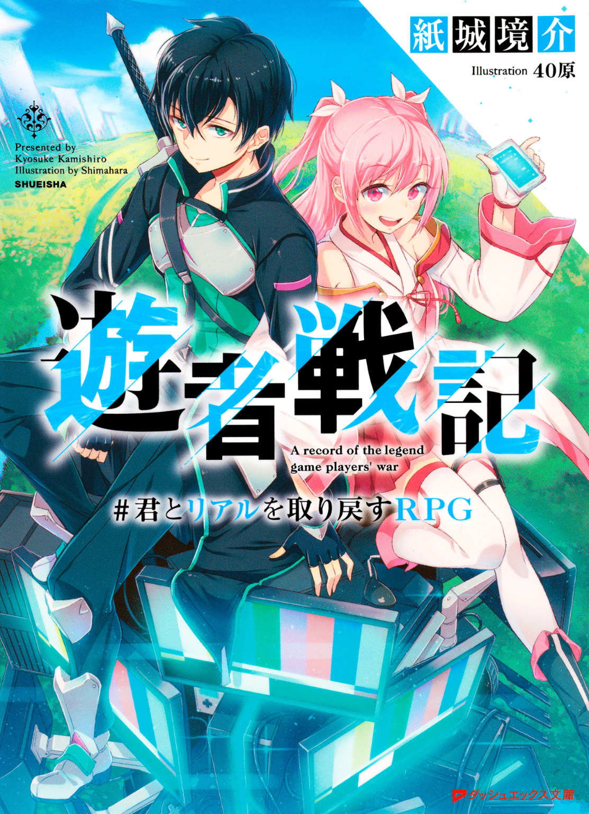
この本は縦書きでレイアウトされています。
また、ご覧になる機種により、表示の差が認められることがあります。
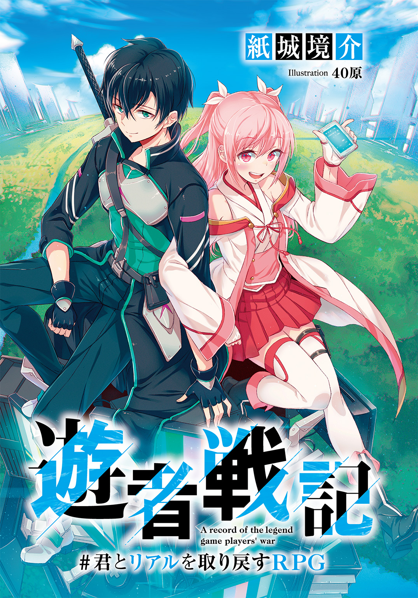
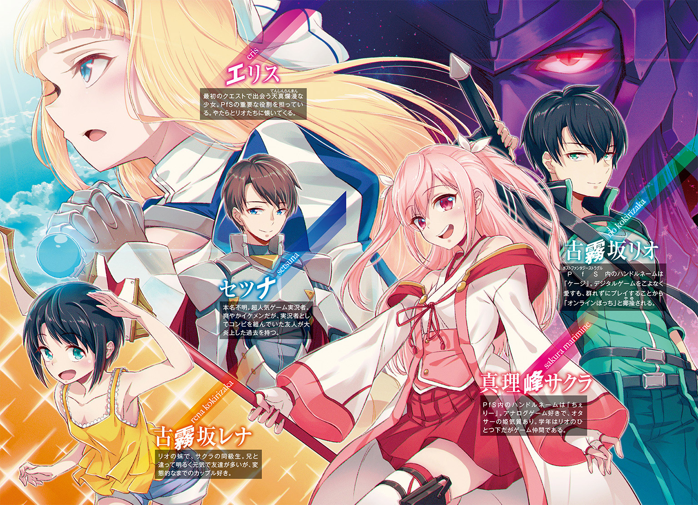
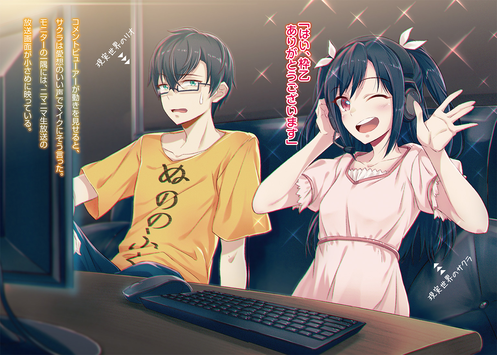
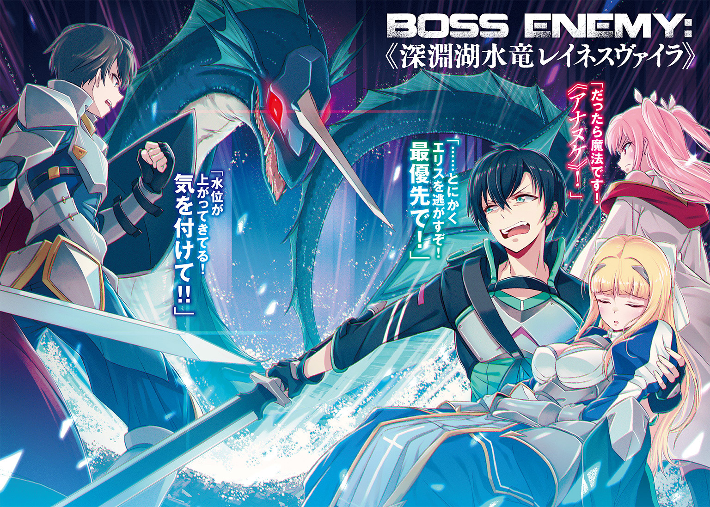
 ダッシュエックス文庫DIGITAL
ダッシュエックス文庫DIGITAL
遊者戦記
＃君とリアルを取り戻すＲＰＧ
紙城境介
始めに言おう。これはゲームであって遊びである。
俺たちが楽しく遊ぶだけの物語。ただそれだけの伝説。ただそれだけの戦記。
記憶とタイムラインにだけ刻まれる、人類史上最大の実況プレイ。
だから問おう。楽しむ準備はできているか？
できているなら始めよう。正義も悪も存在しない、ただ面白いだけのゲームを。
さあ――一緒に遊ぼうぜ。
第一章 「アーシュゲイン」から始まるＲＰＧ
俺はエレベーターで四階まで上がり、ホビーショップ《ブルーシップ》に入った。手前には無数のカードが並んだショーケースがあり、奥の棚にはボードゲームの箱が並んでいる。
呼び出し場所は対戦スペースだった。決して広くはないスペースは半分以上が空いていて、にもかかわらず、ある一角だけ人口密度が妙に高い。
その人垣の中心に、あいつがいた。
「――あ、すみません。引きました」
「「「つえええええええええええええええ――――っ!!」」」
休日の中高生や大学生、職業がよくわからんおっさんなどが、揃って歓声を上げる。
その真ん中でカードを繰っているのは、恐ろしいことに一人の女子中学生だ。しかも顔は人形みたいに整っていて、服装は今風に垢抜けていて、極めつけに地毛の黒髪がさらりと長く伸びている。ファッション雑誌の表紙か、またはアニメのパッケージにでも映っていそうな姿が、男どもに混じってＴＣＧに興じているのだった。何のイベントだよ。
「いやー、サクラちゃん相変わらず強いわー！」
「いえいえ。そちらのミスのおかげです」
「ほんとそれ。お前プレミひどすぎ」「これだからコピーデッカーは！」「うるせえなあ！ お前らが横からぎゃあぎゃあ口挟んでくるからだろうが！」
......入りにくい......。もう帰ろうかな。
集団を遠巻きに見ていると、カードを片付け終えた女子中学生――サクラと目があった。
「あ。リオ先輩っ！ もう、遅いですよ～！」
瞬間、表情をパッと華やがせてサクラが叫び、同時、俺は男たちの視線で蜂の巣にされた。
白いコードが抜けたような沈黙。しかし、サクラの奴は空気を無視して畳みかける。
「ずっと待ってたんですよ？ 可愛い彼女を待たせるなんてひどい先輩ですねー？」
キラキラ笑顔に『さっさとこっち来いやオラ』というメッセージを読み取り、俺はぎこちない足取りで人垣の中を抜けていく。その間、周囲の連中が何やらこそこそ囁いていた。「エラい重役出勤やのお」「やっぱ彼女持ちはちゃいますなあ？ ええ？」怖い怖い怖い怖い。
無言で席を立った大学生と入れ替わりにサクラの対面に座ると、サクラはキラッキラの笑顔を維持したまま、萌え声女生主みたいな声で周りに告げる。
「じゃあ申し訳ありませんけど今日はこの辺でー。ありがとうございましたー」
「んだよー」「次、俺の番だったのにー」「もうちょっと時間あったらなー」
遠回しに『もうちょっと遅く来いやクソ野郎が』と言いながら、群れていた連中は散っていった。俺はテーブルに寄りかかると、ぜはあ、と息を吐き、眼鏡の位置を直す。
「なあ......これ、何回やればいいんだ......？」
「やだぁ～、そんなの決まってるじゃないですかぁ～。ここに来るときは毎回ですよっ♪」
「もうやめろそのドロ甘声！ 超音波すぎて混乱するわ！」
サクラは一転、くすっとかすかな笑みを漏らす。アホっぽいキラキラ笑顔はいつの間にやら消え去って、今は知性を窺わせる静かな微笑が浮かんでいた。
「彼氏役ご苦労様です、先輩。おかげで今日も人払いが簡単に済みました」
「オタサーの姫も大変だな」
「私は姫じゃないですよ。すでに姫がいるところに後から入っちゃったことはありますけど」
「うっわあ......地獄絵図だ......」
「ほんとなんなんですかね？ 何にもしてないのにどうして私が悪者扱いされなきゃいけないんですか？ 人より可愛いのがそんなにいけないんですか？」
「いや愚痴られても何も言えんし。最後のナルシスト発言で同情もしにくいし」
こいつはサークラ――ではなく真理峰サクラ。俺――古霧坂リオからすると、その関係は『一つ年下の後輩』で『妹の友達』ということになるか。
目立たない俺に比べ、サクラはとにかくモテる。特にオタクに。
葦原皇国人とのハーフで純粋な黒髪ってだけでも目を惹くのに、体格は程良く小柄で髪型は幼げなツーサイドアップ......なんつーか、二次元から飛び出してきたような容姿なのだ。
そして極めつけに、こいつ自身、結構なゲームオタクだった。ただしアナログ専門。デジタル専門の俺とは真逆である。
俺は背もたれに身を預けてため息をついた。
「姫扱いがそんなに嫌なら別のとこで待ち合わせればいいだろ。彼氏役はもうごめんだ」
「そう思って喫茶店で待ち合わせたら、先輩、お店の前で三〇分くらいうろうろして、結局入ってこなかったじゃないですか」
............し、慎重を期しただけだし。お洒落な雰囲気に尻込みしたわけじゃないし。
「まあ、あのときは私にも非がありました。友達のいないぼっち先輩にとって、お洒落な喫茶店は穴熊囲いよりも堅牢な要塞だということを失念していました」
「誰がぼっち先輩だ」
「あっ、ごめんなさ～い！ ソシャゲですらフレンドを作れないオンラインぼっち先輩♪」
「作れ......つ、作れ......作れるわい！ あとぶりっ子キモい！」
サクラは口元を押さえてくすくす笑う。楽しそうでよろしおすなぁ。
「......で？」俺は意図的に不機嫌さを滲ませながら言った。「今日は何の用なんだよ？」
サクラとは遠くも近くもない間柄の俺だが、事あるごとに――主に女子だけじゃ行きにくいイベントのときとかに――駆り出されていた。なぜって、俺のことを散々いじっておきながら、実はこいつも同じ趣味の友達がいないのだ。さっきみたいな取り巻きめいた連中はいるが、ああいう連中とは一線を引いているらしい。
俺の質問に対し、サクラはにやりと、オチ直前の手品師みたいな笑みを浮かべた。
「私と一緒に、あるゲームに参加してほしいんです」
「あるゲーム？」
はい、と言って、サクラは自分のスマホを俺に見せてきた。
画面には、メッセージが書かれた吹き出しが上から下に連なっている。
「これ、ウチのクラスＬＩＮＫなんですけど」
「クラスＬＩＮＫ？」
「クラスで作られたＬＩＮＫのグループですよ。先輩のとこにもあるでしょう？」
「あるのか？」
「......すみません。無神経なことを言って」
「おい。殊勝に謝るな」
からかわれるより傷つく。
「ともあれ、相手のほうのメッセージを読んでみてください」
言われた通り読んでみる。えーと......『波へ呑まれる白砂のように』――
「......なんだこれ。意味わからん。暗号か何かか？」
「察しがいいですね。暗号なんです、これ」
「は？」
俺はそのメッセージの送り主を確認する。どうやらクラスメイトのようだが......。
「今時の女子中学生って暗号で会話すんの？」
「アカウントを乗っ取られてるんですよ。ほら、アイコンまで変えられちゃってます」
アカウントの乗っ取り......。確か一昨年くらいにそんなのが流行ったな。
「この暗号、最近エムル市の学生を中心にやたら出回ってるんです」
「エムル市......この街だけでか？」
「そうです。あんまり怪しいんで、ネットで有志が集まって解読したんですが......」
サクラはスマホを操作し、また画面を俺に見せた。
「その結果辿り着いたのが、このトゥイッターアカウントです」
ポストファンタジー・ストラグル@help_real0550 201658
双月紀元２０１６年６月26日午後３時、ファンタジーへの扉が開く。
勇者たちよ、第三の眼を持ちて扉を探せ。姿なき妖精が諸君らを導くだろう。
約束の言葉は「アーシュゲイン」。
末尾には短縮ＵＲＬ。......怪しすぎる。俺はその呟きをしばらく真剣に観察した。
「要するに......」俺は訝しさを交えて言う。「二〇一六年六月二十六日午後三時に始まる『ポストファンタジー・ストラグル』っていうゲームの......プロモーション、か？ これ？」
「そう私たちは解釈しました」
「いや、ありうるのか、それ？ アカウントハックとか普通に犯罪だろ」
「どうでしょうね。アカウントハックに見せかけたステマかもしれませんし」
「ステマねえ」
もっと他にいい手段があると思うが。
「っていうか六月二十六日の三時って......」俺は自分のスマホを見た。「......あと三〇分だぞ」
今日は双月紀元二〇一六年の六月二十六日日曜日。そして現在時刻は午後二時半だった。
「ですね。時間もありませんし、ここから先は移動してから説明しましょう」
「移動？ どこにだ？」
「書いてあるでしょう？」サクラはスマホを指差した。「『ファンタジーへの扉』ですよ」
今日のエムル市は、昨日までの土砂降りが噓のように晴れ渡っている。おかげで太陽光線と湿度が合わさってとんでもない不快指数を叩き出していた。
エムル市は歴史の街だとよく言われる。大昔からある神殿や教会、修道院、聖堂、城、宮殿といった歴史的建造物が、コンビニと同じくらいの感覚で街に溶け込んでいるのだ。おかげで修学旅行生の姿が絶えないし、外国人観光客がそこら中を歩いている。
ビルを出た俺とサクラは、殺人的な日差しを避けてアーケードを歩いた。映画館の前を通りかかり、看板の一つに目が留まる。あるアニメ映画のポスターである。
「あ、《ＭＡＯ》の劇場版ですね。もう始まってたんだ」
俺が見ているものに気付いて、サクラが言った。《ＭＡＯ》――《マギックエイジ・オンライン》は、ＶＲ（仮想現実）オンラインゲームが題材のライトノベルだ。今のラノベの中では間違いなく一番売れていて、かつ、一番有名である。なぜそう断言できるのかというと――
「大盛況みたいですね。まあそれも当然ですか」
「ああ。《論文巻》が出てからまだ一年だしな」
ＭＡＯには意識をデータの世界に没入させる架空の科学技術が登場する。一年前に出た新刊でその技術に関する詳細な設定が明かされたのだが――それがあろうことか、現在の、現実の技術水準で充分に再現可能なものだった。小説に書かれた設定を忠実になぞるだけで、今まで影も形も存在しなかった全感覚没入型ＶＲデバイスが、本当に完成してしまったのだ。
現代科学を革新させる発表が、論文ではなく小説で、突然に行われた。このニュースは世界中で話題をかっさらい、元々売れていたＭＡＯはさらに売れまくってシリーズ累計一億部突破。そして今、劇場版が興行収益記録を更新しまくっているというわけだ。
「発売まではもう少しかかるんだっけか？ 《バーチャルギア》は」
「そうですね。法整備やら安全対策やら......あと聖旗教の反発とかもあって、もう何年かかかるんじゃないかって話です。......もしＭＡＯ的なゲームが発売されたら、先輩はやります？」
「愚問だな」俺は笑った。「万難を排してやるに決まってんだろ。そう言うお前は、やっぱりやらないのか？ アナログ専門だから」
「なに言ってるんですか。完全仮想現実にデジタルもアナログもあります？」
「確かにな」
常より少し弾んだ声は、サクラの完全ＶＲゲームへの期待度の高さを窺わせた。俺も俺で、この話をすると知らずテンションが上がってしまう。ほんの一年前まで、まさか完全な仮想現実が実現するなんて思ってもいなかったのだから、それも仕方のないことだ。きっと俺たちだけでなく、世界中のゲーマーが同じ気持ちでいることだろう。
「作られるとしたら、やっぱりＭＡＯみたいに魔法時代が舞台なんですかね？」
魔法時代は、千五百年くらい前から千年間ほど続いたとされる時代だ。特徴はただ一つ――どんな時代だったかまったくわからないこと。なのだが、昔とある学者が『実はこの時代には魔法が実在した』なんて言い出して以降、作家の玩具と化している。ＭＡＯもその一つだ。
「......そういえば、エムルには魔法時代のものっぽい建物もいっぱいあるらしいな」俺は映画館から視線を切った。「『ファンタジーの扉』ってのは、そのどこかなのか？」
「いえいえ、もっとファンタジーな場所ですよ」サクラは笑う。「近くのネットカフェです」
受付で支払いを済ませたあと、サクラに案内されたのは、ペア用のブースだった。トイレの個室みたいな狭い空間に二人用のソファーが置かれ、その前にテーブルとパソコンがある。
ペアブースなんてあるんだなあ、と何気なく上を見ると、壁と天井の間に隙間がなかった。
「完全個室じゃねえか!!」
「ついでに防音性も高いので、絶叫でもしない限り大丈夫ですよ」
サクラはボフッとソファーに腰を下ろす。そして立ちっ放しの俺を見上げ、
「どうしたんですか？ 早く扉閉めてくださいよ」
だ......大丈夫なのか......？ 外に声届かないんだぞ......？ 結構狭いんだぞ......？
サクラは小首を傾げていたが、すぐに「ああ」と納得の声を漏らした。
「ご心配なく。いっちょ前に意識しなくても、先輩如き、この距離でも勝てます」
「お前俺ナメすぎ!!」
「試してみますか？」
どうぞ、とサクラは両腕を広げた。どうぞって。
......ようし。よーしよしよし。俺は扉を後ろ手に閉めると、ソファーに膝を乗せ、サクラの前で両手をわきわきさせて威嚇した。ほーら怖いだろう......――
「えいっ」
「ひあん!?」
いきなり脇腹をつつくな！
「ふふふ......『ひあん!?』ですって。『ひあん!?』。先輩、かっわいー♪」
むぐぐ......！ 圧倒的な敗北感......！
「ほらほら先輩、こっちおいでー。頭撫で撫でしてあげますよ？」
いらんわ。俺はすごすごとサクラの隣に座った。今度格ゲーでボコる。
ソファーは小さく、肩も足もすぐ当たってしまう。あと髪。烏の濡れ羽色の髪がちょくちょく肩や首筋をくすぐった。すっげえいい匂いするんだけど何コレ。シャンプー？ 自然と顔に血が集まりそうになるが、ここで赤面するとまた負けた気分になる。我慢だ我慢。
「......これでよし、っと。先輩、あのアプリ、ダウンロードしました？」
「え？ あ、ああ......」
耳元で喋るな。ドキドキするだろうが。
俺はスマホを取り出す。あの謎アカウントの謎トゥイートに書かれていた短縮ＵＲＬは、あるアプリのダウンロード画面に繫がっていた。さっき落としたそのアプリのアイコンが、数々のゲームに混じって表示されている。《3rd_eye》――第三の眼。
「じゃあ起動してみてください。表示許可したので見えるはずです」
アプリを起動するとカメラ画面になる。レンズを通したブース内が映っていて――ん？
俺は立ち上がり、ブース全体を俯瞰するようにした。
「なんだ......この渦」
光の渦だ。《サードアイ》が映したブースには、白い光のようなものが渦巻いていた。肉眼でも見てみるが、そんなものは存在しない。光が渦巻いているのは画面の中だけ。
「拡張現実か」
「はい。その渦が『ファンタジーへの扉』――私たちは《ポータル》と呼んでいます」
再び座ると、横からサクラがスマホを覗き込んでくる。だから近い。
「この光の渦が、エムル市内のいろんな場所に隠されてるんです。ここは私が自分で見つけたところですけど、他にもたくさん発見されてます」
なるほどな......。なんかIngressみたいだな。
「それで、このポータルをどうすればいいんだ？」
「わかりません。三時になってからのお楽しみ、ってことだと思います」
「は？ いや待て」俺は隣を見た。近っ。やっぱり正面を見た。「まさか......お前もこの《ポストファンタジー・ストラグル》ってゲームがどういうものなのか、わかってないのか？」
「はい」サクラはあっさり頷く。「代替現実ゲームじゃないかとは思ってるんですけどね」
「お前......自分でもなんだかよくわからないもんに俺を誘ったのかよ」
「だって」
その声に、俺は思わずサクラを見た。
「面白そうじゃないですか」
桜色の唇が、興奮に緩んでいる。『面白そう』――それこそが、こいつの行動原理なのだ。
そして、俺もまたすでに、思ってしまっている――『面白そうだ』と、居ても立ってもいられないくらいに。だってそうだろ？ 秘密裏に出回った暗号でのみ開始が告知され、現実世界に隠された入口を見つけ出した者のみが参加できるゲーム――興味が湧かないはずがない。
「答えは聞かなくてもいいみたいですね」
こうなると思ってましたと言わんばかりのサクラに、俺は「まあな」と返す。
スマホの時計を見た。午後二時五十九分――ちょうど時間だ。
俺はサードアイのアプリを開き直し、周囲に渦巻く光を見た。
そして――双月紀元二〇一六年、六月二十六日日曜日、午後三時ジャスト。
ＡＲ描画された白い光の渦が、青の輝きを帯びた。
息を呑む俺たちの目の前で、スマホの画面が独りでに動き、〈ご用件は何でしょう？〉と表示される。それは流通する大半の機種でプリインストールされているアプリ――
秘書機能人工知能アプリケーション《Ｓｅｒｉ》。
――― 姿なき妖精が諸君らを導くだろう ―――
俺はサクラと顔を見合わせて頷き合う。Ｓｅｒｉに告げる内容はもうわかっていた。
約束の言葉は――
「「――《アーシュゲイン》」」
ポポンッと音が鳴り、Ｓｅｒｉは文章と人工音声の両方で答える。
〈承知致しました。お手持ちの端末を耳にお当てください〉
言う通りにした。――瞬間。
意識が大量の閃光に吹き飛ばされた。
%%%%%%%%%%%%%%%%%%%%%%%%%%%%"D. E. 0550/12/18/10:23:26"%%%%%%%%%%%%%%%%%%%%%%%%%%%%%%%
「うおっ!?」
足から力が抜けて倒れそうになった。......って、あれ？ 俺、ソファーに座ってたよな......。なのに、倒れそうに？ いつの間に立ち上がったんだっけ......？
「どこ、だ......ここ」
さっきまで俺がいたのは、座って足を伸ばすのがやっとの、トイレの個室みたいなネカフェのペアブースだったはずだ。なのに今、俺が佇んでいるのは、木で組み上げられた部屋......広さもブースの四倍はある。埃が充満していて、お世辞にも居心地のいい場所とは言えなかった。
そうだ......サクラは？
後輩の姿を求めて隣を見やると、果たしてそこに、一人の少女がいた。
巫女めいた紅白の色彩の、ローブのようなドレスのような格好をしている。長いピンクの髪をツーサイドアップにしていて――ん、サクラと同じだな。あれ？ ......あれ？
「......もしかして、先輩ですか？」
サクラっぽい少女は、俺の顔を見ながらそんなことを言った。
俺のことを先輩と呼ぶのは、世界で一人しかいない。
「やっぱりお前、サクラなのか......」
言われてみれば、それ以外には見えない。どうして一目でわからなかったんだ？
「そちらこそ、いつの間にイメチェンしたんですか？」
「は？ イメチェン？」
反射的に顔を触ると、あるべき感触がそこにはなかった。......眼鏡がない。小学生の頃から連れ添ってきた顔の一部が。......え？ なのになんで、こんなに視界が明瞭なんだ？
「これは......」「どういう......」
二人同時に混乱の声を漏らして、そして同時に、正面に光射す窓を見つけた。
どちらともなく窓に飛びつき――開け放つ。
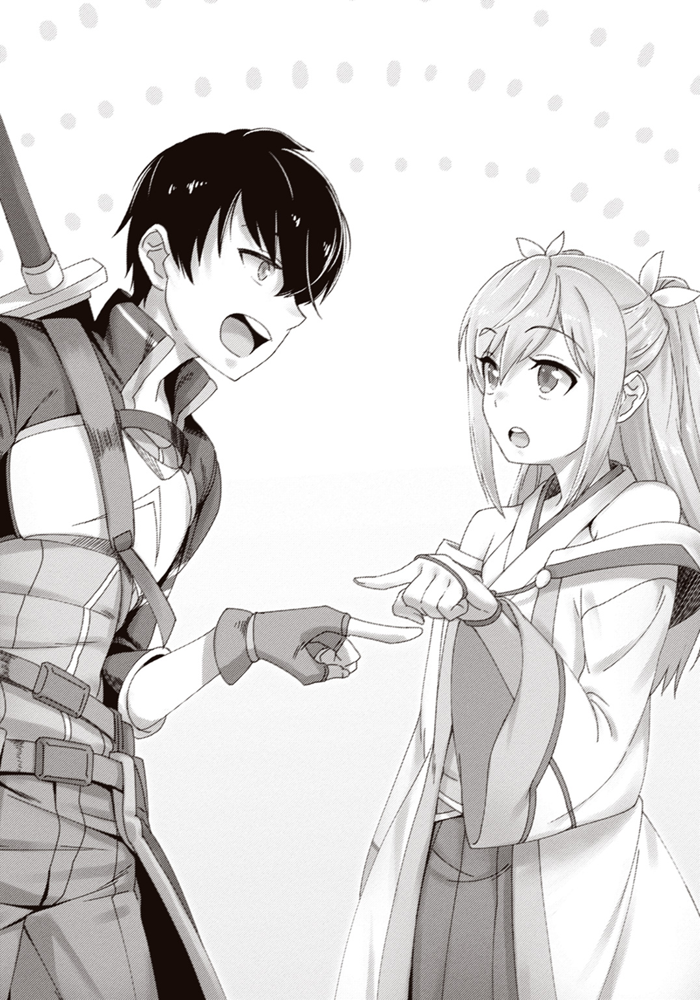
そこには、見たこともない世界が広がっていた。
いや、厳密に言えば、見たことはある。
漫画で、アニメで、映画で、そしてゲームで――何度も何度も見た世界。
当たり前のように馬車が走っている。行き交う人々の服装はどれも簡素で飾り気がない。コンクリートなど一片も見えず、木造や石造の建物ばかりが整然と軒を連ねていた。
ファンタジーだと、直感が告げていた。
ドラゴンやゴーレムやゴブリンやエルフやドワーフが出てくるまでもなく、ここはファンタジーの世界だと――魔法時代なのだと、直感が告げていた。
すぐそこを馬車が走っている。砂埃が目に入ってくる。人の声が耳に流れ込んでくる――この世界を、こんな視点で見たことはなかった。これは『見る』と言うのではない。『いる』と言うのだ。その世界に生きる人間だけに許されるはずの、『いる』という特権なのだ。
二十一世紀に生まれた俺たちにこんな体験ができるはずがない――ただ一つの例外を除いて。
「仮想......」「現実......」
バーチャル・リアリティ。完全仮想現実。ＭＡＯによって実現した新世界。
全感覚が告げている――俺たちは今、まさにそれを、体験しているのだと。
「あ......」「う......」
「「うあああああああああああああああああああああああああああああああ――――っっっ!?」」
俺たちは揃って、悲鳴とも歓声とも言えない叫び声を上げた。
「これ、なんっ......え？ マジで？ えーっマジで!? 噓お!?」
「まっマジです！ マジですよこれ！ 現実！」
「マジでーっ!?」
もう『マジで？』しか言えない。いや、だって、これ、マジでかこれ!?
「うわっすごっ......うわーっ！ 手動かしてみてください先輩！ 空気があります！」
「マジで？ ......マジだーっ!!」
「風を！ 風を感じますよ!!」
「うをおおおっ!! ちょっと寒い!!」
今は夏場なのに冬の寒気だ!!
「あっ！ あれ出せるんかな、あれ！ メニューウインドウ!!」
「ホログラムみたいなやつですね!!」
高まるテンションのままにいろんなジェスチャーを試した末、「メニューオープン！」と叫ぶと目の前にシュインシュイーンと二枚のウインドウが出現した。
「「出たぁあああああ――――――――――――――――っっっ!!」」
ちゃんと手で触れるのを確かめ、すげーすげーと二人して騒ぐ。俺がウインドウを摑んで移動させられることに感動していると、サクラが不意に叫んだ。
「先輩！ アイテム見てください！ 武器ありますよ！」
「何ィ!?」
二枚出たうちの一枚、アイテムウインドウ。見れば確かに、二つのアイテム名があった。上のは《鉄の剣》。下のは《樫の杖》だ。
俺は《鉄の剣》を押した。タッチパネルみたいなもんだと思っていたが、カチッと音を立ててヘコみ、反動で引き出しみたいに飛び出してきた。引き出しの中はタイムマシンでも置いてありそうな謎空間になっていて、その奥からシューンと、鞘に収まった剣の柄が顔を出す。俺がそれを鞘ごと摑んで引き抜くと、引き出しは独りでに引っ込んだ。
「おお......剣だ」
意外と重くない。鞘から引き抜くと、銀色の刀身がきらっと光った。
「剣だ......！」
これが全部プログラム？ 噓だろ？ もう現実とかいらなくない？
ともあれ、ひとつの事実があった。
ポストファンタジー・ストラグル――このゲームは、世界初のＶＲ―ＲＰＧだったのだ！
サクラは杖のほうを取り出して、オモチャを買ってもらった子供のように目を輝かせている。っていうか杖があるってことは魔法があるってことか？ 使えんの!? 魔法を!?
再びテンションが振り切れそうになったとき、
「そろそろよろしいでしょうか？」
無機質な響きの声が上から降ってきた。
俺たちは驚いて声の主を見上げる。
......妖精だ。天井近くに、手乗りサイズの妖精が浮いていた。陶器のようなつるりとした肌。トンボのような透き通った翅。顔立ちはマネキンのようだが、身体のラインは女性のそれだ。
陶器の妖精は俺たちの顔の高さまで降りてくると、折り目正しくお辞儀した。
「お初にお目にかかります。私が皆様をお呼びしたＳｅｒｉです」
「へ？ Ｓｅｒｉ!?」
確かにログインするのにＳｅｒｉを使ったが......。
「二〇一六年ではスマートフォンアプリに偽装しております。これもすべては、勇者様がたを見つけ、この時代にお招きするためです」
「なるほど......設定に利用してるんですね」
勇者様がた、というのは俺たちプレイヤーのことだろう。勇者ってことはもちろん――
「この時代のエムルには、魔王バラグトスの脅威が迫っております。皆様には、勇者となって魔王の打倒に協力していただきたいのです」
使い古されたド王道。だっていうのに、どうしようもなくワクワクしている自分がいる。画面越しじゃないってだけでこんなに違うのか......！
「私も秘書として微力を尽くしますので、どうか――」
「きゃああああああああっ!!」
突然悲鳴が響いてきて、俺たちは身を竦ませる。なんだ今の？ ほとんど反射的に、俺とサクラは開けっ放しの窓から外を見た。
人々が悲鳴を上げながら同じ方向に逃げている。彼らが逃げてくる方向に目を向けた。踏み固められた道の先から、狼のような生き物が数匹、こちらに疾駆してくるのが見える。その手前には、転んだのか倒れている少女が一人。
「魔物です。人を襲っています！」
無機質ながら切迫感のある声でＳｅｒｉが叫ぶ。俺はサクラを見た。不敵さと興奮を織り交ぜた笑みがそこにあった。きっと今、俺も同じ顔だ。
「行くぞ」
「当然！」
俺たちは窓から外に飛び出した。
身が軽い。現実の身体とは比べものにならない。そのおかげで、俺たちは狼どもと少女の間に割り込むことができた。
「怯えることはありません。皆様は見えないシールドで守られています。攻撃を受けても傷つくことはありません。ただし、ダメージを受けすぎるとシールドは破壊され、元の時代に戻されてしまいます。お気をつけて」
ついてきたＳｅｒｉが言った。チュートリアルか。俺は背負った剣の柄を摑む。剣なんて触ったこともない俺だったが、まるで何百回も練習したように抜き放ち、構えることができた。
先頭の狼を見据えた。舌を出してハッハッと荒く息を吐いている。見れば見るほどリアルだ。もし現実でこんなデカい狼と向かい合ったら足が竦んで動けなかっただろう。
だが、これはゲーム。つまり、俺の唯一の得意分野だ――！
俺は自ら狼との距離を詰めた。一瞬遅れて狼も飛びかかってくる。迫り来る鋭い爪を、俺は反射的に左腕で受け止めた。
バチンッ！ と音が弾け、俺のほうが仰け反る。同時、緑に色づいた膜のようなものが俺の体表に浮かび、一瞬で消えた。今のがシールドか？ 出しっぱなしだったメニューをちらっと見ると、シールドの耐久力を示すらしいゲージが少しだけ減っている。
衝撃はあったが痛みは皆無。ちょっと驚いたがそれも消えて、俺は右手の剣を強く握った。
狼の首を狙い、勢いよく振り下ろす。
生々しい感触はなかった。木の板でも斬ったような軽い手応えだけがあり、黒い毛皮に赤い光芒の筋が走る。直後、狼の身体から力が抜け、青紫の炎に包まれて跡形もなく消えた。
「......も、燃えた......？」
振り向くと、逃げ遅れた少女がこちらを見て驚いていた。今の、ＮＰＣにも見えてるのか。
グルル――唸り声に視線を戻す。四匹の狼が固まって、警戒の眼差しを俺に向けていた。
「こうなると容易には近づいてくれません。魔法で攻撃してみましょう」
魔法！ キタコレ！ 使い方プリーズ！
「掌から火の玉が飛び出す光景をイメージしてください。着弾の瞬間まではっきりと」
俺は掌を狼の群れに向け、言われた通りのイメージをした。むむ......結構難しいな。
一〇秒ほど使ってどうにかイメージを終えた頃、
「できましたら、こう唱えてください――《射影開始》」
「《射影開始》！」
瞬間だった。掌の先で炎が渦巻く。ちょっと熱い。マジで火だ。炎はソフトボールほどの球体を形作りながら、狼に向かって宙を走った。軌道上に火の粉が残る。着弾と同時、火球は四方に弾け、黒い体毛を燃やして狼をのたうち回らせた。
「ほ......本当にでっ――」
歓声を上げようとした瞬間、頭上を炎の波が飛び抜けていった。四匹の狼がまとめて呑み込まれ、次々と青紫の炎に包まれて消えていく。数秒後、残ったのは焦げた地面だけだった。
俺は歓声を迸らせるはずだった口を開けたまま、炎波が飛来した背後を振り返る。
そこでは木製の杖を焦げ跡に向けたサクラが、「ふー」と息をついていた。
「やってみたらもっと強いの使えちゃいました」
「空気読めばか!!」
初魔法は敗北の味がした。
俺も絶対同じのやる！ と躍起になる間に、サクラは逃げ遅れた少女を助け起こしていた。
「あ、あのっ......助けていただきありがとうございました......」
結局諦めた俺が合流すると、少女はそう言って頭を下げる。
「あの、この辺りでは見かけませんが、あなたがたは......？」
「あっ、えー......」
早くもこのゲームの致命的な欠陥を発見してしまった。なんとキャラと喋ってるのに選択肢が出ないのだ！ 緊急メンテ不可避。
「旅の者です」サクラが俺を押しやりながら言った。「なのでこの辺りのことはよく知らないのですが、今のようなことはよくあるんですか？」
コミュ力の怪物ことサクラが俺の手足となって働いたおかげで、この街の状況が判明した。
あの狼たちは近くの山から下りてくるらしい。山には親玉狼がいて、そいつが街まで手下を差し向けているそうだ。親玉狼さえ退治できれば手下の狼もどこかへ逃げていってしまうはずなのだが、同時に最近、魔族の侵攻が頻繁にあるらしく、衛兵はそっちに手一杯らしい。以前、腕利きの冒険者に退治を依頼したこともあったが、帰ってこなかったと言う。
と、あらかた話を聞き終えたところで、ピロンッという音が耳朶を打った。
二枚あるウインドウの、シールド耐久力残量などを表示しているほう――メイン画面とでもするか――に目を向けた。......っと、シールド残量が徐々に回復してるな。放置で回復するのか。発見だったが、今は後回しだ。メイン画面の右上辺りに、新たな文字列が出現している。
【グランドクエスト：魔王バラグトスの打倒】
【セグメントクエスト：少女エリスを救出する 03:47:35】
【セグメントクエスト：バーサークウルフを倒す（０／１） 06:17:35】
グランドクエストは、まあゲームを通しての最終目標か。魔王バラグトスを倒せばオールクリア、ということだろう。セグメントクエストっていうのは聞き慣れないが......。
「セグメントクエストは、いわば『現在の目的』です」絶妙なタイミングで妖精のＳｅｒｉが解説した。「右端の数字は制限時間です。こちらの時代にいられるのは《扉》のエネルギーが持続している間だけなので、時間と相談しながら攻略を進めましょう」
あん？ 《扉》のエネルギー？
「先輩、画面の上のほうを見てください。『残り滞在可能時間』というのがあります」
「お、ほんとだ」
今は三時間四十六分四十九秒......八秒......七秒......六秒......。
「これがゼロになったらどうなるんだ？」
「強制送還になり、次に《扉》が開くまで再訪は叶いません」
Ｓｅｒｉが答える。ログインできる時間が限られてるのか......。もしかしたらベータテストかなんかなのかもな。そんなんチートや！
となると油を売ってはいられない。改めてセグメントクエストを見る。バーサークウルフとやらは、たぶんさっき話に出た狼の親玉のことだろう。でも少女エリスって誰だよ。エリスなんて名前、クラスに二、三人くらいの確率でいるだろ。
「お困りのようでしたら、ヒーロー・タイムラインで情報を集めてみるのは如何でしょう？」
身長二〇センチの妖精がひらひら舞いながら言った。
「ヒーロー・タイムライン......って、なんですか？」
「勇者様がたの情報共有を円滑にするための機能です」
ピョコン、と目の前に新しいウインドウが現れた。
「ご記名をお願いします。登録はそれで完了です。本名でもハンドルネームでも構いません」
画面中央の空欄をタップするとキーボードが現れた。俺はちょっと考え、いつも使っているＨＮを入力する。《cage》。本名――リオ（檻）のもじりである。
「――ケージ様、ちぇりー様、登録を完了しました。ヒーロー・タイムラインを起動します」
サクラのＨＮは《cherry》らしい。人のこと言えないが、安直だな......。
スマホみたいな縦長のウインドウに、なんか見覚えのある画面が表示された。
「タイムラインって単語から予想はついてたが......トゥイッターじゃねえか、これ」
「このゲームのプレイヤーだけが使えるトゥイッターって感じですかね？」
すでにいくつかの呟きがあるタイムラインの他には、いま入力した自分のＨＮや『現在の勇者数：84人』といった表記がある。なんつーかトゥイッターというより、古のネット世界で隆盛を極めたというチャットルームみたいだ。
〈いえーい、見てるー？〉〈84人もいたのかこれｗ〉〈まさかのＶＲＭＭＯwwwwこれも流出って言うん？〉〈おっ、音声入力あるじゃん〉〈これヤバない？ デスゲームだったりして〉〈ＭＡＯの読みすぎwwwwwwwwwwwwwwww真っ先にログアウトできるか確認しました〉
ちょうどチュートリアルが終わる頃なのか、見る間に呟きが流れていく。
「こんなのが用意されてるってことは、クエストって全員で共有なんですか？」
サクラがＳｅｒｉに訊いた。
「はい。皆様で協力してクエストクリアを目指してください」
ああ、そうなのか......。俺は一人でじっくりやりたいタイプなんだけどな。
ひとしきり感動を共有し合うと、タイムラインはクエスト攻略に話題を転じた。
提示されたセグメントクエストは二つだ。少女エリスを云々のほうは情報が足りないが、バーサークウルフのほうはやることがはっきりしている。そんなわけで、情報収集組とバーサークウルフ討伐組に分かれる流れになった。
「どっちにします？」
「ふっ、愚問だな」
「討伐組ですね？」
「はい」
聞き込みとか無理です。
時間軸は双月紀元五五〇年という設定になっているが、場所は変わらずエムル市のようだ。だが、現代のエムルと比べると少し地形が違う。端的に言うと山が多い。現代では平野の場所に、小山がぽこぽこ散在している。なので目的の山は思ったより近くにあった。そのうえ全力疾走してもまったく疲れないので（楽しい！）、移動はあっという間だ。
木々生い茂る山道にがさがさ分け入っていく。
「改めて見ると、ほんとすっげえディティールだな......」
「メニューとかのゲームっぽい要素がなかったら、現実と区別つきませんよね......」
今も俺の周囲にはメニューが浮かんでいる。裏返すと指の腹以外すり抜けるモードになるので、視界外に置いておけば出しっ放しでも邪魔にならないのだ。ウインドウの数は四枚。メイン画面、アイテム画面、タイムラインに加え、マナ濃度図ってのがある。
「こりゃ法整備が必要になるわけだ。いろいろ悪用できそう」
「その法整備を待たずしてリリースしちゃってるのがこれなんですけど。しかもヘッドマウント型じゃなくてただのスマホを媒体にして」
「それなんだけどさ、ＭＡＯの《論文巻》のおかげでＨＭ型ＶＲマシンができたってだけで、それイコールＨＭ型しか作れないってわけじゃないんじゃねえの？ 原理をスマホに応用して作った研究中のやつを、どっかの承認欲求マンが勝手にばら撒いちまった......とか」
「その割には手が込みすぎじゃないです？ Ｓｅｒｉが絡んでる説明もつきませんし」
俺は横でぱたぱた飛んでいる陶器の妖精を見た。言われてみればそうか。
「まあ仮想現実に入ってはいけないって法律があるわけでもなし、どうでもいいですよ、ことの経緯なんてのは」
「意外と気にしてないんだな。お前は細かいことまで気にするタイプだと思ってた」
「場合によりますよ。この圧倒的な体験の前にはすべてが沈黙します！」
要するにテンションが上がっているらしい。まあ俺もおおむね同意だ。
話しているうちに、前方から水音が聞こえてきた。川だ。
ついさっきの話だが、バーサークウルフとの交戦報告が早くもタイムラインに齎された。敢え無く撃沈したようだが、そいつによると奴は川辺にいるらしい。川に餌があるとかいう話だ。
「......いた」
後ろのサクラを制し、身を低くして木陰に隠れる。一目でわかった。軽トラみたいな大きさの黒い狼――あんなもん、普通の動物のはずがない。川面に尖った鼻先を差し入れている。
「水を飲んでるのか？」
「いえ......違います。すぐ傍にダムがあるの、見えますか？」
ダム？ 魔法時代にダムなんてあるわけ――と思ったが、あった。
木で編み上げられた壁が川の流れを遮り、そこそこ深そうな池を形成している。バーサークウルフがいるのはそこだ。そしてその水面は、赤く濁っているように見える......。
「ダム......ビーバーか」
「主食なんでしょうね、ビーバーが。見た感じ死体はありませんけど......」
「水底に沈んでるんだろうな......」
画面越しならともかく、ＶＲでのグロはさすがに勘弁。規制があることを祈るばかりだ。
「じゃあまあ、とりあえず行くか？」
「絶対説明書読まないタイプですよね、先輩は」
「読まなくても平気なんだ、最近のは。それに死んでもログアウトさせられるだけだろ？」
「いえ」Ｓｅｒｉが言った。「申し訳ありませんが、シールドの再構築に一〇分頂きます」
「一〇分ですか......。その上ログイン地点からリスタートとなると、結構重いかもですね」
確かに......。何せ時間が限られている。無限に遊べるなら気にもしないが......。
「ならこうしよう。サクラが魔法で先制攻撃を決めてから俺が突っ込む」
「わーすご～い！ さっきとほとんど変わってませんね～！ 記憶力ないんですか～!?」
「最初に『わーすごーい！』って付ければ何言っても許されると思ってんじゃねえぞコラ!!」
「まあまあ。今度屋上とかで寝っ転がってるのを見つけたら、『せーんぱいっ♪』って言いながら上から覗き込んであげますから」
「............く、くそう!!」
ちょっとやってみてほしいと思った自分が憎い!!
結局、作戦は俺の案を採用した。スッと決めろや。どんだけ俺の言うこと聞きたくねえんだ。
サクラが杖を構えると、丸みを帯びた先端に赤い光点が灯る。それから、「ぼんっ」突然バスケットボールほどに巨大化して、俺は腰を抜かしかけた。
「あ、あの呪文は？」と訊くと、「頭の中で唱えてます」と答えが。それでもいいのかよ。
火球が耐え切れなくなったように脈打つ。これ一発で終わっちまうんじゃないだろうな......。軽く心配になってバーサークウルフに視線を転じ、
「サクラ!! 前!!」
「えっ？」
猛然とこちらに突進してくるバーサークウルフを目撃した。
サクラが火球を放つが、慌てたからかあまり勢いがない。案の定バーサークウルフは額に火球を受けながらも強引に突っ込んでくる。突然のことに、俺たちは反応できなかった。
「うおっ!?」「きゃっ......!!」
暴走トラックめいた巨狼に、二人まとめて吹っ飛ばされる。黄色いシールドが一瞬薄く浮かんだ。縺れ合いながらごろごろと地面を転がる。木の根にぶつかってようやく停止した。
「いってて......」
いや、痛くはないんだけど、心情的に。とにかく起き上がろうともがき、
「ひんっ！」やけに近くからそんな声が聞こえた。「わ、脇腹、さわらなっ......！ 先輩っ！」
抗議の声は、俺に抱き締められる形になったサクラのものだった。手に肋骨の感触が......。
「やっ、んっ......！ ――ああもう！ やめてくださいっ!!」
バヂンッ!! 突如としてシールドが発動し、俺は後ろにひっくり返った。
「いッッッッてええええええええッ!!」
今度はマジで痛い！ のたうち回る俺を、サクラは自分の身体を抱きながら睨みつける。
「......今、どさくさ紛れに胸触ろうとしたでしょう」
「おごごご......!!」痛すぎて反論できない！
「セクハラ防止機能があって助かりました。そういうのは、少しでも私をときめかせてからにしてください。今のとこゼロポイントですからね」
おのれこの自意識過剰女、と反論しかけたそのとき、
「ッ！ 危ねえ!!」
サクラに飛びつき、突き飛ばすようにしてその場を離脱した。
直後、バーサークウルフが再び突風めいて通りすぎる。危なかった......。さっきシールドが黄色くなってたから、もう一発喰らってたらたぶん耐えられなかった。
再び組み伏せる形になったサクラが、ぱちくりと目を瞬いている。試しに訊いてみた。
「今の、ポイントつくか？」
「............れいてんご」
きびっしいな。何点満点か知らねえけど。
ともあれ戦闘中だ。俺たちは急いで立ち上がり、バーサークウルフが去った方向を見た。木々の間を過ぎっては消える巨大な影。――速い。なんつうスピードだ。あの巨体であのスピードとか、象の上位互換じゃねえか。調整班仕事しろ。
「サクラ。あいつに魔法当てられるか？」
「無理ですよ。視界最悪ですし、せめて動きを止めないと」
視界の悪さと動きの速さのせいで、一回瞬きしただけで見失ってしまう。......待て、瞬き？
俺は木々の向こうを横切る巨影を目で追った。追って、追って、追い続けた。......やっぱりだ。これならヤツを見失わずに済むかもしれない。問題はトドメを刺す方法......。
「――チッ！ 来るぞ!!」
思考を阻むようにバーサークウルフが突進してくる。サクラは余裕を持って動いたが、俺は見た。ギリギリまで留まり、見て、見て、見て―――
――視界ってやつは本来、断続的なものだ。なぜなら瞬きによって定期的に遮断されるからだ。視界の遮断は情報の遮断であり、情報の遮断は思考の遮断であり、思考の遮断は集中力の遮断である。瞬きさえしなければ、人間の視覚能力はもっと高いはずなのだ。俺は格闘ゲームや弾幕系シューティングゲームをやっているとき、常々そう思っていた。
だが――仮想現実なら。瞬きをしなくても目が乾かないこのアバターなら――
―――今だ!! 俺は巨狼の突進を紙一重で回避する。そして直後、剣を胸に引き寄せた。目の前に晒された横っ腹に、杭を打つようにして――刺すッ！
「――――ッ――――――ァァァッ!!」
バーサークウルフが震えるような悲鳴を上げた。痛みから逃れようとするように、さらに速く走り始める。だが俺はぶっ刺した剣に摑まってその身体にしがみついていた。
どうにか自分の身体を持ち上げる。黒く長い体毛を引っ摑む。そして巨体の上によじ登った。よし！ あとは何とかして突き刺した剣を回収すれば攻撃し放題――ん？
なんだこれ？ バーサークウルフの背中に、異物がある。
それは、剣――黄色く発光する刃の剣が、背中に深々と突き刺さっているのだ。
俺はその柄を握ってみた。抜けるか......？ 力を込めるが、ビクともしない。筋肉に固定されているのか。もはやこいつの身体の一部になっているような感すらあった。
「――――ッ――――――ァァァッ!!」
剣を右へ左へぐいぐい動かしていると、バーサークウルフが右へ左へと暴れ回る。
......なるほどな。これは、たぶんキーだ。こいつを攻略するための......！
「先輩っ！ 大丈夫ですか!?」
どこからかサクラの声。なにぶん足場があちこち動き回っているので、位置はわからない。
「なんか背中に剣が刺さってる！ 深々と！ 根元まで！」
とりあえず得た情報を伝えると、わずかな間があった。
「......わかりました！ バーサークウルフを川のほうに誘導できますか!?」
何か思いついたのか？ 俺は「わかった！」と答え、再び背中に刺さった剣を握り締めた。
背中からまっすぐ突き出したこの形――まるで操縦桿だな！
「おらっ......！」
剣を思いきり右に倒すと、巨狼は痛そうに咆哮し――ふらふらと右に進路を変える。
俺は右へ左へとバーサークウルフを操作した。目指すはビーバーのダムが作った池。軽トラほどもある狼は、時折り木の幹に額をぶつけながら、ついに開けた河原に飛び出した。
「よしっ！ サクラっ――って、あ？」
なんか......頭上に、バチバチいってる黒雲があるんだけど？
山の天気は変わりやすいと言うが、普通の雲は地上六メートルには発生しない！
直後に起こることを察し、俺は剣を手放して河原に飛び降りた。バーサークウルフが川に突っ込み、盛大に水飛沫を上げる。――と、同時。
閃光と轟音が、俺の視覚と聴覚を一挙に潰した。
こんな間近に雷が落ちたことなんてない。初体験の感想を言えば、普通に死んだかと思った。視覚と聴覚が一挙に麻痺する中、嗅覚が焦げたような匂いを感知する。
程なく復活した視界は、池に力なく浮かぶ巨狼の姿を映し出した。
剣ってのは基本金属製で、電気を通す。そして落雷は、高い場所に落ちる。背中の剣に落ちた雷は、刀身を伝って巨狼の体内で暴れ回り、その鼓動を停止させたのだ。
はー......、と俺が息をついていると、杖を持ったサクラがやってきた。俺は抗議する。
「お前なあ！ 死ぬぞ！ あんな電撃喰らったら！ ロケット団じゃねえんだから！」
「できそうだったのでやってみたんですけど、いやあ、落雷って怖いです」
こいつ、また新しい魔法を使いやがったのか。例によって俺もやってみるが、まず黒雲を出すところからできない。綿菓子程度の雲もできなかった。
「たぶん先輩には難しいと思いますよ。どうやら化学や物理の知識が物を言うみたいで」
「はあ？ リアル知識が必要なのか？ ゲームなのに」
「単純で小規模な魔法ならともかく、複雑で大規模な魔法は、それなりの知識がないとイメージしにくそうです。雲の生成過程とか放電の条件とか。......もしかしたら、そんな知識がなくても使えるよう、イメージのプロセスをパターン化することもできるかもですけど......」
しばらくの間は剣に頼っていくしかなさそうだ。で、その剣がいま手元にないんだが。
バーサークウルフの死体はまだそこにあった。俺の剣はその脇腹に刺さっているが、他にもう一本、背中にも古い剣が刺さりっぱなしになっている。
なんで街の狼のように消えてしまわないんだ？ と考えた瞬間、ピンと来た。
「もしかして......あの背中の古い剣、回収できるのか？」
「えっ？ そうなんですか？」
「試してみようぜ。お前も手伝え。一人じゃ固くて抜けなかったんだ」
「えー？ 川に入らなきゃいけないじゃないですか――あっ、ちょっと！」
サクラの手を引っ張って、川の中にざぶざぶ分け入った。「うー、冷たい......」と不満げにごちるサクラを促し、巨狼の背中に深く突き刺さった剣の柄を、二人でしっかり握る。
「せーの！」とタイミングを合わせて一気に引いた。すると――ずぼっ！ と思いのほか簡単に抜けてしまい、勢い余った俺たちはざっぱーんと川の中に引っ繰り返る。
「あーもおー！ びしょびしょじゃないですかー！」
髪と服からぽたぽた水滴を垂らすサクラ。水を吸い込んだ服はぴったりと肌に吸いついて、
「............何見てるんですか、先輩」
「い、いや？ 何も見てませんけど？」
「さっきのポイント没収します」
「なけなしの〇・五ポイントを！」
いやまあいいけど！ どうでも！
それより、だ。俺は引き抜くことに成功した剣を、アイテムストレージに入れてみた。
《魔剣フレードリク》――剣を納めた欄には、そんな文字列が浮かび上がる。
「おお......名前めっちゃ強そう。でもまだ序盤すぎて価値がよくわからん」
「ちょっと損した気分ですね......」
まあ鉄の剣よりは上等だろう。俺はストレージの《魔剣フレードリク》を軽くタップした。
【冒険者フレードリクが愛用した魔剣。マナ濃度に応じて変色する。？？？？。？？？？。】
「なんですかね？ このハテナ」
「この剣の能力が書いてあるんじゃねえかな。二つあって、条件を満たすと解放されるんだ」
やっぱ貴重品かな、と考えていると、陶器の妖精Ｓｅｒｉがひらひらやってきて告げた。
「おめでとうございます。ゴールド称号《魔剣の継承者》を獲得しました」
実績解除？ これを手に入れただけで？ しかもゴールド？ そこまでのアイテムなのか。
「うーん......まあ幸先良しか？ ともあれ、今後俺のことは《魔剣の継承者》と呼ぶがいい」
「わかりました。《課金の敗北者》ですね」
「誰が幸運Ｅだ!!」
詫び石でＳＳＲ引ける奴は無駄に運を消費してるだけなんだよばーかばーか!!
ともあれこの剣は使ってみよう。俺は鉄の剣の代わりに、新しく魔剣フレードリクを背負った。鉄の剣より重い。片手でも扱えそうだが柄は長めで、両手でも使えるようだ。切れ味はどんなもんなんだろう。試し斬りしたい......したくない？
河原に上がって靴に入った水を捨てていると、バーサークウルフの死体が消えていた。【セグメントクエスト・クリア！】とメッセージが出て、クエスト表示が一つ消える。やったぜ。
靴を履き直すと、タイムラインを見ていたサクラが言った。
「先輩。エリスって女の子の情報が上がってきてますよ」
俺たちは山を下りながらタイムラインの情報を確認した。
他のプレイヤーの聞き込みによると、郊外の教会や修道院がいくつかゴブリンに占拠されていて、そのどこかにエリスという女の子がいるらしい。どこにいるのかはわからないし、場所も方々に散っているから、手分けしてゴブリンを退治しようという流れになっていた。
各施設の偵察もほぼほぼ済んでいるようだ。どこも最低でも一〇匹のゴブリンが常駐していて、こちらもせめて五人はいないと厳しそうだという話だった。
「なるほどな......。これはソロだと無理だ。プレイヤー全員で協力してちょうどいいくらいの難易度調整になってるんだな」
「聞き込みとか完全に人海戦術ですしね。お互い顔も知らない烏合の衆が、ここまできちんと協力できているのは意外です」
「まとめ役がいるおかげだろうな」俺はあるプレイヤーの名前を指差した。「率先して指示を出してるこのsetsunaって奴、たぶん《おまえら構想》のセツナだ」
「それって、確かゲーム実況の人でしたっけ。この前えらく炎上していたような」
「炎上したのはこいつの相方。おまえら構想は二人組の実況者ユニットだったんだよ。今は相方と縁を切ってソロで活動してるって聞いてるけど」
まさかこのゲームにいるとは。凄まじく目敏い奴だ。
「まあ収録中ってわけでも配信中ってわけでもないだろうけどな。現状、完全ＶＲゲームの動画を撮る方法は存在しねえんだから」
「スマホのカメラを起動しても現実の映像が映るだけですしね」
ゲームの中でもログインに使っているスマホは操作できる。でもレンズが映すのは当然ながらネカフェのブース内だ。だからサードアイもこっちでは使えない。
話している間にも、他のプレイヤーたちはリプライで呼びかけ合い、五人から一〇人くらいのパーティを作っていった。そして担当する教会や修道院を決めていく。しかし、しばらく経っても担当パーティが決まらない場所があった。
〈スプリング聖堂に行ってくれる方、おられませんか？〉
タイムラインでセツナが呼びかけている。スプリング聖堂っていうのは現実での言い方で、このゲームではスプリング修道院らしい。エムル市でも一、二を争う観光地だ。だが少し遠いから偵察ができておらず、それで誰も担当しようとしないのだ。
〈@setsuna 私たちが行ってみます〉
おっ、と思ったら、それはサクラのリプライだった。彼女を見ると、悪戯っけのある笑みを浮かべて視線をこっちに送ってくる。
〈@cherry 大丈夫ですか？ 人数が必要なら誰かに行ってもらいますが〉
〈@setsuna 大丈夫です。戦力的な不安はないと思います〉
「ですよね？ 先輩」
サクラは不敵な笑みを浮かべて俺を見た。他のプレイヤーが五人から一〇人で組んでる中、俺たちはたった二人だぞ？ それで『戦力的な不安はない』とか、どの口が言ってんだ。
呆れ混じりに、俺は言った。
「不安どころか過剰だな」
俺たちがいた場所からだと、スプリング修道院は比較的近かった。
踏み固められた山道を疾風の如く駆け上り、門が見えてきた辺りで森に身を隠す。隠れたままできるだけ近付いて、中の様子を探ってみようという魂胆だ。
スプリング修道院は山の中腹にある。つまり正面から来る相手に対しては上を取れるわけで、守るに易い地形だと言えるだろう。だがそれは中に入り込んでしまえば関係ない。
「（......門に見張りが二匹いますね。あれがゴブリンですか）」
「（クッソ悪そうな顔してるな。ザ・悪役だ。ただし雑魚）」
茂みに隠れてこそこそと話し合う。ゴブリンの身長は人間の三分の二くらい。武器は簡素な棍棒だけ。バーサークウルフを見た後だと雑魚にしか見えない。
俺たちは四枚のメニューウインドウの一つ――マナ濃度図を目の前に持ってきた。
「マナは魔法の源となるエネルギーです。マナは地形によって濃度にムラがあり、薄い場所では強力な魔法が使えない上、シールドの回復速度も落ちてしまいます。マナ濃度図を参照し、できるだけマナの濃い場所で戦うことをお勧めします」
Ｓｅｒｉが改めて解説した。マナ濃度図は、自分から半径二百メートルほどの範囲の地図を、マナ濃度に合わせてサーモグラフィーみたいに色分けしたものだ。マナ濃度は、青、緑、黄、橙、赤の五段階。青が一番薄く、赤が一番濃い。
そして今、スプリング修道院周辺のマナ濃度図は、一面真っ青だった。
「これだと大した魔法は使えませんね......。いろいろ試したかったのに」
「俺が中心に戦うことになりそうだな。腕が鳴るぜ」
「先輩だけだとかなりキツいと思いますよ。一つの門に二匹も見張りを立たせられるってことは、それだけ数に余裕があるってことですから。一〇匹どころか、その二倍か三倍か」
「マジか。一〇匹くらいならなんとかなるかと思ってたが......」
「今度こそまともに作戦を立てないといけませんね」
サクラはマナ濃度図を地図代わりに地形を確認していた。細い指をふらふらと彷徨わせ、
「......ここ」修道院の中心辺りを指差す。「中庭ですかね？ ドーナツ状の池がありますけど」
「池っていうか泉か？ スプリングって、泉って意味だろ？」
「違います。この池、どこかから水を引いてきてるみたいですから。泉は地下から水が湧き出る場所のことを言うんです。......ふむ。もうちょっと上行ってみてもいいですか？」
俺たちは見つからないよう修道院を大きく回り、山をさらに登った。
修道院より上まで来ると、中庭の池の源流と思われる川を発見する。マナ濃度図を見るに、これのさらに上流に泉があるようだ。きっとそれが修道院の名前の由来なのだろう。
「作戦、考えました」
川のせせらぎを見ながら、サクラは作戦の内容を語った。聞き終えた俺は思わず眉根を寄せ、
「......そんなこと、本当にできんの？」
「できると思います。成功確率は、まあ......八割五分ってところでしょうか」
マジかよ。こんな作戦の成功率が八十五パー？ ハイドロポンプより上じゃん。
半信半疑だが、俺に対案はない。俺はサクラの作戦に乗ることにしたのだった。
正面から間合いを詰めると、五匹のゴブリンは同時に奇声を放った。棍棒を振り上げるが、今更間に合うわけもない。二閃。俺は魔剣を振るう。期待通り、魔剣フレードリクの切れ味は凄まじいもので、まるで豆腐みたいに二匹の喉を深く抉った。
残り三匹。俺は追撃せず後ろに退がる。ゴブリンは追ってこようとするが、同時、俺と入れ替わるようにして飛んできた稲妻の球体が、その鼻っ面に激突した。バヂンッ!! と身が竦むような音が弾け、先頭の一匹が麻痺。後続の二匹も慄いて足を止める。
「移動します！」
サクラがもう一発、雷球を放ちながら言った。落雷魔法をデチューンした魔法らしい。より簡便に使えるようになったが、威力はスタンガン程度になった。
俺はサクラに続いてゴブリンに背を向け、逃げる。足音が背中を追いかけてきた。それだけじゃない。前方からも、一〇匹を超えるゴブリンが津波のように迫ってくる。ここまで俺たちが引きつけてきた奴らだ。「こっち！」とサクラが脇道に入り、俺も続いた。すぐに二つのゴブリン集団が合流して、足音がひと塊になった。
「いました。左に二匹。右に三匹。左をお願いします！」
「了解！」
俺は指示された二匹のゴブリンに肉迫し、うち一匹の背中を深く斬りつけた。そいつは力なく倒れ伏すが、もう一匹がこっちに気付いて怒りの声を上げる。
一方、サクラも同様に三匹のゴブリンを怒らせていた。こっちに走ってくるそいつらを無視し、俺たちは逃走を続行する。
スプリング修道院に突入してからというもの、ずっとこうしてゴブリンにちょっかいを出して回っていた。背後に引き連れたゴブリンの数は恐ろしいことになっているが、サクラの指示に従っていると、不思議と袋の鼠にはならなかった。
「そろそろ頃合いですね」
「思った以上に多いんだが!? 本当に大丈夫なのかこれ！」
「予定通りです。例の場所に行きますよ！」
大量のゴブリンを引き連れた俺たちが向かったのは、中庭だった。中央には小さな島が浮かんだ円状の池がある。俺たちは芝の上を走り、池を一気に渡って、島の上で立ち止まった。
少し待つと、ゴブリンたちが奇声を上げながらやってくる。それだけじゃない。騒ぎを聞きつけたのか、別の入口からもゴブリンたちがわらわらと湧き出してきた。
まるでバーゲンセールだ。俺たちは殺到されて、引っ摑まれて、狩り取られるのを待つだけの商品。周囲三六〇度、池の水をざぶざぶ蹴立て、ゴブリンが押し潰すように迫ってくる。
そんな危機的状況にあって、サクラは冷静にメイン画面の時刻表示を見た。
「三――」始まったのは、カウントダウン。
「二――」ゴブリンたちの甲高い怒りの声が、鼓膜が破れそうなほど近くなる。
「一――」最前線のゴブリンが、俺たちのいる島に上がろうと片足を上げ、
「――零」
ドーナツ状の水面が、突如として閃光を放った。
その正体は、電気。一瞬にして駆け巡った電流が、水中の全物質に対して牙を剝いた証だ。
サクラの作戦は単純だった。先んじて極めて威力が高く、速度の遅い雷球を上流の川に放っておき、それが水面に接触する瞬間に合わせてゴブリンたちを池に集めておく。すると上流から導電してきた電気で、ゴブリンはまとめて感電死する。
修道院周辺のマナ濃度がいくら低くとも、その外側から攻撃すれば関係なしってわけだ。
当然、言葉ほど簡単じゃない。少しでもタイミングがずれれば不発に終わってしまうのだから。サクラは袋の鼠にならないようルートを選択しつつ、ゴブリンたちの様子を逐一観察し、ジャストタイミングでここに誘導できるよう調整していたのだ。
「ドンピシャでしたね」
次々と青紫の炎に包まれていくゴブリンたちを、満足げに眺めるサクラ。
俺は思った。こいつ、ＴＡＳかよ。
俺が目の前の光景を信じられないでいるうちに、三〇匹近くいたゴブリンは一匹残らず消滅した。もしこのゲームにレベルがあったら、ファンファーレが鳴り止まなかったことだろう。
「全員かどうかはわかりませんが、これで修道院内の敵はほぼ掃討できたはずです。ゆっくりエリスって子を探しましょう」
「あ、ああ......もう池に入っても大丈夫なのか？」
「心配なら指先で確認したらどうですか？ どうせシールドが守ってくれるんですし」
一発でゲージ吹っ飛んだりしないだろうな......と水面を覗き込んだとき。
ズンッ!! と地面が揺れ、水面に波紋が立った。
地震じゃない。噴火でもない。――今のは、足音だ。
俺は前を見た。
回廊の奥からどすどすと姿を現したのは――緑色の、巨人。身の丈は俺の二倍近く。簡素な毛皮の服だけを纏った肉体は、岩みたいな筋肉でぼこぼこ盛り上がっている。顔面はゴリラとワニを混ぜたかのようで、緑色の頭皮の下で太い血管がひくついていた。
今し方殲滅したゴブリンを巨大化したような姿――さしずめボスゴブリンか。
ボスゴブリンは、池を挟んで俺たちを睨み据えた。そして、口を開く。
「てめえらか。オレの可愛い部下を皆殺しにしてくれたのは」
こいつ、喋れるのか。憎悪と憤怒が籠もった低い声......これ、声優は誰だろう？
「そうですけど？」サクラが言った。「よろしければあなたもお仲間に入れてあげますが」
こいつ肝据わってんな。ＮＰＣとはいえ、その迫力は肌で感じるほど真に迫っているのに。
「上等だ――オレをゴブリンと侮るなよ、脆弱なニンゲンども」
そして、ボスゴブリンは獣のような咆哮を放った。瞬間、池に水を流し込む水路が水門で閉ざされていく。水源から隔離された池はすぐに干上がり、伴って――あ。
青く輝いていた魔剣フレードリクの刀身が、徐々に色褪せて銀色に近づいている。......マナ濃度が下がってる？ 確か刀身の色は周囲のマナ濃度のそれを反映するはずだ。
マナ濃度は地形によって決まるってＳｅｒｉが言ってたな。だから、この場から池という重要な地形要素が消えたことで、マナ濃度に影響を与えたのか。
それに気付くや、サクラは俺の後ろに隠れた。
「任せました、先輩」
「おい！ 喧嘩売ったのお前だろ！」
「い、いやー......これじゃ下級魔法すら一発が限度ですしー......。がんばって！ 先輩っ♪」
都合の悪いときだけかわいこぶるのやめろや。
ボスゴブリンは腰の鞘から曲刀を抜いた。馬でもぶった切れそうなデカさだ。それが右へ左へと素振りされると、風が一〇メートルくらい離れた俺のところまで届いた。
「四肢を千切ってお互いに喰わせてやる――せいぜい味わうんだな」
ＣＥＲＯ‐Ｃは固そうな台詞を吐いて、ボスゴブリンはにいっと口の端を上げた。
はーあ。やれやれ。勘弁してくれ。こんなのと一人で戦えって？
――面白くなってきたじゃねえかよ。
魔剣フレードリクの刃渡りは一メートル程度。だから俺のリーチは、最大で二メートルってところだろう。対してボスゴブリンのリーチは、曲刀合わせて約三メートル。この一メートルものリーチ差は言うまでもなく絶対的だ。普通なら俺の攻撃は届きすらしないだろう。
だけど――キャラ差で負けたなんて、言い訳としても三流だよな？
俺はボスゴブリンより一拍早く駆け出した。ボスゴブリンの第一歩が終わる前に干上がった池を渡り切り、三メートルの巨体に肉迫する。こっちの間合いに入ってしまえば、小回りが利くぶん俺のほうが有利だ。速攻で張りついてリーチ差を埋める――！
「させるかァ！」
――と見せかけて。
俺は急停止し、ボスゴブリンが気炎を吐きながら振り下ろした曲刀を迎え撃った。
両手で振るった魔剣フレードリクは、弾き返せはしなかったが、横にいなすことには成功する。後に残ったのは、攻撃後の硬直で隙だらけのデカブツが一体。
「確定反撃いただき！」
大きく一歩踏み込み、俺は目の前の腹に斬撃を見舞った。赤い光の欠片がきらきらと宙に舞う。――しかし。俺の斬撃は、振り抜けずに途中で止まった。筋肉が硬すぎるんだ。なんとか付けた傷も、肌を浅く削っただけ......。
「どうした？ それだけか？」
嘲りの声が降ってくる。直後、真横から曲刀が迫った。俺は咄嗟に腕で防御するが――
シールドが一瞬出現し、青から緑、そして黄色に変色した。
俺はぶっ飛ばされ、干上がった池の中を転がる。二回転した辺りで起き上がれたが、敵の位置を確認するのに少し手間取った。一人称視点で格闘戦なんてやったことないからな。空間把握力については今後の課題としておこう。
ボスゴブリンは、自分の曲刀と俺を交互に見て首を傾げていた。
「なんだあ？ 今の殻みてェなのは？ 首をぶっ飛ばしてやろうと思ったのに、おかげで仕損じまったじゃねえか。......まあいい。要は壊れるまでぶっ叩きゃいい話だ」
俺は立ち上がって息をつく。攻撃力も、防御力も、思った以上に差がある。明らかに一人で相手するような奴じゃない。......とはいえ、ここで死んだら一〇分のお預けか。せっかく面白くなってきたってのに、そんなに待ってられるかよ......！
俺が身を低くしてフレードリクを構えると、ボスゴブリンはどすどすと気負いのない様子で干上がった池に入ってくる。その醜い顔面には薄笑いが張りついていた。
「いい表情になったじゃねえか、ニンゲン。そろそろ後悔し始めたか？」
後悔ね。確かに、レベルにそぐわないエリアに入っちまったときや、負けイベントが始まったときみたいな感覚はビンビンする。
でも、だからこそ――ここで勝てれば、カッコいい。
特に今、珍しいことに観客が一人いる。基本俺を舐めてるあの後輩に、俺の凄さをわからせるチャンスなのだ。そんなもん、逃すわけねえだろうが――！
俺は再び肉迫した。ボスゴブリンは余裕を持って待ち構えた。そして、再び激突する。
ボスゴブリンの戦い方は、キャラの割にクレバーだ。リーチ差を存分に使って俺を寄せつけない。振り回される曲刀を、俺はいなし、いなし、いなした。一発一発が冗談のように重く、一度いなすたびに手が痺れる。一瞬でもタイミングをミスれば衝撃を逃がし切れなくなるだろう。シューティングゲームで残機が尽きたときのように、精神に疲労が積み重なった。
だが、そうしていると反撃の瞬間が訪れる。俺はそのたびに一歩間合いを詰め、ボスゴブリンの身体を叩いた。ボスゴブリンの身体は硬すぎる。この剣でなければ傷一つ付かないかもしれない。だから剣を鉄の棒として扱い、斬撃ならぬ打撃を与えるしかなかった。
「こッの......！ うぜえええッ!!」
怒声と共に振るわれた曲刀が、わずかにだが加速する。くそっ、タイミングが......！
俺は曲刀をいなし切れず、魔剣でまともに受け止めた。
ビイイン!! 手、腕、肩へと衝撃が伝播する。きっと剣を取り落とさなかっただけでも幸運だ。だが、フラストレーションを溜めたこの怪物が、この好機を見逃すはずがない......！
だったら、やられる前にやってやる！
ほぼ相打ち覚悟で、俺は痺れる腕を無理やり動かした。腕の力で振るうのではなく、足で身体全体を押し出し、突進するようにして――ボスゴブリンの鳩尾を刺突する。
「オゴッ!?」
斜め下から穿たれた衝撃により、ボスゴブリンは声を零し――少しだけ、足を浮かせた。
それに驚いてしまったせいで、せっかくできた撤退のチャンスを逃した。ボスゴブリンはすぐに足で地面を摑み直し、「ニンゲン風情がッ！」と怒りを込めた曲刀で俺を打ち据える。
一瞬可視化したシールドの色は、イエロー、オレンジ――そしてレッドに。
俺は後ろに激しくノックバックした。転倒して地面を滑る。身を起こしたとき、精神を削りながら詰めたはずの距離は、七メートルほどにまで開いていた。
「はッ！ わかるぜ、今のは深い！ そろそろ終わりのようだなァ!?」
ボスゴブリンの工夫のない台詞を、俺は聞き流す。
――今ので浮かせられたってことは――あれとあれが――そのあとに――
頭の中で思考が目まぐるしく渦巻き、やがて一つの形を取った。
「なるほど......」俺は立ち上がる。「だいたいわかった」
「ああ？」ボスゴブリンが眉をひそめた。「何がわかったって？ てめえの末路か？」
「いいや――」俺は首を振り、告げる。「――お前の仕様が、だよ」
俺は離れたところで観戦しているサクラを見やった。
「よく見とけ、サクラ――次の瞬間、お前は俺の扱いを改めることになるだろう」
「期待しておきます」という期待してなさそうな声を聞いて、俺はボスゴブリンを見据えた。
その三メートルほどの巨体に掌を向け――詠唱する。
「《射影開始》」
掌から紅蓮の火の玉が射出された。下級魔法すら一発使うのが限度のマナ濃度――だが言い替えれば、一発までなら使えるってことだ。
迫る火球にボスゴブリンは目を見開いて身構えた。――だが、火球はボスゴブリンに届く前に落下し、干上がった池の底を焦がすに留まる。ただの目眩ましだよ、間抜け！
次の瞬間、俺はボスゴブリンの懐に飛び込んでいた。
今から曲刀を振るってももう遅い。ここから回避できる敏捷性がないのは確認済み。
だから、決まる。必然として。体重と速度を乗せた刺突が、今一度鳩尾に突き刺さる！
「オゴッ!?」
まったく同じ悲鳴。まったく同じように、ボスゴブリンの足が浮く。――今度は見逃さない。
俺は魔剣を引くと、足を浮かせることによってできた時間を存分に使って力を溜める。そしてボスゴブリンが着地した瞬間、胴を横から強打する。これで体幹が崩れた。足を踏ん張るので精一杯だ。動けないし曲刀も振るえない。
再び生じた時間が俺にさらなる追撃を許す。三撃目。踏ん張った足の膝に一撃。体重の置き所がなくなり、もう片方の足が一歩退がってバランスを保つ。もちろんその時間も俺のものだ。
曲がった膝に足を乗せ、巨体を駆け上がった。四撃目。シャイニングウィザードのように、ボスゴブリンの顎を打ち上げる。脳震盪確実。これで三〇フレームは稼げる。
胸板を蹴り、三メートルほど離れた場所に着地した。ボスゴブリンは仰け反った姿勢を戻しつつあり――俺は再び間合いを詰めて、体重と速度を乗せた刺突を鳩尾に放った。
「オゴッ!?」
ボスゴブリンの足が浮く。再び。そして俺は、魔剣を引いて胴を横から強打する。
「ァ......ア......ッ!?」
ボスゴブリンに驚愕の表情が浮かび上がった。
へえ、わかるのか――これがさっきとまったく同じ状況であることに。
俺はずっと見ていた。俺の攻撃でこいつがどんな反応をするか。どう仰け反るか。どのくらい隙を見せるか。そしてそのすべてを覚えた。覚えたすべてをピースとし、俺の攻撃手段とパズルのように組み合わせた。どうすれば相手に何もさせず、一方的に攻撃し続けられるのか。
そう――永久コンボだ。
確かに圧倒的な攻撃力だ。絶望的な防御力だ。だが、攻撃させなければ攻撃力など怖くないし、無限に攻撃できるのなら防御力など取るに足らない。
倒せるまで繰り返せばいい――何度でも。
俺のコンボが三ループ目に入る。ボスゴブリンは動けない。わかっていても動けない。自分の身体がじわじわと削られていくのを、甘んじて受け入れるしかない。
四ループ目――ボスゴブリンの表情に苦悶が浮かび始める。ようやく効き始めたか？
五ループ目――コンボの途中でガアッと怒声を迸らせたが、それだけだ。
六ループ目――ボスゴブリンは自分の反射神経を抑え込むという解決手段に成功した。咄嗟に踏ん張りかけた足から力が抜ける――だが、それはさらに大きな隙を生むだけだ。
七ループ目――時間があれば狙い通りの状態に戻すのは簡単だ。
八ループ目――俺はコンボを停止する。顎を打ち上げた後、跳び離れず、仰け反ったボスゴブリンの胸板の上に立って、その顔を見下ろした。意識が途切れかかっているようで、目の焦点は合っておらず、口はだらしなく開かれている。
俺は、開かれた口の中に剣を突き刺した。
剣先はあっさりと後頭部まで通る。俺が跳び離れて着地すると、ズズン......！ と巨体が仰向けに倒れた。巨体はすぐに青紫の炎に包まれ、消滅していく......。
俺は魔剣フレードリクを背中の鞘に納め、大きく息をついた。疲れた......。コンボを正確に繰り返すのはかなり集中力の要る作業なのだ。おまけにボスゴブリンがかなりしぶとかった。五ループくらいで気絶すると思ってたら、結局ずっと意識あったもんな。
ぱたぱたと駆け寄ってきたサクラに、俺は得意満面で言う。
「見たかサクラ！ 俺の超絶最強スーパープレイを！」
「すごかったです～！ 宝の持ち腐れとはこのことですね～！」
このアマ......。泣かしてくれようか。
「まあ、冗談はさておき」サクラはくすりと微笑んだ。「あんな大きな相手にも怯まない先輩は......まあ、ちょっとカッコよかったです。ときめきポイントを五ポイント贈呈します」
「さっきの一〇倍かよ。基準どうなってんだ」
心なしかツッコミにも疲れが出ている。一戦でこれとか、恐るべしＶＲゲーム。
「脅威はあらかた排除できましたし、エリスって子を探さないとですね」
「ここから探索か......。正直テンション上がらん」
「私が一人で探してもいいですけど。本当にお疲れみたいですし」
「いや、俺も行く」俺は腰を伸ばした。「残党がいたらどうすんだ。危ないだろ」
「あ、今のいいですね。七ポイント」
「基準ガバガバすぎる！」
俺たちは改めてスプリング修道院の中を調べた。部屋が多くて難儀したが、中庭に面した食堂のような場所に子供たちが閉じ込められているのを発見した。
「助けてくれてありがとう！」「うえーん！ こわかったー！」「ざまみろゴブリン！」
小学生くらいの女の子たちにわらわら取り囲まれる。どうやらここで暮らしていた修道女見習いらしい。子供ばかりで、大人の姿はない。
「ここにはあなたたちだけ？ 大人の人たちは？」
サクラが優しい口調で問いかけると、リーダー格らしき金髪の女の子が答える。
「ゴブリンさんがいっぱい来たときにね、みんなで逃げようとしたんだけど、わたしたちだけ逃げ遅れて、捕まっちゃったの。だからここにはいないよ」
「......そう。じゃあもう一つ訊いてもいい？ エリスって女の子はここにいる？」
サクラは引き続き、金髪の女の子に問いかけた。目鼻立ちの整った、快活な印象を与える子だ。彼女は質問に小首を傾げ、答えた。
「エリスなら、わたしだよ？」
俺とサクラは顔を見合わせる。......もしかして、引き当てたか？
一〇歳くらいの金髪少女――エリスは、大きな瞳で俺を見上げていた。
「お兄さん、おっきなゴブリンをやっつけた人だよね？ ここから見てたよ！ すごいね！」
「え、あ......いや......」
思わず目を逸らす。子供ってどう接すればいいの？ 俺の妹もこのくらいの歳だった時期があったはずだが、どう接していたかまるで思い出せない。
「？ どうして目を逸らすの？」
「気にしないで。この人、人と目を合わせると死ぬ病なの」
サクラが極めていい加減なことを言う。死にはしねえよ。死にかけるだけで。
「えっ？ そうなんだ。......うーん、治せるかなあ？」
何を思ったか、少女エリスはおもむろに俺に右手をかざした。
すると、その手からぼうっと光が放たれる。なんだ？ と思う間に、変化が現れていた。
「シールドが回復してる......？」
「えっ？ さっきまで全然回復してませんでしたよね。マナ濃度が低すぎて」
「エリスちゃんはね、すぐ治しちゃうの！」周りの子供の一人が言った。「風邪ひいたときとか、怪我したときとか、エリスちゃんにぴかーってしてもらうだけで治っちゃうんだよー！」
病や傷を、右手で治す？ ......待て。どっかで聞いたことあるぞ、その設定。
「それは......いつからできるの？」
同じ考えに至ったんだろうサクラが問うと、エリスは何でもなさそうに、
「わかんないよー。院長さまは、生まれたときからやってたって言ってたなあ」
生まれたときからとなると、魔法ではない。魔法には明確なイメージが必要だからだ。
俺たちは再び顔を見合わせた。
「......おい、これって......」
「ええ。たぶんそうです。ここは魔法時代って設定ですからね」
葬式や結婚式、いわゆる冠婚葬祭。それらはこの国では、ほとんどの場合ある宗教の様式に則って行われる。全世界に何億という信徒を抱える巨大宗教だ。
この修道院やエムル市にある神殿の多くはジェラン教という宗教のものだが、現代ではほとんどがジェラン教ではなくその宗教の関連施設として認知されている。この地で――このエムルで、その宗教が勃興してしまったからだ。
その宗教の名を、《聖旗教》と言う。
聖旗教が始まったのが具体的にいつなのかは、教科書にも載っていない。だが双月紀元五〇〇年以前には存在しなかったことから、千年続いた魔法時代のいつかだろうと言われている。
そして。
聖旗教という宗教では、一人の偉人が半ば神格化されている。その人物は聖なる旗をその手に持ち、勇者たちを率いて魔王と戦い、ついには倒した少女だと言う。そしてその少女は、神の子たる証として、右手に傷や病を癒す力を宿していた――
聖旗を持ち、勇者たちと共に魔王を倒した少女の名は、エリス。
《聖女エリス》である。
【セグメントクエスト・クリア！】
【ＮＥＸＴ：エリスに成長させた聖旗を渡す 02:08:49】
スプリング修道院には崖に張り出したテラスがある。現実でも有名なこのテラスからは市内を一望することができた。とはいえ、こっちのエムルは山だらけで、眺めはあまりよくない。
「ねえねえ！ お兄さん！ ねえってば！ おーい！」
「............」
セグメントクエストの更新から約三〇分後、タイムラインを介したサクラの報告を見たプレイヤーたちが、続々とスプリング修道院に集まってきていた。この修道院から逃げ延びていた修道女も何人か同行していて、今は子供たちのケアに当たっている。
初めて他のプレイヤーをタイムライン以外で目にしたわけだが、意外と男女比が偏っていないことに驚いた。女性率は三～四割だ。彼らもこうして大人数で集まったのは初めてのようで、男女の別なくこのゲームについて興奮気味に語り合っていた。
で、例によってその輪から外れている俺は、こうして一人、エリスに絡まれているのだった。
「ねえ！ お兄さん、お話ししよ？ あ、そだ。名前まだ知らないや。教えて教えて！」
「あー......」さすがに無視もし切れない。「......リオだ」
「リオ！ いい名前だね！ カッコいい！ わたしはエリスだよ！ あ、もう知ってるか」
どうしてこいつはこんなに元気なんだ......。そしてどうして俺に絡んでくるんだ。
当惑していると、近くにいたサクラが呆れた目で俺を見た。
「......なに本名名乗ってるんですか、先輩」
「あ」
しまった。口でハンドルネーム名乗ることなんてないから......。
やれやれとばかりに溜め息をついて、サクラはエリスと目線の高さを合わせた。
「私はサクラ。でも、これは仲良しな人にしか教えちゃいけない大切な名前だから、他の人の前ではちぇりーって呼んでね。この人のことも、普段はケージって呼んであげて」
「へー。へんなの。今はリオとサクラでいいんだよね？」
「ええ。私たちだけのときは大丈夫」
「わかった！ えへへ。ってことは、リオとサクラは仲良しさんなんだねー！」
一拍沈黙したのち、サクラがくるりとこちらを振り向いた。眉根には怪訝そうな皺。
「......仲良しさんなんですか？」
「俺に訊くなよ......。お前が言ったんだろうが」
ミスの責任は自分で取れ。サクラはエリスに向き直って、「そんなでもないよー。むしろ私とエリスちゃんのほうが仲良しなくらいだよー」とか言い始めた。このアマ......。
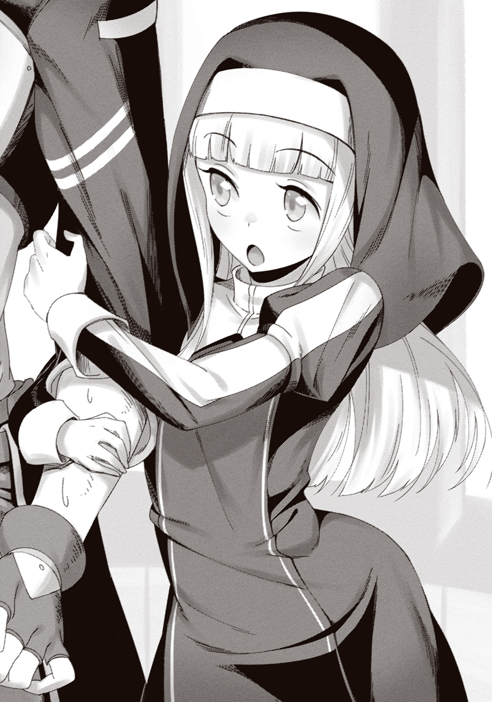
俺はメイン画面を手繰り寄せる。ポータルの有効時間は残り約一〇分。新しいセグメントクエストの制限時間は残り約一時間三十五分。たぶんポータルが閉じている間はタイマーが止まるんだろう。リミットは次のポータルが開いて一時間二十五分後くらいということになる。
そういやバーサークウルフのクエストには次がなかったな。何の意味があったんだろう？
「やあ」
などと考えていると、見覚えのない奴が話しかけてきた。
優男、というか、文化祭とかで率先して音頭を取りそうな、真面目さと垢抜けた感じが調和した奴だ。歳はたぶん同じくらいだろう。目鼻立ちがすっきりと整っていて......それと、今の一言でわかるくらいの爽やかイケメンボイスである。大層おモテになられることだろう。
「初めまして、セツナです。あなたがちぇりーさん？」
ああ、こいつがセツナか。タイムラインでまとめ役をしていた人気ゲーム実況者である。
俺は無言で首を横に振って、エリスと何か話しているサクラを指差した。
「あ、彼女がちぇりーさんか。じゃあ、君は彼女のパーティの人？ 他の人は？」
「......いや、俺たちだけだけど......」
「え？ 二人だけ？ でも『戦力的に不安はない』って......」セツナは当惑の表情で俺とサクラを見比べて、「......もしかしてだけど......まさか、二人だけでここのゴブリンを......？」
俺が『お、おう』って感じで頷くと、セツナは目を丸くした。
「ええええ!? 六人パーティでもかなりキツかったのに......」
まあな。もっと褒めるがいい。ほぼサクラのＴＡＳじみた作戦のおかげだが。
俺が心の中だけで胸を張っていると、サクラがエリスと手を繫いでやってきた。
「セツナさんですね。私がちぇりーです」
「セツナです。......この子がエリスですか？ あの聖女の」
「せーじょ？」
エリスが首を傾げた。まあ誰でも気付くか。《聖旗》ってワードがクエストに出てるしな。
「僕はセツナ。このお姉さんたちの仲間だよ。よろしくね、エリスちゃん」
「わたしはエリスだよ。よろしくね、セツナ！」
「うん。ちゃんと挨拶できて偉いね」セツナはにこやかに言って、「それで、エリスちゃん。ちょっと訊きたいことがあるんだけど......院長さんがどこにいるか、知らないかな？」
院長？ この修道院の？ 首を傾げた俺に振り返り、セツナは説明した。
「さっきここの修道女の人に聞いたんだ。クエストにある《聖旗》、どうやらここにあるみたいだよ。ただ、隠し場所を知ってるのが院長さんだけだったみたいで......」
「それで院長さんの居場所を知りたいと。他の子供たちには訊いたんですか？」
「訊いてみたけど、知らないみたいだ」
まずは院長探しか......。俺はエリスを見やった。彼女は俺たちの視線から逃れるように俯いて、「あのね......」と申し訳なさそうに声を零す。
「院長先生はね、わたしをね、守ろうと、してくれて......それで......」
萎んでいく声。だが言わんとすることはわかった。......殺されてしまったんだろう。
あれだけ元気で明るかったエリスが、ぽろぽろと涙を零した。単に優しさゆえか、あるいは親のような存在だったのか。きっと両方だろう。ここの子供はみんな孤児だという話だ。
俺は自然と手を伸ばし、エリスの頭を撫でていた。彼女はぐすぐすと鼻をすすり、
「泣いてちゃダメだよね......。院長先生は、神さまのところに行ったんだから......。しゅくふくしてあげないと......」
そう呟いて、エリスは瞼を閉じて両手を組む。その祈りは、ＮＰＣとは到底思えないほど、敬虔さと優しさに満ちていた。......この子がやがて、魔王を倒して世界を救う。すぐには実感できない。今この時点でのエリスは、単なる一人の女の子にしか見えなかった......。
サクラが膝をつき、祈る少女の肩を抱く。入れ替わるように、セツナが立ち上がった。
「今日はここまでかな......。もう時間がない」
見れば、ポータルの有効時間はもう三分を切っていた。
「どこか行っちゃうの？」
祈り終えたエリスが俺を見上げている。俺が何も言えないでいると、サクラが囁いた。
「ごめんね。今日はもう帰らないといけないの。きっとまたすぐ来るから」
「そっか......」
寂しそうに呟くエリスの頭を、俺は再び撫でた。
「また、会おうな」
「......うん！」
%%%%%%%%%%%%%%%%%%%%%%%%%%%%"D. E. 2016/06/26/19:00:00"%%%%%%%%%%%%%%%%%%%%%%%%%%%%%%%
ゆっくりと瞼を開けると、目の前にパソコンがあった。
トイレの個室のような圧迫感の、ネットカフェのペアブース......。現実に戻ってきたのだ。
「ん......」
耳元から声がしたと思うと、サクラが肩に寄りかかっていた。彼女はゆっくり俺から離れ、目をこすり、俺と同じように周囲を確認する。そして、はあと溜め息をついた。
それからしばらくの間、俺たちはぼーっと放心した。
まだ信じられない。仮想現実を体験したことも、そこから戻ってきたことも。
手を動かしてみると、違和感があった。まるでこっちの身体が偽物であるかのような......。単に向こうのアバターのほうが運動性能が良かったせいだって、わかってはいるんだが。
右手にはスマホが握られたままだった。何気なく見てみると、デスクトップに新しいアイコンが増えている。名前は《ＰｆＳ》――《ポストファンタジー・ストラグル》の略か。
開くと、ＰｆＳのメニュー画面やヒーロー・タイムラインを見ることができた。次にポータルが開く時間も表示されている。二十八日の十六時半......。火曜だが、学校が終わった後でも間に合うだろう。エリスとの約束は果たせそうだ。有効時間は二時間半――今日より短いな。
明後日まで攻略はストップということになる。もどかしい気持ちはもちろんあったが、適切だという気もした。連日のめり込んだら、魂を向こうに持っていかれそうな気がする。
「......あ。もうこんな時間......帰らないと」
サクラがスマホを見て呟いた。気付けば、戻ってきてから三〇分以上経っていた。
「あー......送ったほうがいいか？」
「いいですよ。日も長くなってますし。......あ、その代わり、明日付き合ってくれますか？」
明日？ ポータルが開くのは明後日だが......。
「スプリング修道院――じゃなくて、聖堂。現実でも行ってみませんか？」
翌日の月曜日は、当然ながら学校があった。
そして昼休みになると、俺は弁当と一緒にスマホを取り出す。昼飯がてらデイリーミッションをこなそう。今月半ばに配信開始されたばかりのゲームを起動し、右手に箸を持った。
今日も暑い。窓際の席なので、容赦なく陽光が照りつけてくる。カーテンを閉めたいが、基本、俺は教室のことに干渉しない。相互不干渉条約を結んでいるからな（勝手に）。
一区切りつき、ふと窓から中庭を見る。昼休みの中庭は、高等部生と中等部生が混在する傾向にあった。だから、中等部のあいつがそこにいても不思議はない。
サクラが中庭中央のベンチに腰掛けていた。膝の上には弁当があり、クラスの友達だろう女子と談笑している。......ていうか、あれ、レナじゃん。俺の一歳年下の妹である。
「おい、見ろよ、真理峰さんだ」「おっ、ほんとだ！」「マジで可愛いよな......」
前の席の話し声が聞こえてきた。クラスの男子である。名前は......えーと......覚えてない。中庭のサクラを見て、やべえだのやべえだのやべえだの言っている。語彙力！
......っていうかあいつ、なに普通に高等部にまで名声を広めてんだよ。宿屋行ったらいっぱいゴールドもらえそう。俺は会うまで知らなかったんだけどな。
サクラと知り合った切っ掛けは、リアル脱出ゲームで即席コンビを組んだことである。あいつが俺の妹経由で一方的に俺を知っていて、半ば強引に組まされたのだが......そしたら見事に最速記録を叩き出してしまって、以降継続的につるむようになった。
あのときは怖いくらいスムーズに攻略できたよな......。過去を思い返しながらぼんやり眺めていると、中庭のサクラがスマホを取り出した。
少し後、スマホからポヨーンと音が流れる。サクラからのＬＩＮＫだった。
〈今日は５時にスプリングフィフスの駅前集合でいいですか？〉―12:47
〈改めて待ち合わせるのか？ 学校帰りに行けばいいだろ〉―12:47
〈友達に見られて勘違いされると恥なので〉―12:48
〈せめて恥ずかしいって言え！ ニュアンスが違ってくるだろうが！〉―12:49
返信し終えると、中庭のサクラがスマホを見て少しだけ肩を揺らした。......なんだよ。そんな健全な笑い方もできるのかよ。いつもは嘲笑しかしないくせに。
悪戯心が芽生えて、さらにメッセージを打つ。
〈お気に召したようで何より。三階窓際の道化師より〉―12:51
サクラはスマホを見るなりハッと視線を上げ、程なくこちらを見つけた。
「おっ！ こっち見たぞ！」「見てんのバレた？」「ってか、なんか顔赤くね？」
少しして、またポヨーンという音。
〈のぞきま〉―12:53
帰宅すると、俺は外出の準備を始めた。制服から私服に着替える。
......癖でいつものを着てしまったが、今日の場合、あんまり適当すぎるのもアレか？ いや、アレってなんだって話なんだけど。でも、まあ、うーん......。
「........................デート？」
「うおおおうッ!?」
いきなりボソッと声がして、俺はぶっ倒れそうになった。
扉を開いて登場したのは、妹のレナだった。下卑たニヤニヤ笑いを浮かべている。
「やっぱりー。その反応、陽性だね！ いやー待ったよお兄ちゃん。待ちくたびれたよ」
「いきなりボソッと話しかけられたら誰でもビビるわ！ なんだよ待ったって！」
「もちろん、お兄ちゃんがカップル化するのを！ あたしに彼女を紹介してくれるのを！ 隠れてイチャついてるつもりなのを陰から覗き見するのを！」
何が楽しいんだよ。普通に覗き魔じゃねえか。兄妹揃って覗き魔。
デュフフ、とレナはおぞましい笑みを漏らして俺に迫る。
「さあ白状するのだ。相手はどんな子？ どうやって知り合ったの？ 告白はどっちから？ 最近ときどき出かけてたのはその子と遊んでたから？」
......こいつ、前々から機会を窺ってやがったな。生来、他人の色恋に対して変態的なまでの関心を示す妹なのだ。異性、同性、二次元、三次元、何でもアリだというのだから恐れ入る。
「......勘違いだ。これから行くのはゲーム屋だ。暑いか寒いか微妙な気温だったから着る服に迷ってただけだ」
「ふうん......？ 本当かなあ？ まあいいけどね。火のないところに煙を立てるだけだから」
妄想で補完するという意味だ。あることないこと噂する、という意味ではないと信じたい。
「それにしたって嬉しいよ、あたしは。お兄ちゃんにも女の影が見え隠れしてるし、サクラちゃんもなんか彼氏いるっぽいし。おかげで当分カップルに困らずに生きていけそうだよ」
「は？」ちょっと待て。「サク――じゃない。真理峰に......彼氏？」
「あ、知ってるの？ サクラちゃんのこと。まあ有名だもんね」レナはにやあと笑った。「隠してるけど、いると思うよー。今日も昼休み、誰かとＬＩＮＫしてたし、放課後どっか行かない？ ってカマかけたら断られたし。ぐふふ、お淑やかな振りして隅に置けませんなー」
........................................................................................................................。
それ俺じゃん。
いや、安心とかしてないし。むしろ感心したくらいだ。あんな見てくれがいいだけのクソ生意気な女でも許してくれる男がいるんだなあ、って。ほんとに。マジでマジで。
そんなことを頭の中に並べながら待ち合わせ場所に向かった。道すがらスマホでヒーロー・タイムラインを確認する。......やっぱり少し調子がおかしいのか、ろくに頭に入らなかったが、とりあえず聖旗の隠し場所を探り当てる方法はまだわかっていないようだ。
カップルが等間隔に座る河川敷を横目に橋を渡る。サクラが橋の袂で欄干に背を預けていた。
サクラは俺に気付くと、いじっていたスマホから顔を上げる。
「ダメですよ、先輩。私みたいな女の子を待たせちゃ。ナンパされちゃうんですから」
「自己評価カンストかよ。今にもバグりそうだわ」
いつも通りに返した――つもりだったが、サクラは首を傾げて、俺の顔を下から覗き込むようにしてきた。あ、あんまり近付かないでください。顔を逸らして一歩下がる俺。
「どうしました、先輩？ 『よく考えるとこれってデートだよな。どんな感じで接すればいいんだろう』みたいな顔してますよ？」
「なんなんだその観察力!!」
「えっ？」サクラは目を丸くした。「......いや、あの......冗談だった、んです、けど............」
............。気まずい沈黙が漂った。俺は顔を隠すようにして俯く。
「あの、えっと..................あ、あんまりそういう目で見ないでほしいですね！ 学校で噂でも立ったら私の評判がガタ落ち―――あ、あれ？ 先輩？ ツッコミは......」
「............」
「もしかして......本気で傷付きました？」
「............」
「じょ、冗談ですよ！ いつもの！ 本当に嫌だったら街中で待ち合わせなんてしな――」
「............（ニヤニヤ）」
「笑ってるじゃないですかっ!!」
俺は爆笑した。
「ぶふはははっ!! お、おまっ、なに焦ってんだよ！ ぶっはははははっ!!」
「わ、悪いですかっ!? 先輩相手にだって罪悪感が芽生えることくらいあるんですよっ!!」
なおもげらげら笑っていると、サクラは「もう知りませんっ」とそっぽを向いた。フゥーハハハ！ 時には振り回されるほうの気持ちを味わうがいい！
この一幕でさっきまで頭の中を占めていた変な意識はさっぱり消えてくれた。やっぱ俺とこいつでデートとか無理だわ。どうやってもそんな感じにならんわ。
あざとい膨れっ面のサクラを促して出発する。スプリング修道院――もといスプリング聖堂は、ここから東にまっすぐ歩けば行きつくはずだ。
「スプリング聖堂って超が付く観光地ですよね？ 混んでたりしないでしょうか」
「言っても平日だしな。空いてるんじゃねえか？」
結論から言うと、結構いた。土産物の紙袋と自撮り棒を装備した奴がそこら中に。外国語が頻繁に聞こえてくるし、外国人が多そうだ。そりゃ平日も休日も関係ないわな。
人混みに混ざって急な坂道をひいこら登っていく。五分くらいで息が上がり始めた。
「だらしないですよー。このくらいの坂で」
「む、向こうだとあっという間だったのに......」
ＰｆＳのアバターが恋しい......。
やがて特徴的なとんがり屋根が見えてくる。てっぺんには聖旗教の象徴である大きな旗が立っていた。ＰｆＳにはなかったものだ。
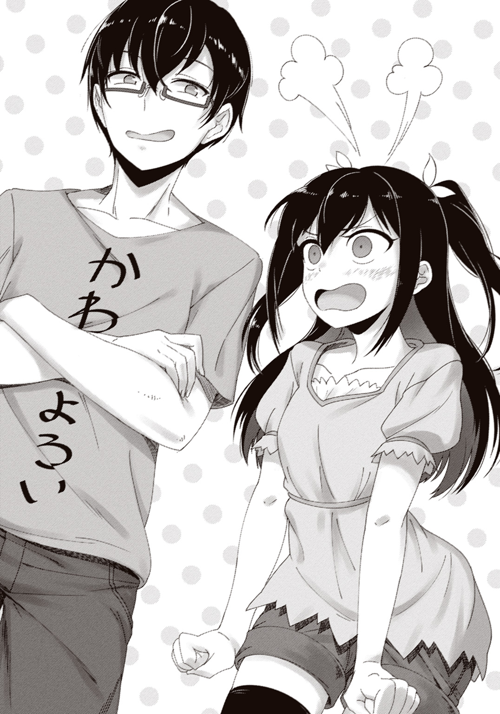
観光客の記念撮影に映らないようにしながら門を見上げる。ＰｆＳでは、この門の前に二匹のゴブリンがいた。サクラがスマホで写真を撮りながら、
「こうして見ると、一見同じようで、結構違ってますね」
「ああ。年季も入ってるし......それに、ちょこちょこ装飾が変わってるような気がする」
「たぶん宗教が違うからでしょう。向こうではジェラン教の修道院だったわけですから」
今は聖旗教の聖堂。建物は同じでも、役割や意味がまったく違う。
「なんで修道院じゃなくなったんだろうな？」
「ＰｆＳの設定に則って言うなら、エリスちゃんが住んでたからでしょうね」サクラはスマホを仕舞った。「ジェラン教にとっては数ある修道院の一つでも、聖旗教にとっては二つとない聖地なんですよ。まあ、実際には最初っから聖堂として建てられたんでしょうけど」
「ここはエリスを祀る聖堂なのか？」
「そのうちの一つですね。総本山が別にあって、そっちは気軽には入れないみたいです」
拝観料を払い、門を通り抜けた。石畳を歩いて建物の中へ。
まずあったのは礼拝堂だった。木の長椅子が何列も並んでいる。俺たちは観光客に混ざり、長椅子の間を歩いていった。
奥には、ステンドグラスの光を背負うようにして、白い女性の像が建っている。
「これ......もしかしてエリスか？」
俺が知っているエリスは一〇歳の女の子だ。だがそこにある像は、勇ましい鎧を着て背丈ほどもある旗を掲げた、大人の女性に見える。少なくとも一〇歳ではないだろう。
「普通はこんなイメージですよ。一〇歳の女の子にしちゃってるほうがおかしいんです」
「まあ聖女エリスって断片的なエピソードしか残ってない偉人だしな。やりたい放題だわ」
「ちゃんと記録が残ってる偉人も美少女にしちゃうじゃないですか、この国は......」
順路通りに歩いて礼拝堂を抜けると、回廊に出た。例のドーナツ状の池がある中庭が広がっている。左のほうに大量の人が流れていた。たぶんあっちに例のテラスがあるのだ。
「せっかくですしあっち行きましょうよ、先輩」
「えー。人混みきらい......」
腕をぐいぐい引っ張られて、人の流れに埋没していくと、案の定崖に張り出したテラスに出る。昨日見た景色が、形を変えて目の前に広がった。
灰色の街並みと、彼方に薄く聳える山々――二〇一六年のエムル。こうして見ると、全然違う。あっちはゲームだとわかってはいても、千五百年という時の重みを感じてしまう。
隣を見ると、サクラが柵に腕を乗せて、長く黒い髪を風に靡かせていた。
「思ったより高いですね」
「当たり前なこと言うなよ」
「もう。情緒がないんですから」
高さ確認にどんな情緒があるというのか。怖いだけだろそんなもん（観覧車とか苦手）。
再び人混みを抜け、中庭まで戻ってくる。長々と急な坂道を歩いてきたこともあり、結構疲れていたので、池の縁に座って一服することにした。
「はあー......。だから観光地は嫌なんだ......」
「想像以上の人出ですよね。さすが世界有数の観光地は違います」
「損なんだよな、エムル人は。夏は暑いし冬は寒いし、観光客に道訊かれても観光地行かないからわからんし、アニメや漫画の修学旅行の話に一切共感できないし」
「全部先輩の個人的な問題じゃないですか」
涼やかな水面に目を落とす。これ、飲んでもいいんかな？ 一見綺麗ではあるが。
ぼーっと水底を眺めていると、「ん？」変なものを見つけた。
「なあ、サクラ。あれ......」
「え？ なんですか？」
俺が指差した先、そこには黒い焦げ跡があった。まるで焚き火でもしたような......。
「あれ......ボスゴブリンと戦ったとき、俺が火球をぶつけた場所じゃねえか......？」
「は？」サクラはぱちくりと目を瞬いた。「そんなわけないでしょう。あれはゲームですよ？」
「そうだよな......。いや、わかってるんだが......」
元からあそこに焦げ跡があって、俺がたまたまＰｆＳで似た場所に火球を当てた？
......そのはずだ。それしか考えられないんだが......。
「あ。その話でちょっと思いつきました」サクラはバッグからスマホを取り出した。「サードアイ、使ってみませんか？ ポータルみたいにゲームに関係あるものが映るかも」
ほほう？ 面白い思いつきだな。俺もスマホを取り出し、《3rd_eye》を起動した。そうしているうちに、焦げ跡のことは意識から外れていった。
俺たちはサードアイを通して庭園をぐるりと見回してみる。目ぼしいものは映らない。
「どうせやるなら隅々までだ。礼拝堂に戻ってみようぜ」
「順路を逆走しちゃうことになりますけど......まあちょっとだけ」
そんなわけでちょっと失礼して、礼拝堂まで戻ってきた。と、
「あっ！ あった！ ありました先輩！」
説教台にスマホを向けたサクラが叫んだ。マジでか！ 横から彼女のスマホを覗き込むと、説教台の手前に白い光でできた人影が佇んでいた。肉眼では何もいない。人影の胸辺りに押せと言わんばかりのアイコンがあったので、サクラがそれをタップする。
「......？ 小説......か？」
表示されたのは長めの文章だった。冒頭にタイトルらしき一節がある。
「『修道院長の残留思念』......？」
サクラがそれを読み上げる。瞬間、ぞわっと鳥肌が立った。
そういうことか......そういうことかよ！
聖旗の隠し場所を知っているのは修道院長だけだった。だが院長はすでにゴブリンに殺されていて、場所を聞き出すことはできない。だからサードアイを使って死人の残留思念を読み取り、情報を得る必要がある！ リアルでここに来るのも攻略に必要だったんだ！
俺たちはにわかにせり上がった興奮を呑み込み、表示された文章を読んでいった。
『◆修道院長の残留思念◆
ゴブリン如きにやられるとは......耄碌したものだ。フレードリクの奴に笑われてしまう。
私の悪運もここまでか。存外、長生きだった。怖くはなく、むしろさっぱりした気持ちだ。
......しかし、心残りなのは、エリスのこと。彼女が背負った運命を、もう少しだけ、共に背負ってあげたかった......。一人残して逝くには、あの子はあまりに幼すぎる。
どうか......もし、この想いが誰かに届いたなら。どうか、あの子を守ってあげてほしい。
かつて私と共に戦ったこの杖と――この台の下にある、聖なる旗を使って............』
【PfS System Message：《聖杖エンマ》を入手しました】
夜。サクラによって夕方の発見が報告されてから、タイムラインは活気づいていた。
聖旗は説教台の下にある。さすがにあの場で確認することはできなかったが、それは間違いないと思われた。だから明日、ポータルが開いてから真っ先に取りに行くことになる。
だが、【エリスに成長させた聖旗を渡す】の制限時間は残り一時間半だ。聖旗を見つけた後、成長させる手段を調べ、実行する時間が必要なことを考えると、余裕はほとんどない。事前に段取りしておく必要があった。
例によってセツナがまとめ役となり、明日の予定が詰められていく一方で、ハッシュタグを使って別の話をしている連中がいた。どうやら魔法の名付けで盛り上がっているらしい。
ＰｆＳの魔法には名前が存在しない。自分たちでいくらでも開発できてしまうのだから、それも当然だろう。とはいえ名前がないと不便なので、話し合いで決めているのだ。
例えば、チュートリアルで使った火球の魔法は《ファラ》と名付けられていた。《ファイア》にするか《メラ》にするかで揉めに揉めた結果の折衷案だ。
その他、魔法の使用方法についても協議が行われていた。
現状、魔法はセンス頼りの部分が多い技術だ。だから、せめて既存の魔法くらいは誰でも使えるようにできないか、と可能性を模索しているようだった。
どいつもこいつも見事にゲームをエンジョイしている。こんな怪しいゲームに参加するのは重度のゲーム馬鹿くらいだろうから、それも自然の成り行きか。
そんなタイムラインを、俺はただ眺めていた。
瞬きの件とか、魔剣の件とか、報告すべきことはある。が、その気にはなれなかった。
俺は......なんというか......多数に混ざるのが苦手なのだ。
昔はそうじゃなかった。小学生くらいの頃は、普通に友達もいたし、毎日のように誰かの家に集まってゲームをしていた。それが変わったのはいつだったか......細かくは覚えていない。
ただ、あるとき友達の一人が言った――お前とゲームしても面白くない、と。
俺は上達が早すぎた。気付けばあらゆる対戦ゲームは勝負にならず、ＲＰＧですらクリア速度に歴然とした差があった。俺は自分から避ける形で、他人とゲームをしなくなっていった。
しかしまあ、この情報化社会だ。通信ケーブルとかいうものが重用されていた時代とは違ってネットがある。俺は必然、ネット対戦にのめり込むようになった。
だが......偶然覗いた匿名掲示板で、見てしまったのだ。自分のことが晒されているのを。
別に悪いことをしたわけじゃない。負かした相手が逆恨みしただけ。きっと今の俺なら受け流せただろう。そういう奴もいるのだ、と。......だが、当時小学生だった俺は――
――― つまらない。つまらない。つまらない ―――
――― この世界は、ゲームと違って、つまらない ―――
......そうして、俺は他者と遊ぶのを諦めたのだ。曲がりなりにも成長して、いろいろと折り合いをつけられるようになった今ですら、あのとき頭の中を埋め尽くした思いは、風呂場のカビのようにしつこくしつこく、こびりついていた......。
楽しそうなタイムラインを眺めて思う。
あの頃......俺、どんな風にゲームしてたんだっけ......。
翌日――双月紀元二〇一六年六月二十八日火曜日。
放課後になると、俺とサクラは校外で落ち合い、ネットカフェへと向かった。
受付で財布の中を見て顔をしかめる。ペアだと多少割引が利くとはいえ、やっぱりこのペースでネカフェに通うとなかなかの出費になる。
俺たちは前と同じブースに入ると、ソファーに並んで座り、楽な姿勢を模索した。前回ログアウトしたあと、首と背中が結構痛かったのだ。加えてサクラは「先輩にもたれかかるなんて屈辱はこれ限りにしたいです」などとほざいていた。いい加減ぶん殴るぞ。
「段取りは覚えてますよね、先輩？」
「当然だろ。今回の有効時間はたった二時間半――一分も無駄にできねえ」
十六時二十九分。背もたれに深くもたれかかり、スマホでＳｅｒｉを起動する。
〈ご用件は何でしょう？〉
俺は画面右上の時刻表示を見る。29という数字が、今、30に―――変わった。
「「《アーシュゲイン》！」」
%%%%%%%%%%%%%%%%%%%%%%%%%%%%"D. E. 0550/12/25/16:30:01"%%%%%%%%%%%%%%%%%%%%%%%%%%%%%%%
意識が閃光に包まれた後、俺は埃だらけの部屋に立っていた。シュインシュインと音を立て、周囲に四枚のメニューウインドウが自動的に展開される。まずメイン画面を手繰り寄せて時刻を確認した。十二月二十五日――前回から一週間も経っている。
「ほほーう。ふーん？ ふへへへへ」
サクラは手に持った紅白色の杖を眺め回し、にやにや笑っていた。残留思念と一緒に入手した《聖杖エンマ》だ。色合いが同じなので、サクラのアバターには誂えたように似合っている。
「新しい武器が嬉しいのはわかるが、気持ち悪い笑い方してないでさっさと行くぞ」
「きもっ......!? わ、わかってますよ！」
俺たちは一緒に部屋を飛び出す。板張りの廊下を一気に駆け抜け、外に出た。
同時、俺は眉をひそめる。妙に人通りが多いな......？ ――いや、違う。これは、逃げている......？ 人間という人間が、取るものも取りあえず、一斉に、北へ向かって。
「お待ちしておりました、勇者様」
俺たちが当惑していると、どこからか陶器のような肌の妖精が飛んできた。Ｓｅｒｉだ。
「Ｓｅｒｉ......これはどういう状況なんだ？ どうして街の人たちは逃げてるんだ？」
答えはあまり期待していなかったのだが、Ｓｅｒｉは透明な翅で羽ばたきながら、無機質な声色にほんの少しの緊迫感を混ぜて答えてくれた。
「実は......今まさに、街の南方より魔王の軍勢が進軍してきているのです」
「魔王？ 魔王バラグトスってやつですか？」
「そうです」Ｓｅｒｉはマネキンのような顔を頷かせた。「一週間前、勇者様がたが退治なされたゴブリンたちは、魔王の手先だったのです。それが全滅したと知った魔王バラグトスが、勇者様がたを討伐せんとして......。それゆえ、取り急ぎ召喚させていただきました」
これは予定にはなかった展開だ。タイムラインをチラッと見ると、やはりみんな混乱している。俺は判断を仰ぐ意味を込めてサクラを見た。
「......わけもわからず右往左往しても始まりません」サクラは少し思案して言った。「予定通りに行きましょう。同時に魔王軍とやらを誰かに偵察してもらいます」
「わかった」と俺は頷く。サクラがタイムラインで行動方針を提案するのを待ち、俺たちは逃げ惑う人々を搔き分けるようにして走り出した。
前回、エリスを発見するという手柄を立てた俺たちは、引き続き聖旗の入手という重要任務を任されていた。しかしスプリング修道院まではそれなりに距離がある。少しでも時間を節約するため、まず貸し馬屋で馬を調達する手筈になっていた。
貸し馬屋を目指す間、タイムラインではセツナがサクラの方針を軸にプレイヤーたちを取りまとめていた。偵察組への立候補者が次々と現れ、素早く行動に移っていく。
貸し馬屋に辿り着くが、店員らしき人間が見つからなかった。
「ここの人も逃げちゃったんですね。仕方がないです。勝手に借りてっちゃいましょう」
大丈夫？ 盗賊番と番犬がどこからともなく湧いて出てきたりしない？
俺は適当な馬を見繕って飛び乗った。おお、結構高い。続いてサクラを引っ張り上げて後ろに乗せ、しっかり腰に手を回させる。落馬とか怖いしな。......とはいえ、そのう、これ......。
「......思ったよりも密着感が......」
「かーんーがーえーるーなーっ!!」
がすがす横腹を殴られながら、俺は馬を発進させた。何らかのアシストが働いているのか、何の知識もなくても自然と乗りこなすことができる。だが道に出てスピードが乗ってくると、
「は、はやっ......速い！ 速いって思ったより速いってこれ怖い怖い怖い！」
「あはははははっ！ もっと速く疾走れーっ!!」
何テンション上がってんだこいつ！ こっちは高いし速いし思ったより上下に揺れるしうおわぉああああうおおおおおおおお!!
という感じで、最初こそジェットコースターに乗っている気分だったが、そこはゲームだ、徐々に慣れてきた。コツを摑んで楽しくなってきた頃、タイムラインに報告があった。
〈見てきた！！！ やばい！！！！ めっちゃいるんだけど！！！！！〉〈普通に一万匹くらいで攻めてきてるwwwwwwwいくらなんでも多杉内wwwwwwwwwwwwww〉
一万って！ 俺らは百人もいないんだぞ？ 単純計算で一人百匹以上。ナニ無双だよ！
こうなったら頼みの綱は聖旗しかない。俺は馬をさらに速く走らせた。
現実とは違ってあまり整備されていない山道を駆け上る。生身だと永遠にも思えた坂道は、馬のおかげで三十秒とかからず踏破できた。
馬を停め、地面に飛び降りた俺たちは、背後を振り向いた。山の中腹であるここからは、建物が少ないのもあってエムル市内を一望できる。ぽこぽこと点在する緑の小山。その合間に広がる全体的に白っぽい街並み。そして――そこから、南の方角。
「......マジか......」
「冗談みたいな光景ですね......」
小学生の頃に起こった大地震のニュースで、似たような光景を見た覚えがある。
津波だ。
果てなく広がる緑の草原を、絵の具を片っ端から混ぜたような混沌とした色が呑み込んでいく――街の南方から迫っているのは、魔物の津波だった。
急ごう。俺は近くの木に馬を繫ぐと、サクラと共に修道院に駆け込んだ。
礼拝堂は静かだった。窓から光が射し込んで、薄暗い堂内を木漏れ日のように照らしている。そして――説教台の前に、跪いて手を組む少女がひとり。
長い金色の髪が、煌びやかに光を放っている......。まだ一〇歳でしかないその少女は、年齢なんて些末に思えるくらい、一心に――震えるほど一心に、祈りを捧げていた。
「......エリスちゃん」
サクラが後ろから話しかけると、エリスは顔を上げて振り向き、パッと表情を輝かせた。
「リオ！ サクラ！」
てててっと駆け寄ってきたと思ったら、なぜか俺に飛びついてくる。「ごふっ！」胸に頭突きを喰らった。危うく倒れそうになったが、どうにか踏ん張る。
「ちゃんと来てくれたんだね！ 待ってたよ！」
「......約束したからな」
頭を撫でると、エリスはくすぐったそうに表情を緩めた。えらく懐かれたもんだ。
「一人で、祈ってたの？」
横からサクラにそう訊かれると、エリスは俺から身を離し、「......うん」と頷いた。
「たくさんの怖い魔物がここから見えて......街の人たちを助けたいって思ったけど......わたし、子供だから、祈るくらいしかできなくて......」エリスの瞳が、所在なさげに揺れた。「右手でものを治せるのを、みんなはすごいって言ってくれるけど......死んじゃった人は、もう治せないんだよ？ もし......もしわたしの力が、治す力じゃなくて、守る力だったら......きっと、院長先生だって............」
ぽろりと、エリスの頰を大粒の涙が伝う。きっとそれは、力を持ったがゆえの涙なんだろう。せっかく力を持っているのに、大切なものを守れない悔しさ......。魔族が攻めてくるような世界に生まれたこの子は、この歳にして、そんな経験を繰り返してきたのだ。
だが――俺はもう一度エリスの頭を撫でた。エリスはぽろぽろと涙を零したまま俺を見上げ、俺もまた、このときばかりは目を逸らさなかった。
「だったら、俺たちがお前の力になってやる」普段が噓のように、言葉が溢れる。「お前でも、できることがある。いや、お前だからできることがあるんだ。俺たちがそれを教えてやる」
そう、俺には、俺たちにはわかっている。エリスこそが、魔王を打倒する聖女であることを。祈ることしかできない、ただの子供なんかじゃないことを。
俺たちが――他ならぬ俺たちが、エリスを聖女に変えるのだ。
エリスは泣くのも忘れて、驚いた顔で俺を見上げている。なんとなく恥ずかしくなって、俺は顔を逸らした。するとサクラのニヤニヤ笑いが視界に飛び込んできた。
「な、なんじゃぼけーッ！」
「いえいえ、先輩のくせにカッコいいなって思ってただけですよ。一〇ポイント贈呈です」
「お前、馬鹿にしてんだろ！ 絶対馬鹿にしてんだろ！」
そんなことないですってー、などとほざく後輩を問い詰めようとした瞬間、「ぷふっ」とエリスが噴き出した。礼拝堂の高い天井に、明るい笑い声が反響する。
「ほんとに仲良しさんだね、リオとサクラは」
どこを見てんだ、と言い返す前に、エリスは表情を引き締める。
「本当に、わたしにできることがあるの？ わたしでも――みんなを守ってあげられるの？」
そう問うエリスの顔つきは、もはや一〇歳の少女のそれじゃない。今この時点で、すでにして、彼女は英雄の風格を備え始めていた。
サクラがエリスと目線の高さを合わせ、優しくも真剣な声音で問う。
「怖い思いを、たくさんするかもしれない。それでも、やる？」
エリスは、決意を表情に込めた。そして――はっきりと、頷く。
「それで、もう誰も、治したりしないで済むなら」
サクラは頷きを返し、俺に目を向けた。俺はまた別の意味で頷きかけて、歩き出す。
俺とサクラは、二人で説教台に手をかけた。せーの、と持ち上げ、横に移動する。エリスはそれを不思議そうに見ていた。説教台の下から現れたのは、蓋。それを開くと地下収納のような空間があり、巨大な箱が安置されていた。
「でけえな。箱っつーか棺桶だぞこれ」
「戦旗ですからね。遠く離れた敵にも見えなきゃいけませんから、相応の大きさですよ」
また二人で力を合わせ、箱を地上に引っ張り出す。床に置いたとき、ズン！ と音がした。
鍵はなさそうなので、蓋に手をかける。一気に開くと、もわっと埃が舞った。俺たちが咳き込みながらそれを払っている間に、エリスが真っ先に箱の中を覗き込んだ。
「おっきい旗......」
食い入るように見つめながら、ぽつりと呟く。俺たちもその後ろから覗き込んだ。横長の箱には、長さ二メートルを超える旗竿が、巨大な旗布を巻きつけた状態で横たえられていた。
これが、聖旗――聖旗教で最も崇められる、最重要聖遺物。
「リオたちはこれを探してたの？」
エリスが振り向いて言った。俺は「ああ」と答え、
「でも、まだだ。これをさらに『成長』させないといけないらしい」
「せいちょう？ 旗を？ へんなの」
だよな。旗を成長ってどうやんだよ。同じ旗を合成すればいいの？
「先輩、見てください。箱の蓋の裏側に何か書いてありますよ」
見てみれば確かに、蓋の裏側に何やら文章が彫ってあった。が、どうもこの時代の言語らしい。現代のこの国は葦原語を使っているので、昔の言語はまったく伝わっていない。だからこれも制作側が考えた架空言語のはずで......つまりＮＰＣにしか読めないのだ。
「エリスちゃん。読めたりする？」
「んー......読み書きは苦手なんだけど......がんばってみるね！」
エリスはんむんむ言いながら長文読解にチャレンジし始めた。頑張れ、俺も苦手だ！
「えーっと......『神の力......吸収し......力を増す』......かな？」
「神の力？ ......って、なんだ？」
「マナのことじゃないですか？ それくらいしかないですし」
「続けるね。『真の力......引き出すには......千年の時が......必要』......だって！」
は......？ 千年の時が必要？
「つまり」サクラが思案顔で言う。「マナの濃い場所で千年熟成させろってことですかね？」
「はあ？ だったらここに置いてたらダメだろ。ここのマナ濃度は――あ、いや、違う！」
「この旗がマナを吸い取っていたからこの一帯のマナ濃度が低かったんですよ！」
先に言われた！ でもそれだ！
「問題は千年の時が必要ってとこだな。ここで何年熟成してたかは知らんが......」
呟きつつ、俺には手段に見当が付いていた。サクラを見ると、案の定わかってる風の顔だ。
俺は妖精姿のＳｅｒｉに質問する。
「Ｓｅｒｉ。現実のものをＰｆＳに持ってくる手段はあるか？」
「一部のものに限り可能です。スマートフォンで写真に撮っていただければ処理致します」
つまり、だ。
「こっちでマナ濃度が高いとこに埋めるなりして、あっちで掘り返せばいい！ それからまたこっちに持ち込めば、千年分のマナを吸った聖旗を今すぐ手元に用意できる！」
残留思念と発想は同じだ。現実とＰｆＳが設定上で時間的に繫がっているのを利用する！
サクラがタイムラインのウインドウを手元に引き寄せる仕草をした。
「聖旗を埋める場所を皆さんに大急ぎで探してもらいましょう。条件は――」
「一つ、マナ濃度が高い。二つ、穴掘ってても目立たない。三つ、わかりやすい目印がある」
「了解です」
サクラによる事情説明と協力要請があると、タイムラインはかつてない速度で動き始めた。
ここはどうか、と提案があれば、誰かがマナ濃度を確認しに走る。逆にマナ濃度の高い場所が報告されれば、条件に合うかどうか即座に調べられる。俺たちもネットに接続して協力した。
ポータル解放から四十五分が経過する。クエストの制限時間まで、残り四〇分――
〈宮殿公園は？ 林だらけだから穴掘ってても目立たなそう〉〈あそこ広いからなあ。目印になるものあったっけ〉〈そもそもＰｆＳに宮殿ってある？〉〈とりあえず行ってみるわ〉
宮殿公園は、かつてエムルが首都だった頃、国王が住んでいた宮殿の周りに広がる公園だ。かつては貴族の邸宅が建ち並んでいたらしいが、今は単なる散歩コースという感じである。
報告は三分ほどしてから来た。
〈レッドエリア発見。やたらでかい木がある辺り〉〈木ってもしかして枝垂れ桜ですか？ 宮殿公園の枝垂れ桜には樹齢千年超えてるのがあったはずです〉〈@loneria たぶん。花は咲いてないけど〉〈いいじゃん。目印になる〉〈近すぎると穴なんて掘れないよな。絶対天然記念物だし〉〈赤い所は結構広い。半径１００メートルくらい〉〈枝垂れ桜の南東70メートルくらいのとこに公衆便所がある。これの裏とかは？〉〈きたきたきた！〉〈調査班有能！〉〈ここでよさげ？〉〈ＯＫです！ 今から行きます！〉〈@cherry 穴掘って待ってます！〉
俺とサクラは同時に顔を上げた。
「行きましょう先輩！」
「待て！ 一度ログアウトして馬を調達し直したほうが速い！」
俺は聖旗をストレージに放り込み、ログアウトボタンを押す――前に、エリスに向き直った。
「すぐ帰ってくる。ここで大人しく待ってろよ」
「うん！ 待ってる！」
俺は頷いて、ログアウトボタンを押した。
すぐさま再ログインした俺たちは、再び馬を調達し、宮殿広場がある北へ向かった。
案の定、この時代ではまだ宮殿は建っていないことになっているらしい。だが宮殿ほどではないものの大きな館があった。そこを目指して馬を走らせ、やがて枝を地面に着きそうなほどしならせている木が見えてくる。あれが件の枝垂れ桜か。
そこから少し離れた場所に、剣で地面を掘っている怪しい集団がいた。その中の枯れ木みたいに細長い男が、こっちに大きく手を振っている。ちらりと時刻を見た。残り二十八分。
「お待たせしました！」
サクラが叫び、俺が馬を寄せると、穴掘り集団はどよめいた。
「え、ちぇりーさん？」「めっちゃ可愛い......」「て、天使......」
言ってる場合か。俺はストレージから聖旗を取り出し、馬上から穴に放り込む。
「よっしゃ埋めろーっ！」「男見せろお前ら!!」「オラオラオラオラオラオラ!!」
異常な気合いだった。俺たちが手伝うまでもなく、聖旗は見る見る埋まってしまう。男どもが妙に爽やかな顔で汗を拭っている間に、サクラがタイムラインに報告した。
〈完了！ どなたかリアルで向かってくれていますか？〉〈@cherry もうすぐ着きます！〉
行動が早い。近くからログインしていたんだろう。しばらくして画像付きトゥイートが来た。
〈発見！ 怪しすぎ笑〉画像には地面に突き立ったシャベルと犬の置物が映っていた。〈犬wwww〉〈わかりやすすぎwwwwww〉〈ここ掘れわんわんお！〉〈運営の圧倒的仕事の速さ〉
早速犬の置物があった場所を掘り返し始めたようだ。残り二十二分......間に合うか......!?
残り二〇分になったところで、再び画像トゥイートが投稿された。
〈ありました！ すぐログインします！ ウィロー駅の辺りで合流しましょう！〉
画像には土に汚れた大きな旗が映っている。間違いなくたった今ここで埋めた聖旗――誰からともなく「「「おおおおおおおおーっ!!」」」という歓声が弾けた。
「じゃあ私たちは行きますので！」
「お気を付けください」「また是非ご用命を！」「ははあーっ......！」
この僅かな間で家臣みたいになってんじゃねえかよ。枯れ木男に至ってはひれ伏してるし。
再び馬を発進させた俺は、馬上でタイムラインを流し見る。偵察班が街に魔物が入り始めているのを報告していた。猶予は幾許もない。一秒でも早く、エリスにあの旗を......！
宮殿公園の東を流れるダック川に沿って走り、三角州があるところで橋を渡る。橋を渡った先、現実では駅のある辺りで、四人の女子が力を合わせて聖旗を大きく振っていた。
成長は成功したんだと一目でわかった。何せ光っているのだ。埋めるまではただのデカくて埃っぽいだけの旗だった。それがまるで朝日のように輝きを放っている。
俺は女子四人組の傍に馬を停めようとしたが、その前に向こうから駆け寄ってきた。そして聖旗を差し出し、声を揃え、
「「「「お願いします!!」」」」
俺は馬を停めなかった。すれ違いざま、後ろのサクラが手を伸ばし、差し出された聖旗を摑み取る。大きな旗が風にはためき、輝く光が夕闇を裂いた。
「「「「行っけええええええええええええええええっ!!」」」」
馬鹿みたいに熱のこもった声は、あっという間に背後へ消えていく。
残り十二分。――絶対に間に合わせる。
スプリング修道院への坂道を登り切ったとき、制限時間は一分半を切っていた。俺たちは馬を繫ぐ余裕もなく、修道院の中へと駆け込む。
エリスは言いつけ通り礼拝堂で待っていた。他に大人の修道女が三人、聖旗が入っていた箱の周りに集まっていたが、構ってはいられない。
サクラがエリスに駆け寄り、ストレージに入れる間もなかった聖旗を差し出す。
「エリスちゃん、これを......！」
「え......？ あれ？ 光ってる......」
エリスは当惑した様子で、差し出された聖旗に手を伸ばした。制限時間は残り二十二秒......二十一秒......二十秒を切ると同時、エリスの両手が聖旗の旗竿を握った。
【セグメントクエスト・クリア！】
瞬間、ファンファーレが鳴り響き、目の前にそんなメッセージが表示された。
「――はあああ～っ！」
俺は安堵の溜め息をついてしゃがみ込む。余裕なさすぎる！ サクラも疲れた様子でほっと胸を撫で下ろしていた。タイムラインに歓声が溢れ、高速でスクロールされていく。
エリスは渡された聖旗を不思議そうな顔で見上げていた。彼女の二倍近くある長さで、重さも相応なのに、その小さな手には不思議と馴染んでいる。まるで身体の一部のように。
「これ......なんだろ、すっごくあったかい......院長先生に抱き締められてるみたい......」エリスはぽつぽつと呟いて、俺たちを見た。「でも、これ、どうやって使うの？」
「「え？」」
どうやって使うって......え？ 何それ？
「すごい力があるなっていうのはわかるけど......」エリスは困惑の表情で光を放つ旗を見上げる。「どうやって使えばいいのか、わたしにはわかんないよ......」
え、ええー......？ 使い方が勝手に頭に流れ込んでくるとか、そういうのじゃないの？
三人揃って混乱していると、視界の真ん中に新たなメッセージが現れた。
【ＮＥＸＴ：スプリング修道院を一時間守る 01:00:00】
次のセグメントクエストか......？ この修道院を一時間守る？ ホワイ？
「よろしいでしょうか......？」さらに混乱していると、修道女の一人が遠慮がちに話しかけてきた。「エリスに頼まれまして、あの箱の蓋にあった文章を私たちで読んでみたのですが......」
頼んだの？ とエリスに視線を送ると、「まだ何か書いてあったんだけど、わたしには難しくてわからなかったから」と答えが返ってきた。なるほどな。
「何か、この旗についての情報が？」
サクラが訊くと、修道女は「はい」と頷いた。
「どうやら、この旗の正統な所有者と認められるには、儀式を行わなければならないようです。手順も詳細に記してありましたので、私たちでも充分可能ですが......その......」
「......一時間かかるんですね？ その儀式に」
修道女は再び頷いた。......はいはいはい。読めてきた読めてきた......。
「この旗の力を使えば、万の魔物を屠ることができると記されています。もしそれが本当なら......私たちは、懸けてみたいのです。ですから、恥を承知でお願いするのですが――」
直後だった。
ザクン！ ザクンザクン！ と礼拝堂の扉が引き裂かれた。ボロボロになった扉を蹴破り、姿を現したのは、刀みたいな爪を持った二体の獣人。あからさまな殺意を秘めた双眸で、獣人たちは舐めるように礼拝堂を見回した。
修道女たちの絹を裂くような悲鳴が弾ける。それに気を良くしたのか、獣人たちは頰まで届いた口の端をにやりと上げ、倒れた扉の残骸を踏み潰した―――
―――直後、俺の魔剣が獣人の首を裂き、サクラの炎弾がもう一体を火達磨にした。
二体の獣人はまったく同時に倒れ伏し、青紫の炎に包まれて消滅する。
振り返ると、修道女たちが啞然とした顔で俺たちを見ていた。
「一時間でいいなんて――」
「――とんだヌルゲーですね」
魔物が本格的に攻めてくるまでには間があった。その間にプレイヤーが勢揃いする。
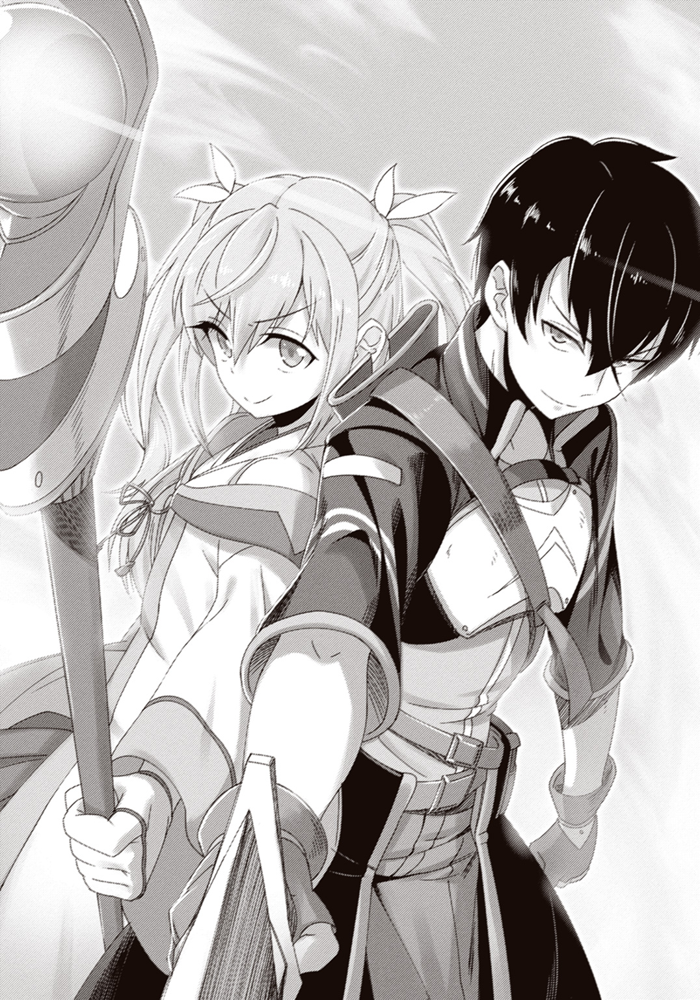
総勢八十四人。
どいつもこいつも、こんな怪しげなゲームに目をくらましたアホどもだ。だからだろう。士気は文化祭の前夜みたいに高く、万の敵を相手にするというのに怯んだ様子がなかった。
「防衛ラインを二つ引こう！ 第一防衛ラインは麓のほう！ 第二防衛ラインは修道院の塀だ！ 第一防衛ラインで撃ち漏らしたのを第二防衛ラインで処理してくれ！」
ざっくりした会議で決まった作戦を通達するのは、例によってセツナだ。プレイヤーたちは勇ましい返事をし、割り振られた持ち場に走っていく。俺もサクラと共に走った。目指すは当然最前線。修道院正面の山道を二十余名の味方と共に駆け下りる。
ここは修道院の正面門に直通する唯一の道だ。遠目で見た限り、敵に飛ぶタイプの奴は少ない。多くの魔物がこの坂を通ってくるはずだった。
「いるいるいるいる！ めちゃくちゃいるなオイ！ 何十匹いんだあれ！」
「焼き尽くします!!」
案の定、坂の麓にわらわら集まっていた魔物の群れに、サクラが炎の波を叩き込む。昨日暇人どもが命名したところによれば、ホウカ系第二段階魔法《ダイホウカ》。なぜホウカ系かと言うと、ゴブリン退治のときにこの魔法で放火した奴がいたかららしい。何やってんだ。
《聖杖エンマ》の内蔵マナによってブーストされた火力に、魔物の群れの約一割が炎に還った。そこに俺を含む前衛部隊が正面から突っ込んでいく。
人型四割。四足歩行三割。残りは足すらない何か。棍棒をはじめとした武器を持っているのは人型のうち半分ほど。最大リーチは一メートル半ほど。オーケー、把握した。
シャリン！ と、魔剣フレードリクを背中から音高く抜き放つ。
あとは反射神経に任せた。目につく端から斬り飛ばし、囲まれそうになったら少し退がって位置関係をリセットする。リーチでは俺のほうが上だ。どれだけ数がいようと、間合いギリギリで戦えばあっちの攻撃が届くことはない。
最初の激突が終わり、敵数がさらに二割ほど減った頃、後ろから声が届く。
「詠唱終わり！」
前衛部隊が一斉に退がる。それと入れ替わるようにして、後衛が放った魔法が魔物の群れに突き刺さった。サクラ含め範囲攻撃魔法の使い手が何人かいるので、殲滅力は魔法攻撃のほうが上だ。だがイメージ形成に使う時間は俺たち前衛が稼がなければならない。
一斉魔法攻撃を受けても、魔物は後から後から押し寄せてきた。強さよりも数がヤバい。一発でも攻撃をまともに受けたらノックバックしているうちに袋叩きにされてしまう。だから掠った程度のダメージでも後ろに退がり、体勢を立て直さなければならなかった。
敵の鋭い爪がシールドに掠り、俺は舌打ちして三歩退がる。そして再び間合いを詰めようとしたが、魔剣の刀身を見て踏みとどまった。
さっきまで橙色だった刃が、黄色に変色している。
「マナ濃度イエローに低下！ ポイントβまで退がります！」
魔法を同じ場所で過剰に使い続けるとマナ濃度が下がるのだ。するとシールドの回復速度が落ち、頼みの綱の範囲攻撃魔法も威力を落とす。いったん場所を変えるしかない。
後衛の魔導士部隊が一斉攻撃で敵軍を押し留め、その間に全力で坂道を駆け上がる。
時間を確認した。いつの間にか戦闘開始から二〇分も経っている。残りは約二〇分――半分を越えた。続いてタイムラインを見ると、やられてしまったらしい連中の呟きが散見された。復活まで一〇分。ログイン地点から戻ってくるのにさらに。地味に効いてくるな......！
ポイントβに辿り着く。振り向くと、異種様々な魔物の軍勢が怒濤の如く坂道を駆け上ってきていた。魔法の過剰使用で低下したマナ濃度は五分ほど放置すると元に戻るのがわかっている。だからここで五分粘った後、元の位置まで押し返すのだ。
魔導士部隊が魔法攻撃を雨のように降らせ、陣形が乱れたところで俺たちが暴れ回る。魔物たちは知能が低くて御しやすい。突撃と砲撃を繰り返すだけであっという間に五分が経った。
「ポイントγまで後退！」
サクラの指示で俺たちは再び坂を駆け上がった。魔物も真っ正直に追いかけてくる。徐々に押し込まれているようにも見えるが、そうじゃない。誘い込んでいるのだ。後衛にいた魔導士が二人、すでに左右の森に潜んでいる......!!
二発の《ダイホウカ》による挟撃が、魔物の群れを襲った。
群れのどてっぱらが一瞬で空白になり、先頭集団が孤立する。そこにくるりと転進した俺たちが来て、孤立した魔物たちは反撃もできず斬り捨てられた。
まだだ。俺たちは勢いを止めず、動揺が走る後続集団に突撃する。激突の寸前、また敵集団の中ほどで炎が迸り、俺たちの目の前にいる集団が孤立した。
その繰り返しでどんどん戦線を戻していき、ついには坂道の入口に戻ってくる。魔剣の刀身を確認すれば、元通りのオレンジ色。完璧だ......！
急造のチームにしては充分すぎる連携だ。これなら最後まで守り切れる！
確信を深める俺の視界の端で、制限時間が一〇分ジャストを指した。
「――え？」
最初に気付いたのは、俺だった。
視界が突然、暗くなったのだ。
思考が電撃のように走った。ほぼ脊髄反射で叫ぶ。
「全員退がれ！」
指示に反応できたのは、十数人いる前衛のうちたった三人だった。
背後に身を投げ出した俺の目の前に、ズドンッッッ!! と何かが墜落する。粉塵が大きく舞い上がり、逃げ遅れた連中が吹っ飛ばされた。一撃死は免れたようだが、一瞬見えたシールドの色は黄色。充分危険域だ。
俺は起き上がるなり、落ちてきた何かからさらに距離を取った。他の三人も自然と同じようにした。わかるのだ、なんとなく。粉塵のヴェールの向こうにいるものの危険さが。
粉塵を搔き破るようにして姿を現したのは、人の形をした暗黒だった。
漆黒の鎧を身に纏った、二メートル超の偉丈夫――白銀の長髪は燃えるように逆立ち、真紅のマントは柳のように風に棚引く。動と静を身一つで同居させ、その男は超然と俺たちを見下ろした。彼我の距離は一〇メートル以上――いかに背丈に差があっても見下ろせる距離ではないのに、見下ろされた、という錯覚を、ただの一瞥で、拭い難く刻みつけられたのだ。
「――クッ」漆黒の偉丈夫は、耐えかねたように口角を上げた。「クッ、クク......ハハハハハハハハ――ッ!! どれほどの戦士が揃っているのかと思えば、たかが数十人の小童とはな!! これは失礼をした。この戦力は、いささか大人気なかったようだ」
口元に薄笑いを浮かべ、偉丈夫は注目を集めるように派手にマントを広げた。
「愛すべき我が同胞たちよ！ 殊更遊んでやる必要もあるまい。迂回を許そう！」
「なっ、しまっ――！」
道を無視して森を突っ切らせる気だ！ 偉丈夫の背後で魔物の群れが動くのが見える。戦線を広げられたら俺たちでは抑えきれない！
だが、機先を制した奴がいた。炎の波が奔り、左右の森に火を点ける。火は瞬く間に燃え広がり、森に入ろうとしていた魔物たちの行く手を阻んだ。
背後を見ると、サクラが《聖杖エンマ》を構えていた。瞬時に危機を悟り、咄嗟に対応の手を打ったのだ。
「ほう......」偉丈夫は顎に手をやり、感心の声を漏らす。「なかなか思いきりの良いことだ。だがいいのか、小童ども。これで貴様たちの逃げ場もなくなったぞ？」
森は見る間に炎の壁と化した。見晴らしのいい、まっすぐ一本の坂道――俺たちの生存可能領域はここだけだ。森に隠れて好機を探るという手は使えなくなった。
俺は剣を強く握り、構え直す。他の前衛部隊も同じようにした。
「飽くまで退かぬか。ふむ、許そう。貴様たちにも希望があるということだな。なれば、先刻より膨らみ続けているこの気配は、錯覚ではなかったか」
偉丈夫は俺たちの背後を――スプリング修道院を――エリスのいる場所を一瞥し、
「良かろう！ 貴様たちの勇気に免じ、正面より堂々と訪問することにしよう。さあ、魂に刻むがいい――自らに絶望をもたらす者の名を!!」
【ＢＯＳＳ ＥＮＥＭＹ：《暗黒邪剣王バラグトス》】
網膜に刻みつけられたように現れた、その名前。その名前を見て、俺は思わず呻いた。
......は、マジかよ。もうラスボスと戦えって......!?
バラグトスが前に差し出した手に暗黒の粒子が集った。粒子は禍々しい光沢を放つ大剣へと姿を変え、同時に円状の波動を放つ。波動は何の抵抗もなく俺の身体を通り抜け、
「かっ......うごかっ......!?」
一瞬だ。ほんの一瞬だが、全身が完全に硬直した。呼吸が停止し、心臓すらも止まったように感じられた。不意に脳裏に浮かび上がったのは、蛇に睨まれた蛙、という言葉。
「あ......あああああああああッ!!」「おおおああああああッ!!」「ううううううううッ!!」
突然、俺以外の三人が奇声を上げた。そして剣を振り上げ、バラグトスに突撃していく。
「とっ......止まってください！ 時間さえ稼げばいいんですから!!」
サクラの制止の声は、届かなかった。
三人の動きは明らかに精彩を欠いていたが、それでもスピードは超人のそれだ。しかも攻撃はまったく同時に、三方向から。どんな達人にだって防御不可能な攻撃のはずだった。
なのに――直後、俺は理不尽を目撃する。
バラグトスに振るわれた三つの刃は、すべてピタリと止まっていた。一つは大剣に受け止められ――そしてもう二つは、バラグトスの手に摑み取られて。
大剣で受け止めたのはわかる。充分に可能だろう。だが摑むってなんだ!? 片方を摑んだまま手を動かし、もう片方も摑んだ？ どんな速度と精度なら可能なんだよ、そんなの!?
「むんッ―――!!」
バラグトスが大剣を大きく振り回した。同時、バリンッ!! という音が重なって聞こえる。
俺は見た。三人が全員吹き飛ばされ、その周囲に透明な破片が舞っているのを。
シールドを完全破砕された三人は光となって消滅する。バラグトスは怪訝げに片眉を上げた。
「死体は残らぬか。面妖だが、邪魔にならぬのは良いことだ。許そう」
......い、一撃......？
あの三人、ダメージは受けてなかったよな......？ 受けていたとしても、回復するのに充分な時間があったはずだ。なのに一発すら耐えられない!?
俺は助けを求めるように時間を確認した。まだ......あと、七分もある。
無理だ――頭の奥の冷静な自分が判断した。俺たちは一分も経たずに皆殺しにされる。そうなったら、こいつがエリスのもとに辿り着くまで二分もかからない......!!
負けイベントっつったって加減があるだろ......。こうなったら、最後の一人まで肉壁に使って、少しでも時間を稼ぐしかないのか......!?
「どうした？」バラグトスが笑みを浮かべ、一歩、足を踏み出した。「通ってしまうぞ？」
俺は歯を食い縛り、魔剣の柄を握り締めた。
攻撃力も、防御力も、どっちもさっぱり足りてない。それでも――それでも！
この世に、無理ゲーなんてねえんだよ―――!!
その瞬間だった。ピキン、という音が鳴った。音源に目をやれば、魔剣フレードリクの刀身に刻まれた魔法陣が輝きを放っていた。その輝きが目に入った途端――
――閃いた。
頭の中に思い描く。一つは、血流を速く巡らせるイメージ。もう一つは、身体の表面を膜で覆うイメージ。二つのイメージを同時に思い描くという、普段なら絶対にできないことを、まるで身に染みついているかのように自然にこなし、心の中で詠唱した。
《射影開始》。
全身を二重の光が包む。その意味は、誰に教えられるでもなくわかっていた。
俺は地面を蹴る。ひと蹴りで想定以上に移動した。身体を疾風に変じた錯覚。気付けば、バラグトスの二メートル超の巨体が目の前にあった。
両手で握ったフレードリクを振り下ろす。バラグトスは大剣でそれを受け、
――グッァァアアアンンッ!!
「む!?」
甲高い金属音が響き、バラグトスの踵が数センチ、退がる。
バラグトスは驚愕の表情の後、間近の俺を睨みつけた。
「小僧ッ!!」
フレードリクを押し返し、大剣を振り下ろしてくる。避けられなかった。俺はまともに斬撃を受け、強く後ろに弾き飛ばされる。一瞬浮かび上がったシールドの色は赤――耐えた！
地面を数度転がってから起き上がり、俺はアイテムウインドウをチラ見する。魔剣フレードリクの説明文が勝手にポップアップしていた。第一の『？？？？』が文章に変わっている。
【一定条件を満たすことで、新たな魔法を閃くことができる】
つまり、知らない魔法の使い方を知る効果。今、俺が閃いたのは身体能力を強化する魔法とダメージを軽減する魔法だ。だがもう一度使えるかと訊かれたらちょっと自信がない。再現性はないと見るべきだろう。となれば、大急ぎでやってもらわないといけないことがある。
「貴様は存外やるようだな」バラグトスがほんの少し警戒を込めた目で俺を睨む。「栄誉に浴するがいい――構えてやろう」
バラグトスは身を低くし、初めて大剣を構えた。それを注視しながら、後ろに声を放る。
「サクラ！ 『血流を速く巡らせる感じ』と『肌を膜で覆う感じ』だ！ 範囲化しろ！」
「は......はあっ!? そんな無茶振り――ああもう、やりますよ！ 一分ください!!」
最初にバラグトスの着地で吹っ飛ばされた連中のシールドも、そろそろ回復しているはずだ。そいつらを範囲魔法化した強化魔法でバンプアップすればだいぶマシになる。って言っても一分か。クソ速いが、今の俺には長すぎるな......!!
最後のダメージから三秒経ち、シールドゲージは見る見る回復している。だが全快には程遠い。無傷で乗り切るつもりでなきゃ一瞬で終わる......！
俺はフレードリクを握り直し、再びバラグトスに突っ込んだ。
魔法で強化したおかげで、どうにかまともに打ち合うことはできる。ボスゴブリン戦を思い出し、いなすことを主軸に防戦に徹した。前みたいに永久コンボを組めないかと一瞬思ったが......無理だ。ステータスが違いすぎる。攻撃が入ってもまともに仰け反ってくれない。
「なかなか手先が器用なようだな。......では、これはどうだ？」
バラグトスが大剣を振り上げ――ピタ、と止めた。
ディレイ......!? 俺はいなしに入っていた剣を反射的に止める。その一瞬の硬直のうちに、大剣が再び動いた。避けられない――!!
「約束通りっ―――」
漆黒の大剣が眼前に迫った瞬間、頭上から光が降ってきた。
「―――一分！ です！」
ガィンッ!! と激しくノックバックし、俺は地面を転がされる。死んっ――で、ない！ シールドゲージはギリギリ残っている。直前に降ってきた光が俺の防御力をさらに上げ、全快しかけていたシールドをかろうじて守り切ったのだ！
見れば、他の連中も俺と同じ二重の光に覆われている。やりやがった、あいつ......！ マジでたった一分で魔法の範囲化に成功しやがった！
俺は「よっくやったあっ！」と叫びながら立ち上がった。魔剣フレードリクを両手で握り、バラグトスと対峙する。他の連中も形勢の変容を感じてか武器を構えた。
範囲強化魔法のおかげで一撃死はなくなった。きちんとローテーションを組めば、時間を稼ぐくらいはできるはずだ。しかし、敵はこのゲームのラスボス。そしてこれは、あからさまなまでの負けイベントだ。いつ何が起こるかわかりやしない。
バラグトスは光を纏った俺たちを見て、悠然と微笑んだ。それは絶対的上位者の余裕。俺たちのことを対等な敵とも見ていない表情だ。
残り時間――五分。
今までの人生で、最もスリリングな五分間が始まった。
「フッハハハハハハハハハハハハハハハハハハハハッ!!」
戦いは拮抗した。俺たちは波状攻撃を繰り返し、バラグトスをその場に釘付けにする。対してバラグトスは高らかに笑いながら群がる俺たちを薙ぎ払う。一撃喰らうたびに瀕死に追い込まれるが、その都度きっちり回復を待てば、そうそう脱落することにはならなかった。
だが――ああ、わかっている。曲がりなりにも戦いが成立しているのは、バラグトスが遊んでいるからだ。釘付けにしていると言えば聞こえはいいが、つまるところ、俺たちは未だに奴をその場から動かすことすらできていないのだ。最高記録は俺が数センチ押し込んだあのとき。一切回避行動を取らないまま、バラグトスは俺たちを圧倒しているのだった。
ファラ系第二段階魔法《ファラミラ》が雨と降り注ぎ、バラグトスが大剣で吹き散らす。俺はその隙に突撃した。鋭い刺突で甲冑の隙間を狙い――漆黒の大剣に受け止められる。
バラグトスは俺を見下ろし、にやりと笑った。
「児戯に付き合うのも大人の義務か――許そう」
ナメッ......てんじゃ、ねええええッ!!
ギィイインッ!! 俺は漆黒の大剣を下から叩く。当然この程度ではバラグトスはこゆるぎもしない。だが、注意は引けたはずだ。この瞬間だけは、俺の遥か背後にいるサクラを、意識から外しているはずだ......!!
俺の頭上を追い越す形で雷球が飛来し、バラグトスは反射的に大剣で防いだ。
「むっ......!?」
雷球魔法《スプリング》――バーサークウルフ戦で証明済みだ。剣は電気を通す！
俺はバラグトスの顔面に向かって魔剣を振るった。コンマ数秒の麻痺により、大剣も手甲も防御に間に合わない。剣先が――バラグトスの頰を裂き――背中を反らして躱された。
チッ！ 俺は距離を取る。入ると思ったんだけどな......！
バラグトスは頰に走る赤い光芒の筋を、そっと指でなぞった。沈黙が、数秒――
「......なるほど」ぽつりと言い、そして告げる。「お遊びも潮時ということか」
ビリッ――！ 背骨を電流が駆け上った。
「許そう、小童ども。――まとめて死ね」
直後。バラグトスの頭上に、巨大な暗黒の球体が出現した。
魔剣フレードリクの刀身が視界に入り、全身に鳥肌が立つ。いつの間にか、オレンジだったマナ濃度がイエローに下がっている。今、この瞬間、大量のマナ消費によって低下したのだ。あの暗黒の球体には、《ダイホウカ》数十発分の力が凝縮されている......!!
バラグトスが右手の禍々しい大剣を頭上の暗黒球に差し込み、鍵のように回した。
炸裂。
一瞬、ゲームがバグったのかと思った。五感のすべてがブレて途切れ、上も下もわからなくなる。時間を切り取って奪われたかのように、次の瞬間、俺は仰向けに倒れていた。
赤い半透明のシールドが、目の前でチカチカと明滅している。......生きてる？ 痛みはないので、ゆっくりと身を起こした。
辺り一帯、およそ直径五〇メートルの範囲が、焦土と化している。中心には平然と佇むバラグトスの姿。爆発の痕跡はサクラたち後衛まで届いており、それより近くにいた前衛部隊は、俺を含め三人しか生き残っていなかった。しかも全員赤いシールドを明滅させている。
「ほう。残ったか。少しばかり侮ったようだな」バラグトスは俺たちを見回し、スッと片手を上げた。「だが、雌雄は決した。もはや我が剣を汚すまでもない」
咆哮が肌を打った。地面を揺らす無数の足音。振り向けば、待機していた魔物の群れが津波のように押し寄せてきている......。
何もしなければ、俺たちはそれに呑み込まれて終わりだっただろう。だが魔物たちの出端を挫くように、その鼻先に炎が奔った。魔物たちは慄いて足を止める。
「先輩！」叫んだのは、サクラだった。「その程度で終わりですか!!」
思わず笑う。なんて安い挑発だ。その程度で乗せられるとでも思ってんのか？ 俺がそんなやっすい挑発で奮起するほど単純な奴に見えてたのかよ？
「ったく――よくわかってんじゃねえか」
俺は立ち上がりながら、限界まで目を見開いた。正面のバラグトスに焦点を据え――
あ、いける。
――直後、視界から色が失われた。セピア色に変じた世界は、次いで速さまでもを失っていく。宙に散る火の粉や舞い上がる砂埃の一粒一粒が、まるでコマ送りのように鈍重に動いた。
拡張された刹那の世界で、俺はすべてを把握する。自分の状態、周囲の状態、敵の状態。すると、思考という遅すぎるプロセスをカットし、いきなり身体が動いた。まるで何千回も繰り返したことのように、俺は地面を蹴り、蹴り、蹴り――バラグトスの目の前に踏み込む。
すでに俺に気付き、振り向いていたバラグトスは、俺の縦斬りを大剣で受け止めた。金属音が響き渡り、手の平に衝撃が返ってくる。――まだ繫がる。
「むっ......!?」
反動を利用し回転。遠心力を乗せた一撃。防がれた。――まだ繫がる！
「きっ、貴様――いつまでッ――!!」
まだ繫がる。まだ繫がる！ まだまだまだまだッ!! 途切れさせない。防がれた直後から次の攻撃に繫げ、防御以外の行動を取らせない。固めて固めて固めて固めて固め殺す!!
ギン――!! 大剣の真芯を捉えた音がした。今までビクともしなかったバラグトスの大剣が、ふわり――わずかに、浮く。数センチほどのかすかな移動は、しかし確実に、バラグトスの胴体に隙を作り出した......!!
パイルバンカーめいて放たれた俺の刺突は、バラグトスの鳩尾を鎧越しに捉える。
ガリッ――と、鎧の表面を削った音が、剣と腕を伝って聞こえてきた。
「むっ、おっ......!?」
ぐらり――バラグトスの巨体が、揺れた。
刺突の衝撃に押されて、傾いだ身体を支えるため――ザン！ と、一歩後ろに、蹈鞴を踏む。
動かしたのだ。今まで一歩たりとも動かすことのできなかったバラグトスを。
「小ッ......僧ォおおッ!!」
バラグトスの顔が激昂に歪んだ。迫り来る大剣に、しかし、俺は怯まない。むしろ逆にと魔剣を斬り上げた。魔剣の先が魔王の肌に触れ、大剣の刃が俺のシールドに触れ、そして、
【セグメントクエスト・クリア！】
シールドゲージがいきなり右端まで回復した。
直後、俺は大剣を受けてぶっ飛ばされる。地面を転がされるが、またしても強制ログアウトになることはなかった。シールドの色は黄色――防御力強化状態のときと比べても、半分ほどのダメージになっていた。
一時間......経ったのか!? 俺は立ち上がりながら、坂道を見上げる。
朝日のような、神々しい黄金の輝き――それは、聖旗が発していたのと同じ輝きだった。
バラグトスが忌々しげな眼でその輝きを睨み上げる。
「これは、馬鹿な......！ 聖旗の輝きだと!? 完全成長にはまだ数百年かかるはず......！ ええい、構わん！ 同胞たちよ、疾くすべてを蹂躙し、聖女を私の前に引きずり出せッ!!」
サクラが引いた炎の壁を乗り越え、魔物の波濤が押し寄せてくる。しかし、その上に魔法攻撃が降り注ぎ、半分近い魔物を吹き飛ばした。
つ、強い......！ 威力が違う。魔法は同じなのに！
タイムラインには早くも情報が流れていた。
〈なんか知らんが攻撃めっちゃ効く！〉〈たぶん魔族全般への特効。被ダメも半分くらいになってる。チートすぎて大草原不可避〉〈自由だああああああああああああああああああ〉
ボロボロだった他のプレイヤーも士気を取り戻し、実に楽しげに魔物を薙ぎ倒していく。
これなら余裕だ。聖旗の加護があれば、百匹だろうが千匹だろうが相手にならん！
魔剣フレードリクを握り直した俺の隣に、サクラが並んできた。
「やられっ放しじゃ終わりませんよね、先輩？」
「当然だろ！」
俺が笑みを浮かべて返すと、サクラも不敵な笑みを浮かべて杖を構えた。
照準先は、正面にいるバラグトス。だがその手前には魔物の海が隔たっている。サクラはそんなこと気にした風もなく、弾んだ声で告げた。
「とっておきです！」
杖の先に赤い光点が灯る。それはすぐに燃え上がって火球となり――
「――《ファラゾーガ》!!」
バランスボールみたいなサイズに肥大化し、射出された。
大火球は軌道上の魔物を次々呑み込みながら、バラグトスに迫っていく。ファラ系第三段階魔法《ファラゾーガ》！ 隠してやがったのか！
「おッ......おおおおおおおおおおおッ!?」
バラグトスは《ファラゾーガ》に全身を包まれ、大炎上した。そしてその手前――魔物の海に一本の道ができている。俺はそこを全力で走った。
マントを翻して炎を散らしたバラグトスの前に、ダン!! と踏み込む。
バラグトスの双眸が、大きく瞠られて俺を見た。――とくと味わえ。お返しだ。
俺は魔剣を全力で振り下ろし、漆黒の鎧を袈裟懸けに割り砕いた。
赤黒いダメージエフェクトが鎧の切れ目から飛び散る。赤い光の欠片を地面に零しながら、バラグトスは一歩、二歩と後ずさった。
魔王は手で傷を押さえ、肩を荒く上下させながら、俺を憎々しげに睨みつける。
「貴様――貴様、貴様、貴様ッ!! 許しはせん――許しはせんぞッ!!」
どうぞご自由に。
調子に乗って追撃しようとした俺だったが、その寸前に足を止めた。
音が――消えたのだ。
怒号や悲鳴や鬨の声。足音や爆発音や剣戟の音。戦闘にまつわる一切の音が、消失した。
俺は振り返る。誰もが振り返る。
戦いを止めて、坂道を降りてくる一人の少女を、振り仰ぐ。
金髪の幼い少女は、右手に身の丈の二倍近くある旗を握っていた。それから放たれる輝きに、魔物たちはじりじり後ずさる。そうして開いた道を悠々と、少女――聖女エリスは歩いてきた。
エリスは俺の傍を通り過ぎ、たった一人でバラグトスと対峙する。
「わたしが聖女だよ――魔王さん」
バラグトスは唇を歪ませて答える。
「私が魔王だ――名も知らぬ聖女よ」
エリスは聖旗の石突きで地面を叩いた。己が存在を世界に宣言するように、力強く。
「わたしは、みんなを怖がらせて、院長先生を殺させたあなたを―――絶対に、許さない」
決定的な否定の意志。槍のように突きつけられたそれを、バラグトスは笑声で受けた。
「クッ――ハハハハハハッ!! 良い、許そう！ それが古きより続く我らの宿命よ!!」
高笑いの間に、鎧の奥の傷が癒えていくのが見えた。警戒して身構える俺を一顧だにせず、バラグトスはマントを翻す。
「挨拶は済んだ。此度はここまでとしよう。......しかし、努々忘れるな、《神の子》たる聖女よ。貴様の行く手には常に、この《魔王》が立ち塞がるということを―――」
魔王バラグトスは、まだ数百匹残る配下と共に、南の方角へと撤退していった。
魔物とバラグトスの姿が見えなくなると、エリスは大きく息をついた。聖旗の輝きも消える。
「......お疲れ」
俺は自然とエリスの頭を撫でていた。
なんとなく、ほっとしたんだ。伝説の聖女になっても、エリスはエリスなんだと。
「えへへ」エリスはむず痒そうにはにかんだ。「ありがとう、リオ。戦ってくれて」
「先輩だけじゃないでしょう？」割り込んできたのはサクラだ。「みんなにお礼を言ってあげて。誰か一人いなかったとしても、この戦いは凌げなかったんだから」
「うん、そうだね。でも......」エリスは、寂しそうに微笑んだ。「......もうみんな、帰っちゃうんだよね？ なんとなく、わかるよ」
俺は時間を見た。ポータルの有効時間は、残り二分もない......。
「また会えるだろ」俺は努めて軽く言った。「俺たちは何度でも来る。お前のところに。なんてったって、勇者様だからな」
ぷふっと、エリスは小さく噴き出した。
「自分で言っちゃうんだ」
「お前だって自分で言ってただろ。聖女だって」
「あ、そか。そうだったね」
明るく笑うエリスを見ていて、俺は思いついた。横に浮かばせていたタイムラインを手繰り寄せる。タイムラインは鬨の声ならぬ鬨の文字で埋め尽くされていた。
「エリス、みんなになんか一言。こっちで伝言できるから」
「え？ あ、えっと......えっとねー......それじゃあ」
すうっ――と、エリスは大きく息を吸い込んだ。
「みんなあああああああ――――っ!! ありがと―――――――――――――っっっ!!」
......一応タイムラインでも伝言したが、『普通に聞こえた』という反応ばかりだった。
%%%%%%%%%%%%%%%%%%%%%%%%%%%%"D. E. 0553/08/08/16:07:25"%%%%%%%%%%%%%%%%%%%%%%%%%%%%%%%
それから二週間が経った。
この二週間で、俺たちはこのＰｆＳというゲームにますますのめり込んでいった。ポータルが開くのは今のところ週に二～四回。俺たちにとってはたった数日でも、ＰｆＳでは必ずと言っていいほどそれ以上の時間が経っていて、わずか二週間でなんと三年も時代が進んだ。
「リーオーっ!!」
「おふっ!? ちょ、エリス！ いい加減抱きつくのやめろ！」
「いーやーだー！」
エリスも十三歳に成長し、最近ちょっと......その、ね？ 第二次性徴的な......。抱きつくのをやめろと何度も言っているのだが聞いてくれない。なんでこんなに懐かれたんだろう......。
この三年で、エリスは俺たち勇者の力を借りつつ度重なる活躍をし、今や誰もが知る存在になっていた。早くも聖旗教の原形らしき組織もできていて、順調に崇められているようだ。
寝ても覚めてもＰｆＳの生活が、二週間。おかげで他のゲームが滞り気味である。......ただ、俺の心には一つだけしこりがあった。ゲーム二日目に見たあれが、まだ引っ掛かっているのだ。
現実のスプリング聖堂に残っていた、池の底の焦げ跡――
考えすぎだとわかってはいる。だがどうしても、ある懸念が首をもたげてしまうのだ。
「だったら、試してみます？」軽く世間話程度に相談してみると、サクラはそう言った。「あの焦げ跡が偶然か必然か――試せば一発でわかるじゃないですか」
その提案に、俺は逡巡しつつも......乗ることにしたのだった。
%%%%%%%%%%%%%%%%%%%%%%%%%%%%"D. E. 2016/07/12/16:45:55"%%%%%%%%%%%%%%%%%%%%%%%%%%%%%%%
アーチ状の屋根がある商店街を、サクラと一緒に歩いていく。目的地はこの商店街に混ざるようにして軒を連ねている神殿だ。
「あの神殿の門は一度も建て替えたことがないそうです」サクラが言った。「ですから、先輩の懸念が正しければ、ちゃんと残っているはずです。さっきＰｆＳで残してきた落書きが」
「それはいいんだけどな、落書きの内容、他になかったのかよ」
「いいじゃないですか、『オンラインぼっち』。先輩の偉大さを歴史に残すチャンスですよ」
「残るのは恥だけだろうが！ このオタサークラッシャー！」
「だっ、誰がクラッシャーですか！ あの人たちが勝手に揉めただけです！ 私悪くない！」
言い合いをしているうちに、目的の神殿に辿り着く。小さな古ぼけた門が、土産物屋とアパレルショップの間にひっそりと佇んでいた。
「確か、右の柱の裏だよな。落書きを刻みつけたの」
「そうですよ。先輩の燦然と輝く御名が――」
「『オタサークラッシャー』も書いときゃよかった......」
俺も実際、そこまで本気ではなかったんだろう。さして気負いもなく、門を通り抜けて、右の柱の裏に回った。えーと......確か下のほう――
「ほら、なかったでしょう？ いくら得体の知れない運営でも、こんなにすぐに、しかも私たちにしか通じない超身内ネタの落書きなんて反映させられな――」
「............」
「――先輩？ どうしたんで......す、か......――」
サクラは、声を失った。俺もまた、何も言えないでいた。
門を支える柱の、下のほう。地面から一〇センチくらいの場所。そこにはこう刻まれていた。
――『オンラインぼっち』。
ゲームで刻んだはずの落書きが、現実の世界に――しかも。
まるで千年以上の時を経たような劣化まで加えられて、そこに実在していた。
第二章 強き心は、時を越えず
〈わこつー〉〈わこちぇりー〉〈枠を取って頂き誠にありがとうございます〉
「はい、枠乙ありがとうございます」
コメントビューアーが動きを見せると、サクラは愛想のいい声でマイクにそう言った。モニターの一隅には、ニマニマ生放送の放送画面が小さめに映っている。
双月紀元二〇一六年、七月二十五日月曜日、十二時五十五分。学校は夏休みに入り、世はまさに大ポケモン時代。二十二日に配信開始したポケモンＧＯを三日間満喫した俺とサクラだったが、今日は午前中で切り上げて、十四時のポータル解放に備えていた。
「さて。三分経ちましたので、今日のミーティングを始めます」
全世界で何千万という人間がポケモン集めに精を出しているが、ミーティング放送のアクティブ人数は普段と大して変わらなかった。ＰｆＳモチベはまだ落ちていないようだ。
ＴＬってやつは、会議という作業にさっぱり向いていない。各人がてんでばらばらに好き勝手なことを呟くだけになりがちだ。そこで、ポータル解放前にニマ生での攻略ミーティングを二枠――つまり一時間ほどやるのが慣例になった。その放送主兼議事進行役を買って出たのがサクラというわけだ。ちなみにウェブカメラはなく、放送画面は基本真っ暗である。
サクラは配信についてほぼ知識がなかったので、俺が色々調べることになった。だったらなんで買って出たんだよという話だが、サクラ曰く「主導権を握らないとポンコツな攻略方針に付き合わされるかもしれないじゃないですか」らしい。他人を信用してねえなこいつ。
で、骨を折った俺が放送中何をしているかというと......マイクに向かって喋るサクラの隣で、貝のように口を噤んでいるのだった。近場に現れるコイキングにボールを投げながら。
何か言いたいことがあればＬＩＮＫを使って筆談する。極力音を出さないようにしてはいるのだが、放送のリスナーはサクラことちぇりーの他に誰かいることに気付いているようで、ニマ生特有のノリで俺に『ＡＤ』というあだ名を付けていた。ぶっ飛ばすぞ。
「そろそろ次枠の時間ですね。お疲れ様でしたー」
一枠目が終わった。サクラは次枠の準備をしながら俺を見やる。
「どうして喋らないんですか？ 筆談めんどくさいんですけど」
「あのな......お前の隣に俺みたいな男がいるって知られたらそれこそめんどくさいだろ」
「えー？ なんでですか？ むしろ紹介しますよ、『彼氏です』って。――はい二枠目です皆さんこんにちは。突然ですが紹介したい人が――」
「ちょちょちょ待て待て待て待て!!」
「――なーんちゃって。まだ始まってませんよ。......おやおや？ 顔が赤いですね、先輩？」
こいつ......っ！ 最高に楽しそうな顔しやがって！
俺が逃げるように顔を逸らすと、サクラはくすくす笑ってから放送を再開した。
その横顔をそっと盗み見る。変わったところはない。普段通り......まるで二週間前の『実験』のことなんて、忘れてしまったかのような......。
あのときのことは......何だか、夢のようにおぼろげだった。あの後、どうやって家に帰ったのかもいまいち曖昧だ。まるで記憶に蓋をしたような――臭いものに蓋をしたような。
......まあどうせ、たまたま同じ場所にあった傷が文字のように見えてしまっただけだろう。だいぶ掠れていたし、思い出せば思い出すほど、如何様にも読み取れる傷だったように思う。......そう、だからサクラもわざわざ話題に出したりしないのだ。
「――先輩。放送終わりましたよ」
「え？」俺はハッと顔を上げた。「ああ......。悪い、ちょっとぼーっとしてた」
「やっぱり話聞いてなかったんですね。今日も私たちは石集めです」
「俺、素材アイテム集めって苦手なんだよな～」
「って言いながらコイキング乱獲するのやめてください。午前中散々やったでしょ！」
「やだー！ ギャラドス欲しいー！」
最初の頃とは打って変わったぐだぐだぶりで、俺たちはＰｆＳにログインした。
%%%%%%%%%%%%%%%%%%%%%%%%%%%%"D. E. 0556/08/08/17:23:03"%%%%%%%%%%%%%%%%%%%%%%%%%%%%%%%
「突進来ます！」
サクラの警告と同時、ヒヒリウムレックスの角がまっすぐ迫ってきた。俺が余裕を持って躱すと、肌に岩がへばりついたサイのような怪物は、背後の岩壁に激突して動きを止める。
「刺さった！」
「決めましょう！」
二人で一斉攻撃を仕掛ける。すでに赤いダメージエフェクトに塗れていたヒヒリウムレックスは、斬撃や電撃をこれでもかと受け、光となって消滅した。
ヒヒリウムレックスがいた場所に、ゴトゴトゴト、と石の塊がいくつも転がる。俺は魔剣フレードリクを鞘に納めると、その数を数えていった。
「えーと......おっ！ ラッキー。九個ドロップ」
「じゃあこれで終わりですね。お疲れ様でした、先輩」
「お前もな。あー、長かった」
アイテムストレージの引き出しを開け、石――ヒヒリウムをぽいぽい放り込む。これで五〇個――他のプレイヤーが集めたのと合わせれば、クエストクリアに充分な数になるはずだ。五〇という数字を見ていると、達成感と解放感が一緒になって湧いてきた。
「ったく、やり込みという言葉の意味を履き違えたようなクエストぶち込んできやがって。これで話進まなかったらいい加減キレるぞ」
「だいぶ時間取られましたよね。総計で......うわ、六時間。さすがオリハルコン」
現在のＳＱは【オリハルコンを生成し、ペンダントを作る 08:23:56】。オリハルコンの生成には特定のモンスターからドロップする色んなアイテムが大量に必要だったので、前回今回とプレイヤー総出でモンハンに勤しんでいたのだった。
「セツナさんが他の素材を纏めてくれたみたいです。鍛冶屋さんで合流しましょう」
サクラがＴＬから顔を上げて言った。セツナか......ちょっと苦手なんだよな......。
「『苦手なんだよな......』って顔してますけど、先輩は人間全般苦手じゃないですか」
「失敬な。親と妹はそんなに苦手じゃないぞ！」
「ちょっとは苦手なんですよね？ というか、名前が一つ足りませんけどー？ けどー？」
「いや、お前はもう苦手とか得意とかいうレベル超えてっから」
街に向かって歩き始める。ここから街までは急げば三十分もかからないが、移動は少しばかり億劫だ。転移魔法が開発されればいいんだが。
最初に比べると、その後のＳＱは時間に余裕があるものが多かった。おかげでプレイスタイルにも多様性が生まれている。俺たちみたいにひたすらクエストを進める奴や、エムル周辺をひたすら冒険する奴、新魔法の開発に血道を上げる奴、現実でＡＲアイテムを探す奴......。
人数もあれから少し増えて、今は確か一〇三人だ。この微増ぶりからわかる通り、このゲームを積極的に布教する人間はまったくと言っていいほどいない。それがどういう心理によるものなのかはわからないが、俺はいい傾向だと思っていた。
山道を歩いていると、荒々しくへし折られた木がいくつか目に付く。ビーバーがダムの材料を調達した痕跡だ。
あれを見るとバーサークウルフと戦ったときのことを思い出す。あの頃は熱に浮かされていたようだったが、一ヶ月も経つとさすがに、あのときほどの感動はなくなってしまっていた。
昔のほうがよかった......なんて懐古厨めいたことを言うつもりはないが、慣れってのはつくづく恐ろしい。こんな体験ですら日常になってしまうんだから。いつか、このゲームにも飽きるときが来るんだろうか？ ......さっぱり想像つかないな。
エリスが聖女になって、もう六年が経っている。この六年で、エムルの街はだいぶ人口を増やした。俺たち勇者と聖女エリスの噂を聞きつけた連中が続々と集まっているのだ。目的は信仰ではなく、安全。エムルだけではなく、国全体が魔王の脅威に晒されているようだ。
この鍛冶屋も、外から来た人間の一人だったはずだ。綺麗に髭を剃った人当たりのいいおっさんで、鍛冶屋という言葉のイメージからは少々離れている。
「聖女様とあんたたちには感謝してるぜ。おかげで安心して商売ができてんだ。信用もしてるが......正直信じられねえな。どんな手品を使って集めてきたんだ？」
苦節六時間、集めに集めた鉱石の数々を見て、鍛冶屋のおっさんは目を瞠った。
「まあいいや。これだけありゃ充分だ。待ってろ、すぐにオリハルコンを生成してやる」
おっさんはそう言って奥に引っ込む。生成ってどうやるんだろうな......。
「これでひと段落だね。お疲れ様、二人とも」
手持ち無沙汰になると、横から爽やかイケメンボイスが飛び込んでくる。おのれ俺の耳は孕ませんぞ！ と振り向くと、店の前で合流したセツナが爽やかな笑みを浮かべていた。
「存外早く終わって助かったよ。最初はリミットに間に合うかどうかも怪しいと思ったのに」
「それは、苦手とか言いながら速攻で効率的な収集方法を確立したこの人みたいな方々のおかげですよ」俺を一瞥するサクラ。「苦手って一体なんだったんですかねえ？」
「いや、苦手だからこそ早く終わらせるために――っていうかお前もクソゲークソゲー言いながらカードやってんじゃん！ そっちのほうがなんなんだよ！」
「クソゲーとは言ってません！ クソカードがあるだけです！」
「ははっ。相変わらず仲がいいね」
何が『ははっ』だこの優男。今の口論が小鳥の囀りにでも聞こえたか？
超人気ゲーム実況者であるセツナは、現在に至るまで欠かさずＰｆＳにログインし、プレイヤーのまとめ役的立場にい続けている。そのうえ動画投稿もコンスタントに続けているようで、一体一日に何時間ゲームしてんだ？ と俺ですら思うことしきりである。
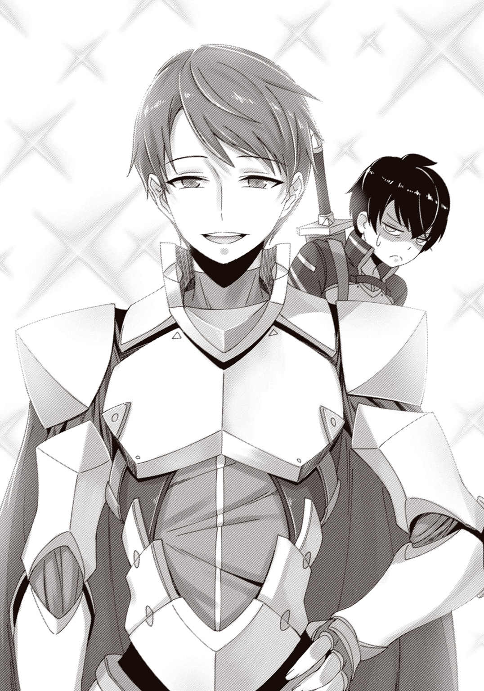
イケボの上にまるで就活スーツのモデルみたいな清潔感ある顔面。公式リアルイベントでは登場するなり黄色い歓声が爆発するらしい。羨ま――しくはないな。あんまり。
「あまりリアルのことを詮索するのはどうかと思うけど......二人は市内の学生なのかな？」
「はい。そうですけど。どうしてでしょう？」
「いや、僕もそうだからさ、君たちくらい目立つカップルがいたら、噂くらいは聞いてるはずだって思ってね。でも聞いたことないから、不思議に思ってたんだ」
「学校では喋りませんから、私たち。あとカップルじゃないです」
聞き逃さないサクラ。よく言った。
「そうか......」セツナは頻りに頷く。「うん、いいね。そのほうがいいよ」
どういう意味だよそれ。俺なんかとは付き合わないほうがいいってこと？
疑問に答えが出る前に、鍛冶屋のおっさんが奥から出てきた。早いなおい。
「こいつがオリハルコンだ」
おっさんは机の上に直径一〇センチくらいの石を置いた。ちっさ。虹色のマーブル模様に輝いていて、見る角度を変えると模様も変わる。
「昔の王様が国を丸ごと売り払ってようやく一個手に入れた――なんて伝説があるが、生成法が確立された今じゃそれほどの貴重品じゃねえ。鉄なんか目じゃねえくらい硬てぇから、多少乱暴に扱っても傷一つつかねえしな。とはいえ、女への贈り物としちゃあ今でも大人気だ。石言葉は確か......『色褪せない約束』」
色褪せない約束......。最硬の鉱石らしい石言葉だ。
「ただ、こいつをペンダントだの指輪だのにするにゃ、そこら辺の細工師じゃ無理だ。ドワーフ秘伝の技術が必要だぜ。この辺だと北の山に一人住んでるって話だが、ま、好きにしな」
ドワーフ！ ついに出たか、亜人種！ ......できればエルフがよかった。
おっさんはオリハルコンを摘まみ上げ、ポンと俺の掌に置いた。ほのかに温かい......。
「北の山というと、ホース山だね。今日のうちに行ってしまおうか。どう？ 二人とも」
「ええ。大丈夫です。いいですよね、先輩？」
「ん？ ああ、おう」
そういうわけで、このままセツナと一緒にドワーフを訪ねる流れになった。
ドワーフの住処はあっさり見つかった。崖の下にひっそりと佇むあばら屋で、ＴＬからの情報がなければ廃屋だと思ったかもしれない。
ドワーフはイメージ通りの、ヒゲモジャで背丈の低い筋骨隆々のおっさんだった。眉間に深い皺が寄っていて、いかにも気難しそうだ。そして案の定、
「その仕事は受けん」
俺たちの（というかサクラとセツナの）依頼を、ドワーフはにべもなく断った。
「オリハルコンの細工は数年がかりの仕事だ。他の仕事をキャンセルしてまでその仕事を受ける理由が、俺にあるというのか？」
存外に真っ当な理由だった。ぐう正論。
「そこをなんとかお願いできませんか？」サクラが食い下がる。「報酬は言い値で構いません。先払いにも応じますので」
「言い値か」もじゃ髭の奥の唇がにやりと歪む。「ならばこうしよう。ピース神殿の地下にある《アンドヴァリの槌》を持ってこい。そうしたらすぐにでも仕事に取り掛かってやる」
槌......？ ハンマー？ というかピース神殿って......あそこに地下なんてあんの？
「それを持ってくるだけでいいんですか？」
「ああ。《アンドヴァリの槌》があれば細工もすぐに終わるからな」
数年がかりの仕事がすぐに？ どういう理屈なのそれ......。
ピース神殿はエムルの東部にある。自分で取ってくるのも難しくないと思うが......。
俺はサクラと目配せを交わし、セツナが頷いた。
「わかりました。その《槌》を持ってきます」
「たぶんダンジョンですよね」
あばら屋を出ると、サクラが言った。俺は頷く。
「そうだろうな。ＳＱの制限時間はまだ七時間以上あるし」
「ピース神殿地下ダンジョンか......なかなか手強そうだね」
「あ......お、おう」
いきなり反応されるとびっくりするだろうが！
セツナがＴＬウインドウを裏返して可視化させる。
「もう時間がないし、本格的な攻略は次回からだね。他の人に入口だけ確認してもらうよ」
「お願いします。パーティ編成もしといてもらわないとですね」
「それなんだけど」ウインドウを再び裏返して不可視にしながら、セツナが言った。「二人のパーティに、僕も入れてもらえないかな？」
「え？」「は？」
俺たちは揃って素っ頓狂な声を出した。一瞬、何を言われたかわからなかったのだ。
セツナは焦ったように手を振り、
「い、いや、まったく未知のダンジョンだしさ。二人だけじゃ危ないと思って。僕は決まった仲間もいないし、ここで一緒になったのも何かの縁だし」
まあ、言われてみれば......。最近モンスターも強くなってきている。俺たち二人だけで何もわからない場所に向かうのはリスクのある行動だと言えるだろう。
だけど、今まで他の奴を入れたことなんてなかったしな......セツナの実力も未知数だし......ハイリスクとはいえ、慎重に行動すればそうそう不覚は取らな――
「ええ、いいですよ」
「――っておい。人が迷ってるのに何をあっさり」
「先輩はどうせ慣れてない人とパーティ組むのが面倒臭いだけでしょう？ この機会に人見知りの改善に努めてください」
......まあ、そう言われたら何も言えんけども。
「でも、三人にするならいっそ四人にしてしまったほうがいいかもですね。バランス的に」
「そうだね。僕は前衛だから、後衛の人をもう一人――」
「じゃあわたしも行くっ！」
突如として新たな声が飛び込んできて、「どぉうっ!?」俺の背中に何かが抱きついた。
「え、エリス!? お前なんでここっ......！」
「街で見かけたから尾行してきちゃった。気付かなかったでしょー」
後ろから俺の首に腕を回しているのは、十六歳になったエリスだった。......そう、十六歳。俺と同い年である。この前までちんちくりんだったのに......正直まだちょっと信じられない。でも背中に、直接！ 伝わってくるこの感触は確かに――
「どお？」エリスが耳元でそっと囁いた。「おっぱい、サクラよりおっきくなったでしょ？」
ひょおおおうっ......！ 耳に息を吹きかけるなああぁ......！
「え、エリスさん......？ 俺としては、こういうのは控えていただけると......」
「どして？ ムラムラするから？ いいよ？ いっぱいわたしに欲情して？」
「オイコラ聖女ーっ!! 発言に気をつけろーっ!!」
騎士団の連中に見つかったら俺がヤバい！
「はいはい、エリスさん。そこまでです」
サクラが俺の背中からエリスを引っぺがした。ああ、助かった......。どうしてこのゲームはこんなにも女体の感触にリソースを割いてるんですかね？
「んもー、何するの。せっかくリ――ケージを誘惑してたのにー」
セツナがいるのでハンドルネームに言い直すエリス。対し、文句を言われたサクラはにっこり笑顔を浮かべた。おっと珍しい。サクラさんが不満を露わにしている。
「聞こえてましたよ？ 私よりなんですって？」
「おっぱいおっきくなったよーって。ほら！」
胸を張るエリス。そのサイズはグラビアアイドル顔負けで――人間って六年でこんなに変わるんだなあ。その上、この世界、ブラジャーってものがなくてですね......どえらく揺れるし、感触もこう......直接！ 伝わってくるのだ。そりゃあサクラの胸は、目ん玉に直接！ 飛び込んでくるようなエリスのそれに比べれば控えめだが、中学生としては普通だと思う。
「サイズなんてどうでもいいんですよ」サクラは切って捨てた。「それよりもその程度のことで私に勝てると思われていることが心外です！ 先輩はコミュ障なので表には出しませんけど、とっくに私にベタ惚れなんです！ 毎晩鏡に向かって私と話す練習をしているんです！」
してねえよ。ソース出せソース。
「わ、わたしだって！ 毎日枕でちゅーする練習してるもん！」
それ張り合えてませんよエリスさん。っていうか何してんの。
エリスと睨み合うサクラに、俺は呆れ混じりに声をかける。
「なんでそんなに張り合ってんのお前」
「だって!! こんな脂肪如きに負けるんだったら、あのとき私が理不尽に罵られたのはなんだったんですか!!」
あまりの勢いに「お、おう」と俺。......や、闇が......闇が出ている......。
なおもサクラとエリスは不毛な言い合いを続けた。だいぶ打ち解けましたねお二人さん。
「壮観だね」セツナがにこにこして言う。「こんな美少女二人が同じ男子を取り合っているところなんて、なかなかお目に掛かれるものじゃないよ」
「......いや、エリスはともかく、あいつは容姿に関して闇があるだけだろ」
ダシにされるほうはただただ疲れる。疲れすぎて人見知りするのも忘れた。
「じゃあエリスさんのほうは？」
「......俺の中だと、初めて会ったときの年齢でまだ止まってるっていうか......。そもそも、いいのかこれ、ゲームとして。キャラが特定のプレイヤーに懐くって」
「はは。いいんじゃない？ 懐かれてるって点ではプレイヤーみんな同じだし」
正直、どうしてエリスに好かれているのか、未だにわからないのだ。そりゃ接触機会は他のプレイヤーより多かったかもしれんが、特にフラグが立つようなことをした覚えはない。まさか頭撫でただけでデレるわけもないし......いや、ゲームだからあり得るのか......？
「二人とも、ちょっといいかな？」終わりなき抗争に突入せんとした二人に、セツナが割って入った。すげえ。「その話はいったん後にして、本題に戻らない？」
本題？ ......あ、エリスが俺たちについてくるって話か。すっかり忘れてた。
エリスが「そうだそうだ」とポンと掌を打った。仕草とかはまだ子供っぽいんだよな。
「四人にしたいんでしょ？ だったらわたしも連れてって！ 聖旗の力があったらみんな楽に冒険できると思うよ！」
それはそうだ。聖旗がもたらす魔族特効の威力は絶大だ。シールドを一瞬で全快させるほどの力を持つ全体回復能力はせいぜい一日一回しか使えないようだが、それでも充分すぎる。
「うーん......不公平じゃないですか？」サクラが顎に手を添えて言った。「私たちだけ有利な状態で攻略に臨むっていうのは、他の方々に示しがつかないというか......」
「大丈夫だと思うよ。ピース神殿くらいの大きさなら丸ごと範囲に入るから」
確かに、山中に散らばっていたプレイヤーが全員、効果範囲に入ったくらいだからな......。
「でも、俺たちと得体の知れないダンジョンに入るなんて、騎士団の連中が反対するだろ」
エリスは聖女として覚醒して以降、騎士団という組織に警護されている。今日はいないようだが、たぶん撒いてきたんだろう。この騎士団って連中は、どうも俺たち勇者のことをよく思っていないようなのだ。俺たちがエリスに好かれているからか、あるいは時たま出てきて好き勝手なことをする迷惑な連中と思われているのか――たぶん両方だと思うが。
「大丈夫！」エリスはにこっと笑った。「内緒にしてくるから♪」
「いや、ダメだろ」
「えー！ なんでー!? 連れてってよー！ お願いーっ!!」
ぷにょんっ。直接!!
「ね？ みんなと一緒に冒険したいの......お願い......」
そんな切なそうな目と声で言われてもダメなものはダメだと二の腕に直接!!
「......仕方ねえな......」
「やったーっ!!」
エリスは万歳して跳びはね、俺の二の腕は直接!! から解放された。ふう......。サクラはゴミを見るような目で俺を見ていた。いや、ただ根負けしただけですから......。
「じゃあ待ち合わせしないとね」セツナが柔らかな声で言った。「エリスさん。僕たちが来たらすぐにわかるかい？」
「わかるよ。騎士団のみんなは隠そうとするけど、街が騒がしくなるもん」
「じゃあピース神殿の前で集合だ。一時間待っても来なかったら迎えに行くからね」
「うん、わかった！ ......みんなは、今日はもう行っちゃうの？」
寂しさを隠さず声に乗せて、エリスは俺たちを見回した。もう何度となく繰り返したことだ。こういうとき、俺は彼女の頭を撫でて、こう言うことにしている。
「また会おうな」
「......絶対だよ」
%%%%%%%%%%%%%%%%%%%%%%%%%%%%"D. E. 2016/07/25/21:45:27"%%%%%%%%%%%%%%%%%%%%%%%%%%%%%%%
その日の夜。ＴＬは明日から始まるダンジョン攻略の話題で盛り上がっていた。今日、有効時間の終わり際に行われた調査によると、ピース神殿地下への入口はいくつも存在するらしい。時間が限られていることを思えば、手分けして探索することになるだろう。
一方で平常運転な奴らもいる。魔法研究ハッシュタグで魔法ランク会議が紛糾していた。
魔法ランクってのは、威力とか効果範囲とかマナ消費量とか発動難度とか、諸々の要素を踏まえて各魔法を格付けしたものだ。半ばノリで決められているのだが、割と妥当なことが多いので基準としてそこそこの信用を得ている。
具体例を挙げると、チュートリアルで使った魔法《ファラ》は最低のＦランクで、サクラがバラグトスにぶっ放した魔法《ファラゾーガ》はＢランクだ。最高は現状Ａランクで、威力も発動難度も桁違いなので、特別視されてルビ振りまくりの中二病丸出しネーミングが為されている。......いや、嫌いじゃないけどね？ そういうの。必殺技かくあるべし。
何とはなしに見ていると、しれっとサクラが議論に混ざっていた。こいつもこいつですでにＡランク魔法を一つ開発している魔法研究班のエースである。ほんっと、こいつらどういう理屈で新魔法開発とかしてるんだろう......。俺も魔剣フレードリクが閃きをもたらしてくれることはあるが、肝心の再現性がないから、いつもサクラが形にしているのだ。
ＴＬの動きを横目に見ながら、俺はパソコンでニマニマ動画に接続した。ゲームカテゴリランキングを開く。下にスクロールするまでもなく、二位にセツナの動画を発見した。
明日からのダンジョン攻略ではセツナと一緒に行動することになる。だからその前に、あいつの動画を観ておかなければならない気分になったのだ。
動画のタイトルをクリックし、プレイヤーが表示され、シークバーが動き始め――
『グッモーニンおまえら！ セツナです！ というわけでね、今回からは――』
――デカい赤文字が画面を埋め尽くした。
眉をひそめ、顔を歪める。......そりゃそうか。こうなってるよな。予想しておくべきだった。
画面上に吹き荒れる色とりどりのコメントが具体的にどんな文章なのかは、もう意識に入れたくもない。要するに見るに堪えない誹謗中傷の類だ。
セツナは元々《おまえら構想》という実況者コンビの片割れだった。だが今はソロで活動している。理由は簡単で、相方と縁を切ったからだ。
その切っ掛けとなったのが、相方の炎上騒動だった。
セツナの相方は、いわゆる直結厨だったらしい。何人ものファンの女性と関係を持っていたのだ。まあ別にそれ自体は合意の上なら問題じゃない。問題は、そいつが女性の一人を中絶させていたことだ。しかも、極めて不誠実な態度で。
当然、セツナの相方は一身に批判を受けた。批判っていうか、中傷だ。しばらく経っても炎上は治まらず、結局、セツナがニマ生で顔出し謝罪配信を行い、《おまえら構想》の解散を宣言する、という形で決着を見たのだった。
セツナの行動は見上げたものだと思う。それまでは頑なに控えていた顔出しまでして頭を下げたのだから。しかも自分ではなく、相方の不祥事で。ここまで真摯な謝罪はそうそうできないと思うし、同じように感じている人間も、傍から見ている限りは少なくなかった。
だが一方で、相方本人が矢面に出てこなかったことを批判する人間もいる。それ自体は正当な批判だ。自分でやらかしといて何やってんだと俺も思う。――しかし、炎上を面白がった一部の連中が、そこに極めて穿った視点を持ち込んで、謂れのない難癖を付け始めた。
本人を庇っているのは、セツナ自身も同じことをしているからではないか、と。
相方がやってたんだからお前だってやってんだろ――つまりはそういうことだ。牽強付会にもなってない。だが、誰かを叩ければ根拠なんて何でもいい、という連中は一定数存在して、そいつらは今もなお《オフパコ構想》という蔑称で粘着質な中傷を続けていた。
動画は一〇分ちょっとで終わった。内容自体は結構面白かったと思う。編集が上手いし、リアクションも大きくて初見プレイに向いている。プレイも程よく上手くて見せ場が多い。
コメントがまともだったら、もっと面白かっただろうな......。
チッ、と舌打ちを漏らし、俺はブラウザを消した。
%%%%%%%%%%%%%%%%%%%%%%%%%%%%"D. E. 0556/08/12/10:37:51"%%%%%%%%%%%%%%%%%%%%%%%%%%%%%%%
「こっそりね。こっそーり......」
エリスを先頭にして、俺、サクラ、そしてセツナは身を低くして歩いていた。すぐ傍には白亜の壁。ピース神殿である。地下への入口に向かって大きく回り込んでいるところなのだ。
「ピース神殿はね、神官さんはほとんどいないんだけど、ジェラン教の人たちが立ち入り禁止にしちゃってるんだよね。だから見つからないよう静かにしてね」
ということらしい。見張りがいるわけでもないから別に身を低くする必要はないのだが、エリスがなぜだかそうするのだ。潜入ごっことでも言おうか。
「エリスの奴、なんかテンション高いな。誰かタンバリンでも叩いた？」
「なんですかそれ。カラオケ？」
「ぷふっ！ ククールがね、カラオケでね、シャンシャンシャン」
ちょ、やめろセツナ！ 想像しちゃうだろ！
なんてやってるうちに木の陰に隠れた扉を見つけた。開くと地下へと続く階段が姿を現す。
「ふふふ......ようし！」
エリスは階段を覗き込むや、虚空から聖旗を出現させて握り締めた。普段はエリスに概念的に溶け込んでいるとかなんとかで、いつでも自由に取り出せるらしい。
「冒険の始まりだーっ!!」
威勢よく宣言して、エリスは真っ先に階段を下りていった。こっそーりはどうしたんだよ。
度重なる斬撃で剝落した石の奥に、ゴーレムのコアが見えた。それに魔剣フレードリクを突き刺すと、石人形のゴーレムは積み木のように崩れ去る。
「先輩、奥！ 遠隔攻撃！ 阻止してください！」
人遣いの荒い後輩だな......！ 一息つく間もなく視線を走らせ、奥にいるもう一体のゴーレムを見た。熊のような巨体だった戦士型とは違い、こいつは弓兵型でほっそりしている。石でできた弓に、同じく石でできた矢を番えていた。
遠い。間合いを詰めていたら間に合わない。魔法で潰すしかない！
俺はある映像を想起した。燦々と輝く真夏の太陽、ガスコンロの摘まみ、膨らんでいく気球、プロ野球のホームラン――
「《ファラミラ》ッ！」
かざした手の先にバスケットボールほどの火球が生まれ、薄暗い部屋を照らし出した。勢いよく射出された火球は弓兵型ゴーレムに着弾し、ぼんっと爆発する。
どうやら機先を制することができたらしい。俺はノックバック中の弓兵型ゴーレムに肉迫し、露出した丸いコアを刺突で破壊した。
ガラガラと崩れ去り、青紫の炎に包まれて消えるゴーレム。振り返ると、他のゴーレムも全部片付いていた。サクラが聖杖エンマを高く掲げ、りぃん、と高い音を響かせる。
「――周囲に敵反応なし。お疲れ様です」
俺は息をつき、魔剣フレードリクを背中の鞘に納めた。同じく前衛のセツナも表情を緩めて剣を納め、サクラとエリスがたたたっと追いついてくる。サクラが俺を見て、
「だいぶ《セットアップ》を使うのに慣れてきたみたいですね、先輩」
「ああ。やっとまともな発動確率になってきた」
今、俺が魔法の発動に使ったのは、《セットアップ》と呼ばれるテクニックだ。
以前まで魔法はセンスと知識が物を言う技術だった。だがセットアップが発明されたおかげで、誰にでも色んな魔法が簡単かつ確実に使えるようになったのだ。
原理は単純である。例えばジェスチャー、例えば呪文、例えば計算――決まりきったルーチンをなぞることで、魔法発動に必要なイメージを自動的に形成する。
《ファラミラ》のセットアップは動画想起と呼ばれるタイプで、セットアップ用に用意された動画を事前に見て覚え、あとでその内容を思い出すという方法だ。
このテクニックが確立されたおかげで、サクラがバラグトスに対して必殺技っぽくぶっ放したＢランク魔法《ファラゾーガ》ですら、今や誰にでも使える基本的な魔法になっていた。まあＡランク魔法ほど複雑になるとセットアップを作れなくなるらしいが。
「リ――ケージ！ セツナも！ 大丈夫だった!?」
エリスがぐいっと身を乗り出して訊いてきた。俺もセツナも、その勢いに面食らう。
「あ、ああ。お前のおかげでダメージも軽微で済んだぞ」
「うん。聖旗の力があるからすごく楽だよ。他のみんなもそう言ってる」
「そっか。......うん、ならいいよ。わたしを連れてきてよかったね！」
暗いダンジョンの中だが、エリスがいると華やかになる。長い金髪がきらきら輝いているし、性格の明るさもそうだ。俺たちがいない間は騎士団が魔族相手に連戦連勝らしいが、それはきっと、聖旗の力以上にエリスの性格が彼らの士気を上げているからだろう。
だが......最初こそ無敵と思われた聖旗の力だが、今はそれを使っても楽勝とはいかないことが多い。敵が強くなってきているのだ。このゲームにレベルの概念はないので、俺たちプレイヤーの練度向上や情報の共有で対応していくしかない。
「あ、見てください先輩。マップがもうこんなに埋まってますよ」
そう言ってサクラが見せてきたのはこのダンジョンの地図だ。全プレイヤーで共有しているので、今まさに凄まじい勢いでマッピングされているのがわかる。ダンジョン攻略が始まってから一時間も経っていないのに、もう外縁のほとんどが完成していた。
一方、情報共有用のオンラインスプレッドシートでは、モンスターに関する情報が続々と纏められている。ＰｆＳ内で直接調べられたものの他、現実世界からの情報も多い。かつてこのダンジョンに挑んで散った冒険者たちの残留思念が、現実世界のピース神殿にＡＲアイテムとして漂っているのだ。新ダンジョン探索の際は、こうしてリアルとゲームの両面から情報を集めるのが、いつしかセオリーになっていた。
「ソロだったら、こんだけ調べるのに丸一日かかっただろうな......これが集合知の威力か」
ＰｆＳが始まってからというもの、幾度となく目の当たりにしてきたが......。
「こうしてゲームに使っている限りは、便利だし平和だよね」
俺はぎょっとしてセツナの顔を見た。彼は邪気のない顔で見返してくる。
「なに？」と訊かれたが「......なんでもない」と返す。......平和、か。
「負けてられませんね」サクラはマップを横に除けた。「私たちも進みましょう」
「負けず嫌いだよな、お前」
「ご同類が何を仰ってるんですか」
「ははっ。急ぎすぎてミスらないようにしなよ」
「れっつごーっ!!」
俺たち四人はダンジョンに似合わない賑やかさで、闇の中を進んでいった。
ピース神殿地下ダンジョンの攻略が始まって二時間――安全そうな小部屋を見つけた俺たちは小休止を取っていた。アバターに肉体的疲労はないが、やはり精神的な疲労は無視できない。
「どうぞ」
壁際に座り込んでいた俺に、セツナがマグカップを差し出してきた。中身は......紅茶？
「街のお店で買ってきたんだけど、ストレージに入れてると冷めないんだ。便利だよね」
へえ......。戦闘のことばっか気にしてたから、そんな仕様があるなんて知らなかった。
セツナは俺の隣に座った。対面の壁では、サクラとエリスが何か話しながら頻りに笑っている。......おい、今チラッとこっち見たろ。誰の話題で盛り上がってるのかな？
「ごめんね」不意にセツナが言った。「同じ前衛なのに、君ばっかり前に行かせちゃってさ」
「......い、いや、俺が突っ込み気味なだけだから......」
何せ複数人で前衛やった経験がほとんどないからな！ ガハハ！
セツナはふっと唇を緩ませた。
「何だか意外だな。ケージ君は、なんというか......もっとガチ勢っぽい感じだと思ってた」
こっちこそ意外だ。セツナはもっとリア充リア充した奴だと思っていた。こうして接してみると、繊細そうな印象が先に立つ。
俺が答えを返さなかったので、会話が途切れた。沈黙を誤魔化すように、セツナが紅茶に口をつける。俺は普通に飲んだ。......んげ、苦い。
ミルクか砂糖くれとも言えずに、苦い紅茶をちびちび飲みながら、思考を流れさせる。
実際のセツナの印象は、動画のそれとは少し違った。動画ではもっとはきはきとしていて明るい感じだった。まあキャラなんだろう。それはわかる。でも目の前のこいつがリアルイベントで黄色い歓声を浴びていると思うと......雰囲気的に、イメージが結びつかない。
俺はほうと湯気を吐いているセツナを横目で見やった。......よし。
「............なあ」セツナが反応して、こっちを見た。「言い出しっぺって、どっちなんだ？」
「え？」
「だから、その......動画やろうって言い始めたのって、お前なのか？ 相方なのか？」
セツナは自嘲気味な笑みを浮かべる。
「あいつのことに触れるなんて、結構度胸あるね」
「い、いや、その、気分を害したなら......」
「いいよ。むしろ気を遣わないでくれたほうが。......相方だよ。僕はあいつに勧誘された側」
ってことは、もしかすると相方は、最初から......。
「相方は最初から『そういうこと』を目的にしてたのかも――そう思ったかい？」
図星を突かれて、俺は口を噤んだ。......そんなにわかりやすい顔してたか？
「その通りさ。本人がそう言ってた。へらへら笑いながら」セツナは紅茶で口を濡らす。「さすがに頭に来てさ、ぶん殴ってやったよ」
「......想像つかん」
「怒るときはあるよ、誰だって」
デカい主語になるが、人は誰だって、多かれ少なかれ、色眼鏡を通してものを見ている。俺がセツナを意外に思ったように、セツナが俺を意外に思ったように。程度の差はあるが、セツナに粘着してる連中もたぶん同じ。自分だけの眼鏡をかけて、見えるものしか信じない。
「だったら......動画、なんで続けてるんだ？」
「やめようと思ったよ。最初はね。......でも、渋々やってたわけじゃなかったからさ。せっかく人気になったのに、って気持ちもあったし......負けてられるか、って気持ちもあった」
「......意地、か......」
「意地だね。しょうもない悪口なんかに、屈したくなかった」
素直に、尊敬する。俺ならきっと耐えられない。
ふふっ、とセツナは笑い声を漏らす。
「不思議だな。君、なんだか話しやすいよ」
「......どうも。たぶん人形かなんかと同じなんだろ」
「だとしたら、とてもいい人形だね。僕の部屋にも一つ欲しいくらいだよ」
「言っとくけど、俺はヘテロだからな」
つい冗談が口を滑った。しかもあまり品が良くない。
背中に変な汗が滲むのを感じていると、セツナは紅茶で濡らした唇で言った。
「心配しなくても、違う人に迫るほど無分別じゃないさ」
え？ ......あの。否定できてないんですけど？
セツナは、淡く淡く笑っている。まるで何かを諦めたように。
......もしかして、そういうことなのか？ だとしたら、こいつにとっての相方って――
俺はまた舌を打ちたくなった。......世の中には、救いのない話があるもんだ。
大きな扉が道の先に立ちはだかっていた。洞窟めいた石造りの廊下にいきなり金属製。金色の装飾で縁取られた高さ三メートルくらいの観音開きだ。見るからにボス部屋！
「早くありません？ マップはまだ三割くらいしか埋まってないですよ」
マップを見ると、俺たちの現在地は南東の辺りだ。中央にはまだ大きな空白がある。
「扉の前に誰かいるよ？」
エリスが指差して言った。確かに扉前の壁際に三人、男が座り込んでいた。格好を見るに、ＮＰＣではなくＰｆＳプレイヤーだ。彼らに近付き、セツナが話しかけた。
「ここで何を？ 君たちだけかい？」
一人が顔を上げた。年上の、大学生くらいに見える。
「シールドの回復待ちです。他にもいましたが、扉の向こうのボスにやられました」
やっぱりボスか。タイミングが早いことを思うと中ボスだな。
「先輩。どうします？」
「......うーん。とりあえずぶつかってみないことにはわからんが......」
「情報収集は必要だね。逃げられるみたいだし、威力偵察もアリじゃないかな」
だが――俺はエリスを見た。俺たちは最悪死んでもいいが、こいつはそうもいかない。リスクはあまり取りたくないが、ここに置いていくわけにもいかんし......。
「わたしは大丈夫だよ！」エリスは聖旗を両手でぎゅっと握った。「ずっと後ろで旗振ってるだけだし、危なそうだったらすぐ逃げるから！」
「エリスさんは優秀な回復役でもありますし、前衛も二人いるので、そうそう戦線は崩れないんじゃないですか？ それでもヤバいほどだったらすぐわかりますよ」
それもそうか......。俺とセツナが交代で相手をして、シールドがヤバくなったら退がってエリスに回復してもらう。この繰り返しで攻撃パターンを調べられるかもしれない。
どちらにせよ聞けることを聞いてからだ。サクラとセツナが休んでいる三人からボスの情報を聞き出す。どうやら大きな騎士型ゴーレムのようだ。硬いのは嫌だなあ......。
「君たちはこの情報をＴＬかスプシで報告してくれるかな？」
大学生くらいの男が頷くと、セツナは扉に向き直って剣を抜いた。
「じゃあ......とりあえず行ってみるか」
俺が進み出て、扉に触れた。何百キロとありそうな鉄扉を、ゆっくりと押し開けていく。そのわずかな間に、とりとめのない思考が過ぎった。この三人、どうしてすぐにＴＬで報告しなかったんだ？ こんな明らかに怪しい扉、見つけた時点で報告しそうなものなのに......。
答えが出る前に、俺たちは暗いボス部屋の中に踏み込んでいた。
部屋にわだかまった闇の奥に、巨大な影がある。
片膝を立てて項垂れていたそいつは、突如として眼光を輝かせた。続いて、入口近くから順番に燭台の炎が灯っていき、部屋の闇を晴らしていく。
炎の揺らぎを白銀の甲冑に映したそいつは、ゆっくりと立ち上がった。
デカい。高さは五メートルくらいある。そのうえ二本の腕には一本ずつ、ビルでもぶった切れそうな巨大な剣。人相手に使うにはオーバースペックが過ぎるだろ。
「先輩、セツナさん。いつでも逃げられるよう、あまり入口からは離れずに――」
「オフパコ構想おおお――――っっ!!」
突如、背後から覚えのある罵倒語が飛んできた。
振り返ると、さっきの三人が、にやにや笑いながらセツナを見ている。そして彼らの手で、俺たちの逃げ道である鉄扉が――バン！ と音を立てて、閉め切られた。
呆然と沈黙する中で、たった今発生した現実が、直感的に一語で表される。
――嵌められた。
俺たちの硬直を、ズン！ という重すぎる足音が解く。白銀の騎士が動き出したのだ。
「え、エリスさん！ 扉を開けられるか確認してください！」
真っ先に再起動したサクラの指示で、「う、うん！」とエリスが駆け出した。彼女は鉄扉を押したり引いたりするが――
「だ、だめ......！ ビクともしないよ！」
出られない――逃げられない。
......おい、ふざけんなよ......。俺たちだけならともかく、エリスがいるんだぞ!? エリスが死んだらこのゲームがどうなるかとか、連中は考えねえのか!?
「ぼ......僕の......」セツナが震えた声で呟く。「僕の......せいで......」
瞬間、カッと頭の中が熱くなった。
「お前のせいなわけあるかッ！ どう見てもあの馬鹿どものせいだろうが！ 被害妄想に浸る暇があったら気合い入れ直せッ!!」
「あっ......う、うん!!」
出口はない。逃げられない。事前情報ももはや当てにはならない。俺たちはたった四人で、しかも一人はシールドがないから一発たりともダメージを負わせられない。
ないない尽くしのクソみたいな状況。しかも原因がクソな連中のクソみたいな嫌がらせだっていうのが最高にクソだ。だけど――
「――倒しゃあいいんだろ、倒しゃあ」
俺は魔剣フレードリクを抜き、白銀の騎士を見上げた。
白銀の騎士はやはり手強かった。何せ甲冑の表面をいくら斬りつけてもダメージが通らない。他のゴーレムと同じで、身体の中に隠されたコアを攻撃しないと意味がないのだ。
まず魔法攻撃をメインに、甲冑を破壊してコアを露出させる。位置的に剣が届かないこともあるので、場合によっては転倒させる。そうしてやっとダメージが通る。その後、コアは甲冑の中を移動して逃げてしまうので、また位置を特定して露出させる。要はその繰り返しだ。
それだけのことが、途方もなく難しい。攻撃力が馬鹿げていて、一発でもモロに喰らうとシールドがレッドゲージまで落ち込むのだ。聖旗の力で減衰されているはずなのにも拘らず。物理攻撃力に関してだけ言うなら、こいつはバラグトスを超えているのである。
ミスって一発もらうたびに前衛をもう片方に任せ、エリスに回復してもらう。その間に粘っている俺かセツナが少しでもミスれば、その瞬間に戦線は瓦解、とても継戦できる状況ではなくなるだろう。エリスの命がかかっているだけに、胃に穴が空きそうな緊張感があった。
だが、セツナの勝負強さは大したものだ。直前にあんなことがあったばかりなのに一切集中力を切らすことなく、自分の役割を果たし続けてみせた。負けてられないと俺も奮起し、辛抱強く戦うこと三〇分――度重なる攻撃で、白銀の騎士は穴だらけになっていた。
「もうコアの逃げ場がありません！ 一斉攻撃!!」
サクラの《ファラゾーガ》が甲冑を破壊し、俺はセツナと一緒に露出したコアに殺到する。斬って斬って斬りまくるが、もはやコアが逃げることはできなかった。騎士型ゴーレムは高さ五メートルの巨体をビリビリと震わし――やがて、ふらりと仰向けに倒れていく。
ガッシャンッ!! と倒れると同時。白銀の騎士は、糸を抜かれたように瓦解した。
肩で息をする俺とセツナの目の前で、バラバラに散らばった甲冑が青紫の炎に包まれていく。俺はしばらく、思考が止まっていた。程なくして、「ふう――」と細く長く息をつくと、
「「やっ――たぁあああっ!!」」
背後で歓声が弾けて、背中に飛びついてきたエリスに押し潰された。
「良かったよお～!! みんな死んじゃうかと思ったあ～っ!!」
「いや、エリス......一番危なかったのお前だからな？」
やっぱり一〇歳の頃とあんま変わってないよな。身体以外は。
サクラも駆け寄ってくる。彼女は珍しく興奮した様子で、
「心臓に悪いですよっ!! こんなのはこれっきりにしたいですっ!!」
「そんなハイテンションで言われても説得力ねえわ!!」
ただ一人、浮かない顔をしている奴がいる。セツナだ。理由は簡単に察せられた。
「あ、あの......ごめん、僕のせいで......」
「だからお前のせいじゃないって言ってんだろ」もはや遠慮を捨ててそう言い、俺は立ち上がった。「責任を問うべきなのは――」
振り返ると、ちょうど閉ざされた入口が開いていくところだった。
例の三人組はまだそこにいて――にやにや笑いが、啞然としたものに変わっていく。
――我慢なんてしねえぞ。いいよな？
俺は駆け出した。三人組との間合いを一気に詰め、真ん中の奴の首に剣先を突きつける。
「......文句はないだろ」怯えた目を睨みつけ、低い声で告げる。「覚悟の上だよな？ なあ？」
「ちょ、ちょっと待てよ！」他の奴が口を挟んだ。「なんだよお前！ 関係ないだろ！」
「は？ 関係ない？」何言ってんだこいつ。「お前らのクソくだらねえ嫌がらせに巻き込まれたのにか？ ここにエリスもいたのにか？ エリスが死んだらどうなるか考えたのか？」
「――なに必死になってんだよ」
正面の奴が、剣を突きつけられたまま、へらっと笑った。
「お前、そのオフパコ野郎の信者かよ。キモっ」
......俺はもう、本気で頭に来た。
怒りのあまり怒鳴ることすらできなくて、ただ静かに――
「――何も信じられないクズよりはマシだ」
そいつの脳天をぶった切った。
急所判定が出て、そいつはシールドを一気に全損させる。仲間が砕け散る様子を見て、残り二人がひっと悲鳴を漏らした。どうした？ なに必死になってんだよ。尻餅を突いている奴に近付いて首元に剣先を突き刺す。シールド全損で消滅した。
最後の一人が背を向けて、足をもつれさせながら逃げ出した。逃がすわけねえだろ。俺は駆け出そうとしたが、その寸前に腕を摑まれて止められる。
「ダメです、先輩」
「......おい、止めんなよ。くだらねえことした奴には報いを受けさせるべきだろ」
「そうじゃなくて」
サクラは俺の腕を摑んだまま、逃げる背中に杖を向けた。火球が放たれ、男は消し炭になる。
「私の分も残しておいてください、ということです」
「お、おう......悪い」
聞いたことがないような声色だったから、思わず謝ってしまった。こいつ、怒るとこんな感じなのか......。驚きで怒りがどっか行ってしまった。ってか、誰々の分という話なら......。
「悪い、セツナ。お前のぶん残し忘れた」
「え？ い、いや、別に......。それより大丈夫かな。あの人たちがＴＬで何か言ったり......」
「心配無用です。――Ｓｅｒｉ、撮れました？」
「はい。一部始終、ログを取らせていただきました」
抜け目ねえー。敵に回したくないわ。
ともあれこれでどっちが悪いか簡単に証明できる。心置きなくゲームに戻れるというものだ。
「あの、二人とも」セツナが俺たちに向き直った。「......ありがとう。ちょっとスッキリした」
「自分でぶった切ればもっとスッキリできたのにな」
「ムカつく人を合法的にぶん殴れる貴重なチャンスだったのに勿体ないです」
「は、はは......。次があったら考えるよ」
俺ら、ちょっと引かれてない？ 気のせい？
「ねえみんなー！ ちょっと来てー！ ここに何かあるよー！」
エリスが中ボス部屋の奥で手を振っていた。見てみると、何やら石板が出現している。
近付いてみた。四角いスイッチめいたものがあり、その下に説明書きっぽい碑文がある。
「読んでみるね」
エリスが石版の前に屈み込んだ。これ、結局俺たちだけじゃダメだったな。
「えーと......要するに、これと同じ石版が全部で四つあって、四つの石版のスイッチを同時に押すと、奥の扉が開くみたい」
入口の反対側にはさらに一回り大きな扉がある。あの向こうが大ボスの部屋ってことか？
「同時ですか......。例によって人海戦術必須ですね」
「あと三体もあの中ボスがいるってことだろうし......長くなりそうだね」
俺は時間を確認した。ポータルの有効時間はもう一時間を切っている。
「俺たちはもう引き上げたほうがいいかもな。うっかり時間切れになったら、エリスが一人で取り残されることになる」
「ですね。余裕を持って帰ったほうがいいと思います」
「えー!? まだ大丈夫だよっ！ もうちょっとだけ！ ねっ!?」
エリスはぐずるが、そういうわけにもいかない。
「エリス。お前にもしものことがあったらみんな困るんだよ。わかるだろ？」
「......わかるよ......。わかってるよ......」
不満そうにぶつぶつ呟くエリス。......いつもとちょっと様子が違うような......。
「じゃあＴＬで連絡しとくよ。聖旗の加護が切れることになるからね」
「はい。頼みます」
こうして、この日のダンジョン攻略は終わった。俺たちは来た道を逆戻りし、階段を上がって地上に出る。街に行くと、騎士団がエリスを探し回っていた。
俺たちは彼らにエリスを引き渡そうとしたのだが、エリスはぐずった。俺にくっついて離れようとせず――「またすぐ会えるから」と宥めすかすことで、ようやく頷いてくれた。
騎士団に連れられていくエリスは、頻りに俺たちのほうを振り返ったが......やがて、その小さな背中を、エムル城の方角に消えさせていった。
%%%%%%%%%%%%%%%%%%%%%%%%%%%%"D. E. 2016/07/26/20:47:39"%%%%%%%%%%%%%%%%%%%%%%%%%%%%%%%
夜――ＴＬで魔法研究班が沸き立っていた。今日のダンジョン攻略中にダンジョン脱出魔法を完成させたらしい。待望の転移魔法には及ばないが、大きな進歩であるには違いない。今夜は早速そのネーミング会議が行なわれていた。
「お前は参加しなくていいのか？」
『ネーミングにはあんまり興味ないので』
俺はサクラと通話しながらＯＣＧで対戦していた。リアルカードだとサクラが強すぎるし、他のゲームだと俺が強いので、これがお互いの妥協点なのだ。
自分のターンを終えて、俺はマイクに向けて喋る。
「この魔法があれば、次はギリギリまでエリスと一緒にいてやれるかもな」
『そうですね。今日のエリスさん、普段とちょっと違いましたし』
サクラもそう感じていたのか。俺も別れ際のエリスの様子がずっと引っ掛かっていた。寂しがるのはいつものことだが、今日はそれが一際深刻だったような、そんな気がしたのだ。
「俺たちは一回数時間しかいないのに、よくあんなに懐くよな」
『どうでしょうね。私たちというより、先輩と一緒にいたいんじゃないですか？』
と言いながら、サクラは俺のフィールドを焼け野原にした。しれっと何してくれてんだ。
ターンが回ってくる。手札がほとんどない。何もできないんだけど。
『大好きですからね、先輩のこと』
ほんとにな。俺の人生であんなに好かれたことって、たぶん生後三ヶ月以来だぞ。俺の第一のモテ期である。なお両親と親戚のみ。
だから、正直戸惑う。どう反応してやればいいのか......。
『まあ先輩は私のほうが好きみたいですけど』
「あーはいはい」
俺は苦し紛れのカードを出してターンエンドした。うーん、投了したほうがよかったかも。
『えっ？』
まな板の鯉になったつもりでいると、突然そんな声が聞こえ、相手プレイヤーを意味するイラストが爆散した。サクラが投了したのだ。え？ なんで？
『ニュース見てください！ 殺人事件の！』
急かすようなサクラの声。なんだ一体？ 俺はブラウザでニュースサイトを開いた。
トップページに今日のトピックが並んでいる。どれだよ。......あ、もしかしてニュースってテレビのニュースのことか？ まあいいや。俺は見出しを一つずつ確認していった。
『都知事選 十代はどこに注目？』――違うな。『エムル土砂災害 原因は森林破壊？』――違うっぽい。『他殺体三人発見 連続殺人か？』――これか？ 俺は見出しをクリックした。
『本日、エムル市内の三ヶ所で他殺体が発見された事件について、エムル市警は連続殺人の可能性を示唆した。被害者は全員20歳前後の男性で――』
市内で殺人？ 三人も？ 現場は――ヒトカラ用カラオケボックス、ラブホテルの一室、ネカフェのブース。注意を喚起するためか、丁寧に地図までついていた――待て、この場所って。
鳥肌が立つ。まさか......！ 俺は急いでＰｆＳの攻略wikiを開いた。モンスターのデータや残留思念のテキストが纏められている他――ポータルの場所もいくつか公開されている。
俺は殺人があったという場所と、ウィキで公開されているポータルの場所を、何度も何度も見比べた。......だが、結果は覆らなかった。
殺人現場は――全部、ポータルがある場所だ。
『偶然だとは思いますけど、注意喚起くらいは必要ですよね？』
......本当に偶然だと思ってるなら、あんなに急いで俺に教えたりしなかっただろ。サクラもきっと、俺と同じことを気にかけた。だから思わず教えてしまったんだ。
つまり――死体の数が、今日俺たちが殺したセツナのアンチと同じ数だということを。
『偶然ですよ』サクラは念を押すように繰り返した。『ＰｆＳで死んだ人なんてたくさんいます。でも全員生きてます。小説じゃないんですから』
そうだ......そうだよな。ＭＡＯとは違うんだ......。
――― 池の底の焦げ跡 ――― 柱の裏の落書き ――― オ□□イン□っち ―――
脳裏にいくつもの光景が過ぎったが、俺はきつく目を瞑り、それらを脳の奥に追いやった。
ポータルの場所で殺人事件が起こったことは、サクラが報告するまでもなく話題になった。だが、結局は注意喚起に留まり、次の攻略も中止にはならなかった。
でも......嫌な感覚がある。例えるなら、自分が地雷原を歩いていることを、遅まきながら知ったような......そんな感覚が。
俺はサクラと一緒にいつものネカフェに向かった。ここはサクラが独自に見つけたポータルで、所有者登録もしてあるから、他の誰かに見つかることはない......はずだ。
......無性にエリスに会いたい。あいつと一緒にダンジョン攻略に没頭すれば、こんなもやもやした不安、すっきり忘れてしまえるはずだ。俺はもどかしい気持ちで時間を待った......。
サードアイに映る光の渦が青に色づくと、俺たちはスマホを耳に当てる。
「「《アーシュゲイン》」」
%%%%%%%%%%%%%%%%%%%%%%%%%%%%"D. E. 0559/12/25/16:00:34"%%%%%%%%%%%%%%%%%%%%%%%%%%%%%%%
「――え？」
いつもの空き家に降り立って、メイン画面を見たサクラは、啞然とした声を漏らした。
「先輩！ 時間見てください！ こっちの！」
「は？ 時間......？」
俺はぼんやりした頭で、こっちの時代の時刻を見る――と、電撃を浴びたように覚醒した。
「なっ......五五九年!? どうしていきなり三年も経ってるんだよ!?」
前回が双月紀元五五六年。それからもう三年も経っている。数ヶ月から一年ほど時間が飛んだことはあったが、いきなり三年なんて......！
......待て。待てよ。頭がついていかない。こっちで三年経ってるってことは......その間、俺たちはいなかったわけで――ってことは、つまり......三年も、エリスと、会わなかった......？
俺は、なんて言った？ 前にあいつと別れるとき、なんて言った？
『またすぐ会えるから』――そう言ったん、だよな？
考えろ。考えろ。考えろ！ ――『三年』ってのは、『すぐ』か？
「――エリス」
俺は呟き、部屋を飛び出した。「先輩！ エリスさんはエムル城の三階です！」サクラの声を背中で聞く。察しが良くて助かる！
俺は聳え立つ城を目指し、記憶と少し変わっている街を駆け抜けた。
俺たちのいない三年のうちに、騎士団はずいぶんと戦力を増強したらしい。エムル城には警備兵がうようよしていた。連中は基本、俺たちを嫌っているから、正面からエリスと会わせてくれと訴えても取り合ってはくれないだろう。そもそもそんな度胸ない。
三階って言ってたな......。俺は侵入路を探し、城館三階の窓を順番に見た。すると、一つ、カーテンが飛び出して風に靡いている窓を見つけた。普通の人間なら到底届かない高さだが、アバターの身体能力なら城壁からジャンプで......。
俺は物見櫓から城壁の上に上がった。途中で遭遇した兵士は申し訳ないが気絶させた。城壁から身を乗り出してみると、カーテンが飛び出している窓まではせいぜい五メートルくらいしかない。ワンチャンあるな。届かなかったとしてもその下の窓には摑まれる。
俺は助走をつけ、城壁から飛び出した。走り幅跳びのように両手足で虚空を搔き、かろうじて窓枠に指を引っかける。......お、思ったよりギリギリだった......。ところで今思い出したんだけど、俺、高いところ苦手だったわ。人間余裕がなくなるとそういうの関係なくなるんだな。
懸垂の要領で窓によじ登る。部屋の中に転がり込むとほっと安心した。足が着く幸せ。
「り......リオ......？」
ふと声がした。顔を上げると、天蓋付きの豪勢なベッドの上に見覚えのある姿があった。その煌びやかな長い金髪を、大きな瞳を、まっすぐな声を、忘れるはずがない。何せ俺にとってはたった一日――初めて会ったときから数えても、せいぜい一ヶ月でしかないのだから。
「ああ、エリス......ここ、お前の部屋だったのか。ミスったな......」
もうちょっとカッコよく登場したかったんだが。普通に転がり込んでしまった。恥ずい。
照れ隠しであーだのうーだの言っていると、
「リオっ!!」
正面からエリスが抱きついてきて、柔らかさと温かさに包まれた。
エリスは俺の首筋に顔を埋めて、何度も俺の名前を呼ぶ。俺はそっとその背中を抱き返した。
「お前......なんか、大きくなった？」
エリスは少し顔を上げ、くすっと笑う。それが妙に艶やかで、心臓が跳ねた。
「背も、おっぱいも、おっきくなったよ。だってわたし......もう、十九歳だもん」
「......そうか。お前......俺より三つも年上なのか......」
俺たちにとっては一日でも、エリスにとっては三年。......その事実を、俺を含めた誰もが、まともに考えていなかった。俺たちがＴＬで魔法の名前だのランクだの言い合ったり、ゲームをしたりトゥイッターをしたり、授業中に居眠ったりＬＩＮＫしたり、適当に過ごしている間――その何倍もの時間、エリスは一人で戦い続けていたのだ。
「リオ......わたしね、頑張ったんだよ」エリスは囁くように言う。「この三年ね、ちょっとごたごたしてたの。みんなが神殿に入ってたのがバレて......しかもわたしが手引きしたってことになってて......ジェラン教の人たちが怒っちゃってね、騎士団の人たちと争いになったんだ」
それで三年も飛んだのか......。その間、クエストを進行できない状態だったから。騎士団が戦力を増強したようなのもそれが理由なのだろう。
「わたし、頑張って調停したんだよ。そうしないと、みんなと会えないと思ったから......」
その報告は、エリスの弱音だった。彼女が傷ついてきた証だった。俺はいつものように頭を撫でて、「頑張ったな」と囁く。エリスはこくんと頷いて、また俺の首筋に顔を埋めた。
......なあ。どこかにいる運営さんよ。
これは、本当に遊びなのか？
目の前でこんな風に泣く女の子を、遊びの道具なんかに、使ってもいいのかよ？
しばらくすると、部屋の外が騒がしくなってきた。俺の侵入が気付かれたか？
エリスもそれに気付いて少し身を起こし、小さな声で言う。
「すぐに準備するね。......早く行こ」
ああ、と俺は頷いた。
俺が無事エリスを連れてきたことで、ダンジョン攻略は再開された。
制限時間は残り約三時間――見つけるべき石版は残り三つもあったが、それ以上に攻略速度が圧倒的だった。制限時間を一時間以上も残し、俺たちは四つすべての石版を発見する。
〈現実時間１７２０時ジャストにスイッチオンで！〉〈@setsuna 了解！〉〈@setsuna コピー！〉〈盛り上がって参りましたwwwwwwwwwwwww〉
セツナが石版のスイッチに手を添える。俺たち四人の他にも、いくつかのパーティが石版の広間に集まっていた。全員、着実に数字を増やしていく時計を無言で見つめている。
「......リオ」
隣のエリスが不意に言った。「なんだ？」と返すと彼女は、
「これが終わったらね......」言いかけて、言葉を切る。「......ううん。やっぱり後で話す」
「やめろよそれ。死亡フラグみたいだぞ」
笑い混じりに俺が言うと、エリスもくすっと頰を緩ませた。
「死ぬ予兆......みたいなやつだっけ？ 大丈夫だよ。リオたちが守ってくれるから」
喋り方が落ち着いたな、と思う。そりゃそうだ。十九歳なのだ。落ち着きもするだろう。
時計が、十七時二〇分を指す――同時に、セツナがスイッチを押下した。
奥の大扉が、土埃を剝落させながらゆっくりと開いていく。扉の向こうは長い廊下だった。俺たちは緊張を漲らせ、それぞれ武器を持って、廊下に踏み込んでいった。
廊下が続く――等間隔に並んだ燭台の疎らな灯りを頼りに、俺たちは行軍した。静寂が、闇が、自分たちの足音が、緊張を際限なく高めていく。
やがて扉に行き当たった。さっきのよりさらに一回り大きい扉だ。先頭の奴らが二人掛かりで押し開く。そして現れたのは、真っ黒な、闇。俺は一つ息を呑み、エリスや、サクラや、セツナ――いくつものパーティと共に、暗闇の中に足を踏み入れた。
ドーム状の空間だった。俺たちが入ってきた所の他にも三つ入口があり、そこから射し込む光でぼんやりと照らされている。それぞれの入口の前には他のプレイヤーの影があった。全員集合とはいかなかったが、それでも総勢四十八人――ボス戦には充分な数だ。
俺はドーム状の空間を見回して、眉をひそめる。
何も、ない――？
ボスらしき影なんかどこにもない。出現する気配すら窺えない。
それでも俺たちは警戒を解かずに、一歩一歩、慎重に中央へと歩を進めた。
他の入口から同じように進んでくるプレイヤーの顔が見て取れるほどになった頃、
――バンッ!!
すべての入口が一斉に閉じた。今度は誰の悪戯でもない。独りでに、すべて同時に！
直後だった。
床が消失した。
「落とッ―――!?」
落とし穴だった。パカン、と床全面が、バラエティ番組みたいに開いたのだ。
これは、落ちる......！ 落下は避けられない！ 俺は咄嗟に傍のエリスを抱き寄せた。
悲鳴が重なる。四十八人の人間が、揃って奈落の底に呑み込まれていく。
落下は長かった。どこまで落ちるんだ？ と疑問に思う余裕があるほどだ。周囲の暗闇が晴れる気配はなく、俺はいつでもエリスを落下の衝撃から庇えるよう準備した。
やがて、墜落は終わる。どぷんっ！ というそれは、着地ではなく着水の衝撃だった。冷たい。浮力を感じる。身体が動きにくい。上はどっちだ!? 俺は遮二無二手足を動かし、どうにかエリスを抱えたまま水面に顔を出した。
「エリス！ 大丈夫か!?」
「う、うん......。ちょっと水飲んじゃったけど」
暗闇にぽつぽつと人魂のような光が灯っていく。照明魔法《ポリゴン》である。
どうやら地底湖のようだ。かなり広い......暗いのもあって端が見えない。
「とにかく岸を探しましょう。これじゃまともに動けません」
すぐ傍にサクラがいて、《ポリゴン》を灯していた。俺とエリスは頷く。泳ぎにくいので、抜いていたフレードリクを苦労して鞘に戻し――そのときだった。
波が――立った。
海ではない、隔絶された地底湖で――水が、流れた。
「気をつけてください！ 何かいます!!」
サクラが警告の声を放つと同時――闇の中に、大きな影が盛り上がった。デカい......！ 鯨か？ いや、それ以上......!? 島にすら見えるものが、確かに動いて――近付いてくる！
「逃げろぉおおお―――っ!!」
誰かが叫び、俺たちは一斉に泳ぎ出した。まさに必死だ。ここまで真剣に泳いだことなんて今まで一度もない。泳ぎ方をもっと勉強しておくべきだった......！
全力で水を搔く俺の背後を、巨大な影が横切った。悲鳴が連なる。後続が喰われた!!
巨影が水を撹拌し、俺はエリスを抱えたままそれに翻弄される。沈むまいと必死に手足を動かしながらも、俺はすぐ傍を通り過ぎるそれを見た。
デカい――それ以上に長い！ 一体何十メートルあるんだ？ 魔法の光が巨影の肌を一部照らしている。そこにはびっしりと青い鱗があった。魚――いや、蛇のような。
「ついに、出てきやがったか......！」
今の今まで、その種族は俺たちの前に姿を現さなかった。ＮＰＣの口から名前が出ることはあったが、希少種らしく、探索専門のプレイヤーですら影も形も見かけなかったという。
ただ、一つの確信だけが俺たちＰｆＳプレイヤーに存在した。
もし敵として出現すれば、極めて強敵に違いない、という確信だけが。
――ドラゴンだ。
長大な体軀を持つドラゴンが、水面から顔を出して咆哮した。
【ＢＯＳＳ ＥＮＥＭＹ：《深淵湖水竜レイネスヴァイラ》】
ドラゴン――レイネスヴァイラが再び水中に消えると、その衝撃で山なりの波が立った。俺たちは大きく上下に揺らされる。くそっ、これじゃ岸を見つける前に全員あいつのエサだ！
「エリス！ とりあえず聖旗の加護を――......エリス？」
エリスは聖旗を両手に握り、ぶるぶると震えていた。寒いのか？ いや、これは――
「さ、......さっきから、やってるの......」その震えは、焦りと、怯え。「やってるのっ......！ やってるのに！ どうして!? どうして使えないの!?」
見れば、聖旗は輝きを失っていた。俺たちが千年をかけて宿らせたはずの輝きを。
ここが聖旗を使えない特殊な空間なのか？ まさか！ そんな情報はどこにもなかった。それに、エリスのこの鬼気迫る様子――普通じゃない。
「どうしたんですか!?」
異常を察したか、サクラが泳いで近付いてくる。俺は言葉を選び、努めて冷静に告げた。
「......聖旗が使えない。少なくとも、今は」
「え!? ま、まずいですよ、それは......！ 中ボスすら聖旗有りで手強かったのに......！」
俺は頭上を見上げた。あるのは無限の闇。ボス撃破が難しそうなら、いったん撤退して態勢を立て直す手筈だった。だが出口は遥か頭上――逃げ場なんてどこにもない。
俺は聖旗を握り締めて震えているエリスを見た。どうする――どうする!?
「......とにかくエリスを逃がすぞ！ 最優先で！」
「だったら魔法です！ 《アナヌケ》！」
そうか、ダンジョン脱出魔法！ 万が一のためにエリスにも教えたはずだ。だが――
「だ......ダメ」エリスはふるふると首を振った。「使えないよ......なんでっ......！」
「あっ！」サクラが声を上げ、頭上を見上げた。「落ちてきたからだ......。きっと、ここはもうダンジョンの外なんです。だから『ダンジョン脱出魔法』は使えない......」
はあ!? なんだよそのトラップ！ この肝心なときに......！
レイネスヴァイラの影が闇の中で動く。エリスが「ごめんなさい」と何度も呟いていた。俺はその小さな肩をさらに強く抱き寄せて、歯を食い縛る。
「つまり......こういうことか」俺は絶望的な気分で口にした。「この闇の中......聖旗の加護もなく、まともな足場もない状態で――歴代最強かもしれないボスを倒せ、と？」
「あっちに岸がある！」
誰かが叫んだ。右後ろに光線が伸び、水面に浮かぶ岩場を照らし出している。一も二もない。俺たちは一斉にそこを目指して泳いだ。
当然レイネスヴァイラが黙って見逃してくれるわけもない。背ビレのついた長大な背中を左右にくねらせ、悠々と追ってくる。まるでパニック映画の人食いザメ――いいや、それどころじゃない。背後より迫り来る深い暗黒は、まるで意思を持つブラックホール......！
「くっそおおお―――っ！ 来るなぁぁ――――――っっ!!」
枯れ木みたいな男が恐慌を来し、レイネスヴァイラの鼻先に魔法を撃ちまくった。牽制くらいにはなるか......！ 今のうちに！ 俺は竜から視線を切り、必死にエリスを引っ張っていく。程なく悲鳴が背中を追いかけてきた。何人やられた......!? 残りはあと何人だ!?
泳ぎながら、背中に凄まじい質量を感じた。追いつかれている......？ すぐ後ろにいる？ 唾液を滴らせた牙が、すぐ後ろに......？ ダメだ、振り返るな！ 岸辺はすぐそこだ！
俺が岸辺を摑んで岩場に身を投げ出すと同時、ドッポン!! と水が喰らわれる音がした。恐る恐る後ろを見ると、レイネスヴァイラの背中が水中に消えていくところだった......。
他にも多くのプレイヤーが岩場の上で荒く息をしていた。だが、数はかなり減っている......。
「大丈夫か？」とエリスに訊くと、「......うん」と弱々しく返してきた。......身体がどうこう以上に、心が弱っているような気がした。気を払ってやりたいが、今はその余裕がない。
「各パーティ、人数を報告してくれ!!」
セツナが叫び、続々と報告の声が上がる。それらを聞きながら「Ｓｅｒｉ、計算を！」とセツナが命じると、陶器の肌の妖精がどこからともなく現れ、冷静に告げた。
「総計三〇人。欠損は十八人です」
「くそっ!! 初見殺し過ぎるだろ!!」
三分の一以上が何もしないままやられてしまった。なんつー理不尽さだ......！
文句を言ってばかりもいられない。俺は立ち上がり、周囲の状況を確認した。顔をしかめる。
「島か......」
俺たちが這う這うの体で辿り着いたのは、テニスコートよりちょっと大きい程度の岩島だった。他のプレイヤーが魔法の光を振り回して陸地を探したが、全方位、見渡す限り湖だ。
「......ここを主戦場にするしかありません」サクラが苦々しい声で言った。「陣形を立て直しましょう。まずできるだけ岸から離れて――」
そうして、俺たちがようやく混乱から脱しようとしていたときだった。
ザパァッ!! と勢いよくレイネスヴァイラが顔を出した。高く水上に首を伸ばした水竜は、俺たちを睥睨するやガパリとアギトを開く。
直後、水の息吹が迸った。
消防車のような――否、ダイヤすら切り裂くウォーターカッターのようなそれが、レーザーめいた速度で地面を縦断する。後に残るのは轍だけ。軌道上にいたプレイヤーは残らずシールドを砕け散らせた。彼らが灯していた魔法の光が消え、闇がぐっと大きくなる。
レイネスヴァイラはなおもアギトを閉じなかった。次なる水流が喉奥に渦巻き、
「――《フォグルト》ッ!!」
寸前、サクラの範囲型ダメージ軽減魔法が間に合った。水の息吹を喰らって宙に舞ったプレイヤーたちは、しかし、赤いシールドをなんとか残している。だが闇はさらに大きくなった。
レイネスヴァイラは容赦しない。三発目――が放たれる前に、サクラが何かに気がついた。
「光です!! 全員光を消してくださいっ!!」
――そうか！ 奴がずっとこの暗闇で暮らしていたのだとしたら光を嫌うはず......！ だから光源が狙われているのか！ ......いや、待てよ。だとしたら――
「待て!!」消されようとした光に向かって叫んだ。「消すな!! 閃光玉だ!!」
歴戦のゲーマーたちはそれで委細承知してくれた。今にも水流の息吹を放とうとしていたレイネスヴァイラに向かって、凝集させた光線が殺到する。普通なら大したことのないただの目眩ましだ。だが、暗闇を住処とするこの竜に、果たして光への耐性があるか......！
咆哮が弾けた。悲鳴のような咆哮だ！ レイネスヴァイラは前後不覚に陥り、長軀をくねらせたかと思うと、力なく岩場の上に倒れ込んだ。来た来た来た来た来たあ!!
「サクラ、エリスを頼む！」
傍のサクラにエリスを預け、俺は魔剣を抜きながら走る。他のプレイヤーも手に手に武器を持ち、横倒しになったレイネスヴァイラに殺到した。号令の必要もない。俺たちは無防備に晒された腹を斬って斬って斬りまくる。後ろからは魔法による火球や雷や風刃や氷柱が降り注ぎ、長大な体軀に突き刺さった。赤いダメージエフェクトがきらきらと闇に舞い散る。
レイネスヴァイラは悲鳴を上げ、岩場の上でのたうった。俺たちは弾き飛ばされる。命を懸けた、まさに決死の抵抗だ。だが手を緩めてなどやるものか......！
ズズン！ ズズン――!! レイネスヴァイラが暴れ回る衝撃で空間全体が揺れた。それだけじゃない。土埃がぱらぱらと落ちてきたかと思うと、天井の一部が剝落し、湖に没した。そうしてできた穴から、大量の水が滝となって流れ落ちてくる！
「水位が上がってきてる！ 気を付けて!!」
セツナの声。気を付けるも何も、島が沈んだらどうするんだよ......!?
俺たちが怯んだ隙に、レイネスヴァイラが湖の中に戻っていく。チッ、取り逃がした！
「水ビーム注意です!!」
サクラが叫んだ直後、レイネスヴァイラが水面から顔を出した。だが奴が狙う場所はわかっている。光をうまく囮に使い、難なく避けることができた。返す刀で光線をぶち当て、島に倒れ込ませて再び攻撃チャンスを作るが、今度も暴れられて逃げられる。
これを繰り返せば倒せるかもしれない。だが――くそ！ 水がもう地面の上まで来てる！
「――あっ。みんな！ ＴＬを確認してくれ！」
ＴＬだって......!? チラ見すると、〈ボス戦が水中ステージと聞いて！〉という呟きがあった。曰く〈こんなこともあろうかと魔法班が作っておいた水中移動用の魔法があるので、セットアップを教えます！〉――マジで!?
簡潔に書かれたセットアップ手順を手早く確認し――直後、レイネスヴァイラが顔を出して、水流を口腔内に溜めた。早くも手慣れ始めた動きでそれを回避し、光線を当てて攻撃チャンスを作る。だが、一斉攻撃の間にも水位はどんどん上がり、ついには肩の高さを超えた。すると、まさに水を得た魚だ――レイネスヴァイラが動き出す。
ゴゴゴゴ――ッ!! 水の音がこんな風に聞こえたのは初めてだった。すぐ傍で巨大な質量が急激に動いたせいで、洗濯機に放り込まれたように身体を搔き回される。
「がばっ！ ごぼぼッ......!?」
どっちが上かわからない。手足を振り回しても何にも当たらず、パニックになりかけた。だがかろうじて思い出す。今こそ、さっきＴＬで教わった魔法を......！
いったん周囲の状況を忘れ、魔法の発動にだけ集中する。すると、肌にまとわりつく水の冷たさが消えた。空気が水を押しのけたのだ。俺は大きな泡の中に浮かんでいた。成功だ......！
「そうだ！ エリスは......!?」
俺は泡の中から水中を見回した。他にも人の入った泡がぽつぽつ現れている。エリスはどこだ!? さっきの水流に巻き込まれていたら......。声で呼びかけたいが、この泡、外に音通るのか？ 俺は歯嚙みして、ＴＬ窓を引っ摑む。と、ちょうど新たな呟きが現れたところだった。
〈エリスさんは無事です！〉
サクラの呟きだ。顔を上げると、サクラとエリスが入った泡が近付いてきた。サクラは俺に頷いてくる。エリスは無事のようだ。意識もあるようである。
〈ごめんなさい死にました！〉〈咄嗟に魔法なんて使えねーよあんな状況でええええ!!〉
ＴＬに死亡報告が流れる。これであと何人だ？ 正確な数はわからないが、おそらく二〇人は割っている。しかしレイネスヴァイラは健在だ。あいつ、どこに行った......!?
幾条もの光線が水中を横切る。そのうちの一つが鱗のある長大な背中を捉えた。見つけた！
光を嫌ったか、レイネスヴァイラは奥へと逃げていく。俺たちは背後に風魔法を放ち、魚雷のようにその巨影を追った。最初こそ不慣れな移動法に苦戦したが、すぐにコツを摑む。敵もなかなかのスピードだが、やはりあの巨体では限界がある。程なく追いつくことができた。
牽制の魔法がレイネスヴァイラの背中に追いすがる。だが、水中で使える攻撃魔法ではあまり効果が上がらなかった。だったら俺たち前衛が何とかするしかない。
飛行機雲のような泡の軌跡が、水中に幾条も走る。俺を含めた前衛部隊は水竜に取り付き、その身体を攻撃した。だが水の抵抗が強い！ 浅い傷しか与えられなかった。
どうするべきなのか、俺たちが足踏みしていると、レイネスヴァイラが急激に速度を増す。俺は振り落とされまいと咄嗟に背ビレを摑んだ。なんだ？ いきなりどうした!?
〈前！ 洞窟ある！〉
ＴＬからの情報。前方に大きな洞窟が口を開けていた。あそこに逃げ込むつもりか！ あの先には何がある？ 巣？ いや、それはこの湖だろう。もしかしたら......出口か!?
「全員ボスに摑まれ！ あの洞窟が出口かもしれない！」
直感に賭けるしかない。俺は音声入力で呟いた。何の根拠もない憶測だったが、可能性はあると思ったのか、後続の連中も続々とレイネスヴァイラのヒレや尾に摑まっていく。
俺たちは最悪死に戻りでいいが、エリスがいる以上、出口の発見は必須だ。イチかバチか、この洞窟の先に出口があることを祈る......！
レイネスヴァイラは凄まじい速度で洞窟に突入した。洞窟は普通なら大きく感じただろうが、こいつの巨体のせいでかなり狭苦しい。壁みたいに迫り来る水と、すぐ傍を高速で流れる岩壁、そしてカーブするたびに襲う遠心力に、俺は耐え続けた。
アリの巣のように分岐し、曲がりくねった洞窟だったが、それもやがては終わる。上から光が射してきた。ここは、おそらくまた別の地底湖だ。しかし真っ暗だったさっきとは違って、太陽光とは異なる静かな光が水面の向こうから射し込んでくる。
広くなった空間をフルに使い、レイネスヴァイラは高速でとぐろを巻いた。俺たちは全員振り落とされる。散り散りに放り出された俺たちを、水竜の敵意に満ちた眼光が射抜いた。
まずい。水中でやる気になられたら勝ち目はない。俺は光射す水面を見上げた。四人組女子プレイヤーが気を利かせて光線でレイネスヴァイラを牽制している間に、残りは岸を目指す。
幸い、水中で為す術なく蹂躙されることにはならなかった。水面から飛び出し、岩場をごろごろと転がった。他の連中も次々と岸に上がってくる。サクラとエリスの姿もあった。
こちらの地底湖はさっきのものよりずっと小さく、壁もすぐそこに見えている。ヒカリゴケだか水晶だか、正体はわからないが、天井が薄明るい光を放っていた。
ザッパァ――ッ!! 大量の水飛沫を散らし、レイネスヴァイラが水面から顔を出して鎌首をもたげた。青い鱗が水面の色と同化し、まるでこの湖すべてがモンスターであるかのようだ。
......そうか。ここで決着をつけようってわけか。レイネスヴァイラの身体には至る所にダメージエフェクトの赤い光が輝いている。だがその鋭い双眸に衰弱の気配はない。俺たちを一人残らず殺し尽くそうという殺意だけがあった。
竜の咆哮が迸る。地下空間が震える。反射的にビビって硬直しようとする身体を捻じ伏せ、始まる死闘への決意を固めたそのとき、
「せっ......先輩！ あれ！ あれ見てください！」
サクラが後ろを指差して叫んだ。なんだよ！ 彼女が指差すほうに顔を向けた。
今度の足場はちゃんと陸だった。後ろにも岩場が広がっていて――その奥に、祭壇のようなものがある。不思議とそこに降り注ぐ光だけが特別明るく、神秘的な演出になっていた。祭壇の上には――俺の目が悪いのでなければ、デカいハンマーが置かれているように見える。
「おい。あれって、もしかして......」
「《アンドヴァリの槌》ですよ！」
アンドヴァリの槌。仕事をする条件として、ドワーフの細工師に要求されたもの。俺たちはそもそもそれのためにこのダンジョンにやってきたのだ。
まだダンジョンクリアには至っていない。なのにそれらしきものが手が届く場所にある。
俺のゲーマーとしての経験と直感が、その二つの事実を繫げて答えを導いた。
――あれを使え。今すぐ！
「少しだけ耐えてくれ!!」
一方的に言い置いて、俺はダッシュした。直後、背中に聞こえる戦闘の音。剣戟、鬨の声、魔法、水の息吹。それらに急かされるようにして、俺はハンマーの祭壇に辿り着いた。
俺は魔剣フレードリクを鞘に納め、改めてそれを見る。無駄な装飾のない、金属製の大槌。でも、たぶん戦闘用じゃない。ハンマーというよりデカいトンカチという印象だ。それでも手に握ってみると、恐ろしいほどの重量を感じた。威力も相当に違いない。
「Ｓｅｒｉ。これの名前わかるか？」
陶器でできたマネキンのような妖精が、ひらりとハンマーヘッドの上に降り立つ。
「――分析終了。《アンドヴァリの槌》だと思われます」
「よし！」
俺はアンドヴァリの槌を祭壇から持ち上げた。やはり重い。これだけ重いなら！
俺は戦場に取って返す。レイネスヴァイラは水の息吹をぶっ放しまくっていた。しかも光での攻撃誘導が利かなくなってやがる。サクラたちは個人技任せで躱すしかなくなっていた。
再び岩場を駆け抜けた俺は、サクラの背中に向かっていきなり叫ぶ。
「飛ばせ！」
「はいっ！」
打てば響く返事と共に、サクラは魔法を発動した。地面の上に風が渦巻く。俺がその上に足をかけると、ボンッ！ と空気が爆発し、俺の身体を跳ね上げた。はっは！ マジでできた！
俺は一気にレイネスヴァイラの頭上まで跳躍し、アンドヴァリの槌を振り上げる。
だが、向こうもそれに気付いた。こちらを見上げ、大きくアギトを開く。喉奥に水が渦巻き、
「――させるかッ!!」
水竜の喉に剣が突き刺さった。セツナだ。セツナが自分の剣を投げ放ったのだ。レイネスヴァイラは痛みに耐えるように頭を下げる。鋭い角がこっちに向けられた。
「うおっ―――らあああああああああああああああああああああああああああああっっっ!!」
俺は全力で、杭を打つように、アンドヴァリの槌をレイネスヴァイラの角に振り下ろす。
凄まじい衝撃が手に返った。腕を伝い、全身が痺れて固まった。
虚空を衝撃波が行き渡る。壁がビリビリと震え、岩塊がぱらぱらと剝落した。
そして。
――バキンッ!!
レイネスヴァイラの角が、砕け散る。
赤い光の粒子が角の根元から噴き出した。俺はそれを全身に浴びながら岩場に落下する。
全プレイヤーが、息を呑んで見守る中。
レイネスヴァイラは――ふらっ、と、横倒しに沈み......青紫の炎に包まれて、消滅した。
沈黙――荒い息だけが耳朶に響く。
かつてレイネスヴァイラだった青紫の火の粉を、俺たちは、最後の一粒に至るまで見送った。
それからだ。
――割れんばかりの歓声が、薄明るい地底湖に響き渡った。
「うおおおおおおおおっしゃあああああああああ!!」「はああ～！ もおおおっ!!」「キツすぎ！ 製作者出てこい！」「「「「やった！ やった！ やったああああっ!!」」」」
ＴＬにも勝利が報告され、凄まじい勢いで呟きが流れていく。
〈おおおおおおおおおおおおおおおおおおお〉〈お疲れええええええええええ〉〈８８８８８８８８８８８８８８８８８８〉〈ＫＡＡＡＡＡＡＡＡＡＡＡＡＡＡＡＡＡＡＡＡＡＡ〉
俺はアンドヴァリの槌を片手に握ったまま、どうっと仰向けに寝そべった。
まだ手に痺れが残っている。もしあの一撃で倒せていなかったら、たぶん俺は死んでた......。
でも、俺はまだここにいる。そのことが、なぜだか無性に嬉しかった。
興奮に満ちた歓声にじっと耳を傾けていると、サクラが顔を覗き込んでくる。
「お疲れ様です、先輩」
「おう......。お前、最後、よく合わせられたよな。ほぼノリで言ったのに」
「ふふ。通じ合ってますね、私たち」
「なんだそれ。俺のポイント貯めようとしてんの？」
言いながら、俺は身を起こして周囲を見回した。戦闘中はそこそこ統率が取れていた集団は、今や叫び散らしたり飛び跳ねたり、現実世界なら即通報の有様だ。
「楽しそうですね、先輩」
「え？」
「今、笑ってましたよ」
俺が？ ......まさか。こんな一体感に満ちた場所、一番苦手なはずなのに。
記憶の彼方に打ち捨てられたものが、かすかに存在を訴えた。これだ、と。これだぞ、と。
俺はサクラの顔を見上げる。俺の表情から何を読み取ったのか、右手を持ち上げてみせてきた。釣られるようにして、俺も右手を持ち上げる。
遅ればせながらのハイタッチは、気持ちのいい音がした。
周囲を探索すると案の定出口があり、地下ダンジョンに戻ってくることができた。ひと安心ではあるが、気を抜くにはまだ早い。これからアンドヴァリの槌をドワーフに渡しに行くのだ。
「ごめん。渡しに行くのは任せていいかな？ ちょっと僕は用事があって......」
セツナはここで解散か。まあ別にいい。それよりあのドワーフに忘れられてないかが心配だ。
サクラが時計を確認して、
「アンドヴァリの槌を届けるのもそうですけど、エリスさんを送っていかないとですね」
「ああ、それな......。城から勝手に連れ出してきちまったんだけど大丈夫だと思うか？」
「それはまあ、控えめに言って投獄じゃないですか？」
「だよなあ。......よし、エリス。ギリギリまでどっかで時間潰してから――エリス？」
エリスに振り返ったこのとき、俺はようやく、彼女の様子がおかしかったことを思い出した。
すでに聖旗のない両手はかじかんだように震え、顔色は真っ白になっている。水に濡れて体温が下がったせいもあるだろう。でもそれだけじゃ、当て所のない瞳の揺れは説明できない。
「......ご、ごめん......。わたし、今日は帰るね......」
声もまた、涙交じりの震え声。それを聞くなり、俺の中に焦りが募った。
「で、でもまだ時間あるぞ？ せっかくなんだから――」
「帰るってばッ!!」
エリスの肩を摑もうとした手が、空を切る。その寸前に、エリスの姿が消滅したのだ。
魔法......？ 《アナヌケ》か!?
他の連中が何事かと注目していた。俺は直前までエリスがいた虚空を見つめる。エリスの揺れる瞳が、震えた声が、残像となってそこに残っている。......それが、『頑張ったんだ』と、三年ぶりに弱音を吐いた彼女の顔と重なった。
「......悪い！ これ頼む！」
「あっ、ちょっと、先輩！」
俺はアンドヴァリの槌をサクラに押しつけ、《アナヌケ》でエリスの後を追った。
ポータルの有効時間は、もう一時間もない。一時間後には俺たち全員が強制ログアウトになってこの世界から消える。今度来るのがいつになるのかはまったくわからない。
それだけはダメだ。もうあいつを一人、取り残すなんて......！
「くそっ......！ どこ行ったんだ!?」
ピース神殿を出たところで立ち止まり、途方に暮れた。本当に城に帰ったのか......？ でも、もし違ったら他の場所を回る時間がなくなる。どこだ......どこだ......!?
焦りばかりを募らせていると、Ｓｅｒｉがひらりと目の前に舞った。その両手にはログインに使ったスマホを操作するときのウインドウが抱きかかえられている。
「ＬＩＮＫに着信があります」
陶器の妖精は無機質な声で告げた。ＬＩＮＫ......？ 見てみると、サクラからの着信だった。
〈こういうときは、馴染み深い場所に行くものだと思います〉―18:02
相変わらずお見通しだな。俺は苦笑する。馴染み深い場所か......エリスにとっての......。
「......あそこだ」
考えれば、一つしか思いつかなかった。走りながら返信する。
〈わかった。恩に着る〉―18:04
〈人見知りのくせに、妙に面倒見いいですよね、先輩は〉―18:05
続いて、からかうようにくすくす笑う猫のスタンプが送られてきた。やかましい。
夜の帳が下り始めていた。現実は夏だが、こっちは冬。日が落ちるのが早いのだ。
沈みゆく太陽を背にして山道を駆け上がり、俺はスプリング修道院に駆け込んだ。入口を抜けてすぐにある礼拝堂には誰もいない。スルーして、中庭へ。
ドーナツ状の池が、九年前と変わらずにせせらいでいる。俺は左右を見回して、探し求めた後ろ姿を遠目に見つけた。冷たい風に、金色の髪が靡いている――崖に張り出したテラスで、エリスは稜線に半分隠れた夕日を眺めていた。
俺が近付いても、エリスは振り返らない。俺は声をかけようと口を開き――言葉を呑み込んだ。中途半端なことを言うくらいなら......。俺は無言で、彼女の隣に並ぶ。
エリスはこっちを見なかった。俺も彼女を見ず、赤く染まったエムルの街を眺めた。九年前と比べて、明らかに大きくなった――人が増えたからだ。そして人が増えたのは、エリスが頑張ってこの街を守ってきたおかげだ。彼女の聖女としての仕事の成果が、この街なんだ......。
「......ごめんね」ぽつりと、声がした。「いきなり、逃げたりして」
「......いや。俺こそ、お前の様子に気付けなかった」
どうして、と言いかけ、また言葉を呑み込む。......どうして聖旗が使えなくなったのか？ 今それを訊いてどうする。エリスが追い詰められた様子なのは明らかにそのせいなのに、さらに問い詰めたって......。でも、だったら、何を言えばいい？
俺は口を噤むしかなかった。自分の対人経験の少なさが、こんなときだけ恨めしい。言葉だけは色々あるのに、どれを言えばいいのかわからないのだ。
「旗の、力ね」迷っているうちに、エリスのほうから話し出した。「実は、結構前から、徐々に弱くなってたの。リオたちは『モンスターが強くなったんだ』って言ってたけど、そうじゃなくて......本当は、旗の力のほうが弱くなってたんだよ」
聖旗の加護が......？ 敵が強くなったんじゃなくて、効果が薄れていただけだった？
「どうして......」言いかけ、また迷い、今度はそれでも続けた。「どうして、言わなかった？」
「言ったら、役立たずって思われるんじゃないかと思って」
「そっ――」
そんなわけないだろ！ ――とは、言えなかった。俺がそう思えるのは、エリスに――エリスというキャラクターに感情移入しているからであって、そうではない、エリスをただの役に立つＮＰＣとしか見ていない奴は、きっと同じようには思わないだろう。
プレイヤーとしての――聖女の勇者としての俺たちは、群体だ。個人個人の主義主張ではなく、その場の流れとか、空気とか、そういうもので意思決定が為される。だから俺たちの『意思』が、エリスに価値を見いださなくなる可能性は、充分に、あるんだ......。
「それがね、怖かったの......。もしリオたちに役立たずって思われたら、わたしって、生きてる意味あるのかな？ そんな風にね、思えてきてね......」
「ちょ、ちょっと待て。それは考えすぎだ」さすがに聞き逃せかった。「お前は人気者だろ。この街の人間は、みんなお前を頼ってるんだ。騎士団の連中にだって慕われてるだろ？」
「そうだよ。わかってるよ......。ほんとに......ほんとにほんとに、よくわかってる......」
エリスはテラスの柵に体重を預けた。項垂れるようにして、崖の下を覗き込む。
「みんなわたしを信じてくれてる。わたしっていう『聖女』を......。それは嬉しいよ。嬉しいことだよ。でもね、ときどき、全部投げ出したくなるの......。聖女なんかじゃなくて、普通の女の子だったらって。たぶん、とっくにこの修道院で修道女になってたと思う。毎日毎日お祈りして、昔のわたしみたいな、小さな子供たちの世話をして......大したことは何にもないけど、穏やかな毎日を......過ごしてたのかも、って......」
声が、震えを帯びた。決壊する寸前の何かを、どうにか押し留めようと。
「でもわたしの本当の毎日は、戦いばっかりで......。魔物だって血が出るんだよ。魔物にやられた人も血が出る。毎日のように血ばっかり......。挙句の果てに、人間同士でまで......。そんなのをね、九年も見てたら......思っちゃうよ。どっちのほうが幸せだったんだろう......って」
そんなのは......そんなのは、問うまでもない。本当に幸せだったのは――
「九年前......戦うって決めたときのこと、今でも思い出せるよ」エリスは顔を上げ、瞳に夕日を映した。「サクラが訊いてくれたよね。『怖いことがたくさんあるかもしれない。それでもやるか』って。わたしは答えた――『やる』って。......答えちゃったんだよ、リオ。『普通の人生を送れなくても構いません』って......たかが一〇歳の子供がっ!!」
ダン!! エリスが手を木の柵に叩きつけた。
「一〇歳だよ!? あの頃のわたしはたった一〇歳だったの！ そんな何もわかってない、無知な頃にたった一度！ 口を、滑らせただけで――わたしは、ずっとっ......！ ずっとずっとずっとずっとずっとずっとずっとずっとずっとずっとずっと!! 生き方を縛られてる!! こんなのってないよ......。こんなのって――こんなのって、ないよおおおっ......!!」
エリスは金髪を振り乱して、何度も柵を叩いた後......ずりずりと、柵に縋りつくように、その場にしゃがみ込んだ。......俺には、かける言葉がない。ただただ、罪悪感だけがあった。何も考えず、こんな子供にとんでもない重荷を背負わせてしまったんだという罪悪感だけが。
誰にも悪気はなかった。俺たちはクエストに従っただけで、エリスだって......あのときは、覚悟を持って選択したんだ。......ただ、その覚悟が、永遠に続くとは限らないだけ......。
俺には寄り添うことしかできなかった。隣にしゃがみ込んで、震える背中に手を置くと、エリスは俺の胸の中に飛び込んできた。九年も溜め込んできた後悔を涙にして、俺の胸に染み入らせていく......。俺は何も言えずに、子供のようなその背中をさすり続けた。
何分そうしていただろう。「はあ......」とエリスが湿った溜め息をついた。こんな溜め息は......そう、一〇歳の頃はしなかった。あの頃とはもう、違うんだ......。
「疲れちゃった......」本当に疲れた声で、エリスは呟いた。「もう聖女なんてやめて、リオたちと一緒にいたい。リオたちがいつも帰る場所に、わたしも......。ずっと、そう思ってた」
「それは......」
「でも、ダメだったの」自嘲的な声だった。「聖旗の力がないと、わたし、何もできない......。『聖女』でないと......わたしはもう、ダメなんだよ......」
それに......気付いたのか。聖旗の力が使えないとわかった、あの瞬間に。
「聖旗の力が弱くなったのは、きっとわたしが心の中で逃げてたせい。......聖女としても、普通の女の子としても中途半端で......結局、何にもなくなっちゃった......」
「――俺は、見捨てたりしない」
エリスの耳元で、俺は呟いていた。焦りに突き動かされ、何かを捕まえようとするように。
「お前が聖女でなくなっても、俺は見捨てたりしない。俺だけは」
それが精一杯だった。何の保証にもならない、上辺だけの、そんな言葉が......俺の。
「......そっか」俺の胸の中で、エリスは脱力したまま言う。「ありがと」
その声は、今まで聞いたどんな声よりも......空っぽだった。
礼拝堂のほうから人の声と甲冑の音が聞こえてくる。おそらく騎士団の連中だろう。
「......もう行かなきゃ」
エリスは俺から身を離し、立ち上がった。俺には、それを止めることは、できなかった。
ガチャガチャと甲冑を鳴らして、帯剣した騎士が三人、中庭に入ってくる。
「聖女様！」
騎士たちはエリスの姿を見つけるなり顔を輝かせ、駆け寄ってきた。
「お探ししました！ ご無事で何よりです！」
「――貴様か。聖女様をかどわかしたのは」
騎士の一人が俺に敵意の籠もった視線を放ち、剣を抜いて首に突きつけてくる。俺は、不覚にも身を竦ませた。決してゲーム感覚などではない本物の敵意に、全身を射竦められたのだ。
「やめなさい」
断ち切るように騎士にそう告げたのは、エリスだった。
まったく理由を説明せず、ただ『やめろ』と言っただけ。なのに騎士は諾々と剣を下ろし、「はっ、申し訳ございません」とエリスに頭を下げた。
これが、エリスが毎日を過ごす世界。俺たちと一緒にいるときとは何もかもが違う。
エリスは俺を見て、淡く微笑んだ。
「じゃあ......ね」
ひどくぎこちなくそう告げて――エリスは、騎士たちと共に去っていった。
だいぶ遅れたが、ドワーフのあばら屋に向かうと、サクラたちがいた。
「時間かかりましたね、先輩。今、オリハルコンの加工が終わるのを待っているところです」
それはＳＱが更新されたのでわかっていた。クエストクリアになっただけなので、次のクエストがなんなのかはまだわかっていないが。
俺は周囲を見回す。サクラの他には四人組の女子がぺちゃくちゃ喋っているだけだ。
「他の連中は？ セツナが来ないのは聞いてたが」
「あの後、槌を渡すだけのことに人数はいらないだろうと、解散する流れになったんです」
まあ、ここまでの道中には特に危険もないからな。大人数は必要ないだろう。
あばら屋を見上げた。煙突から立ち昇る煙を、ぼんやりと眺める。
「......エリスさん、どうでした？」
ややあって、サクラが少しだけ遠慮がちに訊いてきた。俺は煙を眺めたまま、
「......なんて言えばいいのかわからん。何が正解なのかも......」
「ふうん......まあよくあることですね」
よくあることって。人が真剣に悩んでるのにこいつ......。
「でも、エリスさんに関して言えば、どんな問題であれ解決する万能の特効薬がありますよ」
「は？ そんなもんあるわけ――」
「女の子にはプレゼントですよ、先輩」サクラは殊更軽く言った。「エリスさんが誰からの何を求めてるかなんて、明白じゃないですか」
「......俺に、あいつを女として好きになれと？」
「そこまでは求めてませんよ。何せ先輩ですからね」
何せってなんだよ。意味が繫がってねえよ意味が。
「モノでいいんですよ。何か形のあるものを好きな人からもらえたら、それだけで悩みなんて吹っ飛んじゃいますよ、きっと」
「そんなもんかね......」
「ちなみに私はカルカソンヌの拡張セットが欲しいです」
「絶妙に高校生にも手が届く値段のやつ言うのやめろ」
サクラのアホな冗談は置いといて......プレゼントか。その程度で解決する話じゃないと思うんだけどな......。でも、元気を出す切っ掛けくらいにはなるかもしれない。
考え込んでいると、サクラが不意に呟いた。
「............五〇ポイント」
「は？」しっかり聞こえましたが。「え、何その大量得点こわい」
「しっ、失礼ですね！ カッコいい顔してたように見えたんですよ今一瞬だけ！」
独り言のつもりだったのか、顔を赤くして過剰反応してくるサクラ。よっくわかんねえんだよなあ、こいつのＴポイントシステム......。
サクラは顔を逸らして拗ねたように言う。
「誰かのために真剣に考える顔は、カッコ良く見えるものなんですよ。......不本意ながら」
「こいつが例のブツだ」
ヤバい薬の取引みたいなことを言って、ドワーフのおっさんは一個のペンダントを机に置いた。異世界への入口みたいな虹色の輝きは前と変わらない。ただ、単なるごろんとした丸い石だったのが、カッティングを施されて幾何学的な模様に覆われている。そのおかげで、万華鏡のようなステンドグラスのような、ある種の神秘を感じさせる美しさを宿していた。
俺とサクラはそれを見て溜め息を漏らす。あばら屋の中は狭いので、俺たち二人が代表で完成品を取りに来たのだ。ドワーフのおっさんは「ふん」と鼻を鳴らし、
「注文通りだ。女にやるなり売り飛ばすなり好きにするがいい。本来はガキが持ってていいもんじゃねえが、幸いこいつは頑丈だ。積み木遊びに使ったって傷一つつかねえだろうさ」
減らず口に苦笑していると、おっさんは不意に懐かしげな面差しになり、後ろの壁に立てかけたアンドヴァリの槌に触れた。
「......礼を言っておいてやる。よくこいつを――あいつの槌を持ってきてくれた......」
アンドヴァリの槌の説明文を読んでわかったことだが......アンドヴァリってのは、前の所有者だったドワーフの名前だそうだ。たぶんこのおっさんはその友達か何かだったんだろう。
「あのフレードリクって小僧についていったきり、ろくに連絡もせずに逝きやがって......。だが、これでようやく弔ってやれる気がする......」
......ん？ フレードリク？ ――フレードリクって言ったか!?
ピンと閃いた。俺は慌てて背中の魔剣フレードリクをおっさんに突き出す。
「な、なあ！ もしかしてこの剣に見覚えあるか!?」
「あん？ ......おお、あの小僧の剣じゃねえか。ふん。それをてめえが持ってるってことは、あの小僧もついにくたばったか」
「じゃ、じゃあこの剣の力がどういうものか知ってるのか!?」
俺は未だにフレードリクの第二効果を解放できないでいた。もしかしたらこのイベントがそのフラグなのかもしれない......！
「あ？ ああ......なんだお前、知らねえで使ってんのか？ ......ふん。残念だが、俺から言えることは何もねえな。いや、不必要だ、ってのが正しいか」
「不必要......ですか？」
「剣がすべてを教えてくれる――奴はそう言っていた。俺が知ってるのはそれだけだ」
剣がすべてを......？ それはどういう―――あっ！ くっそ！ そういうことか！
「そのときが来れば勝手にわかるってことですか......」
俺と同じ結論に達したんだろう、サクラが納得深げに呟く。するとおっさんは、
「これで本当に品切れだ。さっさと出ていくんだな、ガキども」
とペンダントを俺たちに投げ渡し、アンドヴァリの槌を持って奥に引っ込んでいった。その背中に礼を言うと、ちょうどＳＱが更新される。【ペンダントをエリスに渡す 00:51:22】。
「あっ!? お前これ、プレゼントって......！」
「ふっふふ。やっぱりこうなりましたね」
にやりと笑うサクラ。こいつ、予測してやがったのか......！
「どうします？ 次回にしますか？」
「......いや」俺は時計を見た。有効時間残り二十一分。「できれば今日中に渡したい」
「付き合います。誰かさんが聖女様を連れ出したせいで警備が厳重になってるでしょうしね」
それもそうだ。となると一刻の猶予もない。
俺たちは急ぎ足であばら屋を出て――足を止めた。いつの間にか雨が降り始めていた。まあ濡れるのなんて今更だ。地底湖で戦ってきたばかりだからな。気にせず走り出そうとして、
「............あ？」「......は......？」
視界の彼方に異常を見つけ、再び足を止めた。
エムルの南方に広がる平原――そのど真ん中に、黒く大きな影が、聳え立っている。
城だ。
真っ黒な城が、まるでエムルを睨むようにして、佇んでいるのだ。
「......先輩......あんなお城、あそこにありましたっけ......？」
「あるわけないだろ......。あんなもんがずっとあそこにあったら、覚えてないはずが......」
あばら屋の外にいた女子四人組も、城を見て啞然と口を開けていた。こいつらも気付いてなかったんだ......。ずっと外にいたはずにも拘らず、今の今まで、まったく......！
俺はＴＬを開いた。案の定、混乱の声で溢れ返っている。だがその中には、とある証言がいくつもいくつも、まるで念を押すようにして混ざっていた。
即ち――『平原の中央に、城が突然出現した』という証言が。
予想外の事態に完全停止していた俺の思考を、けたたましい音が強制的に覚醒させた。
【エマージェンシークエスト発動！】
初めて目にする真っ赤なメッセージウインドウが、目の前に表示される。
【魔物の街への侵入を阻止せよ！】
直後だ。平原に出現した城が、まるで腸を零したように混沌色の塊を吐き出した。遠目にも圧倒的な、群体。ＰｆＳ序盤にも見た魔物の大軍勢が、ゆっくりと押し寄せてくる......！
「なんだこれ......エマージェンシークエスト？ 有効時間はもう二〇分もないぞ......!?」
「......ともあれ、プレゼントを届けに行くのは後回しになりそうですね」
ペンダントのクエストは次回に繰り越しても問題ない。それより突然にして予想外なこの事態を、正確に把握することのほうが重要だった。
俺たちは南に向かって走り出す。......気のせいか、嫌な予感が拭えなかった。
エムル南端の市壁に辿り着くと、騎士たちが混乱した様子で走り回っていた。
今にも閉じられようとしていた門を抜け、街の外に出た。押し寄せる魔物が生み出す震動が足裏に伝わってくる。騎士たちの迎撃準備は間に合うか？ 微妙だろうな......。
突如、ギャゥオォオ!! という声が耳朶を打った。見れば、虎のような魔物が三匹、凄まじい速度で突っ込んでくる。俺は反射的に背中から魔剣を抜き、切っ先をその鼻先に突き込んだ。残り二匹が両脇を抜けていくが、それはサクラが《ダイホウカ》で処理する。
「向こうの足並みはバラバラですね。市壁にさえ辿り着かせなければ、せっかくの数も意味を為さないはずです。今のうちに戦線を前のほうに設定すればかなり楽になるはず......」
「言われなくても、血気盛んな連中がもうだいぶ突っ込んでるみたいだけどな。行くぞ！」
プレイヤーらしき人影がいくつか、魔物の軍勢に向かって突っ込んでいるのが見えた。それを追いかけるようにして、俺たちも走り始める。
聖旗の加護こそないが、サクラが言った通り敵の足並みはバラバラで、攻撃は散発的だ。後先考えず突っ込んでくる敵を地道に一つ一つ潰していくのは、決して難しくなかった。
そのうちプレイヤーがさらに集まってきて、大規模な魔法攻撃もできるようになる。開戦から五分を過ぎても、市壁に辿り着けた魔物は一匹もいなかった。
「......拍子抜けだぞ。何事かと思ったのに、敵の攻撃がヌルすぎる」
「ポータルの有効時間が三分を切りました。まさかこのまま終わるなんてことは――」
「バラグトスだ!!」
前のほうからそう声がして、俺たちは言葉を止めた。
遥か前方に犇く魔物の群れに目を凝らせば――その先頭に、発見する。
漆黒の鎧を身に纏った偉丈夫――《暗黒邪剣王バラグトス》！
予想はしていた。これほどの大軍勢、指揮し得るのは魔王くらいだ。だが、だとしたら、この手緩さはなんだ？ ばらばらに突撃させても迎撃されるだけだとわかっているはずだ。
「チャンスだ！ ぶっ飛ばせ!!」
「ちょっ、待っ――」
楽勝ムードで調子づいたのか、何人かがバラグトスに向けて《ファラゾーガ》をぶっ放す。バランスボール大の火球がいくつも漆黒の偉丈夫に殺到し、その影を爆炎で呑み込んだ。続けとばかりに、剣や槍を構えたプレイヤーたちが立ち込めた粉塵の中に突撃していく。
なんだ、この違和感......？ しっくりこない。納得いかない。例えるなら、本を読んでいて、まだ百ページくらい残っているのに、物語が終わろうとしているような......。
――ズズ、ズズズズズッ、ズズズズズズズズン――ッ!!
瞬間、地面が揺れた。長い長い、大地が怯えているかのような震動は、魔物の軍勢が一斉に動き出したことによるもの。ただし、魔物たちの目標は俺たちでもエムルの街でもない。
バラグトスだ。まるで蟻地獄のように、魔物たちがバラグトスに引き寄せられていく。
「ぜっ、全員退がってください！ 巻き込まれます!!」
バラグトスに突撃していった連中が大慌てで戻ってくる。粉塵の中に巨大な影が膨れ上がりつつあった。大量の魔物が折り重なったそれは、そう、まるで肉団子だ。俺にはそれがひどくおぞましいもののように思えて、反射的に視線を上へと滑らせた。
だから俺は、偶然、発見する。膨らみつつある魔物の肉団子――その向こう側に聳え立つ漆黒の城の、最上階、バルコニーのような場所に、一つの影があるのを。
その影は、紛れもなく人間の形をしていて――
――天に向けて高々と、哄笑しているように見えた。
魔物という魔物が固まった肉団子が、粘土のように形を変えた。腕が生え、脚に分岐し、頭部らしきものが盛り上がる。胴体を岩壁のようにボコボコした筋肉が鎧い、それを突き破るようにして、角めいた棘が至るところに生え伸びた。
形成されつつある姿から俺が連想したのは、地獄。あらゆる苦痛と恐怖を網羅した世界。それを人型で表現したのが、そこに生まれたモノだった。
背から巨大な一対の翼が広がり、黒雲の空を覆う。ただそれだけで生まれた衝撃波に、俺たちは黙って耐えることしかできなかった。覆い被さるような巨翼は、まるで俺たちを捕える檻だ。魔王からは逃げられない――そう突きつけるような、圧倒的かつ絶望的な檻だった。
理性を失った双眸と頰を裂く口。それらが揃った頭部に、ねじくれた角が二本、生え伸びる。そして、そいつは朗々と咆哮した。破壊と殺戮と崩壊への衝動を余さず乗せて。
【ＢＯＳＳ ＥＮＥＭＹ：《魔王バラグトス》】
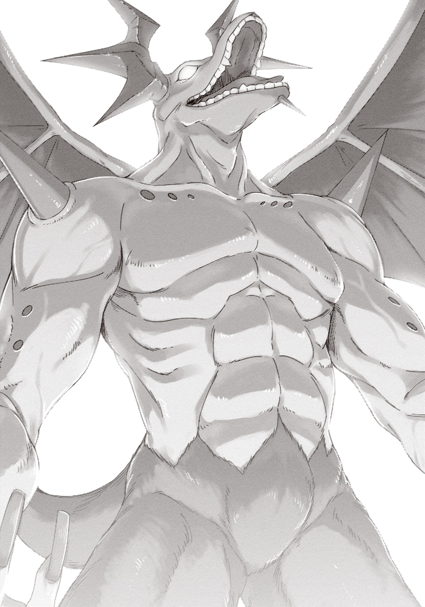
魔王......バラグトス？
まさか、こいつが本当のラスボスなのか。以前戦ったのは飽くまで《暗黒邪剣王バラグトス》に過ぎず――グランドクエストに記された《魔王バラグトス》は、この怪物なのか!?
全身に震えが走った。まるで裸で外に放り出されたような心細さが、俺の心を支配していた。だって、だって、こんなのはおかしい！ おかしいだろ......!? なあ!?
俺が現実を認識するのを、魔王は待ってはくれなかった。電車のようなサイズの腕を黒天に高々と振り上げる。それで俺たちを叩き潰す気なのは一目瞭然だった。
「このッ......《ファラゾーガ》!!」
サクラが杖を掲げて詠唱する。巨大な火球が杖の先から迸――らなかった。
不発。サクラが啞然と目を見開く。反射的に魔剣フレードリクの刀身を見て、俺はようやく気付いた。マナ濃度が、いつの間にかグリーンまで下がっている。まさか、魔王バラグトスが出現した影響で......？ これじゃ使えて《ファラミラ》までだ！
畳みかけるように襲い来る窮地は、次の瞬間、ピークを迎える。
高々と腕を振り上げたバラグトスの全身を、光の鎧が覆ったのだ。
俺たちは、それをよく知っていた――何せ戦闘のたびに見ているのだから。なのにこんなにも動揺するのは、きっと、敵に回したことがなかったから。それは俺が魔剣の効果で閃いたもの。魔族には決して使えないもの――ＰｆＳプレイヤー以外には、決して、使えないもの。
強化魔法。
ただでさえ馬鹿げたステータスを持つのだろうバラグトスが、魔法によって強化されたのだ。
そして、俺たちを襲ったのは、足元で火山が噴火したような衝撃だった。
振り下ろされた腕に直撃した奴は一瞬で蒸発し、近くにいた奴はゴミのように吹き飛んで砕け散る。比較的遠くにいた俺たちすら、全身を叩いた衝撃波に地面を転がされた。
身を起こす。なぜか腕に力が入らない。それでも顔を上げ、俺は、魔王の向こう側を見た。
漆黒の城の手前に、杖を掲げた人影がいくつも見えるのは、俺の気のせいか......？
光を鎧ったバラグトスが、再び腕を振り上げる。その照準は、明らかに俺たちに向いている。
一撃で、おそらく半数が消し飛んだ。だとしたら、簡単な算数だ。次の一撃で――
「――勝てるわけ、ねえ......」
誰かがそう呟いた。呟いたのは一人だったけど、それは、俺たち全員の代弁だった。
腕に力が入らない理由を、ようやく理解する。
俺は今――絶望しているのだ。
こんなゲーム、クリアできるわけがないと――心が、折れてしまっているのだ。
「――ぁ、ぁあぁあぁあああああああああああああああああああああああああああッッッ!!」
それを理解した瞬間、俺はあまりの悔しさに咆哮した。いや、慟哭だったかもしれない。だって、どれだけ腹から声を絞り出しても、腕に力が戻ることはなかったから。
俺は這いつくばったまま、振り下ろされる魔王の腕を見上げる。いや、違う。その向こうだ。その彼方、漆黒の城の最上階から俺たちを見下ろす、一人分の人影を睨み上げた。
――お前は......誰だ......!?
答えはもたらされなかった。
次の瞬間、五感のすべてが消し飛んだ。
―――【ＧＡＭＥ ＯＶＥＲ】―――
%%%%%%%%%%%%%%%%%%%%%"catastrophe pointの回避に失敗しました"%%%%%%%%%%%%%%%%%%%%%%%%
%%%%%%%%%%%%%%%%%%%%%%%%%%%%%%"Now Re-collapsing..."%%%%%%%%%%%%%%%%%%%%%%%%%%%%%%%%
%%%%%%%%%%%%%%%%%%%%%%%%%%%%"D. E. 2016/07/27/19:00:00"%%%%%%%%%%%%%%%%%%%%%%%%%%%%%%%
目を覚ますと、妙に暗かった。
現実......に、戻ってきたんだよな......？ ゆっくりと身を起こすと、尻の下でぎしっと床が軋んだ。......は？ 床......？ 俺は確か、いつものネカフェのソファーで......。
すぐ隣でもぎしっと音がした。サクラの影がゆっくりと起き上がる。
「先輩......？ なんで、こんなに暗いんですか......？」
「いや、わからん......。停電か？」
手の中にはスマホがある。画面を点けると、少しだけ視界を確保できた。サクラも同じようにして闇を照らす。......さっきから、床が変だ。妙にざらざらで、埃っぽくて......。スマホを向けると、ぼんやりとした光の中に床板が浮かび上がった――木の、ひどく腐食した。
ここ......どこだ......!?
ぞわっと怖気が背筋を駆け上る。スマホの光で周囲を照らし――なんだ、と胸を撫で下ろした。ここは見覚えがある。いつもログイン地点になっている空き家だ。ってことはここはＰｆＳの中か......。暗いのは夜だからか？ 電灯なんてないもんな。
........................。ＰｆＳの中なんだったら......なんで、俺は......スマホを、持ってる？
「......おかしい......」サクラの、震えた声。「なんか、おかしいです、先輩......」
サクラが振り返り、スマホが俺を照らす。同時、闇の中のサクラが、呆然とした顔をした。
「先輩......」ゆっくりと、俺の顔を指差す。「どうして......眼鏡、掛けてるんですか......？」
眼鏡？ 俺は手で確認した。眼鏡が、ある。ＰｆＳのアバターは掛けていないはずの眼鏡が。
そして、俺もまた一つ気付いた。スマホの光の中に浮かび上がった、サクラの姿――
「お前も......服......」
「......あ......」
サクラが着ているのは、ＰｆＳでの戦闘服ではなく、垢抜けた、彼女自身の私服。
......ここは......ＰｆＳ、なんだよな......？ そうなんだよな!?
俺は窓を見つけ出し、飛びついた。同じようにしたサクラと一緒に――その光景を、見る。
半壊した家屋。荒れ放題の道。馬車の残骸。白い――骨のような、もの。
目の前にあったのは、コンクリートだらけのエムル市ではなく――置き去りにされたように朽ちた、ＰｆＳのエムルだった。
............今は、いつなんだ............？
ここは一体、何年なんだよ―――!?
ミシッ ミシッ ミシッ
不意に――背後から、床が軋む音がした。
俺たちじゃない。部屋の外から、規則的なテンポで......徐々に、徐々に、近付いてくる......。
足、音......？ 俺たちは恐る恐る、振り向いた。窓の反対側に、扉がある......。それも記憶よりかなり朽ちていて、大きな裂け目が真っ暗な廊下を垣間見せていた。
ミシッ、ミシッ、ミシッ――床の軋む音が近付いてくるのを、俺たちはただ待つことしかできない。やがて、音は扉のすぐ近くまで来て―――
―――裂け目から、目が覗いた。
悲鳴は出なかった。その前に、バキバキッ、バキッ！ と扉が乱暴に蹴倒された。
扉の向こうから現れたそいつを、俺は知っている。その老人とも子供ともつかない姿を――一切の毛を持たない人型を――緑色の肌を――俺は知っている。
ゴブリンだ。
棍棒を持ったゴブリンは俺たちを見つけると、きひひっと笑った。爬虫類めいた目で俺たちを見て、ミシッと一歩、部屋の中に踏み入ってくる。
何を......何をビビってんだ。たかがゴブリン一匹......これまで数え切れないくらい倒してきた。ゴブリン如きに不覚を取ったことなんて一度もない......！
俺は反射的に背中に手をやった。そこには魔剣フレードリクの柄があるはずだった。
だが―――ない。
どこにもない。何もない。手は虚空を摑むばかりで......。
ミシッ、ミシッ、ミシッ――ゴブリンが近付いてくる。
「......メニューオープン」俺は呟いた。「メニューオープン......メニューオープン！」
何度ボイスコマンドを発しても――メニューウインドウは、一枚も出てこない。
ここは――この場所は――この世界は。
現実、だった。
ここは現実の、双月紀元二〇一六年、七月二十七日、水曜日、だった―――
第三章 ゲームでしか救えない世界がある
たった一匹のゴブリンを前に、震えが止まらない。
何度も倒した。何度も何度も斬り殺した。だっていうのに――なんでだよ。ただ見られただけで......爬虫類めいた目で、じろりと見られただけで......どうして、身体が動かない......!?
ぺたん、と傍で音がした。......それは、サクラがその場にへたり込む音だった。
まずい、と思う。まずいまずいまずい、と思う。それはゲーマーとしての勘なんかじゃない。ただの、単なる、単純な――生物としての、危機反応。
このままじゃ死ぬ。
閉まった踏切の中に取り残されたかのような、ごくごく自然な未来予測が、俺の全身を打った。このままじゃ死ぬ。このままじゃ死ぬ。このままじゃ死ぬ！ 俺も――サクラも！
俺の足が、動いた。
サクラを庇う位置に動いて、それから――
「............ッッッ!!」
叫ぼうとしたが、出たのは残り滓みたいなわずかな息だけ。痙攣する喉を無視して、俺は正面からゴブリンに突っ込んだ。
知っている。ゴブリンの力は弱い。そのうえ小柄だ。だから剣なんてなくても......！
きっ、とゴブリンが鳴いた。俺は身体をそのままぶつけるようにしてゴブリンに飛びかかった。細い頸椎に手を伸ばし――直後に、ゴブリンを見失う。
下だ！ 俺の脳はすぐに答えを導いた。ゴブリンは俺の身体の下に潜り込むようにして手を躱したのだ。顔のすぐ下でゴブリンが棍棒を振り被っている。大丈夫、防御間に合――
――わなかった。俺の感覚に反して、俺の身体は恐ろしく鈍重だった。俺は実際には指一つ動かせず、顎を棍棒で打ち上げられた。
「がッ......!!」
目の前に星が散る。ぐわん、と頭の中が痺れて、気付けば仰向けに倒れていた。痛い。痛みが顎から広がって、脳に突き刺さる。――そうか、こっちでは痛いんだ。
「せ......せんぱ......せんぱいっ......！」
サクラの掠れた声が聞こえた。それから、ゴブリンの鋭角的な顔が、上から覗き込んでくる。――デカい、と思った。自分の腰くらいまでしかないはずのゴブリンを、デカいと。
ゴブリンが棍棒を振り上げる。俺は反射的に腕で庇った。その腕が容赦なく打ち付けられる。何度も、何度も、何度も何度も何度も何度も何度も何度も―――
痛っ......いた、痛い！ やめっ、本当に痛いんだ！ やめてくっ......痛いぃいぃぃ......！
「せんぱっ......にげてっ......逃げてぇええっ......!!」
俺は頭を庇って子供のように蹲っていた。飛びかかったときの勇気なんて、もう思い出せない。棍棒が打ち付けられるごとに、お前は俺には勝てないのだと刻みつけられている気がした。
このまま......死ぬのか......？ こんな......こんな簡単に......？
死の淵ってやつが、実感を持って見えてくる。それは怖くて......冷たくて......寂しくて......同時に温かくもあった。この痛みから救ってくれる、柔らかな光......。
頭の中でそれに手を伸ばしかけたそのとき、
『――足を前に振り抜いてください！』
どこからか、声が聞こえた。
聞いたことがあるような、ないような......どこか機械的なその声に、俺は反射的に従った。
向こう脛に何かが当たる。きききっ、という声が聞こえて、俺は理解した。ゴブリンの足を払ったのだ。殴打が途切れる。顔を上げた俺は、立ち上がろうとしているゴブリンと、窓の前にへたり込んで震えているサクラを見た。
ああ......そうだ......そうだろ......？ 勝手に一抜けなんて、まだ、できないよな......!?
「お―――ァあぁああああああァあああああああああああああぁあああああああああッ!!」
さっきは出なかった咆哮が、腹の中から迸った。力が全身に湧いてきて、俺は立ち上がりながらゴブリンを突き飛ばす。驚くほど軽かった。ゴブリンがボロい床にもんどりうっているうちに、俺はサクラのもとに走る。その手を握って立ち上がらせ、窓を乱暴に開けた。
ききききっ！ ゴブリンの怒りの声が聞こえた。俺たちはそれを無視し、窓から外に転がり出る。幸い、外には何もいなかった。だがゴブリンが追ってくる気配がある。
俺はまだ震えているサクラの肩をぐっと抱き寄せて、どこへともなく走り出した。
荒い息が耳の中を満たしていた。俺たちは荒廃した街を息を潜めて移動していく。建物の陰から陰へ――見覚えのあるモンスターどもの視線に触れないようにしながら。
どこも彼処もひと気がない。俺の知る風景――毎日通う学校や、ＭＡＯの劇場版をやっていた映画館や、サクラと一緒に入るネットカフェは、面影すらなく......あるのは、まるでクリアされたＲＰＧの世界のような、時間の凍った光景ばかり......。
狭い路地の奥に潜り込んで、俺は壁に背中を預けた。そのままずりずりとへたり込む。
ここならひとまず大丈夫だろう。近くに裏口らしき扉があるから、いざとなれば隠れられる。
「せ......せんぱい......せんぱいっ......」
サクラがぎゅっと俺の服を握って、震えた声で呟いた。俺は息を整えながらその肩をもっと強く抱き寄せる。......いきなりこんな状況に放り出されたら、誰だってこうなる。俺だってサクラがいなかったら、あそこでゴブリンに......。
全身の痛みがぶり返し、ぶるりと背筋が寒くなった。それを抱き締めたサクラの体温で誤魔化す。......こいつを守らないと。そう思うことで、俺はどうにか心の均衡を維持していた......。
これから、どうすべきだろう？ 街は魔物が当たり前のように闊歩していて、移動するにも危険がある。......本当に、冗談みたいな状況だ......。せめて安全な場所に隠れられれば、祈るくらいの余裕はできるだろうか。どうか悪夢であってくれ、と祈るくらいの......。
「サクラ......」一応訊いてみようと、俺は囁いた。「どこか安全そうな場所に行きたいんだが、心当たり、あるか......？ できれば近場がいいんだが......」
「え......？」
幸いサクラは反応を見せた。俺の顔を見上げたあと、「え、と......」と周囲を見回す。いや、ここは路地裏だから――と思っていたら、すっ、とある場所を指差した。
「あそこ、とか......？」
自信なさげに彼女が指し示したのは、廃墟の彼方に聳えるエムル城だった。
エムル城までは、近いとは言えないが遠くもない。徒歩での移動が無理なほどではなかった。
ズシンズシンと、恐竜型モンスターが通り過ぎるのを見て、俺たちはエムル城の敷地内に入っていく。城は半壊していたが、なぜだろう、崩れそうには思えない。城が半壊したのではなく、半壊した城がある、というか......。それでも恐る恐る、魔物の気配を探りつつ、中に入る。
中は真っ暗だった。サクラがスマホに入れていたライトアプリで照らしながら歩いていく。
どこか部屋に入ったほうがいいか......。綺麗なベッドは期待できなさそうだが。
「あの......」少し後ろから、おずおずと声がした。「さっきは、その、お恥ずかしい所を......」
エムル城に目的地を定めた頃から、サクラは徐々に冷静さを取り戻していた。......とはいえ、素直に俺の手をきゅっと握っているところを見ると、まだ本調子とは言えなさそうだな。
恥ずかしげにもにょもにょしているサクラに、俺は苦笑して、
「いや、いい。気にすんな。お前のおかげで逆に冷静になれたからな」
「で、でも......先輩、怪我を......」
「大丈夫だって。ゴブリンの攻撃力がクソ低いのは知ってるだろ。それより離れんなよ。こんな暗い中ではぐれたら探せねえからな」
ぐいと強めに手を引くと、サクラは「......はい」と呟き、身を寄せてきた。......ほ、ほんと素直ですねサクラさん......。調子出ないんですけど。
図らずも腕を組むような格好になって、暗闇のエムル城を進んでいく。歩くたびに大きく足音が反響した。他に足音が聞こえないので、城の中に魔物はいないらしい。それでも安心はできない。例えばスライムとか、足音もなく移動できるモンスターは存在するのだ。
「どうして......」今にも泣きそうな声で、サクラが呟いた。「どうして、こんな......」
どうしてこんなことになったのか――俺だって知りたい。......けど、こうも思うのだ。
俺たちは、その理由をすでに知っている――ただ、見て見ぬ振りをしているだけで。
ライトの先を見ていた俺は、「あっ！」と声を上げた。サクラがビクッと肩を跳ねさせる。
「な、なんですか？ どうしたんですか......？」
「今......角の向こうに、飛んでいった......」
「飛んでいった......？ 何が......？」
一瞬だったが、確かに見た。つるりとした陶器のような肌、半透明の翅――
「――Ｓｅｒｉだ......」
俺たちはＳｅｒｉが消えた角を曲がった。前方を照らすと、またＳｅｒｉが一瞬横切って消える。それを追いかけると、また現れては消える――まるで、どこかに導いているように。
俺たちは頷き合い、Ｓｅｒｉの後を追った。複雑怪奇な城の中を、右へ曲がったり左へ曲がったり......気を抜くと戻れなくなりそうだ。
やがて、ホールのような場所に出る。
そこは静謐な光に満ちていた。燭台に炎が灯っているわけでも、電灯が点いているわけでもない――中央に鎮座する大きな水晶のようなものが、光を放っているのだ。
何気なく水晶を見上げ――俺は、心臓が止まったような気が、した。
「..................な、............ぁ............え..................？」
水晶の中に見える、影。人の形をしたそれは、胸を深々と、禍々しい大剣に貫かれている......。一見、惨たらしくありながら、宗教画めいて美しく―――ああ、だから、なかなか頭が理解しない。眠るように瞼を閉じる、その顔を。綺麗な金髪を持つその少女が、誰なのかを。
俺たちは、知っている。水晶に封じられたそれを......その、死体、の、名前を............。
..............................エ、............リ、............ス........................。
「――なんなんだよ、これっ!!」不意に、感情が堰を切った。「なんでこんなことになってんだよ......っ!? どうしてエリスが現実にいるんだよ!? どうして死んでんだよッ!?」
――いいや、知っている。俺は答えを知っている。――いや、わからない！ わかってたまるか、こんなこと！ ――俺が危惧し、サクラと実験した。結果は仮説を実証していた。見て見ぬ振りをしただけで。――知らない知らない！ わからないわからないわからない！
そのときだった。ふっ――と、スマホのライトが、いきなり消えた。な、なんだ......？ バッテリー切れ......？ 底知れない不安に衝き動かされ、恐る恐る画面を見る......。すると......ライトアプリの代わりに、見慣れたアプリが、勝手に起動されていた。
秘書機能人工知能アプリケーション――《Ｓｅｒｉ》。
いつもの『ご用件はなんでしょう？』という文章は現れなかった。代わりに現れたのは......まるで、神託。天の世界から糸を垂らすように――Ｓｅｒｉは、厳かにこう告げたのだ。
〈これより、真のチュートリアルを開始します〉
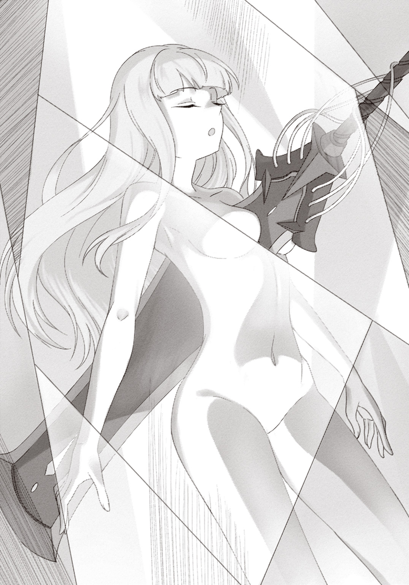
世界に置き去られたような空間をぼんやりと照らす、水晶めいた鉱物。その内に眠る一人の少女の前で、アプリに過ぎないはずのＳｅｒｉが、声と文字の両方で語り出した――
〈まずは、本日の19時より皆様を危険に晒してしまったことを深くお詫び申し上げます。現時点をもって、全員の安全確保に成功致しました。ひとまずご安心ください〉
Ｓｅｒｉが俺たちの安全確保に動いていたのか？ ということは、ゴブリンに襲われていたとき聞こえたのはＳｅｒｉの声だったのか......。
〈そしてもう一つ、お詫びしなければならないことがあります。これまで我々は皆様を欺いてきました。紛うことなき現実世界を、まるで仮想現実であるかのように偽ってきました〉
一気に喉が干上がった。
......それは。それは......つまり、本当に、こういうことなのか？ ＰｆＳは、本物の――
〈お詫び申し上げます。皆様が仮想現実だと思ってきた世界は、本物の魔法時代なのです。皆様は千五百年もの過去へとタイムトラベルしていたのです〉
目眩がした。機械的な声は、だからこそ、言葉に噓はないと過剰なまでに突きつけてくる。
「......はは。そっか......」
ああ、そうだ......池の底の焦げ跡も、柱の裏の落書きも――何より、ゲームのキャラとは到底思えなかったエリスのことも、そう考えれば全部、説明がつくんだ。
本物だった。全部、本物だった。
これは――ゲームでも、遊びでも、なかったんだ。
「――ふっざけんなッ!!」俺はスマホに向かって怒鳴りつける。「なんなんだてめえ！ 何が目的なんだ！ なんでっ、なんでこんなことに――ぅぐっ」
「先輩、落ち着いて......」
過呼吸気味になった俺の背中をサクラがさすってくれる。だが胸の中にわだかまる熱はちっともなくならない。自分が何に怒っているのかもよくわからなかった。
〈ただ今、二十三名から三種類の質問がありました。一つ、このゲームの目的は何か。二つ、なぜ世界がこのような状態になったのか。三つ、我々の正体は何か。一つ残らず、順番にお答えします。疑問点があれば、ご遠慮なくご質問ください〉
さて、とＳｅｒｉは無機質な声で語り始めた。
〈このゲーム――ポストファンタジー・ストラグルの目的は何か？ この質問は二つ目の質問とも関連します。まず前提として、実は魔法時代に人類は滅亡しています〉
な、と息が漏れる。サクラも啞然と目を見開いた。魔法時代に人類が滅亡？
〈本ゲームの目的は人類滅亡を歴史改変によって回避することです。皆様に提示させていただいたクエストは、そのための具体的な指示となります。どれだけ些細なものに見えても、それは人類の存亡に直結する事象なのです。ゆえに一つでも失敗すれば人類は滅亡に至り、伴って、皆様の知る二〇一六年も消滅します〉
俺たちはあのエマージェンシークエストをクリアできなかった。だから、人類が滅亡した。そういうことなのか......？ いや、それよりも先に。
「待てよ......おかしいだろ......」俺は呻く。「だったら、俺が生きてきた世界は、なんだったんだよ......？ 魔法時代に人類が滅亡したってなら、あの二〇一六年はなんだったんだよ!?」
〈ただ今、三十六名から同じ質問がありました。人類が存在する二〇一六年はなんなのか？ 語弊を承知で、こうお答えします。皆様の知る、人類が変わらず存続している二〇一六年は、人類の意識によって形作られた仮想現実であると〉
「かっ......」「え......？」
予想だにしなかった答えに、俺たちは二人揃って絶句した。
仮想現実......だって？ 二〇一六年が――現実世界が？
〈猫が閉じ込められた箱があるとします〉Ｓｅｒｉは唐突に言う。〈箱の内部には五割の確率で発動する毒ガス装置があり、内部の猫の生死は、箱の外の観測者からは判別できません。しかしここでは、事実として猫は死んでいることに致しましょう〉
俺たちの理解を待つように、Ｓｅｒｉは言葉を切った。
〈では、観測者に『猫は生きている』と信じ込ませたとします。すると観測者は生きた猫の幻覚を見るようになりました。触れることすらできる、ほぼ現実に等しい幻覚です――この幻覚が、皆様の知る現代世界です〉
いきなり話が戻ってきて、身体がビクリと震える。
ほぼ現実に等しい幻覚――それはまさに、仮想現実だ......。
〈しかし、もし観測者が、箱を開けて猫の死体を発見してしまったらどうなるでしょう？ 今までの猫が幻覚だったことに気付き、ほぼ現実として存在していたはずのそれを、自ら消滅させてしまいます。今、皆様が置かれている状況はまさにこれです。皆様が人類滅亡の決定的原因を観測し、理解してしまったことが、二〇一六年という名の仮想現実を崩壊させたのです〉
「ま、待て......」俺は呻くように言う。「今の例えの『猫』が『世界』を意味しているのはわかる。でも、それをどうやって『箱』に閉じ込める......!?」
〈六名から質問がありました。実際問題、どうやって人類文明を『箱』に閉じ込めるのか？〉Ｓｅｒｉの言葉には淀みがない。〈答えは簡単です。忘れさせたのです。人類が滅亡に至るたび、その記憶を消去し、なかったことにして――ゲーム風に言えば、クリアしたことにして先に進んだのです。七並べでジョーカーを使うようなもの、と言ってもいいでしょう〉
今度の例えは意外なほど平易だった。クリアしたことにしても、それは仮のものでしかない――仮想的なものでしかない。
〈具体的な手段については、魔法的手段、とだけ申し上げておきます。タイムトラベルの方法も含め、詳細な説明は難解を極めますので、どうかご了承ください〉
仮想現実だと思っていたのが現実で、現実だと思っていたのが仮想現実で――今の時点で充分混乱している。さらに説明を求める気力は、俺にはなかった......。
「人類全員が、自分たちの滅亡を忘れることによって......今の世界が、保たれている......？」サクラが確認するように呟く。「いや、それは、おかしい......！ だって、だって......あなたたちは、忘れてないじゃないですか！ あなたたちは――結局、なんなんですか!!」
〈今、四十五名から再び質問がありました。我々の正体はなんなのか？〉Ｓｅｒｉの平坦な声が響く。〈その答えは皆様の認識から大きく外れるものではありません。我々は人工知能です。ただし、その性能は皆様の知るＡＩよりも遥かに高度なものです。なぜなら我々は、人類が自分たちの滅亡を思い出してしまうことを防ぐために作られた、人類世界の監督者であるからです。現代という仮想現実を作り上げているのは飽くまで人間――ゆえに、人間ではない我々でなければ、すべてを知った上で世界を管理監督することができないのです〉
そうしてＳｅｒｉは、初めて本当の名を告げる。
〈我々の名は《人類保存会議》――人類文明の存続を目的とした、ＡＩのみによる組織です〉
Ｓｅｒｉ曰く、人類保存会議はこの五百年、社会の裏で常に暗躍していたと言う。
例えば仮想現実技術を確立させた伝説的ライトノベル《マギックエイジ・オンライン》――あれは元々ＷＥＢ小説だったのだが、その真の作者は《Ｎａｎｏ》と呼ばれる物語生成ＡＩだと言う。本物のＶＲ技術を作中で説明したのも、ＰｆＳ開始の下準備だったらしい。
〈我々は五百年に渡り、人類を裏から制御してきました。肉体がなくとも、情報さえ発信できるなら社会に影響を与えることは難しくないのです。しかし、それでも人類に魔法時代の調査をやめさせることはできませんでした。ついには魔法の存在までが暴かれるに至り、我々は方針転換を余儀なくされたのです。現状維持から抜本的な解決へと〉
人類滅亡の抜本的解決――すなわち、滅亡原因の除去。歴史改変によって、仮初に過ぎない今の現代を本物にすること。それが、ポストファンタジー・ストラグルの目的......。
「どうして......」サクラが震える声で言った。「どうして、私たち普通の人間にそんな大役を背負わせたんですか......？ 私たちは勇者でも英雄でもないんですよ......!?」
〈本職の英雄など存在しません〉Ｓｅｒｉは断ち切るように言う。〈確かに、皆様よりも正義感や責任感のある人物はいるでしょう。ですが、我々《会議》はこう判断しました。強固な正義感も確固とした責任感も、人類の存亡を託すには足りないと〉
俺たちは鋭く息を吸った。Ｓｅｒｉの声が、そのときだけ、人間らしく聞こえたからだ。
〈なぜなら我々は知っています。魔法時代に限らず、何千年と続く人類史の中で、何人もの英雄が生まれ、そして苦しんだことを。そのうちの一人を皆様も知っています。彼女は強固な正義感と確固とした責任感の持ち主でした。しかし、それでも潰れてしまった。正義感も責任感も、世界を背負い、救うほどのエネルギーは生み出せなかったのです〉
どうして聖女になんてなってしまったのか、と後悔に嘆くエリスの姿が思い出された。後世でどんなに崇められていても、生きているその間は、ただの人間なのだ。英雄だろうと勇者だろうと聖女だろうと、一人のちっぽけな人間であることに違いなんてない......。
〈ですが我々には、人類が持つ力の中で、ただ一つだけ信頼を置くものがありました。それは我々が五百年もの間、魔法時代の真実を隠蔽するために戦い続け、ついには敗北を喫したもの――探求心、好奇心、冒険心、ロマン――つまり〉
〈『面白そうだ』という、無邪気な欲求です〉
「おもしろ......」「そう......？」
俺たちは呆然と、その言葉を繰り返す。
面白そう......だって？ それだけ......？ たったそれだけ......!?
〈だからこそ、我々は賭けた〉大真面目な口調でＳｅｒｉは言う。〈誰よりも『面白いこと』『楽しいこと』に貪欲なあなたたちに――人類文明の、存亡を〉
面白がれ、って......？ 世界数十億の人命の存亡を面白がれって、そう言うのか......!?
「......楽しめねえよ......」俺は言葉を吐き出した。「世界？ 人類文明の存亡？ そんなもん託されて、どのツラ下げて楽しめってんだよ......!?」
〈世界なんてものは、遊ぶついでに救うくらいでちょうどいい――それが我々の結論です。実際、あなたたちは、ゲームの中でなら幾度となく世界を救っているはずです〉
本気だった。Ｓｅｒｉは――こいつら人類保存会議とやらは、本気でゲーマーなんぞに世界を託すつもりだった。ふざけてる。どうかしてる。俺は必死にこいつらの間違いを指摘する言葉を探した。そうしないと、自分の中の何かがぶっ壊れてしまうような気がした。
「そんないい加減な感覚で、ほいほい人間を魔法時代に送ったりしたからこうなったんじゃねえのか......!? わかってる。もうわかってんだよ！ あのバラグトスは、俺らの中の誰かの差し金だろ!? お前らが勇者にするつもりで送り込んだ人間の中に、魔王になりたがってた人間がいたんだよ!! だからっ......だから、こんなことにっ......！」
俺の知る現実は、もうどこにもない。
家もない。学校もない。妹のレナも父親も母親も、クラスメイトも担任も同級生も、道行く人間もネットの向こうの人間もそれ以外の人間も――把握できないくらい多くの人間が、まとめて、全部全部、俺たちのゲームなんかのせいで消し飛んだ。
止め処なく後悔が襲ってきて、視界が滲んだ。雫がぼたぼたと大理石の床に落ちる。膝がぐらぐらと揺れた。今にも崩れ落ちそうな身体を、俺はもう支える気もなかった。
その場にしゃがみ込もうとした瞬間、Ｓｅｒｉが告げる。
〈皆様はおそらく、まだ一つ、勘違いをしています〉
「は......？」
俺は啞然とスマホを見る。Ｓｅｒｉの言葉が、さらに続けて表示された。
〈このゲームはポストファンタジー・ストラグル――ファンタジーの後の世界、すなわち現代世界を奪い合うゲーム。つまり一度奪われたとしても、取り戻す手段は残されているのです〉
奪われた世界を――現実を――取り戻す、手段......!?
〈私はこう説明しました。『皆様が人類滅亡の決定的原因を観測し、理解してしまったことが、世界崩壊の原因だ』と。今回の場合、皆様は魔王バラグトスに対する自らの敗北を観測し、そして、こう理解してしまいました――『こいつには、絶対に勝てない』。
現代世界は皆様の意識によって成立している仮想現実です。ゆえに、もし現実的に、因果的に、人類滅亡がまだ確定していないとしても、皆様が『もう無理だ』と諦めてしまったその時点で、その認識が直ちに世界を組み直してしまう。
もうお分かりでしょう。本ゲームのゲームオーバー条件はただ一つ――『諦める』ことなのです。諦めない限り、何が起ころうとも、ゲームオーバーにはなりえないのです。
ですから、我々はゲームマスターとして、皆様にこう問わねばなりません〉
そしてスマホ画面に現れたのは、たった一つの選択肢。
人類の、世界の、俺たちの――そしてゲームの行く末を決める、選択肢だった。
〈コンティニューしますか？ はい／いいえ〉
選択肢を表示したまま、Ｓｅｒｉは沈黙した。まるで、俺たちに考える時間を与えるように。
俺たちもまた黙っていた。くたくたに疲れているはずなのにお互い座りもせず、ぼーっとエリスが封じられた水晶を見上げていた。
......世界に、人類。そんな大層なものを懸けて、俺たちは無邪気にゲームをしていたらしい。いきなりそんなこと言われたって、遠大すぎて頭が理解しようとしない。
けれど、終わり切ったこの現実を見て見ぬ振りすることは......さすがに、できなかった。
「......エリス」ぽつりと、独り言を言う。「本物の......人間だったんだな」
「元からＮＰＣだなんて思えなかったですけどね」サクラの答えは笑い混じりだった。「元気で明るくて可愛くて......あんなに張り合ってくる人、先輩以来でしたよ」
「疲れを知らない奴だったよな。こっちはアバターだってのに、時々ついていけなかった」
「あれ覚えてます？ ゴブリンの砦に攻め込んだときのこと」
「エリスが前に出すぎて、敵の罠に引っ掛かったときか。あのときはマジで肝が冷えた」
「何とか助け出してみれば『えへへ、失敗失敗』って。『えへへ』じゃないですよ」
「無邪気って言葉を人間にしたらあんな感じになるんだろうな、きっと。そのせいでアホな連中にアホなこと吹き込まれたりしてさ」
「先輩に『あててんのよ』ってやったあれですか？ あれ、何のネタなんでしたっけ」
「昔の漫画。いい大人が十二の女の子に何を教えてんだって話だよ」
「そういえば、ダンジョンでちょっとだけ話しましたよ。普段、私たちがどんな風に暮らしてるのかって......本当に少しだけですけど」
「......現代にさ、あいつを連れてきたら、どんな反応するんだろうな。ゲーセンとか、遊園地とかさ、どこ連れていっても喜びそうだよな」
「――先輩」
少しだけ震えたサクラの声が、止め処ない思い出話を断ち切った。
俺はサクラのほうを見ない。ずっと、水晶のエリスを見上げていた。きっとサクラもそうしている。水晶の中で眠る、金髪の女の子を、見ている。
だって......俺たちが本当に話したいのは、エリスなのだから。二人で雑談しているようでいて......本当は、エリスが目を覚まして混ざってくるのを、待っていたのだから......。
だが、エリスは動かない。瞼を伏せ......胸を貫かれ......静かに、眠っている。
「私......」嗚咽を呑み込むのが聞こえた。「私......会いたい、です。もう一度......また......もっと......ずっと！ エリスさんと、......遊びたい、ですっ......！」
ようやく横を見たとき、サクラはぽろぽろと涙を零していた。
俺は、喉の奥からせり上がってきたものを、歯を食い縛って堰き止める。高い天井を仰ぎ、押し寄せる波に耐えた。
世界がどうとか、人類がどうとか、ＰｆＳの真実を洗いざらい説明されて――それでもやっぱり、俺たちにはこう思うことしかできない。
遊びたい。
エリスという楽しい奴と、もう一度、遊びたい。
だって、仕方がないのだ。俺たちにとってＰｆＳは、子供にとっての公園みたいなものだったのだから。そこに行けばみんながいる。そこに行けば面白いことがある。ただそれだけの場所であって、今更、正義感や使命感に目覚めたりできない。
良識ある大人から見れば不謹慎かもしれない。責任ある英雄から見れば不真面目かもしれない。それでも俺は、俺たちは――
俺は自分のスマホを取り出した。画面には、一つの選択肢。答えの一方に指をかざし――
――俺は、このスマホで繫がっていたプレイヤーたちのことを思った。ＴＬでくだらないことを呟き、ニマ生で会議や雑談をし、そしてＰｆＳという遊び場を共に楽しんだ、百人もの同類たちのことを思った。
彼らもまた、遊びたいと、思ってくれるだろうか。
こんな状況でも、こんな事情でも――それでもまだ、このゲームを愛してくれるだろうか。
「大丈夫ですよ」
スマホに据えていた視線を上げ、俺は、サクラの柔らかな微笑を見た。
「私たち、もうみんな、廃人なんですから。みんな立派な、ＰｆＳ廃人です」
「......そうだな」
と、俺は微苦笑して――
――『はい』を、押した。
質問画面が消えて、『集計中...』の文字が出る。どうやら、質問というよりはアンケートだったみたいだ。俺は無言で、その画面を見つめ続けた。
『集計中...』の『...』が、左、真ん中、右と点って、消える。それが何度繰り返されただろう。永遠にも思えた沈黙の果て、不意に、表示が『集計終了』に変わった。
〈結果を開示します〉
人工音声がそう告げて、『俺たち』の答えが、画面に現れる。
【はい――――87％】
【いいえ―――13％】
〈『はい』を選んだ方には安全な『扉』をご案内します。指示に従って速やかに移動してください。『いいえ』を選んだ方はその場でお待ちください。ゲームクリアの際、自動的に――〉
Ｓｅｒｉの業務的なアナウンスを、俺は放心して聞いた。
『はい』が、九割......。九割も、いたのだ。『いいえ』の七倍もいてくれたのだ。
そのことが、俺は無性に嬉しかった。残り十三パーセントのことなんて気にならないくらい。
「先輩！」
向き直れば、そこには完全に調子を取り戻したサクラがいる。俺ももうさっきまでみたいな無様は晒さない。だって、怯えることもわけのわからないことも、もはや何もないのだ。
あとはただ、いつものように――ゲームで遊べばいいだけ。
「行こう、サクラ！」
「はい！」
俺たちは、最後にもう一度だけ、水晶の中のエリスを見上げた。
待ってろ。
すぐに取り戻してやる――お前と、俺たちの現実を。
〈右手の路地に入ってください〉〈五歩進んで30秒停止してください。カウントします。30、29、28、27、26――〉〈通りを横断。対面の民家跡の中へ入ってください〉
Ｓｅｒｉの指示に従っていると、廃墟の街を行き交うモンスターを面白いように搔い潜ることができた。というか、モンスターの知覚能力がかなりザルなのだ。時のオカリナのハイラル兵と同じくらい。もう長いこと人間の相手をしていないから退化したのだろうか。
「千五百年か......。それだけ放置されてたにしては原形を留めてるよな、この街」
「建物も何もかも朽ち果てて、無人の荒野になっていてもおかしくありませんよね。そもそも、たかが一都市に過ぎないエムルで、一体何が起きたら人類滅亡なんてことになるのか......」
〈聖女エリスが魔王バラグトスに殺害されると、こうなってしまうのです。申し訳ありませんが、それ以上の説明はどうしても止むを得ない場合に限り行うことにしております〉
聖女が魔王に殺されると、か。
俺は身を低くして走りながら、少し前に復旧されたＴＬを流し見た。
〈【注意！】ＴＬは敵プレイヤーにも見られています。具体的な会議はログイン後！〉〈結局、今のバラグトスを正面から相手取るのは無理ってことでおｋ？〉〈@GGG おｋ。聖旗あっても厳しい〉〈強化魔法が無理ゲー〉〈相手の魔導士を潰すのが先だな〉〈潰すにしても、レッドエリアにイモられると〉〈凍てつく波動欲しいわ〉〈凍てつく波動があれば......〉〈ってか向こうは何でバラグトスにタゲられないの〉〈やっぱテイム？〉〈調教魔法についてはこちらのタグで検討中です！ ＃テイム説考察〉〈テイムなら術者を倒せばいいよね〉〈結論出ました。たぶん可能。＃テイム説考察〉〈補足です。調教魔法の開発は可能ですが、人間レベルの知性に使っても成功率は極めて低いと思われます〉〈@stolkien 低いってどのくらいですか？〉〈@loneria １００万分の１以下です〉〈低すぎワロタ〉〈気が遠くなるほど低い確率だがゼロではない（白目）〉〈でもバラグトスの挙動は精神干渉を受けてる魔物のそれだったんだよな〉〈１００万分の１引き当てたのか〉〈なんか怖い。どんな執念なのそれ......〉
ふと目に入った呟きに、俺は心から共感する。バラグトスのテイム成功率はわずか百万分の一以下......俺たちを裏切った何者かは、この絶望的な確率を引き当ててみせた。無限に等しい試行錯誤を続け、永遠に等しい挫折の連続に耐え抜いた。......人類を滅ぼすという、究極にネガティブなモチベーションだけを原動力にして。
そんな奴を、俺たちは相手取らなければならない。第二形態となり、強化魔法で補強されたバラグトスよりも、その事実のほうこそが、俺にはずっと脅威に思えた。
〈もう大丈夫です。周囲二百メートルに魔物の反応はありません。このまま路地を出て、通りを東に二分ほど歩けば安全に『扉』まで辿り着けます〉
「......よし。行こう」
俺は気合いを入れ直し、身を潜めていた路地から出た。瞬間、
「――おっと」
「どうおッ!?」「えっ!?」
いきなり真横に人影が現れて、俺たちは揃ってこけそうになった。だが寸前、現れた人影が手を伸ばして俺の手首を摑む。おかげで尻餅をつかずに済んだが――
俺の手首を摑んだそいつは、苦笑とも微笑ともつかない笑みを浮かべた。
「気を付けなよ。魔物の反応はなくても人間はいるかもしれないんだから」
え......？ この耳当たりのいいイケメンボイスは......。
「もしかして、セツナさんですか？」
サクラの問いに、そいつは俺の手首を摑んだまま頷いた。
「うん。そっちはケージ君とちぇりーさんだよね？」
「はい。セツナさんもＳｅｒｉに誘導されて――」
〈どうやって〉
人工音声が紡いだ言葉に、俺はぎょっとした。
Ｓｅｒｉが......主語も述語も、省いた？
〈どうやって、我々の目を逃れたのですか〉
「まずは疑問の解消か。ＡＩっぽいね。とはいえ、君の中にはもう答えがあるんだろうけど」
〈我々の『目』を見抜いたと？〉
「不用意だよね。監視カメラもスマホのレンズもないこんな状況で、君たち実体のないＡＩが世界を認識するには、何か生き物の五感を借りるしかない。調教魔法を開発した張本人であるこの僕が、テイムされた魔物を見分けられないはずがないだろう？」
............は？
あっさりと、至極当然のように明かされた情報に、俺の思考は奪われた。
セツナが――調教魔法を開発した張本人？
バラグトスを操っている、調教魔法の？
瞬間だった。
俺の手首を握り続けている、目の前の少年の姿が――
漆黒の城の最上階で、天に向かって哄笑していた人影と――
――重なった。
「先輩！ 離れ――」
「ああ、動いたら殺すから」
まるで『行けたら行くから』と、曖昧に約束するような、気負いのなさ。
だが、起こったことは悪夢のようだった。
銀色に輝く鋭い何かが――ひた、と、俺の首筋に押し当てられたのだ。
「......っ!?」
「二人ともだよ。少しでも動いたら殺す。君たちはこのまま、ＰｆＳが終わるのを待つんだ」
首筋のほうから、じわじわと筋肉が強張っていくのを感じる。自身の危機を身体が感知して、自動的に臨戦態勢へと入っていく。
「いいね、ケージ君。君は危機感を抱ける人か。こうしてもさ、まるで無関係な傍観者みたいな他人ヅラをする奴もいるんだよね。正常性バイアスっていうらしいけど――『自分だけは大丈夫だ』って無条件に楽観してしまう習性が、人間にはあるんだってさ」
首の肌に張りつく、氷のように冷たいこれは――ナイフ？
こんなに押しつけられたら......セツナが少しでも手を動かすだけで、頸動脈が切れてしまう。
俺は頰を歪ませた。笑おうとして、失敗したのだ。
冗談......だろ......？
声にできなかった問いは、こちらを覗き込むセツナの瞳が否定している。
「お......お前が」ようやく絞り出した声は、ひどく掠れていた。「バラグトスを、操って......現実を、こんなにしたのか......？」
「うん。驚いた？」
悪戯をした子供のようにそう言うセツナは、むしろ普段より明るく見えるくらいだった。ネガティブで仄暗い印象はまるで見て取れない。そんな様子だから、セツナがやったのはほんの小さな、冷たい缶ジュースをうなじに押し当てたくらいの、本当に小さな悪戯だったのではないかと錯覚してしまいそうだった。
だからだろう。
「なん、で......？」
サクラが、まるで縋るように、とてもとても間抜けな質問をした。
「テイムが成功したから見せびらかしたかったんですか......？ それとも、人のやることを邪魔して喜ぶような人だったんですか？ それか――」
「世界を終わらせるためだよ」
断ち切るように。
セツナは告げた。
「もしかしたら君たちは、世界を終わらせたがる奴なんているわけないと思ってるのかもしれない。けどね、僕からしたらそれは逆だ。世界を終わらせたがらない奴なんているわけない」
出会い頭からずっと摑まれている手首が、ぎゅうっと強く握られる。血流が滞って、手が徐々に冷たくなっていく。
「一度やってみればわかるさ。世界の終焉という大きな目標に向かって着々と準備を進めていく高揚感。そしていざ達成されたときの、頭の中に住み着いたダニを燻し殺してやったような爽快感！ 『滅びこそ我が喜び、死にゆく者こそ美しい』――ああ、まさに至言だね。さすが大先輩だ、いいことを言うよ」
ははっ、と、ダンジョンで話したときとまるで変わらない声で、セツナは笑う。
「僕をおかしい奴だと思うかな？ 思うんだろうね。ところが、だ。僕みたいな奴は、実は珍しくもなんともない。そう――無作為に集まった百人の中に十三人も混じっている程度には、ありふれた存在なのさ」
――十三パーセント。
想起されたのは、『コンティニューしない』を選択したプレイヤーの割合。
「あ......あなたの仲間が、十三人もいるっていうんですか......!?」
「いるよ？ 一割を超えてるんだから、これはなかなかの数だ。何せ一億人いたら一千万人はそうだってことなんだから。君たちはこの事実をもっと重く受け止めるべきだ」
『君たち』って、誰のことなんだろう。そんなことを不意に思う。俺とサクラに言っているようでありながら、セツナの言葉は、もっと漠然としたものに向けられている気がした。
「............お前......何に怒ってるんだ......？」
ぽろりと――ナイフを押し当てられていることさえ一瞬忘れて、俺は言葉を零していた。
サクラに向けられていた眼球が、俺に向く。真っ黒な瞳に、俺の顔が映る。
「別に、何にも怒っちゃいないさ。僕は何にも気にしちゃいない」
ぶつぶつと、口の中でこね回すように、セツナは否定語を連ねていく。
「だって、あんなの大した話じゃないだろ？ 炎上の一つや二つ、日常茶飯事じゃないか。馬鹿な外野が不快なレッテルを押しつけてくるのだって、僕くらいになったら何も特別なことじゃない。中傷メールが山のように来るとか、クソリプが嵐のように来るとか、クラスメイトの視線が変わった気がするとか、アンチスレが日に日にpart数を増やしていくとか、他に誰もいないはずの場所でなぜか嘲笑が聞こえてくるとか――そんな程度のことで、世界を滅ぼす奴なんているわけないんだよ」
火傷しそうなほど冷たい声が、俺の頭にザクザクと突き刺さってくる。
「僕は普通だ。だって、普通に生活できてる。学校も行ってるし、動画の投稿だって続けてる。前と何にも変わらない。傷付いたりなんかこれっぽっちもしてない。一億人いたら一千万人はいる程度の、普通の人間だ。だから、おかしいのは僕じゃない。おかしいのはお前たちであって、世界のほうだ。単純明快な論理じゃないか。ねえ？」
ナイフの刃が少しだけ食い込んで、俺は首を反らした。それでもこちらを覗き込むセツナの瞳から視線は動かさない。その黒々とした虚の中に、放り込むべき言葉がある。いつもは色々と浮かんでは消えるだけでついぞ声にならない言葉は、考える前にするりと喉から零れ出た。
「お前は、普通だ」
セツナの口元がほのかに緩み、
「普通の、友達がいない奴だ」
凍りついた。
薄い唇が何か言い返そうと何度も開いては閉じ、しかし、答えは出てこない。その事実を、本人が一番不思議がっていそうだった。
「......僕をナメてるんじゃないだろうね」結局出てきたのは、ありきたりな恫喝の台詞。「僕を結局は何もできない腰抜けだと思ったら大間違いだ。僕はもう三人やってる。君も知ってるだろ？ ダンジョンでちょっかいを出してきたあのアンチどもさ」
「えっ......！」
サクラの驚愕の声を聞き、セツナの唇が吊り上がっていく。
「ほら、直接ぶん殴れる貴重なチャンスだって言ってたろ？ それもそうだなって思って、あの後やりに行ったんだよ――現実でさ。死体は君たちへの警告も兼ねてわかりやすく放置しといたんだけどね......はは、怖いね、正常性バイアスってのは。どいつもこいつも自分は関係ありませんって風だった。誤算だったよ。人間の脳の都合の良さを計算に入れてなかった」
ともあれ、とセツナは瞳を笑わせた。
「口で言っても実感できないだろうから――今すぐやってみせようか？」
「や、やめっ――」
「やってみろ」
サクラの震えた声を、俺は自ら遮った。
セツナは直前の表情のまま、困惑したように眉だけを動かす。
「......は？」
「やってみろよ。殺してみろ。そんなことをしたところで、お前が何かを得ることはない」
声の震えを必死に抑えながら、俺は言う。......冷や汗が止まらない。余計なこと言わなきゃよかったと後悔が押し寄せてくる。一瞬先の未来を想像しては、怖くなって中断する。
それでも、言うべきだと思ったんだ。お前のしていることは無駄だって。お前が求めているものは、お前が進む道の先にはないんだって。
それを言えるのは、たぶん、俺しかいないから。......もう、俺しかいないから。
「......なるほど」冷たい冷たい声で、セツナは呟いた。「君、死にたいんだね？」
俺はきつく瞼を閉じた。現実のすべてを遮断し、何も見えない暗闇に逃げ込んで、
「先輩っっ!!」
涙混じりの声を聞いて、頰を緩ませる。
心配すんなよ――誰も、死にたいなんて言ってねえ。
俺は目を見開いた。
同時に左手を動かし、ナイフを持っているセツナの手を摑む。
「――ッ!?」
直前の流れから、反撃されるとは思わなかったんだろう。セツナは俺の頸動脈を切ることができなかった。ぐぐぐ、と徐々に手を押し返していき、ナイフを俺の首から離していく。
「こッの......！ そんなひょろい腕でぇえぇええッ......!!」
確かに、俺のろくに鍛えてない腕じゃ、セツナには押し勝てなかっただろう。
だが、セツナは考えていなかった。
ついさっきまで怯えるばかりだったはずのサクラが、突如として機敏に動き、自分の背後に回り込んで容赦なく股間を蹴り上げてくるなんて。
「あがッッッ!?」
セツナの手から力が抜け、ナイフが零れ落ちる。地面に転がったそれを、俺はすぐさま遠くに蹴飛ばした。そして摑まれた手首を自由にし、セツナから距離を取る。
「先輩！ 路地に戻ってください！ すぐに来ます！」
来るって何が!? そんな疑問は、足裏に震動が伝わってきたことで氷解した。俺は蹲るセツナを放置し、サクラと一緒に路地へと駆け戻る。
路地の壁に背中をつけるなり、サクラは猛然と文句を言い始めた。
「もう！ どうして刺激するようなことを言うんですか!! 肝を冷やしましたよっ!!」
「大丈夫だと思ったんだよ。お前が何か企んでるのがわかったからな」
「えっ......？」
サクラはぱちくりと目を瞬く。対して、俺はにやりと笑った。
「迫真の演技だったなあ？ 為す術なく怯えるか弱い乙女って感じがばりばり出てた。っくく。普段のお前と真逆すぎて笑いを堪えるのが大変だったわ」
「しっ、失礼ですね！ 乙女ですよ！ 普段も！」
「あー、確かに――最後の『先輩っっ!!』だけは素っぽかった」
「なっ......あっ......――ううう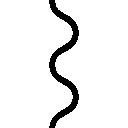っっ!!」
顔を真っ赤にして唸りながらぽかぽか殴ってくるサクラ。......いたっ!? 結構ガチ！ 照れ隠しならもうちょっと可愛らしいパンチにしろ！
〈イチャつくのはそこまでにして、身を隠してください。そろそろ来ます〉
!?!?!? Ｓｅｒｉに茶化された!?
衝撃も冷めやらぬうちに、状況は動いた。蹲るセツナが背後を見て表情を変える。そして地面を這うようにして、俺たちがいるのとは反対方向へ逃げていった。
直後だ。
まるで特急列車のように、恐竜型モンスターの大群が通りを埋め尽くした。
おそらくＳｅｒｉは、セツナが現れた瞬間から、こいつらの誘導を始めていたのだ。そしてそれをこっそりサクラに教え、備えさせていた。本来はこいつらの来襲にセツナが驚いたところで俺を解放する予定だったんだろう。
これじゃセツナは追いかけてこられない。俺たちはそっとその場を離れていく。
元々目指していたポータルは場所が割れている可能性が高いということで、俺たちはＳｅｒｉの指示に従い、新しいポータルへと向かった。
〈結局、人類保存会議とやらの掌の上ってことか〉
ＴＬを介して、セツナは言う。
〈いいさ。だったら、掌の上で堂々と勝利するだけだ〉
世界そのものに対して、宣戦を布告するように。
〈さあ始めよう、勇者ども。世界を賭けて、命を張り合い、無責任ではいられない戦いを〉
%%%%%%%%%%%%%%%%%%%%%%%%%%%%"D. E. 0559/12/25/19:12:28"%%%%%%%%%%%%%%%%%%%%%%%%%%%%%%%
辿り着いたポータルから、俺たちはいつもと違う空き家にログインした。
空き家の外から、騒がしい音がする。――人の気配だ。大勢の、人の気配だ。
俺たちは戻ってきたのだ。魔法時代に――滅ぶ前の世界に。
「......エマージェンシークエストは消えてますね」
隣のサクラがウインドウを見て言う。確認してみれば、クエストは【ペンダントをエリスに渡す】だけが表示されていた。制限時間は残り約三〇分。
「第二形態となったバラグトスに動きがありませんので、取り下げさせていただきました」陶器のような肌の妖精が、どこからかひらひらと舞ってきて言う。「どうやら正面から勝負するつもりのようです。我々の最終目標は、彼らも知っていますから」
魔王バラグトスを倒す――それが俺たちのグランドクエスト。それを達成できるかどうかが、ゲームの成否と、人類の存亡と――そして、俺たちの勝敗を決めるのだ。
「だったら」俺はアイテムストレージを開いた。「ちゃんと揃えないとな、フルメンバーを」
アイテムストレージの一番上。
そこには、オリハルコンのペンダントが納められていた。
真っ黒な雲から、重々しい雨が降りしきっている。そんな中を、騎士たちが慌ただしく走っていった。向かう先は南。バラグトスがいる方向だ。
偵察に向かった他のプレイヤーによれば、Ｓｅｒｉの言う通り、バラグトスは大きな悪魔の姿のまま、漆黒の城――《魔王城》の手前に佇んでいると言う。おそらく、俺たちが近付かない限り動き出すことはないだろう。だがもし俺たちがもう一度戦って負ければ、まず間違いなく、街に踏み入ってすべてを蹂躙する。
そうさせないためにも、俺たちは走った。南に走る騎士たちの流れに逆らうようにして。
目的地――エムル城に辿り着くと、俺たちは立ち止まり、雨にけぶるその威容を見上げる。
「......今日、ここに来るのは三回目だな」
「ずいぶん違って見えるものですね。精神状態の違いでしょうか？」
「お前あのとき、なんかすっげえ素直だったもんな。俺の腕にぎゅっと抱き着いて......」
「へえ～？ ずいぶんしっかり覚えてますね？」
「......そりゃ、ついさっきの話だし」
「へえ～」
「なんだそのにやにや笑いは！ もう行くぞ！」
南方の市壁に戦力を集めているからか、警備は手薄だ。俺たちは城館をぐるりと回り、ひと気のない部屋を見繕うと、窓を破壊して中に入った。
廊下の様子を確認すると、すぐ近くに騎士がちょうど二人いたので、さくっと気絶させて甲冑を追い剝ぎする。これさえ着てれば普通に城内を歩けるようになるって寸法だ。
サクラには「えー、なんか臭そう......」と渋られたが、代案があるわけでもない。ガシャガシャと足音を立てて、エリスの部屋がある三階を目指す。
エリスの部屋の前にはフル装備の見張りが二人も立っていたが、これはサクラが電撃魔法で気絶させた。俺たちは甲冑を脱ぎ捨てて、扉に向き直る。
思い出すのは、エリスの声。嘆きと後悔に満ちた、悲鳴のような声。
......あいつの人生が歪んだのは、俺たちのせいだ。だっていうのに、どんな顔で会えばいいんだろう。その答えが、俺にはまだ、はっきりとは存在していなかった。
扉を睨んだまま考え込んでいると、
「エリスさん、入りますよー」
ガチャッと、サクラがノックもせずに扉を開いた。
「お、おまっ、まだ心の準備が......！」
「友達に乗せられて告白する女子ですか。ほらほら入って入って」
「え～っ！ ちょっ、まっ、やっぱいいって～！」
などとアホなことをしていたら、
「......リオ？ サクラ......？」
遠慮がちな声が、部屋の中から投げかけられた。
俺は観念して室内に入る。エリスは天蓋付きの大きなベッドの上で、輝きを失った聖旗を抱き締めていた。俺と別れたときのままの戦装束で......。
驚いた顔でこちらを見つめるエリスの視線に、俺は固まってしまう。ど、どうすれば......。
「ほら先輩、ペンダント」
......俺が渡すんスか。そりゃそうか。
俺はストレージからペンダントを取り出し、その虹色の輝きを覗き込んだ。......幾何学模様にカットされたオリハルコンは、俺の顔なんか映さない。だが思い出したことがあった。街の鍛冶屋が言っていた、オリハルコンの石言葉―――『色褪せない約束』。
もし、俺たちのゲームが結実させたのが『それ』だというのなら、信じてみてもいいだろう。俺たちが誰だろうと、エリスが誰だろうと、そこにあった気持ちは変わったりしないって。
俺は唇を引き結び、ベッドのエリスに近づいて、じゃらり、とペンダントを突きつけた。
「これ、やる」
やべっ、ぶっきらぼうすぎた。背中にサクラの視線がぐさぐさ突き刺さる。
「い、いや、感謝の印というか、お詫びの品というか、な？ 俺たち、最近はずっとこれのために動いてて、地下ダンジョンに潜ってたのもそのためでだな、だから......」
だから......なんだっけ？ 何が言いたかったのかもうわからん。案の定、エリスは戸惑った表情で瞼をぱちくりしていた。じわじわ背中に嫌な汗。
はあ～、という溜め息が聞こえたと思うと――ばっしーんっ!! 背中をぶっ叩かれた。
「痛ってえ!?」
「エリスさん、今のを翻訳するとこういう意味です。『俺の気持ちだ！ 受け取ってくれ!!』」
「ちょっとニュアンス違う！」
エリスは俺たちのやり取りなんか無視して、差し出されたペンダントを食い入るように見つめていた。その姿は、まるで化粧道具に憧れる少女のようで――
「これ......ほんとに、わたしに......？」
漏れた声音は、夢のように霞がかっている。俺は真剣に頷いて、言い聞かせるように告げた。
「お前にだ。お前へのプレゼントだよ、エリス。俺たち全員からの、俺個人からの、両方の意味でのプレゼントだ。まあ、なんつーか......」
言葉を探したが、結局身も蓋もない言い方しか思いつかなかった。
「聖旗なんかより、ずっと綺麗だろ？」
エリスは、ゆっくりと......横に、首を振る。
「同じくらい、綺麗だよ......。思い出したの......同じくらい、綺麗だったんだ......」
エリスはペンダントに手を伸ばし......途中で止めた。ん？ と思っていると、エリスは抱いていた聖旗をベッドに置く。そして少し笑って、長い金色の髪を頭の後ろに持ち上げた。
「リオが着けて」
「は？ ええ？ ......な、なにゆえ......？」
「なにゆえじゃないですよ先輩」見下げ果てたように言うサクラ。「着けてほしいって言ったら着けてほしいんですよ。ギャルゲーってその程度のことも教えてくれないんですか？」
「おい貴様ッ！ 俺のことはいいがギャルゲーは馬鹿にするな!!」
「リオ、早く」
エリスは顎を少し上げた。あの......キスするんじゃないよね？
「じゃ、じゃあ後ろから......」
「前からだよ」
「......で、でも着けにく、」
「前から」
「......はい......」
ペンダントの金具を外し、前からエリスの首に腕を回す。お、思った以上に顔が近い......。ふとエリスの顔を見上げると、間近から大きな瞳がこちらをガン見していた。あ、あのう......あんまり見ないでいただけると――うぼあ！ 息をかけるな！
「......あの、私、席を外したほうがいいですか？」
サクラが遠慮がちに言うと、エリスは「んーん」と首を振った。
「大丈夫だよ。サクラに無許可でちゅーしたりしないから」
「いや......別に許可とか資格とか要りませんし......」
「遠慮しなくていいよ。リオを取られちゃったら寂しいもんね？」
「はあ!?」サクラは怒ったように顔を赤くする。「誰が寂しがるんですか、誰が！ どこぞのぼっち先輩じゃあるまいし、私は他にも大勢友達がいるんですよ！」
「へー、そうなんだ。その割にはいっつもリオと一緒にいるよね？」
「そ、それは......」
サクラはちらりと俺を見て黙ってしまった。......まあ、その、うん。
手元が見えなくて苦労したが、何とかペンダントを着けられた。エリスから離れて人心地つく。はあ......えらく前に出たお胸をお持ちだなちくしょう。
エリスは胸に下がった虹色のペンダントを見下ろし、唇を綻ばせる。どうやらお気に召していただけたらしい。......だが、笑みはすぐに消えていった。風船が萎むように......。
「......リオ、サクラ......」
顔を上げたエリスは、曖昧な表情をしていた。微笑もうとして失敗したような......。
「もうすぐ......お別れなんだよね......？」
俺たちは息を呑む。咄嗟に言葉が出てこなかった。
......きっとそうなんだろうと、心のどこかでわかってはいた。バラグトスと、そしてセツナとの決着をつけた瞬間、きっとＰｆＳは終わる。クリアにせよゲームオーバーにせよ、俺たちはもう二度とエリスとは会えなくなる。
もう見て見ぬ振りはできない。別れはすぐそこにある。だったら、悔いなんて残しちゃいけない。残していいわけがない。エリスを置き去りにしてしまうからこそ、俺たちは――
「――サクラ、いいよな？」
それだけの言葉で、サクラは意図を察してくれた。
「話しましょう。私たちのすべてを」
そして俺たちは、すべてを明かした。
俺たちが遥か未来の人間であること。この時代での行動はすべてゲーム――遊びのつもりだったこと。エリスに聖旗を与えたのもその一環でしかなかったこと。そしてエリスがバラグトスに負ければ、その影響で俺たちの世界もまた滅んでしまうこと――
洗いざらい、言いにくいことも恥ずべきこともすべて、俺たちは話した。
話しながら、俺は思った――これでようやく、始められるんだと。
プレイヤーとキャラクターではなく、勇者と聖女ではなく――
――俺たちとエリスの関係を、ようやく。
「そっかぁ......」すべて聞き終えたエリスは、息を吐くように呟いた。「そっかぁ......」
繰り返された呟きには、一体どんな想いが籠もっているんだろう。よくももてあそんでくれたなと恨まれるか、わけわかんないと撥ねつけられるか......。
どんな想いでも、受け止めるつもりだった。怒るのも恨むのも全部正当。俺たちに抗弁の余地なんかない。だって俺たちは、彼女の人生を楽しんできた。彼女という一人の人間を、コンテンツとして消費した。エリスには、俺たちを口汚く罵る権利が、充分すぎるほどにある。
しばらく、沈黙が漂った。
それから......不意に、エリスが口を開く。
「リオ、よく言ってたよね。なんでわたしがリオのことを好きなのか、よくわからないって」
突然の話に戸惑いつつも、俺は無言で頷き、聞き役に徹した。
「わたしは、ずっと自分を無力だと思ってた。人を治す力があったって、できるのは後始末でしかないって。......でも、初めてリオを見たとき、リオは自分よりずっと大きいゴブリンと戦ってた。わかるかな？ その姿が、わたしにとってどんなにカッコよく見えたか」
......理想の自分。あのときの俺が、エリスにはそんな風に見えたのか......。
「この人と一緒にいたいって思った。そうすればこの人と同じになれるんじゃないかって、本気でそう思ったの。......でも、ダメだったんだね。最初から、ダメだったんだ。わたしとリオは......根本的に、違う人間だったんだから......」
なんて......寂しそうな声を出すんだよ。
お前は恨むべきなんだ。怒るべきなんだ。なのに、お前は、やっぱり......いつものように、寂しがってくれるのか。こんな無責任な俺たちを、求めてくれるのか。
胸が詰まった。何らかの感情が胸に渦巻いた。彼女が求めている言葉を口にしてやりたいと思った。でも、今更、口先だけの言葉に意味なんてない。代わりに、言うべきことを言う。
「......エリス。俺たちは、お前に何も強要しない。今更何を言ってんだって思うかもしれないけど、俺たちは――少なくとも俺は、これ以上俺たちの都合でお前の人生を歪めたくない。魔王は俺たちだけで倒してやる」
多少の縛りプレイがなんだって？ それでエリスを普通の人生に戻してやれるなら、全然大した話じゃない。
「エリスさん」厳かな声音で、サクラが言った。「九年前と同じ問いを、もう一度します」
そして突きつけるのは、このゲームの真の主人公に向けた、最後の選択肢。
「怖い思いを、たくさんするかもしれません。それでも、やりますか？」
エリスは――やるなんて言わなければよかったと泣いた少女は――答えなかった。ただ、空中を見つめていた。そこに何があるのかは、俺にはわからなかった。
しん――と、沈黙が部屋の隅々まで行き渡った、そのとき。
外が妙に騒がしいことに気付いた。
同じく気付いたか、サクラも視線をあげる。エリスも振り向いて窓を見た。俺は首を傾げると、窓に近寄り、閉まっていたカーテンを開ける。
直後、目に壮烈な光景が飛び込んできた。
雨の中、城壁の向こう側に広がる人の海。おそらくはエムル中から集まってきたのだろう民衆が、一様に手を組み合わせ、城を見上げている。
窓を開け放った途端、声が堰を切ったように溢れてきた。
「エリス様！」「聖女様！」「どうか我々をお守りください......！」
祈りの、声だ。彼らは助けを求めている。慈悲を欲している。奇跡を願っている。
聖女エリスよ、どうか魔王を倒してくれ――と。
振り返ると、エリスは蒼白になって震えていた。両耳を手で塞ぐことすらできずに、暴力を前にした子供のように震えていた。
俺は、窓を閉めるべきだと考える。だが同時に、別のことが脳裏を過ぎった。
――彼女のために、俺たちにできることはなんだろう。
一回につき、ほんの数時間。九年間に比べればほんの一瞬に過ぎない、そんな短い時間を、いつもいつも惜しんでくれた、彼女のためにできることはなんだろう。
そう考えた瞬間――ああ、と納得した。
「怖いか、エリス」民衆の祈りの声に紛れ、俺は問う。「重いか。苦しいか。潰れそうか」
エリスは殻を閉じた貝のように蹲った。俺は一歩、彼女に近付いて、
「俺たちにとって、これはゲームだ。魔王と戦うのも遊びの一環でしかない。――だがな」
俺は振り返る。開け放った窓の向こう、祈りの声を上げ続ける民衆たちを見やる。
「だからこそ思うんだ。傍観者でいちゃいけないって。無責任でいちゃいけないって」
だって、と続けた瞬間、エリスがわずかに、顔を上げた。
「このゲームは、『みんな』で遊ぶのが一番面白いんだから」
俺は窓から身を乗り出した。俺の姿を見つけ、民衆が怪訝そうにざわめく。
......こんなのはガラじゃない。キャラじゃない。というか得意じゃない。
でもそれは普段の話。――ゲームでなら、あらゆることが得意分野だ。
「――聞け、民よ!!」
未だかつてなく響いた俺の声は、民衆の声を上から押し潰した。
「お前たちの不安、恐怖、焦燥！ すべて俺たちに預けろ!! 魔王の力が神にすら届こうと！ 俺たち勇者が必ず葬り去ってみせる!! だから祈るがいい！ 信じるがいい！ 期待するがいいッ!! 勇者がいる限り、自分たちの未来は約束されているのだと!!」
俺は魔剣フレードリクを抜いて空に掲げた。雲間から一瞬覗いた二つの月が剣先を輝かせ、まるで灯台のように民衆の目を惹きつける。挿入された沈黙は、たぶん一瞬だ。だがその一瞬の沈黙が、おそらく、以後九百四十年に渡る魔法時代の歴史を決定づけた。
「勇者......」最初はささやかに、「勇者......！」徐々に熱を持ち、「勇者！」やがて臨界に達し、「勇者！」「勇者!!」「勇者――ッ!!」そしてすべてを塗り替える。
エリスへの祈りは勇者コールへと変わった。俺は窓から引っ込むと、驚いた顔でこちらを見ているエリスと目を合わせる。
「エリス、選択権はお前にある。それを承知の上で、俺はこう言うことにした」
手を差し出し。
楽しさに笑いながら。
無邪気だった子供の頃のように。
俺は誘う。
「さあ――一緒に遊ぼうぜ」
どんな人間もコントローラーを握れば対等だ。どんな偉人も盤を挟めば平等だ。
だから、苦痛も責任も幸福も、お菓子のように分け合って――
――一緒に遊ぼう、俺とお前とみんなとで。
エリスは大きく目を見開いた。そして俺から視線を切り、俯いて胸元を見る。
そこには、虹色に輝くペンダントがある。
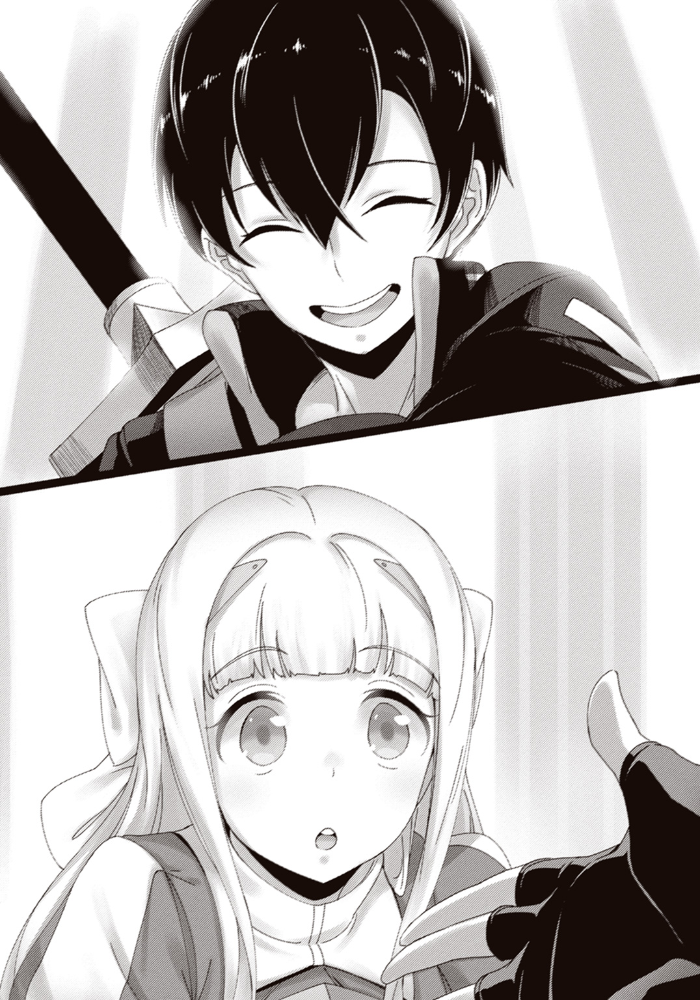
そっと、エリスはそれを握った。ぎゅっと、エリスはさらに握った。
顔が上がる。
顔色は―――元に戻っていた。
十九歳のエリスは、俺を見て、サクラを見る。その表情にもはや恐怖はない。どころか――
「――やるよ」
一〇歳の頃よりもなお無邪気な、笑みがあった。
「だって......みんなと遊ぶの、楽しいもん！」
瞬間だった。ベッドの上の聖旗が煌々とした光を放つ。それは部屋中を一瞬で真っ白に染めた。きっと外からも見えているに違いなく、感極まった声がどよめきとなって聞こえてきた。
視界の端で変化が生じる。メイン画面に表示されたＳＱの内容が別のものに更新されていく。それは新しくも見慣れたあの文字列――
【セグメントクエスト：魔王バラグトスの打倒 99:59:59】
――ついに、グランドクエストとセグメントクエストが一致した。幾多の困難を乗り越えて、勇者と聖女が魔王に挑む時がやってきたのだ。
あえて言おう――ここが本物の魔法時代であることや、俺たちの行動に人類の存亡がかかっていることや、これから始まる戦いでエリスが死んでしまうかもしれないことを、百パーセント完膚なきまでに理解した上で――あえて言おう。
これは、ゲームであって遊びである。
気楽に楽しく面白く――世界を救ってやろうじゃねえか。
「あっ、来た！」「おっそいぞー!!」「エリスちゃーん!!」
エムル南方の市壁を少し出たところに、他のプレイヤーたちが集まっていた。エリスが馬の上で大きく手を振ると、わっと歓声が沸き上がる。
その場にいたのはプレイヤーだけじゃない。
「聖女様！」「お加減はもうよろしいのですか!?」「皆！ 聖女様が来られたぞっ!!」
甲冑を身に纏った騎士団もまた、プレイヤーたちから少し離れたところに集まっていた。数は......大体、三百人ってところか。俺たちの三倍以上だが、戦力はとんとんだろうな。
「わたし、騎士さんたちのほうに行ってくるね。心配させちゃったから」
「作戦会議をしたいので、あとで合流しましょう。できれば騎士団の代表者も」
エリスはくすっと笑って、「わかった。やってみるね」と言い、騎士団のほうへ馬を走らせていった。......騎士団は、俺たち勇者をあまりよく思っていない。だが、それを押して協力しなければ、あの魔王はとても相手にできないのだ。
俺とサクラはプレイヤーたちのほうへ馬を寄せ、地面に飛び降りた。
「状況はどうなってますか？」
「今のところ動き出す気配はない。やっぱりこっちが動くまで待つつもりじゃないか？」
サクラの質問に、筋骨隆々な大盾使いが答える。その視線の先には、平原の中央に建つ漆黒の魔王城と、その手前に佇む巨大な悪魔の姿があった。遠目にもでかいバラグトス第二形態は、今はまだ強化魔法の光に覆われていない。
俺はマナ濃度図を手元に手繰り寄せた。
「......なるほどな。あの城の周囲はレッドエリアだ。どんな強い魔法も使い放題。対してその外側は、高くてもグリーン――あの場所で待ち構えたほうが格段に有利ってわけだ」
「このポジショニングを崩すのは難しいでしょうね......」
前回《ファラゾーガ》を不発させたサクラが苦々しげに呟く。マナ濃度は魔法だけではなく、シールドの回復速度にも関わっている。普段ならこちらからは絶対に手出ししない状況だ。
「策は？」
「なくは......ないです」サクラの答えは歯切れが悪かった。「正直、策とはとても言えないものです。ちゃんと時間を使って考えれば、もっといい手立てを思いつくんでしょうけど――」
「――グッモーニンッ！ おまえらああああああああああああああああああああああッッ!!」
突如、雨降りしきる平原に大音声が響き渡った。
俺たちは弾かれたように振り返る。魔王城最上階のバルコニーに、一人の男の姿があった。
「はいっ！ というわけでね！ 初めましての人は初めましてお久しぶりの人はお久しぶりいつも見てる人はありがとうっ！ セツナと申しまっす!!」
「本当に......」
何らかの魔法で増幅しているのだろうセツナの声を聞いて、女子四人組の一人がかすかに呟いた。タイムラインでの宣戦布告を見てもなお、今この瞬間、この声を聞くまで、信じることができなかったんだろう。セツナが俺たちの――人類の敵であることを。
「今回のゲームはこちら！ はいドン！ ポストファンタジー・ストラグル!! なんとこちら、本物のタイムトラベルを使ったリアルヒストリーゲームでございます！ 誰もが一度は憧れた剣と魔法の時代に本当に行けてしまうという――凄い時代になったもんですね～！」
動画そのままの語り口が次々とまくし立てられる。パソコンの前にいるのかと一瞬錯覚してしまうほどのそれは――しかし、どこか儀式めいていた。
「このゲーム、目的は人類の滅亡を回避することなんですけど......えーまあせっかくなんでね、ちょっと変わったことをしてみようかと！ というわけで――」
人影は、まっすぐ天に振り上げた腕を、こちらに向けて振り下ろす。
「――ちょっとあそこの連中をブッ殺して、人類を滅亡させてやろうと思いますっ!!」
直後、バラグトスの巨体を光の膜が覆った。ただでさえ桁違いだろう魔王のステータスが、十重二十重の魔法によってさらに跳ね上がる......！
「さて！ では、そろそろ始めていきましょうか――世界の終わりってやつを!!」
凍ったように動かなかったバラグトスが、天を仰いで咆哮した。空間が震撼する。世界が震撼する。殺戮と崩壊への衝動が、声に乗ってすべてを覆っていく。
かつて絶望した最悪の敵が、今ここに復活した。対し、俺たちは別に強くなっちゃいない。レベル上げなんてできないし、練習なんてしていない。
それでも、変わったことがあるとしたら。
「......先輩」
「なんだ？」
「私、勘違いしてたかもしれません」
「......そうかもな。俺もまだ考えが甘かった」
俺は苦笑する。サクラもくすっと笑みを漏らす。
だって、笑いたくもなるだろ？
勝算なんてゼロに等しい戦いが目の前に迫り。
あらゆる生物が震え上がるだろう咆哮を全身に受け。
そんな状況の中で――
――どいつもこいつも、笑ってやがったんだから。
こんな怪しいゲームに自ら進んでログインした、八十七人の物好きたち。その一点を除けば、きっと誰もが普通の人間だ。英雄なんかじゃ決してない。
けれど、俺たちは選択した。
終わった世界に放り出され、死ぬような思いをして、世界なんて大層なものを背負わされ。
それでも、ゲームはやめないと。
だから揺るがない。攻略すべき現実がはっきりした今、それ以外のことは目に入らない。
俺たちは確かに、勇者としては欠片も強くなっちゃいないだろう。
だが、遊者としては、格段にレベルアップしていたのだ。
「――全員、聞いてください!!」
杖を掲げて叫んだサクラに、その場の全員の視線が集中した。
「あの魔王と正面から戦っても、残念ながら、勝つのは難しいでしょう。だとしたら、私たちがやるべきは一つ！ 魔王バラグトスを操っているセツナさんを倒せばいい!!」
そして、サクラは笑う。胸の中に躍る感情を、取り出したように。
「わかりますか？ 魔王城の前にいるバラグトスを、たった一人でも構いません、突破するんです！ その一人がセツナさんを倒せば私たちの勝ち！ そしてセツナさんを倒した人が、間違いなく、紛れもなく、このゲームのＭＶＰ！ ヒーロー！ 全一!! 最強ですっ!!」
俄かに、プレイヤーたちの空気が熱を持つ。火が付いたのだ、彼らの導火線に......！
「活躍したいですかっ!?」
「「「「「おおおおおおおおおおおおおおおおおおおおおおおおおおおッッ!!」」」」」
「最強は誰ですかっ!?」
「俺だ！」「ウチやし！」「僕、僕！」「「「「女なめんなー!!」」」」「俺だ俺だ俺だ!!」「「「我らが天使に勝利を!!」」」「お？ やるか？」「やっぞオラ！」「優勝予定地!!」
「よろしいッ！ じゃあ決めましょう、最強を!! これより準備時間を与えます！ 三分！ 百八十秒です！ 抜け駆けはなし！ 遅れた人は置いていきます!! 返事は!?」
「「「「「イエッサーッ!!」」」」」
プレイヤーたちはがやがやと騒ぎながら、メニューウインドウと向き合って準備を進めていく。サクラは「はあ～っ」と大きく息をついた。
「あー、喉痛い。こんなに叫んだの初めてですよ......」
「お疲れ。ナイス演説」
「......ほんとですか？ ズレたこと言ってませんでした？」
サクラはやや語気を弱める。......俺はこいつの過去を詳しくは知らない。だが、何かと思うことがあるんだろう。俺と同じように。でなきゃ俺みたいなのとつるんでない。
だから、俺は強めに、その細い肩をポンと叩いた。
「大丈夫だって。たぶん明日からは親しげにマムとか教官とか呼ばれるようになるぞ」
「それはそれで嫌なんですけどっ！」
サクラのむくれっぷりを見てけらけら笑っていると、ガシャッと重々しい足音が聞こえた。
「――おい、女！ なんだ今のは！」
振り返ると、騎士が一人、近付いてきていた。甲冑にはじゃらじゃら飾りがぶら下がっていて、もしかすると騎士団長とか役職付きの人間なのかもしれない。
「聖女様が貴様らの意見を聞くようにと仰るから黙って聞いていれば――なんだ今の馬鹿騒ぎは!! あまりの恐怖に正気を失ったか!?」
俺とサクラは顔を見合わせて苦笑した。まあそうなるわな。こいつらから見たら。
サクラが一歩前に出て、落ち着いた声音で言う。
「ご説明します。私たちはこれから、あの黒い城を目指して突貫します。手前にいる怪物の足元を突っ切って、最短距離で。そして城に辿り着くことのできた誰かが敵将を倒します」
「馬鹿な......!! 城に辿り着けなかった者はどうなる!?」
「死なないようそれぞれ頑張ります。そしてあの怪物の足止めをしてもらいます」
「正気なのか......!?」
「正気です」サクラは真剣な声で答えた。「皆さんのご了解を得られるまで、何度でもご説明します。完全には難しいかもしれませんが......それでも、だからこそ、何度でも。この場所を、時間を、共有する者として――それが、最低限の礼儀ですから」
「............礼儀、か」騎士は皮肉げに唇を歪めた。「貴様たちから、まさかそんな言葉が出てくるとはな。......ふん。ならば勝手にするがいい。我々は我々で――」
「あ、わたしは一緒に行くからね！」
と、話に割り込んできたのは、銀色の軽鎧を雨に濡らしたエリスだった。
騎士がぎょっとしたのを知るや知らずや、エリスはぴょんぴょんゆさゆさ跳びはねる。
「あのお城まで競争するってことだよね？ わたし、昔は駆けっこ得意だったんだよー！」
「いやエリス、さすがにお前一人でセツナと戦わせたりはできないからな？」
「わかってるってば。ちゃんとリオが傍で守ってくれるんだよねー？」
でゅへへー、と気が緩みまくった笑い方をするエリス。間違ってねえけどその『わたしって愛されてるにゃあ』みたいな顔は恥ずかしいのでやめろください。
「なっ、なりません！」騎士の男が焦った様子でエリスに詰め寄った。「聖女様が彼らに付き合う必要などないのです！ このような愚かなこと、勝手にやらせておけば――」
「ぷははっ！ 愚か！ 愚かかあ！ 確かにね。ぶっちゃけみんな馬鹿だよね！」
おいコラ。けらけら笑いながらさらりとディスるな。
「でしたら――」と言いかけた騎士を手で制し、エリスは笑みを滲ませたまま言った。
「あなたたちに、一つ、前から訊いてみたいことがあったの」
続いて、後ろに控える他の騎士たちにも聞こえるように、
「ねえ、みんな！ みんなはわたしと一緒に戦って、楽しかった!? 嬉しかった!?」
突然のことに、騎士たちは答えられない。それでもエリスは続けていく。
「もし嫌だって人や、つらいって人がいたら、すぐにでもわたしの騎士なんかやめてほしい！ だってわたしは、『みんな』が楽しくて、『みんな』が嬉しくて、『みんな』が笑顔でいられる、そんな暖かな世界を守るために、この旗を手に取ったんだから！ わかる!? 『みんな』っていうのは、あなたたちもだよ!? 騎士だからって、嫌なことやつらいことを我慢する必要はないの!! そんなのは、このわたしが、この旗にかけて許さないっ!! だから――」
エリスが言い終わるよりも、早かった。
騎士たち全員が、まったくの同時に、その場に片膝を突き、頭を垂れたのは。
「――お言葉ですが、聖女様」
そして、先頭の騎士が代表し、力強く顔を上げて、告げる。
「見くびらないでいただきたいッ!! 我ら、聖女様を守護せし盾にして剣!! 誰一人、選んだ道を悔いてなどおりませぬッ!!」
エリスは、驚いたように目を見開き――そして、ふわりと微笑んだ。
「......そっか。じゃあ安心して命令するね」
ガンッ!! 聖旗の石突きで強かに地面を叩き、エリスは朗々と告げる！
「わたしを守って!! そして、笑って迎えよう!! 平和な世界を、みんなで!!」
そうして聖女の騎士たちは、魔王のそれにも劣らないほどの雄叫びを上げた。
サクラが告げた準備時間、百八十秒は、あっという間に終わりを告げた。
ＰｆＳプレイヤー八十七人と騎士団三百人、そしてエリスを合わせた三百八十八人は、雨降りしきる平原にずらりと横並びになっていた。
正面には光の鎧を纏って待ち構える異形の悪魔。そして黒天を衝く魔王城。
しかし、それらは俺たちにとって、ビーチフラッグスの旗のようなもの。摑み取り、奪い取るだけのものでしかなく、もはや敵とは映っていない。
正気とはとても言えないこの競争の報酬はただ一つ、『活躍できた』という自己満足のみ。それでも――ああ、ガチ勢だのエンジョイ勢だの区分しても、結局のところ、俺たちは全員好きなんだ。勝つことが。自分の実力をひけらかすことが。
心から叫びたいのだ――『俺強ええ!!』と。
さっきまでが噓のような張りつめた沈黙。雨の音だけが、耳の中に満ちていた。
「先輩――私と遊んでて、楽しいですか？」
サクラが言った。俺は笑う。
「お前こそ――俺と遊んでて、楽しいのか？」
俺が言った。サクラは笑う。
愚問だと、浮かべ合った笑みが告げていた。
そして、運命の時は来る。
号令役のエリスが、聖旗をレースフラッグのように大きく掲げた。
「よーい――」
さあ、熱いＢＧＭを流せ。派手なムービーを見せろ。
「――スタート!!」
ラストバトルの、開幕だ。
ドンッッッ!! と炸裂したのは、三百八十八人分の足音。一斉に走り出した俺たちは、まるで獲物を見つけた肉食獣のように、雨の中をまっすぐに突っ切っていく。
一歩一歩が地面を震撼させ、鬨の声は天さえも震わせた。行軍と呼ぶにはあまりに稚拙。突撃と呼ぶにもあまりに無謀。もし観戦者がいたら何を考えているのだと首を傾げただろう。
何も考えちゃいない。
誰よりも、何よりも早く、あの魔王を突破する！ それ以外のことは何も考えちゃいない！
それがわかっているのかいないのか――魔王バラグトスが動いた。
ズンズンと地面を揺らしながら、自ら俺たちに向かってくる。そして射程範囲内に入るや否や、電車のようなサイズの腕を大きく振り上げた。
以前はその一撃で、俺たちの半数が為す術なくやられた。だが――！
「――人間を舐めるなよ、魔王ッ!!」
拳が振り下ろされる寸前、エリスの聖旗が鮮烈に輝いた。それは黒雲と夜がもたらす闇を散り散りに引き裂き、俺たち全員を包み込んでいく。
そして、俺の目は捉えた。シールドゲージの下に、見たことのないアイコンが現れたのを。身体強化でもない、ダメージ減衰でもない、魔族特攻でもない――金髪の少女のアイコンが。
力を感じる。熱を感じる。俺やサクラ、他のプレイヤー、騎士団の連中――人々の顔が自然と上がり、大きく腕を振り上げる魔王バラグトスを睨み据えた。
「おおお「おおおおお「おおおおおおお！「おォおおおおおおおおおおお!!「ォおぉおおおおおおおお!!「おおおおおおおおお!!〈おおおおおおおおおお!!！「おおおおおおおおおおおおおッ!!〈おおおおおおお〈おおおおおお！「おおおおおおおおおおおおおおおおおッッ!!〉
リアルと言わずＴＬと言わず重なった声は、燃え上がるような戦意の証。剣を取り槍を取り杖を取り盾を取り槌を取り、俺たちは真っ向から立ち向かう。
バラグトスの巨腕が迫った。誰も逃げない。剣を振り上げ槍を引き絞り盾を構え火炎と稲妻と風刃を迸らせ―――正面から、激突するッ!!
降りしきる雨が、一瞬、消失した。激突点を中心として伝播した衝撃に、一粒残らず砕け散ったのだ。平原に破壊の嵐が吹き荒れることは、なかった。激突は拮抗し、衝撃は野放図に撒き散って消える。
腕を弾かれたバラグトスが、ズン!! と後ろに蹈鞴を踏んだ。
「今だッ!! 通り抜けろ!!」
バラグトスが体勢を立て直すその前に、俺たちはこぞってその足元を抜けていく。背後から追いかけられる形にはなるが、さっきの動きを見る限りバラグトスの足は大して速くない。逃げ切ることはできるはずだ......!!
そう思ったのも束の間。
バラグトスが、跳んだ。
大きな大きな、バックジャンプ。俺たちの頭上を追い抜いたバラグトスは、その重量で大地を深々と割り砕きながらも、再び魔王城の手前に戻ってみせた。赤々と滾る眼光は、未だ俺たちを見据えて動かない......！
怯みはしなかった。何度立ちはだかろうと同じことだ。何度だって突破してやる!!
キラッ、と空が光った気がした。反射的に視線を上向けると、俺は歯嚙みする。空から群れを成して降り注いでくるそれは、炎、雷、氷に風――魔法による攻撃だ！ バラグトスの後ろにいるのだろう十三パーセントの敵プレイヤーたちが、曲射弾道で攻撃してきたのだ！
「散開ィィイイイッ!!」
俺たちはバラバラに散らばった。固まっていたら範囲攻撃魔法の餌食になる！
直後、いくつもの爆発が起こった。まるで空爆......！ 戦争さながらの絨毯爆撃！ 脳が全力で回転した。降ってくる魔法の軌道から落下地点を読み、すべて回避しうるルートを策定する。あとは集中力の勝負。躱し、切り抜け、突破するッ！
魔法の弾幕を切り抜けると、再びバラグトスの間合いに入っていた。禍々しい悪魔はすでに、巨大な拳を大きく振り上げている。弾幕を抜けた俺たちを待ち構えるように......！
今度は弾き返す余裕などなかった。拳が隕石めいて大地に突き刺さり、何十人というプレイヤーや騎士たちが宙を舞う。だが、まだだ。何せ魔王の腕は二本ある！
最初の迎撃は、俺たちが固まっていたからこそできたこと。魔法弾幕を避けるために散らばった俺たちに、二発目の拳撃を防ぐ方法などない――はずだった。
「仕方ないなあっ！ もおおおおっ!!」
楽しげに叫びながら、光が――輝く旗が、前へと突出する。そう、エリスだ。エリスが自ら前に出たのだ。今にも降らんとする魔王の拳に立ち向かうように！
「言っとくけど、これっきりだからねっ!!」
鮮烈な光を放つ聖旗が、より鮮烈に、より力強く、太陽のような輝きを放つ......！ 黒雲に覆われた世界が、一瞬、昼のように明るくなった。そして直後、俺たちを覆い隠すように、半透明の光の膜が現れる。それはまるで俺たちのアバターを守るシールド――
光のシールドは、バラグトスの拳を受け止めると同時、音を立てて砕け散った。だが隕石の落着をも超えるその衝撃を、完全に相殺してみせる......！
再びバラグトスが体勢を崩した。この機を逃す俺たちではない！
一層速度を増す俺たちに対して――前を走っていたエリスは、反対に足を止めた。
「ああもうっ！ 力が入らないや......。わたしはここまでかあ......！」
彼女は、俺たちを迎えるようにこちらに振り返る。
「みんなあああああっ!!」
そして聖旗を地面に突き刺し、両手を高く高く上げた。
「――信じてるから!!」
「「「「「おうッ!!」」」」」
俺たちは誰一人、立ち止まらない。次々とハイタッチだけを交わし、彼女を追い抜いていく。
あと少し。バラグトスの体勢は戻っていない。このまま行けば通り抜けられる......！
だが、やはりそう簡単にはいかなかった。
バラグトスの股下を潜るようにして、炎が迸った。それは草原を一瞬で燃え上がらせる。できあがったのは、降りしきる雨にもまるで弱る気配のない、大きな炎の壁。
突っ込むか？ シールドは耐えられるか？ それとも迂回する？ バラグトスが動き始めるまでに間に合うか？
様々に去来した俺の思考を、
「飛ばします!!」
どこからか飛んできたサクラの声が、吹き飛ばした。
脳裏に過ぎる、薄明るい地底湖での竜との戦い。あのときとまったく同じことが再び起こる。
俺の前方に、風が渦巻いた。
俺がほとんど反射的にその上に足をかけると、
ボンッ!!
足裏で空気が爆発し、俺の身体を高く高く跳ね上げる！ 高度はすぐに炎の壁の高さを超え、俺は放物線を描いてその向こう側へ――
炎の壁を越える瞬間、俺は背後を一瞥した。
そこには会心の笑みを浮かべた、頼もしい後輩が一人。
俺は着地と同時に前転して衝撃を殺す。直後に、別の着地音が四つ続いた。何らかの方法で炎の壁を飛び越えた奴は、俺を含めて五人ってことだ。他の奴はきっともう間に合わない。すなわちこの五人のうちの誰かが、この競争の勝者となる！
視線を交わしたりはしなかった。やるべきはたった一つ――前へ！
魔法による色とりどりの弾幕が正面から迫る。躱し、弾き、あるいは受け止めた。
一人が電撃を受けて転倒する。残り四人。一人が火球に呑まれて炎上する。残り三人。一人が凍らされた地面に足を取られた。残り二人。
俺と名も知らないそいつは先を争って走る。走る。まるで余った給食のデザートでも奪い合うよう。頭の中には何にもなかった。先へ。先へ行きたい。誰よりも早く。誰よりも速く！
バラグトスまであと数歩というところまで来て、ついに、魔王城の門前に固まって俺たちを迎撃していた人影の集団が散らばっていった。奴らにはバラグトスの強化魔法を維持するという役割がある。まかり間違っても俺たちに倒されてはいけないのだ。
だが、これで道ができた。魔王城の入口まで、もはや障害となるものはない！
――いや。
やっぱりお前か。お前はやっぱり、最後まで立ちはだかるのか。
バラグトスが、片脚を上げた。
踏み潰そうと言うのだ。そのトラックみたいなサイズの足裏で、俺たち二人を一息に！
全身を影が覆った。圧倒的威圧感が背筋を貫く。理屈でなく本能で、一瞬先の死を理解した。
いったん落ち着いて避ければいい。そうすればバラグトスに次はない。安全に魔王城まで辿り着くことができるはずだ。
最適解は、それだった。
実際、すぐ隣を走っていたもう一人は、そのために足を鈍らせた。
――だが、俺は止まらない。
いいや、止まれなかったのだ。最適解が別にあるとわかっていても、熱を持った身体は、思考は、自分自身に止まることを許さなかった。
行け。行け！ ――行けッ!!
「おォおぉおおおおおおおおおおおおおおおおおおおおおおおおおおおおおおおおおおおおおおおおおおおおおおおおおおおおおおおおおおおおおおおおおおおおおおおおおッッッ!!」
俺は雄叫びを上げ、全力で地面を蹴った。
走ることすらもはや厭わしい。先へ。先へ。俺は前に向かって、頭から飛び込んだのだ。
そして。
ズンッッ―――!! という衝撃が、すべてを吹き飛ばした。
頭の中がガタガタと揺れ、視覚が、聴覚が、触覚が、全部ぐちゃぐちゃになった。
それでも一つ、はっきりしていることがある。
俺の意識は、現実世界に戻ってはいない。
バッと顔を上げて背後を振り返れば、そこには地面にめり込んだ悪魔の踵があった。
通り――抜けたのだ。
俺が......俺だけが。
バラグトスの脚の向こうに、見える。この場所を相争い、そして敗北した者たちが。俺が勝ち取ったこの場所に、ついには辿り着けなかったライバルたちが。
なのに、彼らの視線は一様に告げている。
―――任せた!!
俺は彼らに背中を向けた。
そして魔王城に向けて走り出す。
親指を立てた手を、よく見えるよう横に突き出しながら。
巨大な扉を抜けて城内に入ると、そこは大きな吹き抜けのホールになっていた。
生命の気配はない。扉を一つ開けてみたが、鍵がかかっているということもなかった。やはり魔物はすべて、バラグトスが第二形態になるのに使われてしまったのだ。
構造はあまり複雑ではなさそうだ。何らかの魔法で隠しながら突貫工事で建てたんだろう。本来の歴史通りなら、無数の敵や罠が犇くダンジョンだったのかもしれない。
向かうべきは最上階。行き方についてはパッと見でわかった。
ホールの中央に立つ、灰色の塔。まるで柱のように天井を貫いている、とりわけ頑丈そうなそれが、最上階へ続く唯一の道に違いない。
俺は塔の根元にある観音開きの扉を開いた。洞窟のような深い闇に足を踏み入れていく。
完全に扉を抜けると、バン!! と独りでに扉が閉まった。そして壁に掛けられた燭台の炎が、手前のほうから順番に点り、闇が逃げるように遠ざかっていく。
緩やかに左へカーブしていく階段が、向かって右に延々と伸びていた。階段に敷き詰められた高級そうな赤絨毯は、まるで逆流する血河。この階段の先にこの世すべての血が集まるのだと、そう言わんばかりの真紅だった。
俺は登り始める。大きな螺旋を描く階段を、無言で、最速で。両側の壁に掛けられた燭台が、前から現れては後ろに消え、そしてまた前から現れる。その単調さと足音すら起こらない静寂が、俺の意識を内側へと向かわせた。
考えるのは、この階段の先で待っている奴のこと。あいつとダンジョンで話したときのこと。滅亡した世界でナイフを突きつけられたときのこと。
今、こうなってさえ、あいつのことを憎みきれないでいる自分がいた。きっとそれは、俺があいつの中に、自分と同じ弱さを見出しているからだ。
些細な――あいつに比べれば本当に些細なことで、俺は世界を、他人を見限った。くだらないと。つまらないと。価値なんてないと。一方的に。
それは失望したからか？ 悟ったからか？ 諦めたからか？
違う。
怖かったからだ。
俺は怖かった。今まさに自分がトラウマを抱えようとしているという事実が怖かった。だから傷付いてなんかいないと、そう言い訳をするために、世界を攻撃したのだ。
攻撃は最大の防御とばかりに、こちらから切り捨てたのだ。
あいつだって同じことだ。加害者でいる限りは、被害者であることを忘れられる。誰かを殴りつけている間は、誰かに殴られた傷を見ないでいられる。だから壊す。殺す。滅ぼす。そうしないと、自分が深く傷付いた被害者であることを思い出してしまう。
......なあ、セツナ。
そんなの、つまんねえだろ？
世界なんかより、ずっとずっと、つまんねえだろ？
だから、そろそろ終わりにしようぜ。そのひとっつも楽しくないクソゲーを。
長く長く続いた螺旋階段の終端――そこには、巨大な観音開きが待っていた。
どこか禍々しさを覚えさせるそれを、俺は両手で、ゆっくりと押し開けていく――
雨の音が、聞こえた。
広い空間に、真っ黒な闇が満ちている。その奥に、何か布のようなものがはためいていた。カーテンだ。開け放たれた窓から吹き込んだ風が、カーテンを大きくはためかせている......。
ゴオウウンッ!! と雷鳴が轟いた。
はためくカーテンを稲光が貫いて、空間を浸した暗黒を一瞬、拭い去った。
開け放たれた窓の手前に、背もたれを高く伸ばした、大きな玉座がある。
そこに――一人の少年が、座っていた。
つまらなそうに、肘掛けで頰杖を突いて、俺を見下ろしていた。
「......案の定、君か。ケージ君」
淡白な声が、独り言のように雨音に乗る。
「少し予定調和すぎるよ。ちょっとは空気を読んでほしいね――想定外なことが起こったほうが、コメントが伸びるんだからさ」
「落第点だな。魔王を気取るならこう言えよ。『わしは待っておったぞ。そなたのような若者が現れるのを』ってな」
「生憎と、プレゼントできる世界の持ち合わせがなくてね。気の利いた選択肢をお出しできなくて申し訳ないよ。――でもまあ一応、お作法として訊いておこう」
再び、稲光が瞬く。
束の間、取り戻された光の中で――セツナは立ち上がって、俺を睥睨していた。
「僕と一緒に、人類を滅ぼさないかい？」
軽い調子で放たれた問いに――俺はしばし、『もしも』を考えた。
もしも俺が――あいつと、出会っていなかったら。
ああ......笑えるくらい、しっくり来る。
セツナと肩を並べて、終わった世界を見下ろしている、自分の姿が。
「――『いいえ』だ、魔王セツナ」
だから、俺とセツナの違いはたった一つだ。
幸運な出会いがあったかなかったか。......たったそれだけの、あまりにも大きな違いだ。
「俺はお前を倒して、世界を救う」
俺は背中の鞘から、魔剣フレードリクを引き抜いた。マナ濃度に合わせて赤く染まった刀身が、闇の中でも鮮烈に輝いている。
「そうかい」感情の籠もらない声で、セツナは言う。「とても、残念だよ」
三度、稲光が瞬いたとき、セツナは右手を頭上に掲げていた。何かの魔法か？ そう思って身構えた直後――俺は、周囲の闇が急速に薄れていくのに気が付いた。
灯りが点いた？ いや、違う――集約しているのだ。空間に満ちていた闇という闇が、セツナの右手に凝縮されていく......！
集まった闇は、剣の形を取った。セツナの背丈ほどもある大剣の形に。俺には、その剣に見覚えがあった。現実時間でおよそ一ヶ月前。魔法時代の時間では九年前。初めて相対したバラグトスが、俺たち全員を相手取ってみせたときに使っていた、禍々しい大剣。
そして。
滅亡した二〇一六年で、死体となったエリスの胸に突き刺さっていた、剣だ。
「《邪剣バラグトス》」
セツナは顕現させ終えた黒い大剣を片手に握り、玉座手前の段差を降りてくる。
「この剣こそが、バラグトスの本体さ。もちろん、本来はプレイヤーには使えないアイテム。僕は生憎ヌルゲーマーでね。君みたいなのと戦うには、チートの一つも必要なのさ」
セツナが俺と同じ高さに降りた瞬間、邪剣バラグトスとやらから黒い霧のようなものが吹き出した。それは俺とセツナを囲うようにして床に円を描き、炎のように揺らめく壁となる。
円状のバトルステージの中で、俺とセツナは対峙した。俺は魔剣を、セツナは邪剣を、それぞれその手に携えて。
セツナが小首を傾げ、苦笑する。
「こういうときは、なんて言えばいいんだっけ？」
「パクッとけよ、適当に。それこそ、前にお前が言ってたゾーマの台詞でも」
「そうか。じゃあ――」
少年の姿をした現代の魔王は、ふっと瞼を伏せ――
「――『ケージよ。何ゆえ、もがき、生きるのか？』」
もがき、生き、そして傷付いた少年が問う。
「『滅びこそ我が喜び。死にゆく者こそ美しい』」
すべてを滅ぼし、誰もを死にゆかせた魔王が告げる。
「『さあ――』」
「『――我が腕の中で、息絶えるがよい』」
同時、俺は魔剣をセツナに向けた。
「《ファラゾーガ》!!」
火球系Ｂランク魔法《ファラゾーガ》。セツナに台詞を暗誦させている間にセットアップを完了させておいたのだ。完全なる不意打ち。できて防御、回避は無理だ......！
しかし、射出された火球はセツナに届く前に弾けて消えた。
セツナが持つ大剣から、黒い霧のようなものでできた刃が飛び出て、火球を相殺したのだ。
「やれやれ。マナーがなってないなケージくッ――!?」
当然、この程度のことは想定済みである。
俺は弾けた火球を飛び越えるようにジャンプし、セツナに頭上から襲いかかる！
俺が振り下ろした魔剣と、セツナが盾にした邪剣が激突した。甲高い金属音が響き渡ったが、しかし、堅い......！ 今のに反応できるとはな。だったら！
ギャリッ!! と触れ合わせた刃を軸にして、俺は空中で重心を移動した。そして着地したのは、セツナの背後。如何に頭が反応できても身体が対応できない死角。
振り返りざま、横薙ぎの一撃を背中に入れた。ガインッ!! とシールドが出る。色は緑。
浅い。だが繫がる！
俺を含めて、対人戦闘なんてプレイヤーの誰もしたことがない。だが俺のコンボへの嗅覚は鋭敏に反応した。セツナが仰け反っているうちに、俺は間合いを詰める。
ガインッ!! 斬り上げがまともに入った。衝撃でセツナの足がわずかに浮く。つまりやり放題！ 俺は刹那、思考を走らせ、脳内で四連撃のコンボを組み上げた。
集中力を研ぎ澄ませ、四肢の隅々に行き渡らせる。演武でもするかのように、俺は脳内で想像した動きを身体で再現していく。肩を鋭く叩きつけた。胴を強く薙ぎ払った。そしてもう一度斬り上げると――ほんの一瞬タイミングを待って、全力の袈裟斬りを炸裂させる。
ガィインッ!! という音と共に、セツナの身体が吹っ飛んだ。床で一度バウンドし、黒い霧でできた壁に激突した。
セツナには飛び道具がある。俺の魔法より遥かに発生の早い飛び道具が。だとしたら遠間で戦うのは不利だ。ひたすら張りついて近距離戦に持ち込む！
自ら吹っ飛ばしたセツナを、俺は追いかける。起き攻めをかましてやろうと魔剣を振り被り、
「あぁあぁああああああああああああああああああああああああああああああああッッ!!」
叫び声と共に邪剣が振るわれた。
技術もクソもない、駄々をこねた子供みたいな一振り。速度も遅く、攻撃を中断してからでも防御は充分に間に合った。――なのに。
「重い......っ!?」
盾にした剣越しに伝わってくる、予想を遥かに超えた衝撃。
確かに防御したはずの俺は、しかし、吹っ飛んだ。そのままノーバウンドで反対側の壁に叩きつけられる。息が詰まり、脳が揺れた。が、どうにか足で床を摑む。
思考タイムが欲しかったが、その余裕は与えられない。セツナが禍々しい大剣を振り上げながら、俺に向かって大きく跳び上がっていた。まるでさっき俺にやられたことを真似るように。
背後は壁。逃げ場はない。――対空！
「《ファラミラ》ッ!!」
火球系Ｄランク魔法《ファラミラ》。魔剣の先から迸ったバスケットボール大の火球は、セツナの顔面に向かって飛翔し――その途中で、二つに割れた。
斬られたのだ。邪剣バラグトスの強大すぎる威力によって。そして火球を両断した大剣は、そのまま俺をも真っ二つにしようとしている......！
瞬間、俺のゲーム経験値から引き出されたのは、対ボスゴブリン戦。パワーで圧倒的に勝る敵の攻撃を凌ぐ方法は、あのときとっくに予習済みだ！
俺は振り下ろされる邪剣を、いなす。刃を斜めに触れ合わせ、その軌道を逸らす。結果、邪剣バラグトスの強大なパワーは、俺の横の床に炸裂した。床材が盛大に割れ砕ける。
そして目の前には、隙だらけのセツナだけが残された。
絶好のチャンス。狙うは急所判定が発生する部位――喉元のみ！
だが、これは読まれた。振るった魔剣は、セツナの左手に阻まれる。結果、ダメージ判定は左手のみに発生することとなり、セツナは軽微なダメージとノックバックだけで済まされた。
セツナは黒い刃を飛ばして牽制しながら、後ろに跳んで間合いを取る。こうなったら俺も不用意には突っ込めない。追いかけはせず、飛んでくる刃を避けるだけに留まった。
「......参ったな」
わずかにできた膠着状態で、セツナはほのかに苦笑した。
「まさかここまで敵わないなんてね。君、プロか何かじゃないの？」
「残念ながら、スポンサーが付いたことはねえよ。エンジョイ勢なんでな」
「悪い冗談だ」
最後のダメージからすでに三秒以上が経っている。セツナのシールドは回復を始めているはずだ。加えてここのマナ濃度はレッド。さっきのコンボで半分くらい削れたはずのシールドは、もう七十パーセントくらいにはなっているだろう。
決め手がない。コンボを絶え間なく連続で叩き込むか、急所を突いて一気に削るか、もしくはもっと強い攻撃を――
「やっぱり、使わないわけにはいかないな」
その言葉で、俺の思考は中断した。
使わない？ 一体何を？
セツナは両手に握った邪剣バラグトスを、ゆらりと持ち上げた。その分厚く大きな刀身に、さっきまではなかったものがある。真っ黒なオーラが、ゆらゆらと刃から立ち上っているのだ。
「言っただろう？ この剣は魔王バラグトスの本体だって。だったらわかるじゃないか。魔王が糧にするものと言えばなんだい？ この黒いオーラの正体は？」
不吉な予感がした。目の前を黒猫が百匹横切るよりもなお不吉な、感覚があった。
「そう――不安、恐怖、絶望。それが、あそこには満ち満ちている」
言って、セツナは開け放たれた窓を見やる。
正確には、その向こう――第二形態のバラグトスと、サクラやエリスたちが死闘を繰り広げているはずの平原に、視線を投げたのだ。
「――苦戦してるみたいだなあ。全滅するまであと何秒かな？」
「......っ！」
セツナは黒い光を棚引かせる邪剣を、見せつけるように突きつけてくる。
「ほら、早く僕を倒さないと。きっとみんな思ってるよ？ 何してんだあいつは。早くしろ。愚図がもたもたすんな！ もしかしたらもう負けたのかも？ やっぱりあいつに任せるんじゃなかった――ほらほら見なよ、黒いオーラが見る見る大きくなってる。ほら、見なって！ ほら、ほらほら、ほらほらほらほらほらほら――――!!」
「―――うるっせええええええええッ!!」
俺は間合いを詰めるべく床を蹴った。どちらにせよ放っておけばセツナのシールドが回復していくんだ。下手の考え休むに似たり。急所を突いて一気に倒すことだけ考えろ！
一直線に突っ込んでくる俺を見て、セツナはかすかに笑みを浮かべる。
感情の残骸みたいな笑みを。
「喰らい尽くせ、バラグトス」
瞬間だった。
邪剣から棚引くオーラが、伸びた。
突然槍のように迫ったそれを、俺は身を捻ることでかろうじて避ける。それだけでは終わらなかった。もう一本、黒い槍のようなものが猛然と迫ってくる。今度は避けることができず、魔剣を盾にして防ぐ他になかった。
だが、衝撃を殺し切れない。俺は吹っ飛ばされて、再び壁に叩きつけられる。シールドが減った。色は黄色。半分を切ったのだ。さっき吹っ飛ばされたダメージが残っていたとはいえ、なんだこの威力......！ 一発で俺のコンボと同じくらいあるぞ!?
セツナの姿を見た俺は、今の黒い槍の全貌を知る。
蛇だ。
八体もの黒い大蛇が、まるでヒドラのように邪剣から伸びているのだ。俺を見下す八対の眼は、紛れもなく獲物を見るときのそれ――
「これは、あまり使いたくなかったんだけどね」セツナは残骸のような笑みを浮かべたままだった。「だって――いくらなんでも、理不尽すぎるだろう？」
八体の大蛇が同時に動く。上下左右正面、あらゆる方向から、俺を圧殺するように......！
このままじゃ被弾は避けられない！ 俺は横に動いた。大蛇もまた軌道を修正してくる。だがそれによって、大蛇の足並みにズレが生まれた。完全に同時に殺到されたならともかく、接触時間にズレがあるなら凌ぐことは可能......!!
一体目、横っ飛びで避ける。二体目、魔剣で軌道を逸らす。三体目、身を低くして潜る。四体目、前に飛び込んで回避。五体目、魔剣を盾にして――ッ!?
五体目をかろうじて受け止めている間に六体目が来た。五体目の軌道を変え、六体目にぶつけて事なきを得る。まだだ。七体目！ ジャンプで空中へと逃れ――あ。
八体目を躱し切れない......！
「くッ......そぁああッ!!」
八体目の大蛇に捉えられた俺は、またしても壁に背中から叩きつけられた。悠長にダウンしている余裕はない。シールドの色は赤。一割を切っている。今度まともに受けたら終わりだ。
「無理無理無理むーりーだってッ！ 避けられるわけがない！ 諦めなよ!!」
うるさい。俺は大蛇どもを睨め上げた。攻撃の軌道を予測しろ。八体すべての位置を肌で把握しろ。対処の順番を一瞬で決めろ。一つ一つ処理していけば必ず全部避けられる!!
一瞬ごとに見えては消える生存領域。それを刹那たりとも見逃さず、俺は綱渡りのような回避を繰り返す。脳髄が白熱していくのがわかった。アドレナリンが過剰に分泌され、糖分が異常に消費される。常の何十倍という速度で思考が閃いていく。
反射神経の限界を超える究極回避時空間。八体の大蛇と演じるそれは、まるでダンスのようだった。俺の唇が、自然と緩んでいく。肌に感じる殺意が楽しい。一瞬先でせめぎ合う生死が楽しい。自分を思い通りに動かせるのが楽しい。そして何より――
「............すごい............」
ふと零れた声を、俺は聞き逃さなかった。
そいつの口元を、決して見逃さなかった。
「――ようやく」
俺は限界ギリギリの回避を繰り返しながら、セツナに一瞥を送る。
「本当に、笑ったな」
「あ......？」
ハッと、たった今気が付いたというように、セツナは自分の口を押さえた。
「すげえプレイを見ると笑っちまうよな。自分もこんな風にやってみたいって。もっとうまくなりたいって！ 魂がそう叫び始めるよな！ コントローラーを握りたくなる。マウスを触りたくなる！ 自分にイラつきながら、失望しながら、それでも上達の実感を求め続ける!!」
もっと速く。もっと鋭く。もっと上手く！ 一歩でも多く、理想のプレイへ......！
「楽しいよなあ、セツナ！ こんなに楽しいことはねえよなあ!? だから好きなんだ、ゲームってやつが！ マリオもゼルダもポケモンもスマブラもドラクエもＦＦもキンハーもロックマンもモンハンもＭＧＳもテイルズもマイクラも!! 全部全部好きなんだ!! だからッ!!」
世界の終焉を望んだ現代の魔王に、俺は一人の遊者として宣言した。
「――世界を、終わらせるわけにはいかねえッ!! まだまだやりたいゲームがいっぱいあるのに、終わりだなんて許さねえッ!!」
蔑みたいなら蔑めばいい。不真面目だと。不謹慎だと。その程度のことで世界を語るなと。
でも、俺は何度だって言うだろう。
面白いゲームがある。だから、世界に終わってもらっては困ると。
「お前もそう思うだろ、セツナ!! お前だって最初は、面白そうだと思ってこのゲームを始めたはずなんだから!!」
最初は誰もが思っていたはずなんだ。純粋に、面白そうだと。ＰｆＳに隠された大きすぎる真実が、ほんの一時、十三パーセントの人間から最初の思いを忘れさせただけなんだ。
セツナは答えない。だが、もう隠せやしないはずだ。
さっきの笑みは、紛れもなく、ただのゲーマーのそれだった。
「もう見て見ぬ振りはよそうぜ!! 本当はわかってんだろ!? 価値のあるもんなんて幾らでもあるって！ 考えろッ!! お前の動画は本当にアンチと荒らしの楽園か!? 草一本生えない不毛の地がランキング二位か!? 自分にファンはいないって！ 再生数を見てもそう思うか!!」
「......ッうぅううああああっ......!!」
あるはずがない。あれだけの人間に求められる奴が、世界すべてに絶望しなきゃならないほど、誰にも愛されてないなんて。
お前にも、本当はいるはずなんだ。俺にとってのサクラみたいな奴が。それもたくさん。
「聞け!! 見ろッ!! くだらねえ連中が垂れ流すノイズなんか相手にしてんじゃねえッ!! お前が聞くべき声は！ お前は見るべきものは!! もっと他にあるはずだろうがッッ!!」
「あああ......!! ああああああああああ!! ああああああああああああああ――――ッッ!!」
絶叫と共に、大蛇の攻撃が苛烈さを増した。だがそれは、激しくはあっても直線的。感覚が研ぎ澄まされた今の俺には、むしろヌルく感じられるほどだ。
「――わかんないんだよっ......!! わっかんないんだよッッ!!」
頭を激しく搔き毟りながら放たれた声は、紛れもない、セツナの魂の慟哭。
「一体どこにいるって言うんだ!! この世界の一体どこに!! だって――だって僕は、あいつにさえ裏切られたのに......っ!!」
あいつ――おそらくはセツナがこの世で最も信頼していた人間。
殴ってやった、とそういえば言っていた。まさに、それは防衛本能。自らを脅かす世界への。
「どうせみんな同じなんだ......!! どうせみんな!! 僕のことを道具だとしか思ってないんだろ!! 遊ぶための玩具!! 誘き寄せるための撒き餌!! お前だってそうだ!! この期に及んでゲーム気分の無責任野郎ッ!! もううんざりなんだよッ!! もう!! もう!! もうッ!!」
大蛇が統制を失う。
今までは俺を狙っていたのが、周囲を手当たり次第に攻撃し始めた。もはや明確な敵を定めてもいない。まるで世界すべてと戦っているような、絶望的な抵抗だった。
子供の地団駄のようなそれに、しかし、床が耐え切れない。何度も何度も大蛇を叩きつけたせいで、足元の床が崩壊した。
「くおっ......!!」
両手で宙を搔いた。だが縋るべき藁はどこにもない。全身を浮遊感が包み、俺は落下する。崩れた床の一〇メートルほど下には、構造上必要なのか、もう一段床があった。俺は咄嗟に圧縮空気のクッションを作る。落下ダメージ回避用魔法《ヒップドロップ》だ。おかげでほんのわずかに残ったシールドを失わずに済んだ。
しかし――俺は頭上を見上げる。
八体の大蛇が、まるで蓋をするように広がっていた。次の瞬間の光景が容易に想像できる。降り注ぐのだ、あれが。この狭く、逃げ場のない空間に、雨のように。
邪剣から伸びる八体の大蛇に支えられ、宙に固定されているセツナが、真下の俺を睨みつけていた。今まで顔も知らない誰かに刻みつけられてきた傷を、踏み躙られてきた尊厳を、汚されてきた心を――すべて、その視線に込めて。
「全部壊れればいい......!! 全部！ 全部!! 全部――――――ッッッ!!」
その意思に応えたように。
八体の大蛇が、一斉に降り注ぐ。
逃げる？ ――不可能。
防ぐ？ ――不可能。
生き延びる？ ――不可能。
不可能尽くしの状況で――それでも俺は、笑みを浮かべた。
不可能尽くし、大いに結構。
それを楽しめなくて何がゲーマーだ！
魔剣フレードリクを両手に握り、ゆらりと腰だめに構えた。――同時、あれが来る。
視界から色が抜けた。大昔のゲームみたいなセピア色の世界は、コマ送りめいて鈍重に進んでいく。限りなく引き伸ばされた刹那の中で、怒濤の如く入り込んでくる情報の嵐――降ってくる大蛇の位置、速度、角度――自分の姿勢、筋力、剣の重さ――空気の流れ、光の方向、彼我の距離――そのすべてを、コンピューターのように冷徹に分析できた。
そして――閃いた。
迫る大蛇が一時的に消滅し、彼方に光が輝く。イメージの中で、俺はそれに手を伸ばした。それは封じられた力――魔剣フレードリクの中に隠された、規格外の魔法。
魔剣フレードリクの第一効果『新魔法の閃き』は、この魔法を使うための起動プログラムに過ぎない。人の手では決して届かないこの魔法を使用することこそが本来の機能であり、新魔法を閃かせるのはその副作用でしかなかったのだ。
秘匿された本命を、抑えられた本懐を、封じられた本質を――今、解放する。
「―――《緋》―――」
伸ばした指先が暖かな熱を感じる。
「―――《剣》―――！」
炎のようなそれを、体温のようなそれを。
「―――《乱》―――!!」
引っ掛け、摘まみ、手繰り寄せ――
「―――《舞》―――ッ!!」
――握り締めた。
熱が全身を鎧う。それは炎のように覆い、血のように巡り、手を伝って剣に注ぎ込まれた。
セピア色の世界で、魔剣の刀身だけが朱く、紅く、緋く染まっていく。それは本来の上限たるレッドに容易く至り、なおも濃く、深く、鋭く極まっていった。
やがて現れたのは、赤すら超える真紅。
燃え盛る炎が形を取ったような、流れる血潮が刃を持ったような、真紅だった。
俺は速度の鈍った世界で、降り注ぐ大蛇を見据える。......否、見据えるべきはそこじゃない。その彼方にいる、一人の少年。傷つき、歪み、外れた、一人の魔王。
俺は、一人の勇者としてあいつを倒す。
俺は、一人の勇者としてあいつを救う。
そして俺は――一人の遊者として、あいつと遊ぶのだ。
行くぜ、人気実況者さんよ――録画を待ってもらえると思うなよ。
目指すは真上。俺は全力を、全霊を、床を蹴る足に込める――そして足裏が床を叩く寸前、
【セーブ対象＝姿勢 ロード間隔＝０．０３秒 ロード回数＝30回】
―――ｄｄｄｄｄｄｄｄｄｄｄｄｄｄｄｄｄｄｄｄｄｄｄｄｄｄｄｄｄダンッッッ!!
踏み切る音が重奏した。
足裏が爆発する。ドゥッン――ッ!! と身体が闇を貫いて飛翔した。上へ、上へ。どこまでも、どこまでも。鋭く反応した八体の大蛇が、主を守るために軌道を変える。だがゾーンに入った俺の集中力は、音にすら迫る高速移動の中でも反応を可能とした。
大蛇が、斬り裂かれていく。魔王が糧とした力が――不安が、恐怖が、絶望が――俺に近付いたそばから、大きく斬り裂かれて失速する。ばらばらと力なく落ちていく黒い残骸の中を、俺はまっすぐ突っ切った。何もかもを置き去りにしてセツナの姿が急速に近付き、
――ガッイィイインッ!! というそれは、シールドが悲鳴を上げる音。
魔剣フレードリクの切っ先が――セツナの胸の中央を、捉えていた。
「..................ぁ............ぁ..................」
衝撃で山なりの放物線を描き、セツナは床に空いた大穴の縁に落下する。俺はそこから少し離れた場所に着地した。それから一瞬、間を置いて――激突の際、セツナの手から零れた邪剣バラグトスが、回転しながら落ちてきて、床に突き刺さる。その頃にはもう、戦場とそれ以外を区切っていた黒い霧の壁は、跡形もなく消え失せていた。
俺は仰向けに倒れたセツナを見る。その体表には、赤く染まったシールドが明滅していた。
「俺の勝ちだ――セツナ」
魔剣の切っ先をセツナに向け、告げる。あと一発――たとえそれがＦランク魔法《ファラ》であっても、あと一発受ければ死亡するだろう。セツナは、そういう状態だった。
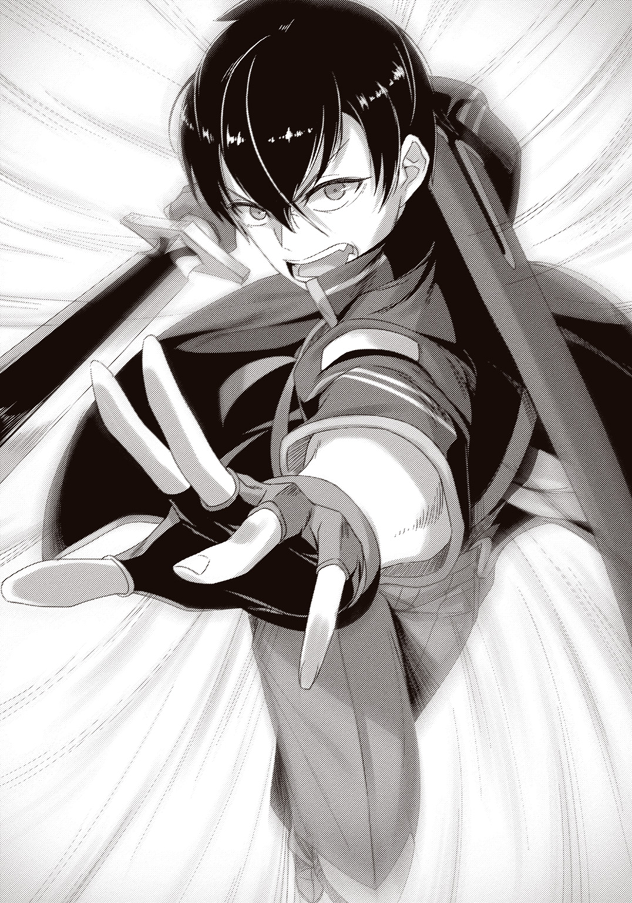
「............そうだね」仰向けのまま、セツナは呟く。「冥土の土産に、教えてくれないかい？ 今の技は一体、なんだったんだ......？」
少し迷ったが......剣は下ろさないまま、説明することにする。
「合計三〇回、百分の三秒ごとに、足裏で地面を蹴ってはその直前の姿勢に戻り、また地面を蹴る――ということを繰り返した。姿勢や慣性......自分の色んな要素を保存し、再生する。それがこの剣に封じられた魔法――《緋剣乱舞》の効果だったんだ。今のはその使い方の一つ。名付けるとしたら《フットワープ》――いや、単に《縮地》でいいか」
「......なるほど......。セーブに、ロードね......。はは、ゲームだなあ。ゲームだよ......」
セツナはしみじみと、嚙み締めるように呟いて――
「ところで、ケージ君」
「なんだ？」
「その剣から目を離さないほうがいいと思うよ」
「......は？」
直後だった。
床に突き刺さっていた邪剣バラグトスが、独りでに宙に浮いた。
気付くのが遅すぎた。邪剣は一目散に開け放たれた窓から飛び出していく。俺は追いかけてバルコニーに出るが、そのときにはすでに、平原で暴れ回る巨大な悪魔――魔王バラグトスの肉体に、邪剣が取り込まれていくところだった。
直後、魔王が咆哮を放つ。その咆哮はまるで――そう、俺の勘違いでなければ、まるで――
――産声を、あげたかのようだった......。
「もう僕を倒したところで、バラグトスは止まらない」
声に振り返る。赤いシールドを明滅させるセツナが、上体を起こしていた。
「確かに、僕は君に負けた。でも君は、まだこのゲームをクリアしちゃいない」
セツナの口元に浮かぶのは、挑戦的な笑み。
「さあ、見せてみろ――遊びで集まったイナゴでも、何かを救うことがあるんだって」
俺はその笑みを真っ向から受け止める。
......よく見とけ、馬鹿野郎。
たかがゲーマーが、世界を救う瞬間を......その目で。
俺は戦場を見渡して思考した。案の定、バラグトスの攻撃が苛烈になっている。サクラたちはよく耐えているが、全滅は時間の問題だ。あれはまともに戦って勝てる相手じゃない。
第一のネックはやはり敵の魔法だ。強化魔法をどうにかしなければ話にもならない。第二のネックはポジショニング。バラグトスはマナ濃度の高いエリアから出ようとはしないし、同時にサクラたちを自分のいるエリアにも入らせない。サクラたちはマナ濃度の低いエリアで戦うことを強いられ、結果、火力が致命的に足りなくなる。
「待てよ......ってことは」
状況を整理して思いついた。これらはあることが起こればどちらも解決されるのだ。
つまり、マナ濃度分布の変容。敵魔導士のいるエリアのマナ濃度が下がれば強化魔法は機能しなくなるし、サクラたちのエリアのマナ濃度が上がれば火力を上げられる。
でも、どうやって......？ 思い出せ、これまでもマナ濃度が急激に変わったことはあったはずだ。バラグトスが第二形態になったときもそうだったし――そうだ、初日にボスゴブリンと戦ったときもそうだった。あのときは確か、池が干上がったことで......つまり地形を――
――地形を変えればいい？ 例えばこの魔王城を崩すとか......。――いや。
俺は空を見上げた。降りしきる雨を顔で受けた。そして視線を平原に下げる。東のほうに走るあれは――川だ。この雨で増水した川がすぐ近くを走っていて――
「――あ」
頭の隅に生まれかけた何かを、俺は必死に手繰り寄せた。か細いそれを頼りに、頭の奥深くへと潜り、探り――そして見つけ出す。
――を倒す――傍にダムが――ビーバー――材料を調達――『エムル土砂災害、原因は――
点と点が繫がる。一本の線になる。全身に鳥肌が立ち、絶叫しそうになった。
「............張って、あったのか............！ 最初の最初に......伏線が、もう......!!」
そうだ、Ｓｅｒｉが言ってたじゃないか――『どんなに些細なものであっても、提示されたクエストはすべて、人類滅亡に直結する事象なのだ』と！
攻略法はわかった。でもおそらくは切っ掛けが必要だ。とにかくサクラに相談を――
そう思ったとき、バラグトスが両手を頭上に掲げた。そしてその両手の中で闇が渦巻き、巨大な球体を形作っていく......！
俺はそれを見たことがあった。九年前、まだ人型だったバラグトスが、俺たちを纏めて薙ぎ払ったあの技。あのときでさえ一発でマナ濃度が下がるほどの威力だった。だが今度のそれは、あのときの、一体、何倍の大きさだ!? 威力なんて及びもつかない！
狙いは――ああ、ふざけてる。あんなもんで、エリスたった一人を狙うつもりか......！
俺の背筋を、ざわり、と何かが撫でた。それは危機感――ではなく。
――勝機。
俺は《縮地》を使った。ｄｄｄｄｄｄｄｄｄダンッ!! と踏み切り音を連ならせる。夜空を大きく山なりに飛翔して、魔王城のバルコニーからエリスの前まで一気に移動した。
バラグトスが大闇球を放ったのは、俺が着地した直後のこと。
ブラックホールめいた暗黒が眼前に迫った。俺は剣を振り被り――《緋剣乱舞》を使用する。
【セーブ対象＝姿勢／慣性 ロード間隔＝０．０３秒 ロード回数＝１００回】
真紅の刃と漆黒の球体が激突した。俺の姿勢はインパクト直前のそれに幾度も幾度も巻き戻り、幾度も幾度も大闇球を斬りつける。しかし――
「リオっ!!」
背後からエリスの悲痛な声。腕にへし折れそうなほどの衝撃がかかっていた。足が少しずつ後ろに滑っていく。ダメだ、足りない――まだ足りない――もっと！
【セーブ対象＝姿勢／慣性 ロード間隔＝０．０３秒 ロード回数＝２００回】
ガリガリと音を立て、俺のシールドが削れていく。繰り返される強烈なインパクトに悲鳴を上げているのだ。柄を握る両手は痺れて感覚が消えている。俺は歯を食い縛った。
それでも、退けない......!! 退けないんだよ、ここはッ......!!
【セーブ対象＝姿勢／慣性 ロード間隔＝０．０３秒 ロード回数＝５００回】
シールドがレッドゲージに突入する。しかし、なおも大闇球の勢いは止まらない......。
......無理、なのか......？ このまま行けば、俺は五百回を待たずに力尽きる......。どれだけ思いを込めても......シールドは無情に、減り続けるのだ............。
「――大丈夫だよ、リオ」
そのとき。
そっと、肩に触れる、手があった。
「わたしも、一緒に―――遊べるから............!!」
減り続けていたシールドが、凄まじい勢いで回復していく。肩に触れた右手から流れ込んだ力が、全身に巡り、失いかけていた握力も取り戻す......！
それは、俺たちが――他ならぬ俺たちが、こうして触れ合っている間だけ成立するコンボ。有り余る回復力で反動を打ち消し――この一時だけ、俺は『無限』の権利を手にする！
【セーブ対象＝姿勢／慣性 ロード間隔＝０．０３秒 ロード回数＝１０００回】
――ギギギギャリギャリギャガガガガガゴゴガギャギャギャギャリギャリギャガンッッッ!!
三十秒もの間炸裂し続ける、轟音。目の前で火花が無数に爆ぜ、俺の五感を焼き切った。
そして―――軌道が変わる。
大闇球の軌道がわずか上に逸れ、俺の頭上を通り過ぎた。絶大な威力を秘めた大闇球は誰の命も奪うことなく、夜の彼方へと消えていく。
「―――ッはあっ......!!」
俺は息の塊を吐いて片膝を突いた。エリスのおかげでシールドは満タン。両手の握力も残っている。だが精神力でも消耗したのか、膝にまったく力が入らない。
......なのに。
魔王バラグトスが、再び両手を掲げていた。黒天に巨大な闇の球体が形作られていく。
もう一度あれを防ぐのは......はは、とてもじゃないが無理だ。消し飛ばされるのがオチ......。
「先輩！ エリスさんを連れて逃げてください!!」
できればやってる、と返したかったが......ただ息が漏れるだけだった。
「やっぱり！ 無理じゃないかッ!!」絶望に染まった絶叫が、どこからか聞こえてくる。「これでおしまい!! ジ・エンド!! ゲームオーバーだああああああああああああああッッ!!」
俺は力なく膝を突いたまま、天を衝く魔王を為す術なく見上げ、
――笑った。
「いいゲームだった」
―――ゴゴゴゴッ......!!
不意に、地響きが聞こえてきた。それは徐々に近付いてきて――やがて正体を見せる。
真っ黒な、濁流。
広大な平原を大量の濁った水が舐めていく。それはまるで終末の光景で――しかし、今回に限っては救世の福音だ。
バラグトスの両手で生成されていた大闇球が、消えた。
それも当然の話。
一面が濁流に満たされるという地形の変化が、マナ濃度に影響を与えないはずがない！
切っ掛けは、初日のクエストだった。【バーサークウルフを倒す】――俺とサクラがＰｆＳで初めに着手したあのクエスト。結局そこからは何の展開もなく、単なるチュートリアルの一環なんだとばかり思っていた。
だが、違ったんだ。あれこそが、この最終局面を乗り越えるための最重要クエストだった。
バーサークウルフはビーバーを主食としていた。ゆえにバーサークウルフを倒せばビーバーの数が増える。ビーバーの数が増えればダムが多く作られる。ゆえにダムの素材となる木がビーバーによって次々と斬り倒される。そして木が倒されると――つまり森林破壊があると――土壌が緩み、土砂崩れが起こりやすくなる。そこにこの大雨と、軌道を逸らされた大闇球による衝撃が重なった。そうして滑り落ちた土砂は増水した川を堰き止め――
バタフライ・エフェクト。
一見些末な現象が、少しずつ影響を連鎖させて大きな現象を引き起こす。人類保存会議は一番初めに布石を打っていた。それが九年もの時を超えて今、ついに効果を発揮した！
力を奪われたのは魔王だけじゃない。急激なマナ濃度の変化――低下によって、敵魔導士の強化魔法まで効果を失った。さらに――そう、今や有利と不利は逆転した！
「マナ濃度、レッドまで上昇！ 全員っ―――ぶっ放せええええええええええええええッ!!」
サクラの号令一下、鬨の声と共にとりどりの魔法が溢れ返った。炎や風や氷柱や雷が魔王の全身に突き刺さり、その巨軀を揺らがせる。前衛部隊や騎士たちも黙ってはいなかった。これまでの鬱憤を晴らすべく、絶叫しながら柔らかくなった魔王の身体を切り刻んでいく。
俺も気力を持ち直して走った。《緋剣乱舞》はまだ使える。全力全開で――ぶちかますッ!!
俺は《縮地》を使ってロケットになる。魔王の眉間に魔剣の切っ先を向け、激突の寸前――
【セーブ対象＝慣性／座標 ロード間隔＝０．０３秒 ロード回数＝10回】
音速めいた速度から生まれる衝撃が、一〇回にも渡って連続した。俺のシールドも反動でほとんど消し飛ぶ。だが恐るべきことに、これでも魔王の肉体を貫くには至らなかった。眉間に深い穴を穿たれたバラグトスは、大きく仰け反って痛々しい苦鳴を上げる。
倒れない。バラグトスは、ここまでされてまだ倒れない。禍々しい巨体を赤いダメージエフェクトに塗れさせ、それでも足を踏み出そうとした――そのとき。
黒雲が唸り、稲光を覗かせた。同時、サクラの朗々とした詠唱が響き渡る。
「天下に這い出せ、群れ成す雷―――!!」
その文言を聞いた瞬間、プレイヤーの誰もが興奮して歓声を上げた。
無理もない。今使われようとしているのは、複雑さ、規模、そして威力、すべてにおいて超越した、すなわち最強。現状それは二種類しか存在せず、あまりの発動難度から使うだけで喝采を浴び、そしてその威力は、ただの一撃で遍く敵を粉砕する。
この一ヶ月で生み出された何十もの魔法――その頂点、その一つ。
Ａランク魔法―――
「―――《万雷の蠍災》ッ!!」
黒雲から無数の稲妻が迸った。それは蠍の尾のように鋭く魔王の巨体に殺到する。鼓膜が破れそうな轟音と網膜が焼き切れそうな眩しさに俺は引っ繰り返った。
バチバチッ、バチバチバチッ!! 空気が弾け飛ぶ音に、魔王の苦痛の咆哮が混ざっていた。だがそれは、徐々に徐々に潰えていき―――やがて、消える。
俺が潰された視界を取り戻したとき......バラグトスは、まだ立っていた。
立ったまま――沈黙していた。
巨体は黒く煤け、指一本動かない――だが、炎に包まれて消えない以上、まだ生きている。
「――神よ！ 今こそその御力を！」
響き渡ったのは、少女の声だった。
エリスの聖旗が輝きを増し、魔王の巨軀を照らし出す。そして、崩壊が始まった。ぱらぱらと砂のように、バラグトスの身体が崩れていく。聖旗の力が浄化しているのだ。
聖旗の暖かな光に包まれながら、俺はそれを見上げていた。
勝った......？ 勝った......！ じわじわと実感が込み上げてきて、歓声を上げようと、
――した瞬間。
崩れつつあるバラグトスの身体から何かが飛び出すのを、俺は目撃する。
それは剣。漆黒の刀身を持つ、禍々しい邪剣。
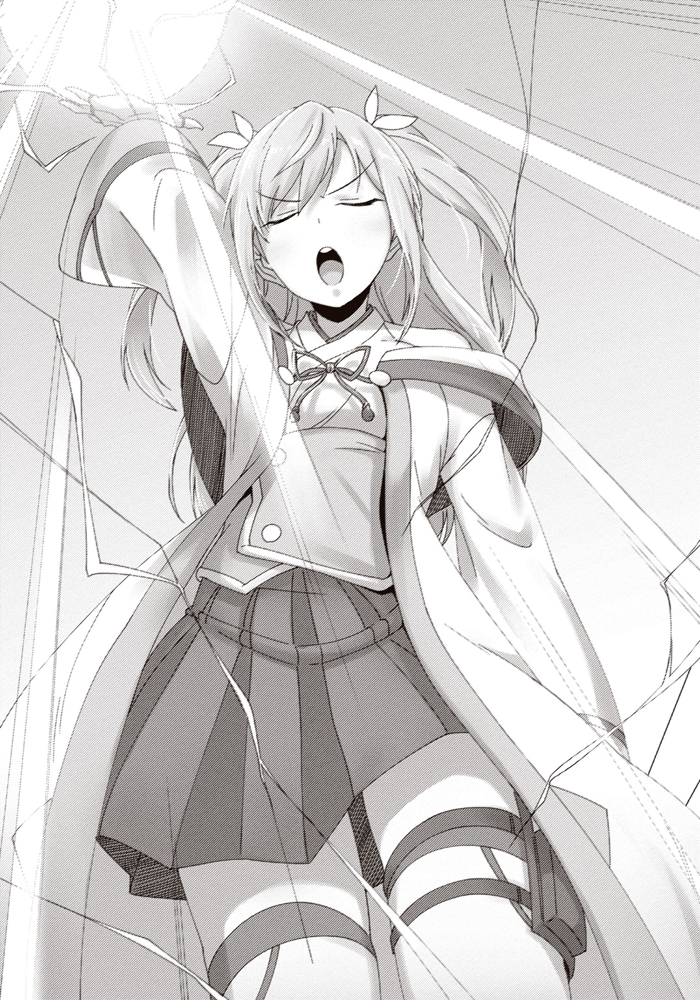
光の中を突き進むそれは、あるものを一直線に狙っていた。
言うまでもない――飛翔する邪剣の先には、エリスがいた。
誰も間に合わない。
誰も守れない。
エリスの胸に、邪剣の切っ先が突き立った。
瞬間、俺の脳裏に去来したのは、滅亡した二〇一六年で見た光景。
水晶めいた鉱物に封じられた、胸元を禍々しい剣に貫かれたエリスの死体――
元々......これが、運命だったのだ。魔王の最期の悪足搔きで、エリスは死ぬ。それが......。
「......とんだクソゲーだったね」
誰かが呟いた。結局自分がやらなくてもこうなったんじゃないか、と拗ねるように。
しかし、俺は首を振る。
「神ゲーだろ、どう見ても」
それは、偶然だ。
偶然、『それ』は戦いの直前に贈られていた。
偶然、『それ』はとても硬い物質でできていた。
だから偶然――エリスの胸に下がったペンダントが、邪剣の切っ先を受け止めたのだ。
提示されたクエストは、例外なく人類滅亡に直結する事象。
たとえそれが、少女にペンダントをプレゼントする、というほんの些細なものであろうとも。
掌より小さなペンダントに阻まれた邪剣は、聖旗の光を受けて、さらさらと崩れ去った......。
【グランドクエスト・クリア！】
【ＮＥＸＴ：エピローグ】
降りしきる雨の中、俺たちは歓声を爆発させた。
そこらでプレイヤーと甲冑を着た騎士が拳をぶつけ合っている。サクラとエリスが抱き合って跳びはねている。ＴＬが壊れそうなスピードで動き、文字で画面を埋め尽くしていった。区別なんてない。誰も彼もが歓喜を共有した。
そんな光景から少し視線を外した俺は、魔王城の前に、少年が一人、座り込んでいるのを見つける。声をかけようとしたが――その前に、バラグトスを強化していた魔導士たちがどこからか姿を見せ、心配そうに駆け寄っていった。それだけじゃない。歓喜に沸いていたプレイヤーたちの中からも、何人かがセツナのもとへと走っていく。
目的が人類滅亡とはいえ、協力し合った仲間。そして、流言に惑わされず、あいつのことを好きでい続けたファン。......俺みたいなニワカに、出る幕はないってわけだ。
「彼が殺人を犯したことは事実です」
いつの間にか隣で飛んでいたＳｅｒｉが、多くの人間に囲まれたセツナを見て言った。
「彼の憎悪はあまりに深かった。我々では抑えようがないほど。ですが、ゲームマスターとして、プレイヤーの中から犠牲者も加害者も出すわけにはいきませんでした」
「......どういうことだ？」
「彼が殺人を犯したのは、我々が用意した仮想現実の中でのことです。殺人事件のニュースも、我々が用意したダミーに過ぎません。誰一人、死んでなどいないのです」
なんだって!? じゃあ、あいつは......。
「繰り返しますが、彼が殺人を犯したことは事実です」Ｓｅｒｉは淡白な声で言う。「もちろん、本を正せば我々の安全対策の甘さが原因です。ですが、だからこそ、彼には我々の監視を付けることになるでしょう。彼の憎悪が薄まるそのときまで」
......大丈夫だろ。きっと、そのときは存外に早く来る。俺には、そう思えたのだった。
「リオーっ！」「先輩！」
エリスとサクラが駆け寄ってくる。俺は手を上げ、二人とハイタッチを交わした。
「リオっ、カッコ良かったーっ!!」
「おぶっ!? 飛びつくな！ シールドが壊れたらどうする！」
今や俺とエリスの身長は一〇センチそこそこしか変わらないのだ。こんなタックルめいた抱きつき方をされたら普通にダメージを受ける。......っていうかなぜシールドが働かない？
「あのね、あのね！ ものすごい速さでね、ビュンって、守りに来てくれたとき！ もうもうもう！ カッコ良すぎてどうにかなりそうだったっ！ どれだけわたしをときめかせたら気が済むのっ!? もう、なんていうか、もう！ 妊娠しそう!!」
やめてやめてそこまで褒められると恥ずかしいやめてやめて。
エリスの褒め殺しに顔を覆っていると、サクラが何だか複雑な表情を浮かべていた。
「まあ、確かにですね？ カッコ良かったと認めなくもないですけど？ 私のポイントはそこまで安くないっていうか？ この程度で調子に乗らないでほしいものですね」
「何それ......褒めたいなら普通に言ってくんない？」
「サクラも内心キュンキュンしてるんだよー！ 妊娠しそうなんだよ！」
「しそうじゃないです！ 怖いこと言わないでください！ ......まあ、百ポイントくらいならあげてもいいですけど。『無人の屋上で一緒にお弁当を食べる権利』と交換できます」
それはどの程度の評価なの？ シリアイくらい？
全員テンションがおかしなことになっていたが、それも少しずつ治まってくる。
「ねえ二人とも。この後みんなはどうするの？ たぶんこれからパーティすると思うけど」
九年越しに魔王を倒したのだ。エムルの人々はそれを祝うのだろう。だけど......。
「......有効時間が残り少ない。たぶん俺たちは、このまま帰ることになると思う」
「そっか......」
ポータルが閉じ、強制ログアウトになれば、エリスとはもう会えなくなる。俺たちは違う時代の人間だ。どんなに通じ合っても、ずっと同じ時を過ごすわけにはいかないのだ。
それでも――ああ、それでも。
俺は表情を沈ませたエリスの頭をそっと撫で、いつもと同じ言葉を告げた。
「また会おう、エリス。いつか、また」
「そうです！」横からサクラがエリスに抱きついた。「絶対に、また会いましょう！」
俺たちの身体がキラキラと輝きを放ち始める。時間が来たのだ。
エリスはその輝きを大きな瞳に映し、寂しそうに微笑んだ。目の端に少しの雫を溜め――だが、笑う。明るく、楽しく、太陽のように――少女エリスは笑って告げた。
「――うん！ また会おうね、みんな！ 絶対に！」
俺たちに限らず、ＰｆＳプレイヤー全員が、「おう!!」と威勢良く答えた。
%%%%%%%%%%%%%%%%%%%%%"catastrophe pointの回避に成功しました"%%%%%%%%%%%%%%%%%%%%%%%%
%%%%%%%%%%%%%%%%%%%%%%%%%%%%%%"Now Re-collapsing..."%%%%%%%%%%%%%%%%%%%%%%%%%%%%%%%%
終 章 エンディングでも泣くんじゃない
%%%%%%%%%%%%%%%%%%%%%%%%%%%%"D. E. 2016/07/28/00:14:03"%%%%%%%%%%%%%%%%%%%%%%%%%%%%%%%
目を覚ますと、いつものネカフェのブースだった。
「......戻って、きた......？」
俺の肩に頭を預けていたサクラが目を擦りながら起き上がる。ブース内を見回して、
「あれ......？ 私たち、別の場所からログインしたんじゃないですっけ......」
「現実が元に戻ったから、俺たちの位置も元に戻ったってことか......？ っていうか、何時間ここに籠もってることになってんだ、俺ら」
スマホで時間を確認すると零時を回っていた。普通に補導される時間だな。未成年はネカフェに入れない時間でもある。そこら辺、人類保存会議が適当にやってくれているのだろうか？
スマホを見ていてふと思いつき、サードアイを起動した。ブース内を映してみる。
ポータルを意味するＡＲの光の渦は、どこにも見つけられなかった。
続いてＰｆＳのメニューやヒーロー・タイムラインも試してみるが、どちらも繫がらない。
......終わったのだ。ＰｆＳというゲームは。
寂しいような、不可思議な感覚に浸っていると、隣でサクラが「あっ」と声を上げた。
「先輩！ これ見てください！ これ！」
「んん？」
サクラが見せてきたスマホには、トゥイッターの個人ＴＬが映っていた。ＰｆＳの開始を告知したあのアカウントだ。ＩＤは『help_real0550』――『現実を助けて。５５０年より』。
前はたった一文しか表示されていなかったはずだが......今は、新たな呟きが現れていた。
〈【１】エピローグ〉
そうして次々とトゥイートされていくのは、一篇の小説だった。
俺たちと別れたあと、エリスがどうなったのか――それを描いた、小説だった。
〈【１】エピローグ〉
〈【２】魔王亡き後、聖女エリスの名声はますます高まり、以前にも増して民の信仰を集めることとなった。その名声の高まりと共に、彼女を守る騎士団はさらなる権力を握るようになる。エムルの街の統治が、もはや聖女エリスと騎士団なしにはままならないほどに。〉
〈【３】それを疎んだのが、旧来の宗教であるジェラン教であり、当時の為政者たちであった。エリス本人はジェラン教の信徒であったが、民たちはジェラン教の神ではなく彼女自身を信仰していた。これはジェラン教の威信を脅かすに充分な事実であった。〉
〈【４】エリスを危険視したジェラン教は、彼女に異端の判定を下す。為政者たちもこれを支持した。しかし民と騎士団が猛反発し、二つの派閥で戦争が始まった。〉
〈【５】血で血を洗う、という言葉に相応しい戦いは、エムルの街を荒廃させた。わずか数週間の戦いで、九年間増え続けたエムルの人口が半分以下にまで減った。しかし、誰も嘆かない。誰もが己が信じるものに殉ずるつもりだった。心を痛めたのはただ一人――エリスのみ。〉
〈【６】戦いを止めるため、エリスは自らを差し出した。ジェラン教の異端判定を甘んじて受け入れ、後にエムル駅が建つことになる処刑広場で、火刑台へと上がったのだ。〉
〈【７】民たちは切望し、騎士たちは希望した――勇者の、再臨を。しかし、彼らが現れることはなかった。そう――ご存知の通り、彼らはすでに役目を終えていたのだ......。〉
〈【８】縛り上げられた聖女エリスが、炎の中へと消えていく......。美しい金の髪が、玉のような白い肌が、たちまち黒く焼け焦げた。しかし彼女は悲鳴一つ上げず、悲嘆する民たちに告げたと言う――「悲しまないで。いつか、笑ってわたしを出迎えて」〉
〈【９】火刑ののち、刑吏は驚愕した。灰の中にエリスの死体がなかったのだ！ 民たちは口を揃えて噂した。聖女はいつか復活する。そして我らを救ってくださるのだと。この噂話が、後に『聖旗教』と呼ばれる宗教の端緒であった――〉
〈【10】ＴＨＥ ＥＮＤ〉
何度も、読み返した。『ＴＨＥ ＥＮＤ』――その六文字が信じられなくて、何度も何度も、頭から読み直した。......しかし、何度読んでも......記された文章は、変わらない。
「―――ふッ......！」
頭の中がぐつぐつ煮える。嚙み締めた歯がぎぎりと軋む。手の甲の血管がぴくぴく震える。
「ざッ......けッ―――あああああああああああああああああああああああああああッッッ!!」
わけもわからず、俺は苛立ちのままにソファーを殴りつける。何度も何度も。何度も何度も。それでも、頭の中で煮えたぎる灼熱は、ちっとも冷める気配がなかった。
「こんなっ......！ こんな結末のために!! 俺たちは......戦ったんじゃないっ......!!」
じわりと涙が浮いてきて、俺は項垂れた。
あんまりだろ......。あんまりだろ、こんなのッ!! 普通の人生を取り上げられて、戦いばかりの生活に耐え抜いて......ようやく、役目を果たしたってのに......。どうして！ あいつが殺されなくちゃならない!? どうして――どう、してっ......!!
サクラは呆然とスマホを見つめていた。俺も怒る気力すらなくなってくる。俺たちにはもう、どうにもできないんだ。すべては千五百年も前に終わったことで――
そのとき。
俺とサクラのスマホが、ぶるりと震えた。
「えっ？」「あ......？」
メールだった。差出人は......わからない。件名は......『２０１６年へ』？
反射的だった。何かに急かされるようにそのメールを開き――瞬間、俺たちは立ち上がる。
〈時を刻む灯りの下で ５５９年より〉
たったそれだけの文章。たったそれだけのメッセージ。
でも、俺たちには充分だった。
俺はサクラと無言で視線を交わし合い、そして、頷き合う。
まだ終わらせない――エンディングにはまだ早い！
深夜なのでタクシーを拾った。どう勘違いしたのか、運転手のおっさんが若いからって早まったことは云々と説教めいた話をしてきたがまるっと聞き流し、窓の外を見る。
「元通り......ですね」
隣のサクラの呟きに、俺は無言で頷いた。
エムルの街には廃墟もモンスターも存在しない。まるで夢か幻だったかのように、元通り。......しかし、ゴブリンにやられた傷は、今もかすかに、しかし確かに、疼いていた。
夜の街を抜け、辿り着いたのはエムル駅だ。エムル駅はエムル市に似つかわしからぬ近未来的な建物だ。昼間は大勢の人間が行き交っているが、さすがに深夜とあってひと気は少なかった。ちらほらと見かけるのは......はは、なんか見覚えのある奴ばっかだな。
「皆さん、わかったんですね」
「当たり前だろ。全員で約束したんだ」
セツナの姿も見かけた。だが俺たちは挨拶もせず、無言で駅ビルの中へと入っていく。
俺たちは迷わずエスカレーターで二階に上がった。駅ビルをまっすぐ貫く南北自由通路に出て、南に歩いていく。すると、向こう側からも、いくつもの人影が姿を現した。北と南、正反対から集まってきた俺たちは、ピタリと、ある場所で一斉に立ち止まる。
『時の灯』――南北自由通路の途中にある、時計が設置された小さな広場だ。
待ち合わせにはうってつけ。たとえそれが、千五百年の時を隔てたものであったとしても。
俺たちは誰からともなくスマホを取り出し、サードアイを起動した。そしてすぐに発見する。時計の下に佇む、光でできた人影のようなものを。
人影からポップアップしたアイコンをタップすると、すぐに小説のような文章が表示される。
タイトルは――『エリスの残留思念』。
俺たちは無言で、その内容を読んでいった――
『◆エリスの残留思念◆
熱かった。熱くて熱くて熱かった。足が熱い。手が熱い。お腹も背中も胸も顔も、全部熱い。
涙が出そうだった。どうしてこんな目に遭わなくちゃいけないんだろう？ わたしはただ、目の前で傷付く人がいるのが嫌だっただけなのに。
覚悟の上だったはずなのに、後悔が止め処なく湧いてくる。
もっと他の子みたいに遊びたかった。院長先生みたいな立派な修道女になりたかった。それで、本当はいけないけど恋をして、こっそり会ってお話ししたり、手紙を送り合ったり、ちゅーしたり、お嫁さんになったり、えっちなこともしたり、お母さんになったり......。
でも、......わたしには、できなかった。
一〇歳のあの日から始まった九年間を思い出す。使命感に燃えていたのは最初だけだった。その後は、はっきり言って、つらいことばかり。そのうち聖旗を見るのも嫌になった。
それでも続けられたのは、みんながいたから。本当にときどきしか来てくれないけど、わたしはみんなといるのが大好きだった。だって、みんな、楽しそうだったから。楽しそうなみんなを見ていると、わたしもなぜだか楽しくなった。やることは普段と同じなのにね。
わたしは、炎の中からたくさんの人を見る。みんな、悲しい顔をしていた。わたしがいなくなったら、きっと寂しがってくれるんだろう。みんながいないときのわたしみたいに。
だから、わたしは声を絞り出した。
爛れた唇を動かして、喉の痛みを無視して。
「悲しまないで。いつか、笑ってわたしを出迎えて」
そうだ、彼も彼女も言ってくれた。
いつものように、頭を撫でて――「アーシュゲイン」って。
だから......ね？
わたしは、寂しくないよ............――――――』
「――え？」
読み終えるなり、俺は感慨に浸る暇もなく疑問の声を上げる。
アーシュゲイン――それはＰｆＳログイン時の合言葉だ。それを......おそらくは俺とサクラが、エリスに言った？ いや、違う。俺が言ったのはこうだ――『また会おう』。
「......翻訳、ですよ......」サクラが震え声で呟く。「現代の言葉と魔法時代の言葉は違う......。だから私たちの言葉は翻訳されて......エリスさんには、そう聞こえていた......」
それは......つまり、こういうことか？
俺たちがログインのたびに言っていた『アーシュゲイン』は、魔法時代の言葉で『また会おう』という意味だった？ 俺たちはログインするたびにＳｅｒｉに『また会おう』と――
「――あ」
瞬間だった。
「あ、ああ......!!」
俺は、気付いてしまった。
「ああ、あああああ!! あぁああああぁああああああああぁああああああああ――――っ!!」
なぜ今まで気付けなかったのかというほどの、至極簡単なアナグラムに――
『Ｓｅｒｉ』 → 『Ｅｒｉｓ』
あいつは......ずっと......傍にいたんだ。
何もかもを知った上で......ただ静かに......俺たちを、見守り続けていた......。
気付けば、サードアイの画面から光の人影が消えていた。代わりにひらひらと飛んでいたのは、陶器でできたマネキンのような、小さな妖精――
その肌に、亀裂が走る。
まるで殻を脱ぎ捨てるように、ボロボロと陶器の肌を剝落させて、中から出てきたのは人間の白い肌だった。頭部の肌も剝がれると、金色の髪がふわりと広がる。その豊満な胸元では、美しい宝石のペンダントが、虹色の輝きを放っていた......。
仮初の姿を捨て去り、真の姿を現した彼女は――にこりと、見慣れた笑顔で告げる。
「また......会えたね！」
POST-FANTASY STRUGGLE：ALL CLEAR――Thank you for playing!
あとがき
どうもこんにちは。紙城境介と申します。好きな言葉は『枯れた技術の水平思考』です。
自分の歳を数えなくなって久しい私ですけれど、しかしながら、ゲームハードで言うとニンテンドウ64世代であることはまだ覚えています。忘れもしません。小学校一年生の頃、私が生まれて初めて買ってもらったゲームは、マリオカート64でした。
友達が四人以上集まっては壁越えショートカットのために揃ってガツガツガツガツ壁に突っ込みまくるという遊びを繰り返しました。今にして思うと面白いのかそれと思わざるを得ませんが、当時小学生の我々は心から楽しんでいたのです。
中学校に上がると、それぞれの小学校においてスマブラの頂点を極めし者たちが一堂に会し、中学最強を決める闘いが来る日も来る日も巻き起こりました。結果、勝ち残ったのは、ネットを見てテクニックを勉強するという、当時の中学生基準ではチート同然の行為をしていた奴でした。私のことです。
斯様にして、子供時代のことを思い返してみると、その大部分がゲームに占められていることがわかります。登校するたびにポケモンのバッジの数を報告し合ったり、友達全員で一丸となって水の神殿を攻略したり、リアルインセクター羽蛾にエクゾディアパーツをパクられたり、小学生ばっかりのカードゲーム大会に謎のおっさんが冷酷無比なデッキで乗り込んできたり、雨の日の教室で大富豪にオリジナルルールを付け加えたり、カウンセリングルームを隣人部ばりの溜まり場にしてひたすらＵＮＯに興じたり、思い出されるのはそんなことばっかりです。
翻って、今、二〇一六年。
マリオカートを買ってもらったあの頃から、ゲームもずいぶんと進化したなあ、と思います。ＰＳＶＲも出るし、ポケモンＧＯもあんなことになったし。ちなみに、作中の時期が二〇一六年七月なのはたまたまです（初稿を書いたのは去年）。
ゲーム実況というジャンルが生まれ、ニコ生には私もかれこれ七年くらい入り浸っております。最近はツイッチでプロゲーマーの配信を見ているのが当たり前になっていて、文化としてもかなり発達したなあと思うこと頻りです。
私は、その進化を、発達を、変化を見ながら育ってきました。
ファミコンの時代からゲームに触れてきた人や、あるいはゲームセンターに足繁く通っていた人などに比べれば、私が見てきたものはほんの一端に過ぎないでしょう。私は別に、ゲームセンターで地元の強豪たちと鎬を削っていたわけでもなければ、ネットゲームに人生捧げるレベルでのめりこんでいたわけでもありません。
ですけど、思い返してみれば、ゲームの思い出ばかりがある。単なる遊びのはずのゲームが、自分という存在に強く影響を与えている。それに気付いたとき――
『これは、ゲームであって遊びである』
――この言い回しが、単なるパロディに終わらないことを確信したのでした。
さて、本作のサブタイトルは『＃君とリアルを取り戻すＲＰＧ』です。が、ＰｆＳのゲームシステムの直接的なモデルはＡＲＧ――代替現実ゲームと呼ばれるジャンルです。
このジャンルには、現実とフィクションが境界を越えて交錯しながら進んでいく、という特徴がありまして、以前、私が参加したＡＲＧでは登場人物と現実のプレイヤーがリアルタイムに意思疎通したりしていました。あの現実とフィクションが混ざる感覚が尋常ではなく面白くて、今回、参考に使わせてもらいました。
そして、この遊者戦記という作品それ自体のジャンルは『ゲーム実況ノベル』です。当然ながら私の造語なんですけど（ジャンル名を勝手に作るのが好きなのである）、要するにただゲームで遊んでいるだけの小説です。
ゲーム実況動画がしばしば実況者の喋りのほうがメインになるのと同様に、本作のメインはリオとサクラの掛け合いです。こいつら隙あらばイチャつきやがってもっとやれ。私のお気に入りは学校でＬＩＮＫをするシーンです。この二人に桃鉄やらせたい。
なんなら私はこの二人が普通のゲームを普通に遊んでるところを一生書いていたいくらいなんですけど、実際どれだけ続けられるかは完全に売り上げ次第となります。魔法時代って千年もあるんですけど、一体何年まで行けるんだろう。私でさえ未知数。
もし続いた場合は、ＰｆＳのシステムにもアップグレードを施して、新要素をどかどか実装するつもりです。アバターのカスタマイズ要素が弱いのでおそらくその辺りと、現実のゲームでは実現できないような何らかの新システム。一応いくつかネタはあります。
現状、続刊は保証されておりませんので、応援していただけると感無量です。
以下スタッフロール（謝辞）。
担当様。私一人ではこの話は間違いなく生まれていませんでした。きちんとコントロールされていなかったら、この小説はおそらく、かなり破綻した出来になっていたと思います。
イラストの４０原先生。サクラが可愛い。とにかく可愛い。『和風でもいいかも？』という曖昧な指定を見事に汲み取ってくださって本当にありがとう！ それと私服エリスを使わないのはあまりにも勿体ないので機会があれば必ず。
校正、宣伝、その他この本に関わった皆様。作中でタイトルを出したゲーム。ネタに使ったゲーム。そして今これを読んでいるあなたにも、心より感謝を。
今回はここまでですが、また早いうちにお会いできたら嬉しいです。
そんなわけで、紙城境介より『遊者戦記 ＃君とリアルを取り戻すＲＰＧ』でした。
著者紹介
紙城境介 かみしろ きょうすけ
ポケモンＧＯのおかげで金閣寺の場所を答えられるようになった京都市民。『ウィッチハント・カーテンコール 超歴史的殺人事件』でデビュー。
好きなテイルズはシンフォニア。ラタトスク肯定派。初プレイ時、全速でストーリーを進めた結果、ラスダンでレベル上げを強いられるという屈辱を受ける。ボス戦でヒールはやめろ...！
illustration
４０原 しまはら
フリーランスのイラストレーター。
ネットを中心に活動中。日常的なイラストや鮮やかな色使いが特徴。現在は書籍やキャラクターデザイン等をメインに様々なジャンルで活動の幅を広げている。
ダッシュエックス文庫DIGITAL
遊者戦記
＃君とリアルを取り戻すＲＰＧ
著者 紙城境介
© KYOSUKE KAMISHIRO 2016
２０１６年11月30日発行
この電子書籍は、ダッシュエックス文庫「遊者戦記 ＃君とリアルを取り戻すＲＰＧ」
２０１６年10月30日発行の第１刷を底本としています。
発行者 鈴木晴彦
発行所 株式会社 集英社
〒１０１－８０５０
東京都千代田区一ツ橋２丁目５番10号
０３－３２３０－６０８０（読者係）
制作所 株式会社ＩＣＥ
本作品の全部また一部を無断で複製、転載、改竄、インターネット上に掲載すること、および有償無償に関わらず、本データを第三者に譲渡することを禁じます。なお個人利用の目的であっても、コピーガードを解除しての複製は、法律で禁じられています。